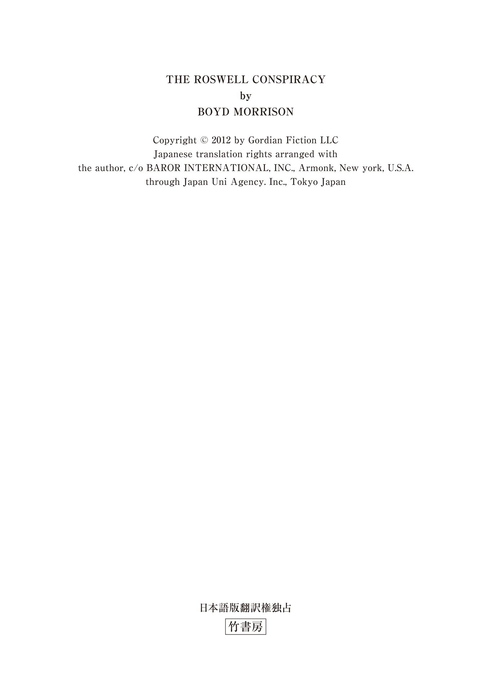
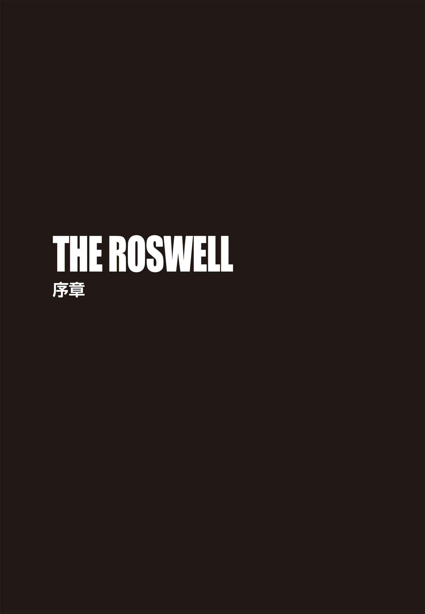
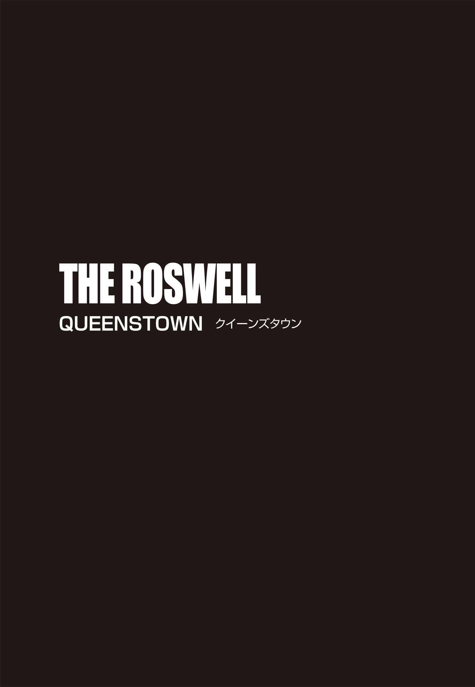
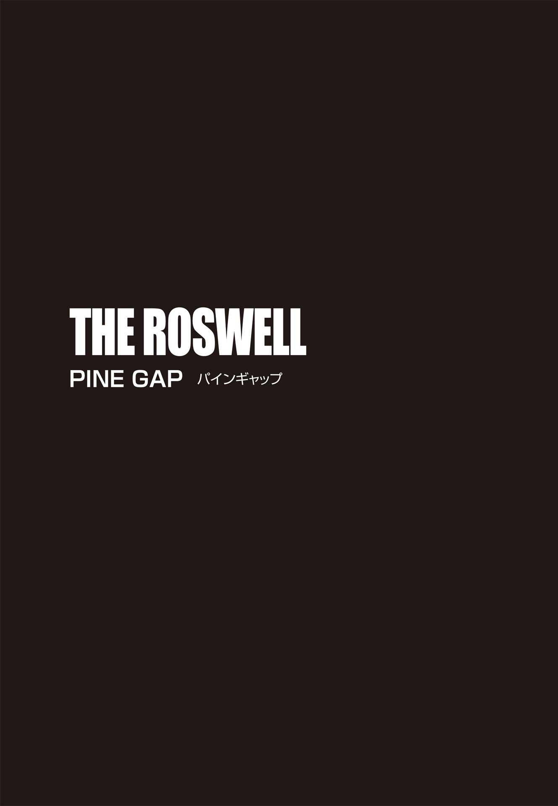

| ＴＨＥ ＲＯＳＷＥＬＬ 封印された異星人の遺言 上 (竹書房文庫) | |
| ボイド・モリソン | |
| (2015) | |
この作品は縦書きでレイアウトされています。
また、ご覧になる機種により、表示の差異が認められることがあります。
一部の漢字が簡略字で表示されていることがあります。

登場人物紹介
タイラー・ロック .........世界有数の民間エンジニアリング企業〈ゴルディアン・エンジニアリング社〉の主任エンジニア及び特殊作戦チーフ。
グラント・ウェストフィールド .........〈ゴルディアン・エンジニアリング社〉の電気工学のエキスパート。タイラーの親友。
フェイ・チューリア .........ニュージーランドで牧場を営む老婦人。
ジェシカ・マクブライド .........フェイの孫娘。タイラーの大学時代の恋人。
モーガン・ベル .........空軍特別捜査局（ＯＳＩ）の捜査官。
ヴィンス・キャメロン .........モーガンの相棒の捜査官。
チャールズ・ケスラー .........科学者。ライトフォール計画の責任者。
イワン・ドムブロフスキー .........元ロシア兵の科学者。
ヴァシリ・スズダレフ .........ロシア人探検家。
ウラジミール・コルチェフ .........元ロシア諜報員。
ディミトリ・ゾトキン .........コルチェフの右腕。
ナディア・ベドヴァ .........コルチェフの元同僚でかつての恋人。
ビリー・レイモンド .........ＵＦＯ関連のブロガー。
アンドリュー・ハル .........シドニーの貿易会社のＣＥＯ。武器商人。
ＴＨＥ ＲＯＳＷＥＬＬ
封印された異星人の遺言 タイラー・ロックの冒険③ 上
妻ランディへ 君は僕のインスピレーションだ

一九一八年七月二十三日
イワン・ドムブロフスキーは湿地帯を延々と歩き回っていた。踏み出すたびに泥が足にまとわりつき、音を立てる。立ち止まるのは、乱れた呼吸を整えるときだけだ。追跡犬が遠くで吠 えているのがわかったが、周囲に立ち込める悪臭が犬たちの嗅覚を鈍らせているのか、今日の仕事ぶりは今ひとつだ。彼は腰のホルスターに触れ、リボルバー、ナガンＭ１８９５がしっかりそこに収まっていることを確認した。然 るべき時が来たら、必要となる。敬愛するロシア帝国皇帝ニコライ二世の後来を守るために──。
空を覆っていた雨雲が割れて満月が顔を出し、彼は咄 嗟 に身を屈めた。辺りに広がるのは、なぎ倒された木々ばかり。月明かりで己の姿が目立ってしまうのはマズい。雨がやみ、ホッとしたのも束の間、どこからともなく蚊とブユの大群が現われた。幸い、頭から足先までウールの衣服に身を包み、顔をネットで覆っていたおかげで、ドムブロフスキーは吸血昆虫に煩わされずに済んでいた。内側にこもった熱で不快指数は相当なものだったが、大量の小虫の猛攻に比べれば、まだ耐えられる。広大なシベリアの荒れ果てた地を長時間進むうち、チームの半数はまとわりつく虫を追い払うことで、余分な体力と気力を消耗してしまっていた。
ドムブロフスキーが歩みを止めると、たちまち静寂に包まれ、自分の呼吸音と心臓の鼓動がやけに大きく感じられた。向こう の気配があるかどうか、辺りを慎重に見回す。こちらを出し抜こうとする相手──ヴァシリ・スズダレフ──は近くにいるはずだ。泥に残る足跡は、互いが同じ場所を周回していることを意味していた。しかし、さっきまで降っていた雨のせいで、スズダレフがぬかるみを進む足音はかき消されていたのだ。
ドムブロフスキーの視界に入るのは、「死の大地」と呼ぶにふさわしい殺伐とした風景だった。ツングースカ地域に入ってすでに一週間以上経 つものの、身震いするほどの興奮と衝撃は今も続いている。歩いても歩いても、視線の先に見渡す限り広がるのは、なぎ倒され、焼き焦がされた無数の樹木ばかり。十年前のあの日、どれだけ巨大な範囲が瞬時に焦土と化したのか。答えは目前にあり、彼はまたゾクリと身体を震わせた。
ツングース系民族、エヴェンキ族の報告によれば、ツングースカ大爆発は、わずか数秒の出来事だったという。目もくらむような閃 光 が空に走った直後、何百もの大砲が同時に火を噴いたのかと思うほどの轟 音 が鳴り響いた、と彼らは証言している。
ドムブロフスキー自身は、爆心地から全方向二十キロメートルのエリアが壊滅状態となったと踏んでいた。それは、モスクワとほぼ同じ面積だ。これだけの破壊力を持つ何かが存在していたとは、にわかに信じがたい。しかし、前代未聞の破壊規模にもかかわらず、現場は人が住む地域ではなかったため、犠牲者は皆無だった。
レーニン率いる左派の一派ボルシェヴィキの諜報員、スズダレフは二年前にこの地に入り、地球上では未確認の金属物質を発見していた。持ち帰って分析を行ったものの、実験中のアクシデントで物質が破壊されてしまい、やつは物質採取の再遠征に出るはめになったのだ。そして、ドムブロフスキーが送り込まれた。その使命は、スズダレフが問題の秘密物質をモスクワに持ち帰る前に奪い、母国の破滅を阻止すること。共産主義者たちの目論みを止められるなら、この身を犠牲にしても構わない。連中は自分の妻と娘を殺した。国までも奪われてたまるものか。
雲が再び月を覆い、大きな雨粒が身体を濡 らし始めた。彼は今一度周りを見、上体を起こして巨大な倒木の上にすばやく飛び乗った。そのまま丸太伝いに移動すれば、足がぬかるみに取られることはない。無残に裂けた幹の端まで来たドムブロフスキーは、なんの迷いもなく、隣に転がる木に飛び移ろうとした。ところが、跳躍をした直後、誰かの手にぐいとブーツを摑 まれ、バランスを崩してしまった。彼は木の幹に胸をしたたかに打ちつけ、泥の地面に転がり落ちた。
クソッ、油断していた。スズダレフはこちらの動きを読み、丸太の裏に潜んで不意打ちの機会をうかがっていたに違いない。相手はすかさず、仰向けになったドムブロフスキーに飛びかかってきた。みぞおちに膝蹴りが入り、酸素を求めて悶 えているうちに、敵の手はホルスターをまさぐってきた。リボルバーを取られてなるものかと、彼は地面の泥を鷲 摑みにし、スズダレフの顔に投げつけた。視界を奪われたボルシェヴィキ野郎は、顔面のネットにへばりついた泥を拭おうと必死だ。その隙をつき、今度はこちらが攻撃を仕掛ける。喉元目がけて拳を繰り出すや、強烈な首への一撃で男は崩れ落ち、ドムブロフスキーは身体を回転させて拳銃を引き抜いた。立ち上がるのにふらついたが、銃口はずっとスズダレフに向けていた。相手はというと、四つんばいで苦しそうに喘 いでいる。目の前の男はもはや脅威ではない。それにしても、危ないところだった。もし敵が武器を持っていたら、自分はとっくに殺 られていただろう。
猟犬の吠え声に混じり、複数の男たちが呼ぶ声も聞こえてきた。武装した十五人の追跡メンバーがようやく近くまで来たようだ。
「例のものはどこだ？」相手を見下ろし、ドムブロフスキーが鋭く訊 ねる。
スズダレフは尻をついて座り、唾と一緒に泥を吐き出して言った。
「あれはなんの役にも立たないぞ」
「違うな。強力な兵器になる。わが皇帝にとっても──」
彼の言葉は男にさえぎられた。
「ニコライ二世なら、すでに処刑されている。皇帝だけじゃない。家族も皆殺しだ」
ドムブロフスキーは目を細めた。「何を言ってる？」
黒雲が割れ、月がフードを被 ったスズダレフの顔を照らした。不敵な笑みが青白く浮かび上がる。
「わからないのか？ ロマノフ一族は全滅したんだ。我が国は、ついに〝労働者の理想郷〟として生まれ変わるんだよ」
「皇帝が亡くなったとなぜ言い切れる？」
「私は、同志レーニンが最も信頼を置く諜報員だ。当然、多くの情報に通じている。ニコライたちを七月十七日の未明に殺害せよとの命令が出ていた」
七月十七日。かれこれ六日も前だ。これだけ人里離れた場所にいるのだから、そのような重要な知らせでも、耳に届くにはしばらく時間がかかる。スズダレフは真実を語っているのかもしれない。だとしたら、ドムブロフスキーの任務は、さらに重要な意味を帯びてくる。共産主義者どもが国家を乗っ取り、スズダレフの秘密の物質を手に入れた場合、連中の革命はロシア国境で食い止められる規模ではなくなる恐れもあるからだ。
追っていた獲物の臭いに反応し、犬が激しく吠え出した。
「ゼノビウムを新たに発見したな？ 隠しても無駄だ」
そう問いただし、ドムブロフスキーは相手を睨 みつけた。「どこにあるかを明かせば、苦しまずに死なせてやる」
「一時間前に隠した。おまえには見つけられない」
しらを切ったスズダレフに、彼は躊 躇 なく引き金を引き、左膝を撃ち抜いた。銃声とともに、男の絶叫と犬の吠え声、後続隊の叫び声が空虚な一帯に響き渡る。
「噓をつくな」
どこかに隠しただと？ 真夜中に？ 辺り一面、似たような倒木だらけだ。暗闇の中で遠くに隠した場合、当人ですら見分けがつかず、二度と回収できなくなるだろう。ならば──。
そのとき、ドムブロフスキーは、脇に転がる丸太に違和感を覚えた。目を凝らすと、幹に開いた穴にナップザックが押し込まれているのがわかった。スズダレフに銃を向けたまま、荷物を引っ張り出し、中を覗 き込む。だが、中身は食料だった。例の物質は入っていない。次にスズダレフのポケットをチェックしたが、やはり同じ結果だった。
「どこだ!? 」
ドムブロフスキーは容赦なく男の右膝を撃った。悲鳴、犬の声、追跡メンバーの呼び声が、再び銃声に続く。
すると、スズダレフの隣で、何かが月光を反射してキラリと光った。こちらの視線にハッとした敵は、慌ててそれを摑み、遠くに投げようとした。しかし、ドムブロフスキーの動きの方が早かった。伸ばした相手の手を踏みつけ、ほくそ笑みながら見下ろす。追跡から逃れられないと悟ったスズダレフは、そこに物質を埋めようとしていたに違いない。ぬかるみから塊を拾い上げ、袖で汚れを拭う。それは飴 玉 ほどの大きさで、表面は月明かりの中で玉虫色に輝いていた。これが何なのか解明すれば、世界を意のままにできる。手にした未知の塊は、想像もつかない威力を備えている可能性があった。
ドムブロフスキーは身を屈め、スズダレフのネットを剝いでフードを外した。その顔を露 わにするなり、血に飢えた蚊たちが集まり出す。男の目には、激しい憎悪が浮かんでいた。
「警告したはずだ、タワーリシチ 」
タワーリシチとは、共産主義者たちが「同志」の意味で使う忌々しい言葉だ。彼は、わざと強調して吐き捨てた。「正直に白状すべきだったな。私の家族が味わった苦痛をおまえにも味わってもらおうか」
スズダレフは起き上がってこちらに飛びかかろうとしたが、激痛が走ったのか、悲痛な叫び声を上げただけに終わった。もはや男の膝は使いものにならず、体重を支えられる状態ではない。
「おまえらはもうすぐ全滅する！」
蚊の凄 まじい猛攻を手で避けながら、眼下のボルシェヴィキは怒号を上げた。「歴史の流れを止めることなど不可能だ！」無数の吸血昆虫の攻撃に比べたら、泥地の不快さなど比較にもならないだろう。
ドムブロフスキーは何も返事をしなかった。物質をポケットにしまい、ナップザックの食料を奪うと、苦痛に悶え、悪態をつくスズダレフを放置して歩き出す。あとはシベリアの無慈悲な自然に任せておけばよい。食べ物もなく、最も近い集落は何十キロも先という現実を考えれば、砕けた膝を抱えたスズダレフの最後の数日は、拷問そのものだろう。
五分もしないうちに、追跡チームがドムブロフスキーに追いついた。チームのリーダーが血走った目つきで話しかけてきた。手にしたライフルでいつでも戦闘状態に入れるという昂 りが感じられる。「作戦はうまくいきましたか？」
「犬たちのおかげで、スズダレフにたどり着けた。任務完了だ」
あとはキャンプに戻り、手に入れた物質を鉛で覆った箱に入れて保管すればいい。
「では、これよりエカテリンブルグに帰還し、皇帝の救出を？」
リーダーの質問に、彼ははたと考えた。皇帝の救出──。ニコライ二世が死んだというスズダレフの言葉の真偽を確認しなければならない。もし本当だった場合、市民革命の軍配がボルシェヴィキら革命軍に上がるのは時間の問題だ。
「いや」彼は首を横に振った。「集落まで出て、違う経路を探す」
はるか背後にスズダレフを置き去りにし、ドムブロフスキーはチームを率いて進み出した。頭の中では、すでに新たなルートとプランを立てていた。スズダレフの発見は、絶対に敵側に知られてはならない。シベリア横断鉄道でモスクワに行く代わりに、東へ向かうのだ。ウラジオストク......最終的にはアメリカへと──。

１
現在
今年の冬はかなり雪が多い。さすが〝スノーファーム〟と呼ばれるだけのことはある。緩やかな起伏の丘は一面銀世界で、遠くの山の頂まで、切れることなく真っ白な光景が続いていた。ロッジの玄関へと向かいながら、タイラー・ロックは革のジャケットのファスナーを上げ、手袋をはめた。雲ひとつない青空には朝の太陽が輝いていたものの、外の気温はマイナス十度。七月半ばのこの寒さに、身体はなかなか慣れない。
ベルボーイに手を上げて挨拶し、タイラーは扉を抜けて凍てつく外気の中へと踏み出した。まばゆい雪景色に目を細め、サングラスをかける。遠方のゲレンデでは、ノルディックスキーに興じる人々が美しいシュプールを白銀に描いていた。すると、背後から車のエンジン音が聞こえてきた。限界速度まで加速しようとするとき、車はあんなふうに唸 るものだ。しかし、ここにレース場があるわけがない。
不思議に思って肩越しに見やると、排雪装置が作った雪の壁からシルバーの車が曲がってきた。あの車体はアウディＳ４だ。激しく後方に雪を吹き上げながら、蛇行してこちらに向かってくる。スピードを増したアウディは、どこを目指しているのか、一層ターボエンジンを轟かせた。ものすごい勢いでタイラーの横を通過するのかと思いきや、アンチロック・ブレーキがけたたましい音を立て、横滑りした車がタイラーの目の前で急停止した。
運転席のドアがいきなり開き、黒人の大男が中から飛び出した。巨体に似つかぬすばやい動きは、ロッジの中にいたベルボーイを驚かせたに違いない。グラント・ウェストフィールドは、身長こそタイラーより数センチ低い百八十二センチだが、戦車を思わせる頑強な体格でありながら、フェラーリのように動く。タイラーは俊敏さでは引けを取らないとはいえ、茶色の短髪をスキンヘッドにし、ウェイトルームにいる時間を四倍に増やしても、グラントの威圧感の半分も醸し出せるかどうかは定かではない。
ところが、颯 爽 と現われたグラントを見るなり、タイラーは吹き出しそうになった。特大サイズなのだろうが、百十七キロの筋骨隆々の肉体を押し込んだダウンジャケットはピチピチで、しかもオレンジ色だったため、いつもの迫力とは裏腹に、まるでハロウィンでカボチャ色になったミシュランマンといった出で立ちだったのだ。
「それ、どこで手に入れたんだ？」タイラーは笑いを殺しながら訊 いた。
グラントは車を叩き、誇らしげに答えた。
「イケてるだろ？ ＳＨＰＧの連中と話して、一日貸してもらうことになったんだ」
ダウンジャケットのことを訊 ねたつもりだったのだが、親友が勘違いしたことで、タイラーはさらに笑いをこらえなければならなかった。
グラントが口にした〝ＳＨＰＧ〟とは、ニュージーランドのサザン・ヘミスフィア・プルーヴィング・グラウンズ（Southern Hemisphere Proving Grounds）。サウスアイランドの南アルプス山脈にあるワナカとクイーンズタウンという二つの町の中間に位置する車の冬季テストコースだ。世界中、とりわけアメリカや日本、ヨーロッパの自動車メーカーが、自国が夏の間に、極寒のＳＨＰＧで新車の耐久性をチェックする。タイラーとグラントがここを訪れたのも、あるメーカーの依頼で、ハイブリッドの試作車の耐寒性テストを行うためだった。試験走行で必要なデータは十分得られたので、二人はあとひとつ残った仕事を片づけ、帰国前の数日間は休暇を取ってクイーンズタウン一帯を探索するつもりでいた。
自然豊かなクイーンズタウンの楽しみ方はいろいろあったものの、スキーは彼らのリストには入っていない。タイラーとは違い、グラントは寒さが大の苦手なのだ。
「アウディＳ４の素晴らしさは認めるが──」
とうとう彼は耐え切れずに笑い出した。「俺が訊いたのは、その最先端防寒技術を駆使してるダウンジャケットのことだ」
「こいつは最高さ！」と、相棒は自慢げに両腕を伸ばしてみせたが、ジャケットは今にもはち切れそうだ。「このダウンを着てれば、南極大陸だって楽園に思えるぞ。なんだ？ 羨ましいのか？」
「いや、そんなに暖かいなら、隣に座ってくれるだけで車内も暖房要らずだな。しかし、相当場所を取りそうだ」
「俺が人一倍場所を取るってこと、今頃、気づいたのか？」
着膨れしているグラントを正視していられず、タイラーは横を向いてひとしきり笑った後、アウディの運転席へ歩き出した。ところが、すぐにオレンジ色の巨体が立ちはだかった。
「タイラー、何するつもりだ？」
「何って、運転だよ」
「ちょっと待った。こいつを調達したのは俺だ。だから、運転は俺がする」
「グラント、最後に雪道でまともに運転したのは？」
その問いに、相手は一瞬考え、「二年前だ。確か、カナダで冬季オリンピックがあったとき、俺たちは仕事で山岳競技の会場だったウィスラーにいた」と答えた。
「その通り。あの日、俺のカイエンのバンパーを見事に剝ぎ取ってくれたよな」
「たまたまアクシデントが起きただけだ。誰にでも起こり得る」親友は鼻を擦 りながら苦笑し、肩をすくめる。
「交通量の多い幹線道路ならまだしも、コンドミニアムの駐車場だったぞ？」
「なら、やっぱり今回は俺が運転しなきゃ。このアウディは四輪駆動車で、最高級のスノータイヤ、電子安定制御システム搭載だ」
「しかも、エアバッグの数は十個」
「おお！ まさしく、俺みたいなドライバーのための車じゃないか。助手席のおまえもこの上なく安全だ。よかったな！」
いくら言ってもハンドルを握らせてもらえそうもないと悟り、タイラーは反対側へと戻り、助手席に乗り込んだ。シートベルトを締め終えないうちに、隣のグラントはアクセルを踏み込み、急発進した。背後で豪快に雪煙が上がる。
「お客さん、どちらまで？」
おどけて訊く運転席の相棒に、タイラーは「ハイウェイに出たら、左へ」と指示した。「羊牧場がクイーンズタウンの北にある。携帯の地図によれば、そこまでの所要時間はわずか一時間。おまえの運転でも、な」
こちらの皮肉を聞き流し、グラントは上機嫌で車を加速させていく。雪景色の中、アウディは滑らかに走行していった。しばらくすると、相棒は思い出したように声を上げた。
「なあ、タイラー。俺たち、マジであの件に関わるのか？」
「彼女が何を所有してるのか、おまえだって興味はあるだろう？」
「相手に失礼かもしれないが、もうろくした老人の戯 言 に過ぎないかもしれないんだぜ。彼女、七十五歳だっけ？」グラントはしっかりとハンドルを握り、まっすぐ前を見ながら言った。一応安全運転をしようと気をつけているらしい。「ロズウェルで宇宙船の墜落を目撃し、その残骸を持ってるだって？ どうせ、ただの金属片を拾っただけなのに、正体不明の物質で、このねじれ方は地球上じゃあり得ない！ とかなんとか思い込んでるってパターンだな。ずいぶんと想像力が豊かなご婦人だが、せいぜい一九四七年型ビュイックの部品がいいとこだ。で、その彼女は一体何者なんだい？」
久しぶりの雪道走行で高揚してるのか、今日のグラントはやけに口数が多い。タイラーは苦笑しながら、彼女について説明した。
「依頼主はフェイ・チューリア。結婚前はアレン姓だった。ニューメキシコ州ロズウェル近郊の農場で、十歳まで過ごしていた。親戚の世話で父親がニュージーランドの羊牧場の責任者になったのを機に、家族全員でニュージーランドに移住。それ以降、フェイはずっとこっちで暮らしてる」
「すでにリサーチ済みか」
「とはいえ、相手の素性でわかったのはそのくらいだ」タイラーは咳 払 いをひとつし、先を続けた。「彼女は出生証明書のコピーをメールで送り、ロズウェル生まれだと証明してくれた。その証明書は正式のものだったよ」
「つまり、ロズウェルに住んでいた事実は確かってことだな。しかし、なんで俺たちを雇いたいのかね？」グラントは首を傾 げた。
「ゴルディアン社が世界屈指の航空事故調査会社だからだっていうのが、彼女の言い分だ」
タイラーの答えに親友は大きくうなずいた。
「まあ、間違いじゃない。少なくとも、その点ではミセス・チューリアは見る目がある」
ゴルディアン・エンジニアリングは、タイラーが創設した会社だ。マサチューセッツ工科大学で機械工学学士の学位とスタンフォード大学で博士号を取得した彼は、会社社長の仕事は性に合わず、敢 えて特殊業務のチーフとして現場で働いている。役職名は堅いが、仕事内容はと言えば、自分でやりたいプロジェクトを選んで担当することが多い。一番の友でもあるグラントは、同社自慢の敏腕電気技師だ。二人の技能を合わせれば、事故の科学分析、建物の爆破および解体、損失防止措置、自動車テストといった幅広い分野のプロジェクトを実行、監督できる。
だが、今回はかなり毛色が違っている。ゴルディアンのクライアントは、高額な費用を惜しみなく支払う多国籍企業がほとんどなので、一個人からの依頼は極めて異例なのだ。
「六十五年も前の拾い物を、なんでまた今頃になって調べる気になったんだ？ その理由については何か聞いてるのか？」
グラントはさっきから疑問ばかりを口にしていたが、無理もない。タイラーも、フェイの件では同じ気持ちだった。
「個人的な調査は続けてきたらしい。ロズウェル事件の解明に躍起になった人間が次々と不審な死を遂げたとか、それは政府の仕業だとか、そんな噂 を山ほど耳にしてきたから、これまで誰にも相談しなかったようだ。でも、俺たちが手伝ってくれるなら、今こそきちんと真相を知りたいと言っていた」
「で、親切心から彼女の依頼を引き受けることに決めた、と」
「彼女の話に興味を覚えたのは事実だ。だからと言って、公式に仕事を引き受けるつもりはない」
「会社のホームページに載っけられる類の仕事じゃないだろうしな」
友の返事に、タイラーは「全くだ」と笑った。「依頼を受けたとき、彼女に言ったんだ。三ヶ月後に別件でニュージーランドに行くから、そのときまで待てるかって。待てるなら、訪ねていって、持っている物を見せてもらうってね。で、あれから三ヶ月が経 ち、俺たちはここにいる」
「彼女、普通の婆さんじゃないな」
ニヤリとする相棒の横顔を見て、「たぶんな」と、彼も頰を緩める。「電話で話した限り、フェイは若者に負けず、かなり頭の回転も早そうだった。でもまあ、彼女の所有物がなんであれ、俺たちは小難しい顔でそいつをひっくり返しながらじっくり眺め、サンプルを採って写真も撮って、どんな物質か即座には確定できないと告げる......という感じになるだろうな。結論をその場で出すことも、エイリアンの宇宙船云 々 という彼女の夢を否定することもしないでおく。そして、失礼のないように引き揚げ、クイーンズタウンへ向かおう」
「そうだ！ クイーンズタウンにうまいピザが食べられる店があるって聞いたぞ」
大食漢のグラントは、食の情報には抜け目ない。タイラーは苦笑いをした。
「で、腹ごしらえをした後は、お楽しみのレジャータイムだな！ 実は、パラシュートを持ってきたんだ。車のトランクに入ってる」
ニュージーランドの雄大な自然は、エクストリームスポーツに最適な環境だ。過激なスポーツをこよなく愛す命知らず男のグラントが、そこに目をつけない訳がない。やれやれと思いつつ、タイラーはこう答えた。
「おまえ、まだ諦めてないんだな。言っただろう？ バンジージャンプならオーケーだが、スカイダイビングはノーだ。少なくとも、バンジージャンプなら、橋に命綱でつながれている」
それから三十分、アウディは、クラウン・レンジというニュージーランドで最も高所にある峠を下り続けた。曲がりくねった雪の坂道の片側は切り立った崖になっており、タイラーは親友にハンドルを握らせたことを後悔した。生きた心地のしない蛇行運転が続く中、今回の旅で、身が縮む思いはここだけで済むようにと願わずにはいられない。しかし、標高が九百メートル以下になると積雪はなくなり、車は快調に加速をし始めた。タイラーもやっとひと息つけ、フェイに予定より二十分早く到着する旨をメールする余裕ができた。彼の案内に従い、グラントは緑の牧草地の間を突っ切っていく。点在する古風なベッド・アンド・ブレックファースト を横目に、彼らはショットオーバー・リバーが流れる峡谷沿いの道へと入っていった。山を上って再び雪道になると、グラントは張り切って鼻歌を歌い出し、タイラーは大きくため息をついた。
数分走ったところで、「チューリア・リマーカブルズ羊牧場」の立て看板が目に入る。その名前は、ワカティプ湖の水面にゴツゴツとした峰を映すリマーカブルズ山脈から取ったものだろう。羊牧場へ続く雪道には、車のタイヤの跡がくっきりと残っていた。
「タイヤ痕が真新しいな。雪が積もっていない」
タイラーの言葉に、グラントがすかさず反応する。
「ということは、フェイはちょうど出かけたばっかりか。あいにくだが、ちょうど腹が減って死にそうだったんだ。早いとこ留守を確認して、ピザ屋へ行こうぜ」
タイラーは手元に視線を落とし、腕時計の文字盤を見た。午前九時四十分。約束の訪問時間の二十分前だ。
「さっき送ったメールに彼女が返信してこない理由も、これで説明がつく」
タイヤの跡に従って数百メートル進むと、雪景色に溶け込むように白い家が建っていた。よろい張りの外壁を持つ落ち着いた風格の家で、連棟のガレージもある。母屋の裏には、赤く塗られた大きな納屋が見えた。建物を取り囲む常緑樹を除けば、この田園地帯に樹木はほとんどない。丘向こうにあるはずの柵は、ここからは見えなかった。
雪の上のタイヤ痕は二手に分かれており、ひとつはガレージへと伸び、もうひとつは家の前の私道に停められていたトヨタ製のセダンへと続いている。グラントはトヨタ車の隣でアウディを停車した。外に降り立ったタイラーは、その車のボンネットに手を当てた。思った通り、まだ温かい。セダンを運転している牧場主などいないはずだ。それに、二人分の足跡が車から家のドアまで残されている。先客だろうか。
羊や牧場使用人の姿は見当たらない。おそらく、二千エーカーある敷地の外にいるのだろう。
「いいところだな」
グラントは大きく伸びをし、辺りを見回している。
「広々とした場所で羊を放牧するのは、彼女の性に合ってるんだろうな」
タイラーは友と並び、軽く肩を叩いた。「じゃあ、依頼人に挨拶しに行くとするか」
うなずくグラントと一緒に歩き出すと、雪を踏みしめる度、軽快な音が鳴った。玄関まであと三メートルというところまで来たとき、予期せぬことが起きた。家の中から、銃声が二発聞こえたのだ。
元軍人の二人は反射的に地面に伏せ、グラントはこちらを見て小声でささやいた。
「一体全体なんなんだ？」
アウディへの退避を提案しようとした矢先、女性の悲鳴が聞こえ、タイラーは口を閉じた。そして、さらに三発目の銃声。ショットガンの音が聞こえた方に顔を向けると、家の右側の角に不審者がいるのを認めた。
その男が銃を上げるのが見え、タイラーは「撃つな！」と叫ぼうとしたが、相手が引き金を引く方が先だった。放たれた銃弾がタイラーたちのすぐそばの雪を削り取る。とにかく、どこか隠れる場所を探さねばならない。軍隊にいた頃、過酷な戦場でともに生き抜いていた相棒も同じことを考えていたらしい。こちらを見てうなずいた後、猛ダッシュで家へと駆け出した。暴走するサイさながらの勢いで玄関に到達したグラントは、入り口の扉を開けて中に飛び込み、タイラーもその後に続く。そして、室内に入ると同時にドアを閉めた。
廊下がやけに暗くて戸惑った彼は、自分がサングラスをかけたままだったことに気づき、メガネを外した。目の前に広がる光景に息を呑 む。床には、壊れたランプの破片が散らばり、壁は散弾銃で蜂の巣になっている。右方向からショットガンに弾を込めるポンプアクションの音が聞こえ、彼はハッとしたが、そこにいたのはひとりの女性──フェイ・チューリア──だった。視線の先の彼女は七十五歳のはずだが、せいぜい六十歳にしか見えない。耳が隠れるくらいのショートカットの白髪に、スポーツ好きとわかるスリムな身体、翡 翠 色 の瞳。五十年前はどれほどの美貌だったのかと、タイラーは想像せずにはいられなかった。目の周りと首のシワ、手の甲のシミだけが本当の年齢を表わしている。ショットガンを構える姿は様になっており、銃を使い慣れているどころか、かなりの熟練者らしい。
「あなたは誰？」
フェイが唸るように訊ねてきた。ポッカリと口を開けた銃口からは、煙が上がっている。
タイラーはゆっくりと両手を上げた。
「タイラー・ロックです。あなたはフェイですね？ お招きに預かり、友人のグラント・ウェストフィールドと一緒に訪ねてきました」
その返答に、険しかったフェイの表情が緩み、白い歯を見せた。
「いらっしゃい、ロック博士」
彼女は銃を下げ、明るく言った。
鉛の弾ではなく、熱い紅茶と焼き菓子でも出してくれそうな柔らかな笑みを浮かべるフェイは、さらにこう続けた。
「警察を呼んでも構わないかしら？」
タイラーは苦笑し、こくりとうなずいた。
２
ナディア・ベドヴァは、水の入ったグラスをじっと見つめていた。心のどこかで、ウラジミール・コルチェフが現われなければいいと願いつつ、足元に目をやる。カフェのテーブルの下には、相手が要求した荷物が置かれていた。歩道に隣接した屋外の座席なので、眺望は抜群だ。シドニー・ハーバー・ブリッジが架かる壮大な景色が目の前に広がり、ブリッジクライム内の中央通路を歩く大勢の観光客が見てとれた。サーキュラー埠 頭 を横切るクルーズ船の後方では、アイボリー色が美しいオペラハウスの前を、フェリーや双胴船、ジェットボートが行き交っている。
平静を装っているものの、コルチェフを待ちながら、ナディアは胃がむかつくのを覚えた。自分の近くには、彼女の仲間で、ＳＶＲ（Sluzhba Vneshney Razvedki／ロシア対外情報庁）の諜報員四人が配置されていた。二人はカフェと水際の間の雑踏に紛れており、ひとりは彼女から少し離れた別の屋外テーブルにつき、四人目は五階建てビルに入っているレストラン内で待機している。通りを歩いているツーリストの集団に加え、バイクやスケートボードに乗った者も時折横を通過していく。工作員の鋭い目は、通行人を漏らさず見ているはずだ。彼らがここにいるのは、コルチェフを捕らえるため。必要とあれば、殺すことになるだろう。
コルチェフの活動は目に余るものがあり、とうとう自分にここまでやらせる結果になった。おとなしく姿を消してくれていれば、そのまま見逃してやったかもしれないのに。彼が最後にナディアに接触したとき、ＳＶＲはこれ以上放置しておけないと、逮捕もしくは排除という処置を決めたのだった。
耳に挿 した小型マイクロホンから声が聞こえてきた。歩道にいるうちのひとりからだ。
〈コルチェフを目視。背後百メートルの地点からそちらに向かっている〉
ナディアは振り返らずに答えた。「彼はひとり？」
〈はい〉
エージェントたちは近くの人間をくまなくチェックしているので、報告の信 憑 性 は高い。どうやら、協力者もしくは不審者はいないらしい。あの男は、今朝、電話で言った通り、本当に単身でやってきたようだ。
誰かがナディアの肩に手を置いた。彼女はピクリともせず、静かに顔を上げた。案の定、そこには笑みを浮かべる彼がいた。かつての引き締まった身体と全く変わっていない。広い肩幅、細い腰、銀色に近い髪の色──。一緒に過ごしていた頃の思い出までが湧き上がり、胸が少し締めつけられる。
軽く身を屈め、ナディアの頰にキスをした彼は、向かい側の席に腰を下ろした。二人のテーブルは日陰になっていたため、サングラスを外す。当時のままの鋭いまなざしが彼女を射抜くように見た。
「ナディア、君はいつ会っても素敵だな」
滑らかな低音の声も、彼が話す母国語のロシア語も耳に心地よい。彼女もロシア語で返した。
「ウラジミール、会いたかったわ。どうして国に戻らないの？」
「私が帰国できないのは、君も承知しているだろう？ 少なくとも、今はまだ無理だ」
「じゃあ、いつ？」
「国に戻る前にやることがある」
「だから、これが必要なの？」ナディアはバッグを彼に手渡しながら言った。
コルチェフはファスナーを開け、中身をチェックした。要求した物が完璧な状態で入っているのを確かめ、満足げにバッグを閉じる。
「君には感謝してる。これを調達するのは、簡単じゃなかったはずだ」
ジャケットから封筒を取り出した彼は、テーブルの上でそれを彼女の方へと滑らせた。
「受け取れないわ」
「頼むよ。ここまでしてもらったのに、何もしない訳にはいかない」
厚みのある封筒を無視し、ナディアは身を乗り出して彼の手を取った。
「ねえ、一体何をするつもり？ お願い、私に教えて。あなたの力になりたいのよ」
こちらを監視している工作員はもちろんのこと、モスクワにいる幹部たちにも、彼らの会話は一語一句聞かれている。
現時点まで、彼らが得ている情報はほんのわずかだった。コルチェフの仲間のひとりから暗号化されたメッセージを入手したものの、わかったのは、「ウィスコンシン通り（Wisconsin Ave）」という言葉と、何かが七月二十五日に起きるということだけ。七月二十五日まで、あと一週間もない。ＳＶＲ工作員から金目当ての傭 兵 に転身した人間を使い、彼は良からぬ計画を企てているに違いない。しかも、標的はアメリカ合衆国のどこかだ。ロシアの組織はそう確信していた。
「できることなら、君が一緒に来てくれれば、と思ってる」
彼の瞳がこちらをじっと見つめる。一旦言葉を切り、彼はさらに続けた。「だが、リスクが大きすぎる」
「ＳＶＲに志願したときから、いつもリスクと隣り合わせよ」
「私が言っているのは、こちらのミッションにリスクがあるってことだ」
ナディアは片眉を上げた。「私を信用してないの？」
彼は顔を横に向け、通り過ぎていくフェリーを見つめた。
「私が成し遂げようとしていることには、相当な覚悟が必要だ。正直なところ、君がその器だとは思えない」
「なぜ、そう思うの？」
「知らない方がいい」
彼女は胸にもやもやとした感じを覚え、相手の手を離した。そして、イスに深く座り直し、こう訊ねた。「私がＳＶＲの上層部に話したのを知ってたの？」
今度はコルチェフが「どうしてそう思う？」と質問してきた。首を曲げて音を鳴らすなど、相手は余裕綽 々 だ。会話の主導権は握られている。しかし、ナディアは焦らなかった。
「私たちが会うことまでは話していないわ。あなたが帰国した場合、上司がどう出るつもりなのか、探りを入れたかっただけ」
「どうせ、通過儀礼的な裁判の後、死刑台に直行だ」
コルチェフは片頰だけでシニカルに笑った。
「違う。上は、この状況があなたのせいじゃないと理解してると言ったわ。あなたが別件で動いているってこともね。何か手助けできる方法があれば知りたいそうよ」
こちらの言葉の真偽を見極めようとしているのだろう、彼は黙り込んだ。コルチェフ同様、ナディアも他人を欺くエキスパートだ。そして今、まさに本領を発揮している。彼女の目的は、相手が進めている計画を探り出すこと。ＳＶＲの指導者は、コルチェフがナディアを仲間に引き入れるか、少なくとも計画のヒントを与えるのを期待しているが、計画阻止のため、標的がバッグを持ってカフェから出るや否や、取り押さえろとの指示が四人の工作員には出されている。滅多に感情的にならず、氷のような女と称されるナディアだったが、今回の使命は、この上なく苦痛を伴う仕事だった。かつて愛した男を捕まえれば、本人がすでに予見している通り、その先に彼を待ち受けているのは、極刑なのだから。
コルチェフは過去にスパイ団を作り、大国に人員を送り込んでいたが、二〇一〇年、メンバー十人がアメリカの防諜機関によって素性を暴かれてしまう。そのうちのひとりが、「美しすぎるスパイ」と世界中で話題になったアンナ・チャップマンであった。自国の機密情報収集方法を知られるのを恐れたロシアは、アメリカのためにスパイ活動をして収監されていたロシア人諜報部員四人を解放することで、彼らを取り戻した。この取引は円満解決とは言えなかったものの、ＳＶＲは、これ以上米国に潜入させているスパイを明かされる訳にはいかなかった。
この大失態の責任は、アメリカに四万ドルでスパイたちの身元を売ったＳＶＲのエージェント、アレクサンダー・ポティエフ大佐が、当然負うものだと思われた。ところがいつの間にか、作戦全体を最初に立ち上げたコルチェフのせいだと、組織内で非難の矛先が変わっていく。敵側に潜入スパイの所在がバレたのは、彼の力不足が原因で、もしそうでないのなら、彼が米国と共謀していたからに違いないと、ＳＶＲは結論づけたのだ。いずれにせよ、コルチェフは処分される運命にある。この世から永遠に──。
「ナディア」
ようやく相手は口を開いた。「すでにポティエフは欠席裁判にかけられ、反逆罪で有罪とされた。彼は、ロシアではもはや失脚者だ。ＣＩＡの保護下になければ、とっくに消されているだろう」
「どうして、ポティエフみたいに保護を受けなかったの？」
彼女の問いに、コルチェフは顔を寄せ、小声で答えた。
「理由は明快。裏切り者ではないからだ。私は国を売ったりなどしていない。アメリカがロシアに行った全てに怒りを覚えている。私は愛国者だ」
「じゃあ、それを証明して」
ナディアは訴えた。無実なら、身の潔白を組織に信じさせてほしい。半分以上は本心だった。だが、作戦成功のために誘導することも忘れなかった。
「私と一緒に組織に戻りましょう。上の人間に真実を話すの」
今置かれている自分の立場と、コルチェフへの本当の想いが交錯し、胸がかき乱される。こちらの気持ちを知ってか知らずか、コルチェフは極めて冷静だった。
「やつらには、真実などどうだっていいんだ。形だけの裁判をして、面目を保ちたいだけなんだよ。真実を説明したところで、何も生み出さない」
「じゃあ、どうするつもり？ あなた、何を企んでるの？」
「アメリカにはまだ潜伏中の仲間がいる。ポティエフは己の裏切りに対する報復を恐れていたから、決してその存在を明かさなかったんだ。秘密を貫けば、組織に縛られずに独自に活動する機会が得られるとわかっていた。そして、そのときが来た」
コルチェフの頰が緩む。「祖国ロシアとＳＶＲへの忠誠心をきちんと示す。そのあかつきには、私と仲間たちは英雄として国に迎えられるだろう」
「あなたの筋書き通りにはいかないかも。その場合はどうする気？」
ナディアは眉間にシワを寄せた。
「然 るべき対応をする。今の私ははぐれ者だ。何をしても、組織に背いて暴走したスパイの仕業だと片づけられる。自ら望んでこうなったのではないが、それを逆手に取って、今の立場をとことん利用させてもらうさ。そして、ロシアが報復を恐れてできなかったことをしてやるんだ。結果を見れば、連中は私に出し惜しみなく褒美を与えてくれるだろう」
もともとコルチェフは大口を叩くようなタイプではない。相手の思惑が全く摑 めず、彼女はひたすら困惑した。
「わからないんだけど......」ナディアは視線をバッグに向けた。中には、彼に要求された例の装置が入っている。「あなたの計画にはイカルスが必要なのよね？ どう使うの？」
コルチェフは首を傾 げ、目を細めた。具体的な部分に切り込んだ彼女の真意を確かめているかのように見える。
「本気でこの計画に加わりたいと思ってるのか？」
ナディアは手応えを感じた。コルチェフの心が開きかかっている。あとひと押しだ。
「どこかを攻撃する計画なのね？」
彼は白い歯を見せた。
「私は爆弾攻撃を仕掛ける。歴史の流れとロシアの立ち位置を変えるために。つまり──」
そのとき、コルチェフの電話が鳴り、彼はバッグを摑んで立ち上がった。いよいよだ。コルチェフがカフェを出たら即座に、四人の諜報員が飛び出し、標的を確保する。その瞬間を待ち、ナディアは息を呑 んだ。
ところが立ち去るかと思いきや、彼はバッグを座席に置き、人差し指を上げた。
「すまないが、ちょっと電話に出る。それが終わったら、計画について話し合おう」
コルチェフは店の脇に立つ柱の方へと進んでいった。ここからでは、電話で何を話しているか聞こえない。
「彼の会話、聞き取れる？」ナディアは唇を動かさずに問いかけた。
〈ダメだ。聞こえない〉仲間のひとりが答えた。
〈標的から目を離すな〉別のエージェントが鋭く言う。
「彼はバッグを置いてはいかないわ」
ナディアは即答した。「例の装置を必要としてる。その理由をこれから話してくれるはずよ」
次の瞬間、彼女は一陣の突風が頰を撫 でるのを感じた。いや、正確には突風ではない。通りすがりの自転車から伸びた手が、コルチェフの席からバッグをいきなり摑み取っていったのだ。自転車の男は奪った荷物を肩にかけると、ものすごい勢いでペダルを漕 ぎ、通行人の間を縫って逃げ去っていく。突然出現した暴走自転車に、歩道のあちこちで悲鳴が上がった。
あまりにも唐突な一瞬の出来事に、ナディアは助けを求める声を上げるのも忘れていた。我に返ると同時に、仲間たちが叫ぶのがイヤホンから聞こえてきた。
〈そいつを捕まえろ！〉
〈速すぎる！〉
〈逃がすな！〉
ナディアと同じカフェにいた工作員が柵を飛び越え、自転車に飛びかかろうとしたが、遅すぎた。レストランから飛び出してきたメンバーと、通りで待機していたふたりも自転車の阻止を試みたが、結果は同じだった。
荷物を奪われたコルチェフもさぞかし慌てているだろうと思いきや、ナディアが振り向くと、そこに彼の姿がないではないか。まさか。嫌な予感がよぎり、にわかに心拍数が上がる。
「コルチェフがいない！ 何が起きたの!? 」
〈今しがたまでそこにいたのに！〉
工作員のひとりが苛 ついた口調で返してきた。〈よそ見をした隙に逃げられた〉
厚い封筒を摑むと、彼女は急いでイスから立ち上がり、周囲を見回した。アパートの建物と隣接する非常ドアがカチリと音を立ててしまるのがわかり、テーブルの合間を駆け出す。その扉にはカフェの方からのハンドルがない。コルチェフのために反対側からドアを開けた人間がいたとしか──。その瞬間、ナディアの頭の中で全てがつながった。最初から一連の出来事は仕組まれていたに違いない。このカフェを選び、ウェイターに金を握らせて彼女をこのテーブルに座らせ、こちらの注意を逸 らすために自転車を使った。向こうの思惑通り、ナディアたちが気を取られているうちに、コルチェフはまんまと逃げ果 せたのだ。
他の四人は、建物の角を曲がって走り去った自転車をまだ追跡している。彼女も急いであとを追いかけた。腕を大きく振り、全速力でビルの向こうに駆け込むと、仲間の姿が見えた。バッグを盗んだ男も視界に入ったが、そいつはマッカリー・ストリートで自転車を乗り捨てるのがわかった。雑踏に紛れる気かと思いきや、タイヤを軋 ませて一台のバンが停車し、男が飛び乗った直後に急発進した。
万事休すかと諦めかけた矢先、バンは数秒後に再び停車した。ナディアは走り続けたが、大通りに出た彼女の目が捉えたのは、その車に乗り込むコルチェフだった。こちらを認めた彼は白い歯を見せ、小さく手を振って何ごとか言い放った。口の動きを読むに、明らかにロシア語の「ありがとう」である「スパシーバ」だ。そしてドアが閉まると、バンはスピードを上げ、高いビルを左折して見えなくなった。
〈誰か、車のナンバーは見たか？〉
そう呼びかけた工作員にナディアは息を切らしながら答えた。
「関係ないわ。どうせ盗難車に決まってる」
一分もしないうちに彼女たちのバンが到着したものの、コルチェフたちに追いつく見込みは限りなく低い。標的が選択した道路は六方向に伸び、全てを網羅することは無理だった。
先ほどの封筒を無造作にポケットに突っ込んでいたのを思い出し、ナディアは中身を覗 き見た。豪ドル紙幣の分厚い札束が入っている。全て百ドル紙幣だ。唇を嚙 み、金を戻そうとしたとき、一枚のメモが同封されていることに気づく。紙切れを開くと、懐かしいコルチェフの直筆の文字が現われた。
ナディア、君も愛国者だ。だから、今回の試みを責めたりはしない。だが、くれぐれも私の邪魔はしないでくれ。
彼女はため息をつき、シドニーの青い空を見上げた。
３
腑 に落ちない。フェイを襲った輩 たちは、車に飛び乗って逃げ出したりしなかったどころか、家の両サイドを射程に入れるよう陣取ったのだ。助っ人が来たと知ったなら、警察に通報されると見越しているはず。どうやらただの物 盗 りではなさそうだ。
タイラーは、グラント、フェイとともに家の最上階に避難し、助けが来るのを待つことにした。彼女の脇には、キャンバス地の小型バッグが置かれている。この部屋に来る前、フェイが危険を承知で居間に忍び込み、持ってきたものだ。よほど大切な持ち物なのだろう。
「あなた、レミントンの口径12 番を扱った経験は？」
フェイはグラントに訊 ねた。口調こそ柔らかいが、話題にしたレミントンとは散弾銃のことだ。彼女が持っていたときはカノン砲かと思えた武器も、相棒の手の中では豆鉄砲に思える。
「二、三度は」グラントは首をすくめた。
「こいつはアーミー・レンジャーの大隊にいたんです」
横からタイラーが加えた。「元陸軍軍曹。ＲＰＧだって使いこなせますよ」
「残念だけど、ニュージーランド政府は、個人でロケット弾を持つのを許可してくれないのよ」
本気でＲＰＧ（携帯対戦車グレネードランチャー）を所有したいと思ったことがあるのかと、一瞬戸惑ったものの、彼女がウィンクをするのを見て、タイラーは胸を撫 で下ろした。
「だけど、レミントンの弾は持ってないでしょう？」
グラントは銃を確認しながら言った。「残り四発しかない」
「それ、主人の銃だったの。彼が亡くなって、今日まで何年も手にしていなかったわ」
フェイの落ち着いた態度は、演技ではない。警察がこちらに向かっているとわかれば、極度の緊張が緩んで倒れてしまうのではないかと考えていたのだが、当初から彼女は事態をきちんと呑 み込んでいる。玄関から転がり込んできたタイラーたちに一旦は銃を向けたものの、こちらが味方だと理解し、そのショットガンをグラントに手渡した。この危機的状況下でも、冷静に物事を判断する余裕があるという証 だ。
話を聞けば、フェイはここ二週間、アメリカを旅行しており、タイラーたちとの約束に間に合うよう今朝、クイーンズタウンに戻ってきたばかりらしい。二人組が玄関をノックしたのは、帰宅してわずか五分後だったという。ニュージーランドは一般的に安全な場所だ。それゆえ、一度はタイラー・ロックの名を利用した男たちに騙 されたが、再び同じ手口を使う悪党が現われる訳はないとフェイは踏んだのだ。
アメリカ英語を話す襲撃犯二人は、午前十時という約束時間を含め、今回の訪問の詳細を知っていたらしい。すっかりタイラーの仲間だと信じた彼女は、ロズウェルで手に入れた複数の遺物を彼らに見せてしまった。タイラーとグラントに銃弾を放った瘦せたブロンドヘアの男は、名前はフォアマンだと名乗り、黒いヤギ髭 を誇らしげに生やした超人ハルク並みの大男の方は、ブレインという名前だった。過去に複数の色味が混じったオパール色の金属に接触したことはあるのかと聞かれ、フェイは正直なところ、彼らの質問の意味がよくわからないと返した。
お茶を淹 れるためにキッチンに立ち、彼女はそこでタイラー自身からのメールを受信した。予定よりも早く到着するとの内容を読み、何かが変だと感じ始める。そこで、紅茶の準備をするふりをしながら、フォアマンとブレインにタイラーはどこかと質問してみた。すると、彼はアメリカから来られなくなったと言うではないか。二人が偽者だと確信したフェイは、アールグレイとスコーンを載せたトレイの代わりに、ショットガンを持って居間へと戻っていった。
男たちは両手を上げ、家から出るそぶりを見せたが、すぐに一方がピストルを引き抜き、銃撃の応酬が始まった。
「年寄りだと思って見くびっていたのね。きっとまだ私のことを過小評価してるはずよ。思い知らせてやらなきゃ」
そう意気込むフェイは、年金生活を送る高齢者とはとても思えない。羊牧場で身体を動かして働くことで、鍛えられてきたのだろう。日差しの下に長年いたせいか、手の皮膚の張りはなくなり、顔にもシワが刻まれているが、セーター越しに筋肉がついているのがわかる。そのおかげでショットガンを軽々と持てているのだ。ヨボヨボのおばあちゃんとは対照的な七十代の彼女に、タイラーは驚嘆を覚えずにはいられなかった。
「あなたを敵に回さなくてよかった」
タイラーは苦笑した。「元気ハツラツで、とても長時間のフライトで帰国したばかりとは信じがたい」
「睡眠薬 のおかげよ。ロサンゼルスからオークランド経由で十四時間かかったけど、時差ぼけ知らずなの。すごい効き目だから、あなたも今度試してみるといいわ」
「タイラーがパイロットじゃないときだけにしてもらわないと」
グラントの言葉に、彼女が目を丸くした。「まあ、あなた、飛行機を操縦するの？」
うなずく彼の腕を軽く叩いた後、ぎゅっと摑 み、上腕二頭筋を感じたフェイは、「いい男の条件を揃 えてるわね」と言ってニヤリと笑った。「頭が切れるイケメンで、その上、多才。もし私が四十歳若かったら、絶対に捕まえたわ」
お世辞だとわかっていても、タイラーは照れ、頰が赤くなるのを覚えた。グラントの失笑を誘ってしまい、慌てて話題を変える。
「問題の二人組だが、まだ武装したまま外にいるはずだ」
車のエンジン音は聞こえていない。となると、家の周辺に留まっているに違いない。
「警察が到着するまで、どのくらいかかります？」
彼の問いに、フェイは「十分かそこらかかるわね」と答えた。
「パトカーのサイレンが聞こえたら、すぐに逃げ出すだろう。警察と正面切って戦うなんて自殺行為だからな」
「確かに」グラントもタイラーに同意したが、腑に落ちない様子で首をひねっている。「だけど、やつらがこの時点で撤退していないこと自体、リスクが高いと思わないか？ とっととずらからない理由はなんだ？」
相棒の指摘は的を射ている。タイラーはフェイの方を見て訊ねた。
「連中がロズウェルで手に入れた物を欲しがっているのはなぜです？」
彼女は首を横に振り、バッグを握り締めた。「知らないわ」
「他にその遺物を見たのは？」
「孫娘だけよ」
「お孫さんが誰かに話したのでは？」
「それは絶対にない」彼女はきっぱりと否定した。
「やつらがここに引っついてる理由、わかった気がするぞ」
グラントが片眉を上げてタイラーを見る。「なあ、何かにおわないか？」
タイラーはハッとした。階段部分に白くモヤがかかっている。すると、家の裏手から、パチパチと木が燃えるような音が聞こえてきた。そう、モヤではない。煙だ！
「俺は一一一番に電話して、消防車を呼ぶ」
グラントはレミントンをタイラーに手渡し、携帯電話を取り出した。「顔を覆えるものも取ってくる」
そう言うなり、彼は洗面所へと向かっていく。
「なんてこと！ あいつら、私の家に火を放ったのね!! 」
それまで落ち着き払っていたフェイだったが、怒りで顔を紅潮させている。「さっさと息の根を止めておくべきだったわ！」
タイラーは敵に見られぬよう壁伝いに窓際まで進み、外を覗 き込んだ。案の定、裏口のドアで火が上がっている。
「外に燃えやすいものを置いてましたか？」
彼女は一瞬考えた後、こくりとうなずいた。「バーバキュー用の液体着火剤があったはず」
「男たちはそれを使ったんでしょう。外壁は杉板だから、あっという間に燃えてしまう」
「連中は私のロズウェルの遺物目当てでここまでやってきた。なのに、燃やす気なの？」
フェイが困惑するのも無理はない。タイラーも同じように戸惑っている。
廊下を伝って押し寄せてきた煙が部屋に充満し出し、タイラーは彼女に身を低くするように促した。火災で恐ろしいのは火だけではない。一酸化炭素などの有毒ガスを含む煙も非常に危険なのだ。煙は天井から溜 まっていくため、床に近いほど濃度も低く、物もよく見える。火災の初期段階で天井付近に溜まっていた煙は、時間の経過とともに層が厚くなり、一気に下降して建物内にいる人間の視界を奪う。その恐怖で人々はパニックを起こし、簡単に逃げられるような構造の家でも方向感覚を失う場合が少なくない。
タイラーは口を手で覆い、窓の脇から表を再びうかがった。家の裏側から駆け出したブレインが、トヨタ車の後ろに回るのが見えた。ショットガンは近距離攻撃向けの銃で、ここからでは十分な威力を発揮できそうにない。しかも充塡されている弾は、熊など大型獣狩猟用のスラッグ弾ではなく、鳥や小動物向けのバードショットだ。この状況では高い効果は望めず、三人が安全にアウディに逃げ込める術 はないように思えた。
すっくと立ち上がったブレインが火の点 いた火炎瓶を放るや、家の玄関側でも火の手が上がった。今や、家の表と裏の出入り口が燃えており、火の挟み撃ちで身動きが取れない状態だ。このまま室内に留まれば、タイラーたちは全員煙に巻かれ、警察が到着する前に死んでしまう。とはいえ、窓からジャンプするのは、射殺してくれと相手に言っているようなもの。
タイラーがジリジリしていると、グラントが浴室から戻ってきた。水に濡 らしたハンドタオルで鼻と口を覆っている。
「消防車はこっちに向かってる」
グラントは、別のタオルを二人に渡しながら説明した。「しかしこの現状じゃ、とてもじゃないけど待ってられないな。なんとか外に出ないと」
ふと、タイラーの脳裏に外に残っていたタイヤ痕が浮かんだ。ガレージに続いていたものがあったはずだ。
「フェイ、自家用車は？」
「ランドローバーが車庫に。キッチンから直接入れるわ」
彼女の返事に希望の光を見出し、タイラーは安 堵 した。なぜなら、ガレージは家とつながっていて、外に出なくても車に乗り込めるという意味だからだ。
「敵が待ち伏せているが、外に出よう。ここにいても助からない」
タイラーの提案にフェイたちも同意し、三人は急いで階段を下り始めた。ものすごい勢いで上ってくる煙で視界はほとんどない。家の構造がわからないので、彼の袖口を引っ張るフェイの誘導だけが頼りだ。
「こっちよ！」
一階の炎は予想以上に広がっており、部屋が不気味な赤色を帯びていた。ひどく熱い。少しでも立ち止まれば、肌や髪の毛が焼かれてしまうだろう。キッチンに入ると同時に裏手の窓が熱で割れ、彼らは咄 嗟 に腕で頭を覆い、飛び散る破片を避けた。わずかな距離なのだろうが、奥の出口まではとても長く感じられた。ドアノブをタオルで包んで扉を開け、タイラーは二人を先に通してからドアを閉めた。
暗いガレージはまだ煙も薄く、やや冷んやりしていた。しかし、グズグズしてはいられない。
「おそらくあなたの方が私より、若干反射神経がいいでしょうから、ここはお任せするわ」
フェイはウィンクをして、車のキーをこちらの手のひらに乗せた。
タイラーは彼女にうなずき、それからグラントに銃を手渡した。
「車で外に出たタイミングで、片方でも倒せるかどうか見てくれ」
覚悟を決めた彼らはＳＵＶに乗り込んだ。運転席にはタイラーが、助手席にフェイが座り、後部座席はグラントが陣取る。
「準備はいいか？」
キーを挿 し込み、タイラーは神妙な面持ちで二人に問いかけた。
「おう」と、グラントは任せておけと言わんばかりに親指を上げてみせ、シートベルトを締めたフェイは首を縦に振る。
「よし」タイラーは深呼吸をひとつした。「みんな、頭を下げてろよ」
キーを回し、エンジンを始動させると、軽快に回転音が加速していく。ギアをドライブに入れ、彼は正面を見据えた。車庫のシャッターは敢 えて開けず、ここは強行突破しかないと決めていた。タイラーがアクセルを思い切り踏み込み、ランドローバーの鼻先がアルミニウムのドアに突進し、食い込んでいく。金属が猛烈な馬力でどんどん歪 む一方で、隙間から炎が入り込み、車を舐 め始める。空回りするタイヤと床の摩擦のせいなのか、火がゴムを溶かしているのか、鼻を衝 く異臭が漂う。すでに男たちはこちらの目論みに気づき、銃を構えているはずだ。間近に迫りくる炎に、車両もろとも黒焦げになる恐怖を覚えつつ、タイラーはハンドルを握りしめ、アクセルを踏み続けた。そして、ガクンと衝撃を感じた直後、突き放されるように、ＳＵＶはシャッターを突き破って表に飛び出した。
トヨタ車の後部に潜んでいた男たちは、獲物が現われるや、狂ったように猛攻を仕掛けてきた。こちらが出てくるのを虎 視 眈 々 と待ち構えていたはずで、照準を合わせるのは一瞬で済むわけだが、グラントは敵をひるませる十分な銃撃を展開してくれた。たった二発でトヨタ車の後部ガラスは粉砕し、リアフェンダーは穴だらけになった。撃った瞬間に大量の弾をばらまく散弾銃ならではの効果だ。
バックミラー越しに、敵のひとりが散弾を受けたのがわかる。だが、かすり傷程度だったようで、罵声を浴びせながら、こちらに撃ち返してきた。ランドローバーの車体後部が被弾するたび音を立てた。
この雪道では、二輪駆動のトヨタセダンが四輪駆動のＳＵＶに追いつくことは無理だろう。このまま走り去り、警察と山の途中で落ち合えばいい。ピンチを切り抜けられたことを心から喜んだタイラーだったが、その安堵感は長続きしなかった。車の下の方から、嫌な音が聞こえ始め、車体が上下に大きく揺れ始めたのだ。どうやら敵が放った銃弾で、タイヤがパンクしたらしい。車の傾き具合から、被弾したのは右の後輪だと思われた。まっすぐに走行しようと懸命にハンドルをさばくも、車体が滑り、思うようにコントロールできない。目の前に伸びているのは、片側が切り立った崖の曲がりくねった山道。しかも、雪に覆われている。不安定な蛇行運転を続ければ、タイラーたちの命を狙う悪党どもに追いつかれる前に、谷底の川に転落してしまうだろう。この危機をどう乗り切るべきか──。タイラーはハンドルを握り締め、前方を睨 みつけた。
４
モーガン・ベルは苛 立 っていた。ライトフォール計画のリーダー、チャールズ・ケスラーがどうにも協力的でないのだ。
「ケスラー博士、ここでの権限は私たちにあるのよ」
声のトーンを上げ、ＩＤを提示する。そこには、彼女がＯＳＩ（Office of Special Investigations／空軍特別捜査局）の特別捜査官である旨が記されていた。
ケスラーはわざとらしく、しげしげとＩＤを眺めた。
「ＯＳＩ？ 聞いたことないな」その顔には嘲笑が浮かんでいる。
「ＯＳＩを知っていようがいまいが、構わない。今回の捜査について上層部からすでに通達されているはず。全面的にこちらに協力するようにとね」
モーガンは相手に鋭い視線を向けた。「私たちはあなたと話したいだけ。今ここで」
彼女が言う「私たち」とは、自分と相棒の捜査官ヴィンス・キャメロンを指す。傍らに立つヴィンスは、研究所の助手たちが発送用の木箱に備品を詰めている様子を注意深く眺めていた。オハイオ州デイトンにあるライト・パターソン空軍基地の研究所は天井が高く、話し声が反響する。この基地の名前は、動力飛行機の発明者で世界初の飛行機パイロットであったライト兄弟に由来する。広大な敷地内には、空軍直属部隊のひとつである資材コマンドの本部、空軍医療センター、空軍工科大学、国立アメリカ空軍博物館が存在しており、モーガンは何度となくここを訪れていた。しかし、空軍研究所本部の建物に入るのは、今回が初めてだ。
「ベル捜査官、私はここじゃひどく忙しい身でね」
協力できない言い訳というよりは、協力したくないという拒絶の言葉に聞こえる。そう言い放った後、ケスラーはモーガンから、視線を移した。その先をたどると、白衣姿のメガネをかけた研究員がいた。ガリガリに瘦せた身体で、台車に荷箱を載せようと四苦八苦している。
「コリンズ！ ＯＣ５アナライザーがそこに入っているか、ちゃんと確かめたのか？」
コリンズと呼ばれた助手は顔を上げ、「は、はい、分析装置は確認済みです！」と、慌てて答えた。
博士は首を小さく横に振り、カーリーヘアの別の男性に声をかけた。
「ジョセフソン、コリンズを手伝いたまえ」
その研究員の腕の毛深さにモーガンが目を丸くしていると、ジョセフソンは気だるそうに返事をした。
「ケスラー博士、僕はキャリブレーション装置を箱詰めしなきゃいけないんですが」
測定器などは、使用を重ねるうちに誤差が大きくなっていくことがあり、それを是正し、誤差を最小限に調整しなければならない。そのための作業がキャリブレーションだ。軍の機関では、検査などでの精緻さが厳しく求められているので、調整作業用の装置は彼らには不可欠なのだろう。
「君の箱詰めが昨日終わっていれば、今頃コリンズはその装置と一緒に輸送フライトに向かっていたはずなんだぞ。さあ、行け」
顎でコリンズを指したケスラーに、ジョセフソンは肩をすくめ、しぶしぶ同僚の方に歩き出した。ため息をひとつつき、彼はモーガンに向き直った。
「輸送機は三時間後に離陸する予定だが、見ての通り、準備が遅れている」
「段取りの悪さは、責任者である博士のせいでしょう？」
モーガンの歯に衣 着せぬ物言いに、ケスラーはムッとして片眉を上げた。
「一体何様のつもりだ？」
「ケスラー博士」
それまで黙っていたヴィンスが口を開いた。「準備で大変なときに邪魔をして、本当に申し訳ありません。内々にあなたと話す必要があって、我々はここに来ただけなんです。数分だけ時間を割いていただけないでしょうか」
慇 懃 に訴える相棒に、やや不満げではあったものの、「いいだろう」と、博士はうなずいた。「私のオフィスはすぐそこだ」
踵 を返して歩き出した博士に二人もついていく。ヴィンスは彼女にニヤリと笑みを向け、小声で言った。
「こんな言い回しを聞いたことあるか？ 『酢よりもハチミツを使った方が、ハエがもっと捕まる』ってね」
モーガンは真顔で「ええ、あるわ」と答えつつ、自分の〝酢〟対応のどこが悪いのかと憮 然 とした。
「下手に出て、相手を持ち上げてやるのが効果的なときもあるってことだ」
どこか先輩風を吹かすヴィンスを疎ましく感じながらも、彼女はうなずいた。
「わかった。酸いも甘いも嚙 みわけるようになるわ。そのうちにね」
「そのうち？」ヴィンスが苦笑する。「そこが君の悪いところだ」
「悪いところ？ 私は私のやり方でいく。せっかくパートナーを組んでいるんだから、それぞれの持ち味は違う方がいいでしょ？」
「持ち味とかそういう問題じゃなくて、二人で作戦を成功させるには──」
オフィスに入ったモーガンが目配せすると、相棒は慌てて口を閉じ、ドアを閉めた。
デスクに座ったケスラーは、相変わらずのしかめ面でこちらを見た。
「じゃあ、聞かせてもらおうか。ＯＳＩとは一体なんなんだ？」
「『ＮＣＩＳ～ネイビー犯罪捜査班』というテレビドラマをご覧になったことがあると思います。ＮＣＩＳは、Naval Criminal Investigative Serviceの略で、海軍犯罪捜査局のこと。ドラマでは海軍の機関が描かれていますが、我々はその空軍版だと思っていただければ」
愛想よく話すヴィンスに、博士は「私はテレビを見ないんでね」と素っ気なく返す。
煮え切らない態度の相手にしびれを切らし、モーガンが早口でまくしたてた。
「私たちの組織は、空軍で最も権限のある捜査機関で、主たる任務は、空軍及び国防総省、アメリカ政府に対する犯罪、テロ行為、機密情報の脅威の阻止や解決。簡単に言えば、そういうこと」
「なら、喜びたまえ、ベル捜査官。私どもは君たちの味方だ」
「その言葉、真に受けていいのかしら？」
彼女は目を細め、ケスラーを見据えた。「ライトフォール計画の情報が漏 洩 している証拠を摑 んでるものだから」
ケスラーがすぐに反応し、眉をひそめる。「どういう意味だ？」
「この計画に関わる人間よね、〝キルスイッチ〟という言葉を使うのは？」
博士は愕 然 とし、身を乗り出した。「どうして知ってる!? 」
「確か、あなたのスタッフが、ライトフォール兵器を呼ぶときに使う愛称かと？」
質問に質問で返すモーガンをケスラーは睨 みつけた。
「これは未公表の極秘プログラムで、情報は然 るべき人間にしか明かされていない。連邦議会議員ですら、ほとんどがライトフォール計画のことを知らないんだ」
「幸い、ここに上院議員はいないから、その点は心配要らないわね」
わざとらしく微笑むモーガンの横から、今度はヴィンスが付け加えた。
「ケスラー博士、ベル捜査官と私は、最高レベルの機密情報取扱い許可を有しています。それはすでにお聞きのはずですよね。つまり、私たちはこの件において〝然るべき人間〟ということになります」彼は咳 払 いをし、先を続けた。「誰かがライトフォール計画の情報を盗もうとしているのなら、単独犯であれ複数犯であれ、我々は犯人を突き止め、国家の安全がこれ以上脅かされないようにしなければなりません」
耳を傾けていたケスラーは納得していない様子だったものの、「よくわかった」と、うなずいた。「君の言う通り、スタッフの間で、この計画の兵器をキルスイッチと呼ぶ者が出て、今ではすっかりその呼び名が定着してしまっている。私としてはあまりうれしくないんだがね」
「国家安全保障局が、インターネット上のフォーラムに投稿された、あるメッセージに目を付けました。誰でも参加できる、ゲームについて情報交換を行う場だったそうです。そのメッセージとは......」
ヴィンスが手帳を開いて読み上げた。「〝キルスイッチのヒントを求む。レベル７で行き詰まっている。初日に二十一回も死んだ。翌日は二十五回。助けてくれ〟。投稿者のユーザーネームはＰＧ０９１５。その呼びかけに答えたのはひとりだけで、名前はジョージ・ヒクソン。その返答は、〝ブラックボックスのチートコードを試してみたかい？〟でした」
顔をしかめた博士は、明らかに困惑している。
「ヒント？ チートコード？ そのキルスイッチとやらはゲームのタイトルか何かなのか？」
「はい。九年前に発売されたゲームソフトを指しています」
首肯するヴィンスに、ケスラーは呆 れたように息を吐いた。
「それが？ ゲームを進められずに困っているただの子供じゃないか。何が問題なんだ？」
「メッセージの要所要所がライトフォール計画に関連しているように思え、我々はある種の暗号ではないかと踏んでいます。博士のキルスイッチがオーストラリアに到着するのはいつですか？」
「二日後だ。その十日後に発射テストが予定されている」
そう即答してから、博士は再び眉間にシワを寄せた。「ネットの投稿文と私の計画が関連しているとは、どういうことだ？」
「兵器の到着日が七月二十一日」
今度はモーガンが口を開いた。「七。そして、二十一」
「は？ 冗談も休み休み言いたまえ！」
ケスラーは吹き出した。「単なる偶然じゃないか」
「七月二十五日には、何か予定されてます？」
「さあ」博士は首をすぼめた。「発射テストの準備中だろうな」
「ユーザーネームについてはどうです？」
彼女はさらに問いただした。「ＰＧ０９１５。テスト準備は、オーストラリアの基地パインギャップの施設を使うんですよね？ ユーザーネームのＰＧはパインギャップのイニシャルでは？」
「まさか。偶然が重なっただけだろう」
「０９１５は？ 何かの時間を指していたりしませんか？」
「いい加減にしてくれ。母親に隠れてゲームをしてるようなニキビだらけのいたいけなティーンエイジャーを突き止めてどうする気だ」
ケスラーはこちらの言い分を鼻にもかけない。
「我々はすでにこの投稿者を探し出そうと試みました」
ヴィンスが言った。「ですが、アクセス者はＩＰアドレスやブラウザを匿名化するツールを使用しており、身元を突き止められませんでした。ジョージ・ヒクソンについても今のところ何も摑めていません」
「なら、私に何をしろと言うんだ？」
「敵対勢力が七月二十一日か二十五日になんらかの行動を起こす可能性があります」
モーガンはやや語調を強めて返した。「兵器の情報や写真をパインギャップから流出させようと目論んでいるのかも。あるいは、妨害工作を行うつもりなのかもしれません。そこで提案なのですが、試験発射の日にちを先延ばしできませんか？」
途端にケスラーの表情が曇る。
「ベル捜査官、この発射テストの準備にどれだけの労力と金を注ぎ込まれたか、わかってるのか？」
「話の論点をすり替えないでください」
彼女の言葉を無視し、博士は睨み返して続けた。
「かかった金は十億ドル以上、労働時間は七万時間を超えるんだぞ」
「でも、誰かが兵器の情報を漏らしたり、兵器そのものを使用不能にした場合、これまで費やしたお金と努力は全て無駄になるわ」
「そんなこと、あり得ない」
ケスラーが片手を振って放言した直後、ドアをノックする音が聞こえた。
「どうぞ」
博士がそう答えると、扉が開き、コリンズが頰のこけた顔を覗 かせた。
「あの、すみません......磁束密度計に問題が発生しまして......」
「問題だと？ まあいい。すぐにそっちに戻る」
「わかりました......では......」
コリンズはか細い声で応え、扉が閉まった。
「発射テストがオーストラリアで行われる理由は？」
彼女の質問に、ケスラーはわざとらしくため息をついた。
「南オーストラリアのウーメラ試験場を使用することになってるんでね」
「試験場ならアメリカ国内にもあるのに？」
「ウーメラは世界最大の地上軍事実験及び演習場だ。その敷地面積はイギリス国土より大きく、外部の目を気にせずにロケットの発射実験や兵器の爆発実験を行える。アメリカの施設は、そこまで隔離されていない」
「今回の試験の場にオーストラリアを選んだのは誰？」
「オーストラリア側だ。彼らとの二国共同プロジェクトだから」
「ええ、知ってるわ。リークしてるのは、豪州サイドだと思う？」
ケスラーは再びデスクを指で叩き始めた。矢継ぎ早の問いに辟 易 しているのは明らかだ。
「向こうでこの計画に関わっている人間は、ほんのひと握りだけぞ。しかし、気が済むまで徹底的に調べればいい。君たちがどう時間を浪費しようが、私には関係ない」
「ええ、そのつもりよ」
モーガンも負けてはいない。「だから、あのメッセージの投稿者が判明するまで、兵器テストを延期してほしいの」
「キャメロン捜査官」
唐突に博士はヴィンスに顔を向けた。「君の方がより〝然るべき人間〟だと見込んで言う。空軍長官自身から通達がない限り、私は予定通り発射実験を実施する」
頑なな態度に妥協の余地はないように見える。そして、彼は両手を広げてこう言い放った。
「君も彼女と一緒に調査に来たんだろう？ 好きなだけ調査してくれ。話を聞きたい人間がいたら、どんどん話をすればいいし、スタッフの経歴も嗅ぎ回ればいい。輸送機のセキュリティレベルを上げるのも結構。作業の邪魔さえしなければ、私は一向に構わんよ」
あまりにも尊大な物言いにカチンときたモーガンが口を開くより先に、ヴィンスが言った。
「輸送フライトのセキュリティレベルを上げれば、重要な何かを運んでいると敵側に知らせてしまう。〝最高機密兵器輸送中。どうぞ盗んでください〟って大声で言っているようなものですから」
博士はうんざりした様子で手を振った。
「セキュリティは君らの仕事で、私には無関係だ」
「ケスラー博士」
ヴィンスが改まった調子で訊 ねた。「ギャンブルにハマっているスタッフはいますか？」
「さあね」彼は首をすくめる。「部下の私生活には立ち入らない主義でね」
「就業中に不審なそぶりを見せる者は？」
「いない」博士は即答した。
「わずかでも異常を感じたことは？」
「全くない」
「ライトフォール計画は、博士の渾 身 のプロジェクトでしょ。危険に晒 されているかもしれないのに、ずいぶん呑 気 ね」
モーガンの挑発的な発言を鼻で笑い、ケスラーは自信たっぷりに言った。
「計画スタッフの科学者や技術者は、全員私が直接選んだ人材だ。彼らとは連日共同作業を行っている。部下の誰ひとりとしてスパイではないと断言できる」
「なら、あなた自身は？」
「本気で言ってるのか？」博士の視線が鋭さを増し、彼はまっすぐにこちらをねめつけた。「これまで十年間、私はこの計画一筋で働いてきた。全キャリア、全人生をこの計画に懸けていると言っても過言でない。そんな私がプロジェクトを失敗させようとするか？」
「さあ、どうでしょうね」
ケスラーの気持ちを逆 撫 でするよう、モーガンは白々しく肩をすぼめてみせた。
「するわけがないだろう？ 見当違いもいいところだ。君たちは任務を正当化させるため、ああだこうだと言っているだけじゃないか。ネットに書き込まれたバカげたメッセージなんかじゃなく、もっと説得力のある信 憑 性 の高い脅迫文でも持ってこない限り、発射試験は当初の予定通り行う」
とうとう堪忍袋の緒が切れたのか、ケスラーは語気を荒らげ、勢いよく立ち上がった。「もう失礼させてもらうよ。三十分以内に、コリンズの作業を終わらせないといけないんでね」
足早に出口へと進み、作り笑いでモーガンたちに手を振ると、博士はオフィスから出ていった。ドアを閉める直前、ケスラーが彼女に投げた一 瞥 には、身のすくむような怒りが込められていた。
博士の姿が見えなくなり、ヴィンスはモーガンに訊 いた。「どう思う？」
「偶然の一致ですって？ それで済ませられたくはないわ」
「うむ。俺も同感だ」
相棒が手洗いに行っている間に、彼女は部署の上司に電話を入れたが、案の定、好ましい反応は得られなかった。会話を終え、大きくため息をつく。すると、ヴィンスが戻ってきた。
「君のその顔から察するに、ケスラー説得が失敗に終わったから、ボスはもうこの件から手を引くと言った。当たりかな？」
モーガンは首を横に振った。
「ハズレ。兵器テストを中止させるには、脅威を示す証拠が不十分だって」
「まあ、ケスラーの言い分もわかるよ。ネットの書き込みなんて、どうとでも解釈できる」
「だけど、オーストラリア行きのフライトは二人分用意してくれるそうよ。パインギャップで何か起こらないか、監視させてくれって頼んだら、気前よくＯＫしてくれたの。今夜ロサンゼルスを出発するわ」
小さく微笑む彼女に、「マジかよ」と、ヴィンスは頭を搔 いて唸 った。「これからシドニーまで十五時間、機内に缶詰だと？ 頼むから、せめてビジネスクラスのフライトだと言ってくれ」
「高望みしすぎ。エコノミー席よ」
「最悪だ」ヴィンスはさらに悲痛な唸り声を上げた。「あの狭い空間に十五時間も座ってろって？」
「安心するのは、まだ早いわ。パインギャップの場所を地図で探したことある？」
「ない。どうして？」彼は困惑の表情を見せた。
「最終目的地はシドニーじゃないのよ。シドニーから乗り継いで、さらに三時間かかる。パインギャップはオーストラリアの奥地のど真ん中、アリス・スプリングスの近くにあるの」
もうヴィンスは唸らなかった。「さては、俺を苛 めて楽しんでるな？」
「いいえ」モーガンは微笑みながら、首を振った。「快適なフライトになるわ。きっとね」
５
不幸中の幸いだった。もしも銃弾が前輪に当たっていたら、ランドローバーはたちまち道路からはみ出し、とっくにショットオーバー・リバーにダイブしていただろう。右の後輪はパンクしてしまったが、ズタズタになったわけではない。辛うじてタイラーは、この雪道で後輪駆動のトヨタ車と一定の車間距離を保っていた。カーブに差しかかるや、敵は激しく銃を撃ってきたが、これまでのところ、幸運の女神はこちらに微笑み続けている。
しかし、新たな問題が浮上した。しかも、ひとつではなく、二つ。グラントは弾切れになり、標高が下がって道を覆っていた雪がなくなったのだ。このままの高速で走行すれば、パンクしたタイヤは数分のうちに大破する可能性が高い。
「警察はどこまで来てる？」
肩越しに訊 ねると、後部座席の相棒は「通信係の言うことが正しけりゃ、あと三キロで落ち合うはずだ」と、大声で返してきた。
バックミラーには、どんどん近づく相手の車が映っている。
「ここで止まったら、警察が到着するまで持つまい」
そう言うタイラーに、フェイが助手席から提案した。
「少し行ったところに小さな町があるわ」
「町？」彼は隣をちらりと見て訊 いた。
「ええ、アーサーズ・ポイントよ。どこかの店に助けを求めましょう」
「その町の店主は銃を所持してる？」
「銃を売ってる店ならね」
「山間の小さな町にガンショップがあるとは思えないな」
「そうね。私も思わないわ」
フェイは申し訳なさそうに、座席に身を沈めた。
巧みにハンドルを操作しつつ、タイラーは考えをめぐらせた。店に避難するのもひとつの手だが、全く関わりのない町の人を巻き添えにする恐れがある。男たちはいまだに追跡の手を緩める気配を見せていない。こちらの息の根を止められるなら、目撃者のひとりや二人、平気で殺してしまうだろう。
そのとき、タイラーの目に赤く点滅する看板が飛び込んできた。
ショットオーバー・ジェットボート乗り場
ショットオーバー・リバー峡谷では、乗客を乗せて高速で川下りをするジェットボートが走っている。クイーンズタウンへの旅行を計画する際、グラントがこのジェットボートの映像を見せてくれていた。しかし、さすがに寒い中の川下りに、タイラーは全く乗り気ではなかったのだった。
「フェイ」彼は前を見据えたまま呼びかけた。「冬でもジェットボートは運行してるのか？」
「もちろん。一年中乗れるわよ」
バックミラーに視線を投げると、相棒も大きくうなずいている。
「よし、タイラー！ ジェットボートで一気にやつらを引き離しちまおうぜ！」
弾丸が自動車後部に当たり、耳障りな金属音を立てた。
「伏せろ！」
タイラーは大声で指示したが、すでにフェイもグラントも上体を屈めていた。
敵のセダンは、すでに百メートル後方に迫っている。ランドローバーの振動具合から、パンクした後輪が地面に擦 れ、徐々に裂けていくのがタイラーにはわかった。おそらくアスファルトとの摩擦で火花を散らしているに違いない。この瞬間にも、ホイール自体が外れて飛んでいく危険性もある。そうなれば、瞬く間に敵に追いつかれ、ジ・エンドだ。
「敵の狙いは私よ」
フェイはできるだけ身を低くしつつ、顔だけこちらに向けた。「だから、私をここで車から降ろせば、敵を引きつけている間にあなたたちは逃げられる......って言えればカッコいいんだろうけど、とてもじゃないけど、怖くて無理」
小さく苦笑する彼女に、タイラーは「心配しなくてもいい」と告げた。「そんなことはさせないから」
「よかった！」フェイは白い歯を見せ、茶目っ気たっぷりに続けた。「ジェットボートで敵を引き離そうとしてるあなたに朗報よ。乗り場はもうすぐ右手に見えてくるわ」
タイラーは感心した。この危機的状況に怯 えているとは言え、ウィットに富んだ彼女の物言いは健在なのだ。そして言葉通り、ジェットボート乗り場を示す看板が右手に現われた。ハンドルを右に切ると、道路にパンクした車輪のホイールが当たり、嫌な音を立てる。やがて前方の道が二股に分かれているのに気づいた。
「どっちへ行けばいい？」
「まっすぐ行って！」フェイは正面に続く砂利道を指差す。
ランドローバーは高速で駐車場を突っ切り、観光客たちが啞 然 とした表情でこちらを目で追っている。周囲の景色が飛ぶように通り過ぎる中、タイラーは必死でＳＵＶを操作した。一瞬でも気を抜けば、不安定な右後輪のせいでハンドルを取られ、運転が制御できなくなってしまう。ほどなく木陰の下り道へと入ったので、彼は巧みにブレーキを踏み、進んでいった。
ようやく河原に到達し、再び車を加速させる。弧を描く水面に沿って岩の多い川岸が続いていたが、鮮やかな赤のジェットボートが視界に飛び込んできた。右手の水際には、トレーラーに積まれたままの艇が複数あり、桟橋横の川 面 に二艘 が浮かんでいる。両方とも滑らかな流線型の船尾が岸に突き出しており、いずれも定員二十名ほどの大きさだ。船体後部には、ロールバーが取りつけられ、どことなくスポーツカーを思わせる外見になっている。
二艘のうちのどちらかに乗り込み、川へと逃げれば、男たちから逃げ切れる可能性が高い。車や飛行機とは違い、タイラーはボートには詳しくなかったが、ありがたいことにグラントがかなりのボート通だ。シアトルでは自家用ボートを数艘所有し、毎年八月にはベイライナー社製の十メートル級ボートで湖上パーティを開き、エアーショー観戦を恒例としている。海軍アクロバット飛行隊ブルーエンジェルスの妙芸をワシントン湖から眺めるのは、最高らしい。そのキャビンクルーザーに加え、相棒は水上スキー用のジェットボートも持っているのだ。とにかく、ショットオーバー川下りボートのどれかに乗ってしまえさえすれば、運転はグラントに任せられる。
彼らの左手の桟橋には、レインコートと救命胴衣を着た観光客の一行が乗船を待っていた。ランドローバーが河原の石を跳ね飛ばして駆け抜けると、彼らの中から悲鳴が上がる。停泊中のボートの片方は乗船客を降ろしている最中で、もう一艘は空 の状態だ。できれば、ボートが一艘だけならもっと都合がよかったのだが、トヨタ車が迫りくる今、他に逃げ道がないため、タイラーは一心不乱にボートを目指した。ここで敵を待ち受け、一戦交えるのは賢明ではないだろう。
桟橋の脇で車を止めるや、三人は外へ飛び出した。フェイは空の船に勢いよく走っていく。どうやら彼女に手を貸す必要はなさそうだ。横を見ると、グラントがショットガンをこれ見よがしに振り上げている。武器で驚かせ、客やボートの操縦者をこの場から避難させるためだ。多くが近くの乗り場案内所へと駆け出し始めてくれたが、桟橋を渡ってボートに乗り込もうとするタイラーたちを見て、隣に停まっていた船に飛び移る乗客もいた。
突然、乗り場を目隠しするように停めておいたランドローバーが、ものすごい音とともに激しく揺れた。敵の車がＳＵＶに体当たりしたのだ。その直後、銃声が峡谷に反響した。フェイの身体を支え、ボートに乗せたタイラーだったが、顔のすぐ横で一陣の風が吹き抜けるのを感じた。弾丸が頰をかすめて飛んでいったと察し、胆を冷やす。一方のグラントはというと、甲板の上にショットガンを放り、慌てて操縦席へ移動してダッシュボードを探り出した。相棒が発進ボタンを押すや、エンジンが稼働し、水がゴボゴボと音を立て始める。
一番前のシートに座ったフェイがシートベルトをしている間、タイラーは船を留めていたロープを外した。「よし、出発だ！」
セダンから飛び降りたブレインは、その巨体を揺らしながら猛ダッシュしてくる。手にしたピストルから銃弾が放たれ、タイラーは甲板に身を沈めた。
「踏ん張ってろよ！」グラントが叫ぶ。
スロットルレバーが前に倒されると、耳をつんざくような轟 音 を伴ってボートが川へと勢いよく滑り出した。
「グラント、ヤバいぞ！」
タイラーは運転席に向かって叫んだ。振り返った相棒の目が丸くなる。無謀にも桟橋からジャンプしたブレインが、ボート後部に着地してしまったのだ。男はこちらに銃口を向け、狙いを定めている。最前列でフェイの隣に陣取ったタイラーだったが、この距離では敵を阻止することなどできず、せいぜい弾道から逸 れるようにできるだけ身を低くしていろと彼女に告げるのが精一杯だった。
川の中央まで出たところで、グラントはハンドルを思い切りに右に傾けた。歓迎できぬ同乗者を振り落とすべく、ボートを三六〇度回転させたのだ。男は必死でバランスを保とうとしていたが、大きくスピンする船の動きに負け、身体が前方に放り出されたかと思うや、前の座席の手すりに激しくぶつかった。その衝撃で、持っていた拳銃が床に落ち、三列目の座席へと滑っていく。
「やつは武器を落とした！」
タイラーが大声でグラントに告げたとき、もうひとりの敵フォアマンが桟橋から銃を向けているのが見えた。「早く！ 全速力で進め！」
相棒はすばやく反応し、ジェットボートのエンジンがさらに激しく唸 りを上げた。船体が銃弾を弾 く中、ボートはすさまじい勢いで川面を滑っていく。耳障りなエンジン音のせいでよく聞こえなかったが、フォアマンがもう一艘のボートに向かって何か怒鳴り散らしているのがわかった。そこに逃げ込んでいた乗客たちは血相を変えて逃げ出し、凍てつく水の中に飛び込む者もいた。フォアマンはボートに乗り込み、こちらを睨 みつけている。何がなんでも追いつこうと敵も必死なのだ。さすがのタイラーも、連中がここまで執 拗 だとは思っていなかった。自分たちがボートに乗ってしまえば、相手は水際で諦めるだろうと高を括 っていたのだが、どうやら事態は想像以上に面倒な展開になりつつあった。
高速で走るボートで強烈な向かい風を受けつつ、タイラーは意を決して立ち上がり、前から二列目の座席へと飛び移った。そして即座にしゃがみ込み、ブレインの拳銃を探し始める。敵は敵ですでに血 眼 になって床を探っていた。白い床に目を凝らすと、二列目と三列目の座席の端に、黒光りする物体が転がっているのがわかり、タイラーは二列目の座席から身を乗り出して腕を伸ばした。しかし、こちらとほぼ同時に男も落し物を見つけたらしい。タイラーの指が銃に届く寸前、三列目の座席の後ろからブレインに手首を摑 まれた。激しく抗 う彼の前腕に、相手が渾 身 の力で指を食い込ませてくる。互いに火器を渡すものかと争っているうちに、ボートは渓谷の狭い急流へと差しかかり、二人とも三列目の座席へと転がり落ちた。
ボートは谷間の狭い川幅を六十ノットの高スピードで下っていったが、川が蛇行するたびに突き出した岩礁や尖 った岩肌が迫り、激突しそうになる。敵との攻防を繰り広げながらも、ゴツゴツした崖に船体がぶつかりそうでも擦りもしないのは、グラントの見事なコントロールのおかげだろうと思っていた。相棒に限らず、どんなに危険に見えるコースでも、しっかりと訓練を受けた熟練操縦士ならば、安全にスリリングな川下りを提供できる。しかし、今のところはうまくいっているが、グラントのボート運転経験は川下り専門の操縦士と同等とは言えない。
──頼むぜ、相棒。
ボートに関してはグラントに任せ、タイラーは別の問題を解決する必要に迫られていた。ブレインに背を向け、相手の手を寄せつけぬように拳銃を守っていたのだ。敵の巨大な拳がみぞおちに何度も打ちつけられ、彼は呼吸ができずに喘 いだ。タイラーも片手で殴り返すが、両側を座席に阻まれ、思うように力が出せない。ブレインの顔がすぐ横に突き出され、タイラーはそのひどい口臭に眉をひそめつつ、左の耳たぶが醜悪な形に変形しているのを横目で見た。明らかに過去の戦いでできた傷痕だろう。こいつはプロだ。タイラーに両腕を動かす機会を与えない。ポケットにはレザーマン社の万能ナイフが入っているものの、それを取り出す隙は見つからなかった。
ブレインの固く握った手にこめかみを殴打され、目の前で火花が散る。めまいを覚えて身を緩めるや、男はすばやく屈んでピストルを奪おうとした。こんな至近距離で武器を取られたら、一巻の終わりだ。そのとき、唐突にボートが左に揺れ、ブレインはバランスを崩して後ろによろめいた。思わぬ好機に、タイラーはすかさず反撃に出た。両足で相手に強烈なキックを見舞ったのだ。
足はブレインの胃の辺りを直撃し、急カーブを切ったボートの動きと相まって、男の身体は船外へと押し出された。ちょうどジェットボートは岩の突起の直前を通過した瞬間で、ブレインは十階建てのビルから墜落したかのような衝撃で岸壁に叩きつけられた。ぐにゃりと奇妙な形に歪 んだ肉体はそのまま渦巻く水の中に落下し、川底へと沈んでいく。
タイラーは息を切らしながら、拳銃を摑み上げ、ボート後方にできる白く泡立つ航跡を見つめた。すでにブレインの姿はない。手にしたピストルを改めて確認すると、それは、ヘッケラー＆コッホの四十五口径だった。弾倉には五発が残っており、薬室には一発が入っている。計六発か。敵に奪われなくて本当によかった。タイラーは大きく息を吐いた。しかしながら、全身を満たすアドレナリンのおかげで、受けた攻撃のダメージはそれほど感じられない。
ところが、安 堵 するにはまだ早いとすぐに気づかされた。タイラーを助けるべくグラントが続けた巧妙な蛇行運転は、背後から迫るもう一艘のボートには好都合だったようだ。直進していればもっと距離が稼げていたのだろうが、追っ手は思いの外近くまで迫っていた。
後続ボートを運転するフォアマンが片手でハンドルを握りつつ発砲し、船尾が被弾して音を立てていく。その直後、タイラーは立ち上がり、ブレインから奪った銃で反撃を開始した。まずは連続で三発を放ったが、ボートの不安定な動きのせいで狙いが定まらない。いずれも敵には当たらなかったものの、弾を避けるために相手がハンドルを切ったことで船が離れ、タイラーはその隙に最前列に戻ることができた。
フェイはベルトを締め、シートでうずくまったままだ。彼が肩を抱き締めると、小さく顔を上げ、ニヤリと笑って親指を上げてみせた。
「川はどこまで続いてる？」
タイラーの問いに、彼女は「川が行き着く先はワカティプ湖よ」と答えた。「クイーンズタウンはこの川が注ぐ湖畔沿いにあるわ」
このまま進めば、クイーンズタウンか。なんとかなるだろう。ただし、そこまでたどり着ければの話だ。タイラーは振り返り、顔をしかめた。彼らのボート後部から不吉な黒煙が立ち上り始めたではないか。
「あいつ、エンジンのひとつに弾を当てやがった！」
グラントが怒鳴った。「ダメになった方をシャットダウンする。タイラー、弾はあるか!? 」
「あと三発残ってる！」タイラーも大声で返す。
峡谷の外れが見えてきた。川幅は広くなり、ジェットボート乗り場と同じような石だらけの川岸が弧を描くように広がっている。しかし、桟橋に上がっても身を隠せるところは全くなく、銃弾の的になるには格好の場所だ。
「Ｕターンしよう。さっきの観光客は警察に電話しているはずだ。俺たちが桟橋に戻る頃には、きっとパトカーが到着してる」
グラントの提案にタイラーは「了解！」と同意した。「こっちは、残りの三発で敵を攪 乱 させる。その間に方向転換しろ！」そう言いながら、シートベルトで身体を固定させる。
「頼むぜ、戦友！」
相棒の返事を受けて船から身を乗り出したタイラーは、すれ違い際に敵に向かって二回引き金を引いた。水しぶきが跳ねる中、フォアマンが上体を屈めて弾を避 ける。それと同時に、グラントがハンドルをすばやく回旋させた。船体が大きく回転し、背景がものすごい速さで流れていく。タイラーは口から胃が飛び出すかと思ったが、一八〇度方向転換したボートは、今度は勢いよく川を上り出した。
フォアマンは反撃のタイミングは失したものの、こちらの動きに気づいてボートの向きを変えている。すでに二艘の距離はずいぶん離れていたが、向こうのエンジンは二基。一基しか動かない船のタイラーたちは分が悪い。ボート乗り場の桟橋にたどり着くまでに、追いつかれてしまうだろう。
そびえ立つ岸壁に囲まれた谷間で、ジェットボートのシングルエンジンが反響する。船べりから覗 き込むと、フォアマンの船が刻々と近づくのがわかった。しかし、ここで発砲する気はない。タイラーの手中の拳銃の残弾はたった一発。迂 闊 に発射して無駄にすることはできなかった。
背後からは追っ手の容赦ない弾丸が降り注ぎ、船体や甲板に当たって乾いた音を立てていく。むやみに反撃もできず、タイラーたちはなかなか頭を上げられない。
「このままじゃやられちまう」グラントが叫ぶ。「何か策はあるか？」
「とりあえず蛇行運転を続けてくれ！」
強風を受けながら、タイラーは大声で返した。「左の岸壁に寄っていき、やつを十分引きつけろ。向こうが俺たちの右手に来るようにするんだ」
「で？」
「桟橋の後ろが岩だらけの河原になってたのを覚えてるだろう？ うまくいけば、あいつを座礁させることができる」
こちらの計画を理解したのか、グラントは首を縦に振った。
「わかった！ 一か八かだが、何もしないよりはいい」
片方のエンジンがやられ、スピードはそれなりに落ちているものの、峡谷の北の入り口に到達するのに時間はかからない。
「準備はいいか？」
操縦士の合図に、タイラーは武器を掲げて答えた。すると、グラントは左へとハンドルを傾け、身を屈めた。後続ボートの音が徐々に大きくなり、敵がすぐそこまで迫っているのがわかった。こちらの思惑通り、フォアマンはタイラーたちの右側に船をつけようとしていた。ふと横を見ると、男はまだ銃口を向けていない。今は船の加速を優先させ、完全に横づけさせてからとどめの一撃 を見舞う気か。ならば、先手必勝だ。
タイラーは即座に体勢を整え、照準を合わせた。頼む、当たってくれ！ 祈るような気持ちで彼は引き金を引いた。だが無慈悲にも、最後の一発は、風に煽 られた。弾道はわずかに逸れ、フォアマンの脇を抜けて川向こうに消えていく。クソッ！ タイラーは唇を嚙 んだ。
しかしながら、彼の攻撃は男を一瞬ひるませた。敵のボートが右隣に並んだ直後、グラントはすかさずハンドルを右に切り、相手のボートに船体を叩きつけた。こちらの思わぬ行動に敵がギョッとする。拳銃を握っていたフォアマンは片手操縦を余儀なくされており、咄 嗟 に十分なリアクションができなかった。
急カーブを描く川で爆走していた敵のボートの鼻先が大きく右を向き、タイラーは男が目を剝 くのがわかった。相手は察したのだ。全速力で猛進する己のボートが向かう先が、ゴツゴツした岩の河原だと──。
男は左に曲がろうと試みたが、グラントは方向転換の機会を与えなかった。ギリギリまで敵の船にピッタリと付き添うように進み、最後の最後でハンドルをものすごい勢いでスピンさせた。川岸スレスレで彼らのボートはスライディングし、浅瀬の石を弾いて川の中央へと進んでいく。
フォアマンはそこまで俊敏ではなかった。同じように船体をスライドさせたものの、それは相手にとって最悪の選択となった。直進してさえいれば、先が細く流線型を描くボートの構造上、上陸しても、河原をしばらくバウンドしながら滑った末に船は無事に停まったかもしれない。しかし、横向きの船体が五十ノットものスピードで岸の岩塊にぶつかったのだ。ボートは激しい衝撃とともに宙を舞い、目にも留まらぬ速さで回転して飛んでいった。空気を吸ったエンジンが、悲鳴にも似た奇妙な唸りを上げる。フォアマンがシートベルトで身体を固定していれば、ロールバーに守られていただろう。しかし、男は空中に放り出された挙句に岩石の地面に墜落し、さらに回転しながら落ちてきた船に潰された。
凄絶な敵の末路の一部始終を目撃しつつ、タイラーはようやく安堵のため息をついた。グラントはスピードを落とし、ボートはゆっくりと桟橋へと向かっていく。そこでは、ライフルを携えた四人の警官が待ち構えていた。彼らはアクション映画ばりのボートチェイスに呆 気 に取られていたが、すぐにこちらに気づき、両手を上げろと叫んできた。桟橋まで来ると、グラントはエンジンを止めて言われた通りにした。ひとりの警官が近づき、ボートをロープで岸につないでいく。タイラーも拳銃を甲板に捨て、両腕を高く伸ばした。
「もう大丈夫だ、フェイ」
タイラーは彼女に顔を向けた。「ゆっくり立ち上がって。ここの警官たちは発砲したくてウズウズしてるようだ」
その声に、上体を起こしたフェイは周囲を見回してまばたきをしていたが、警官のひとりを見据えるや、カッと目を見開いた。
「なんてこと！ ちょっと、マイケル・ブラウン！ 銃を向けるなんてやめなさい。この人たちは悪党じゃないわ！」
怒鳴りつけている老婦人を認識したのか、ブラウンと呼ばれた警官は肩の力を抜き、ライフルを下げた。そして、他の警官たちにも合図して銃を下ろさせた。
「ミセス・チューリア、あなたが人質に取られたとの通報を受けたんです」
ブラウンの言葉に、フェイはシートベルトを外して立ち上がった。
「聞いた話を全部鵜 呑 みにしてはダメよ」
タイラーの手を取り、彼女は桟橋に降り立った。
続いて彼も船から降りたが、そのとき女性の声が聞こえた。
「おばあちゃん ！」
タイラーの背後から桟橋を駆けてきたその女性は、警官の横を通り過ぎ、フェイに抱きついた。そういえば、孫がいると聞かされていた。上着から覗く腕はフェイの肌より浅黒かったが、きっと彼女が孫娘なのだろう。ひとしきり抱き合った後、女性は祖母の肩に手を載せた。
「家が火事になったって聞いて、ものすごく心配したわ。ケガはない？ 大丈夫？」
「ジェシカ、私はピンピンしてるわ。この青年たちのおかげでね」
フェイはタイラーとグラントを手のひらで指し、ニコリと微笑んだ。祖母の言葉に、孫の女性がこちらを振り向く。肩まで伸びた栗 色 の髪がふわりと揺れた。
淡いグレーのスキニーなパンツに黒いパーカーを着た彼女は、明らかにアスリート体型だ。引き締まった身体に乗った小麦色の小顔はノーメイクだったが、丸く隆起した柔らかな頰と艶やかな唇が実に健康的な印象を与える。言うまでもなく、若い警官たちの目は彼女に釘 づけになっていた。そして、タイラーまでも──。
正確に言おう。己の身に降りかかった午前中のどんな非常事態よりも、今この一瞬が一番タイラーを驚かせている。自分の見ていることが信じられず、何度か目をパチクリさせてみた。しかし、どうやら夢でもなんでもないらしい。少なくと最後に会ってから、十五年は経 っているはずだ。なのに、こんな地球の裏側で再会するなんて......。
彼女も同じように驚きで目を丸くし、こちらを凝視していた。その瞳は昔と変わらない。逆巻く波のごとく、過去の思い出がタイラーの胸に押し寄せてきた。
「──タイラー？」
彼女も眉をひそめている。「一体どういうこと？」
タイラーは口を開いて答えようとしたが、思うように言葉が出てこない。やっとの思いでフェイに訊いた。
「あなたの孫って、ジェシカ・マクブライドだったのか？」
フェイは茶目っ気たっぷりに笑い、肩をすくめた。そのしぐさは、最初から全て知っていたのだと物語っていた。そう、ジェシカがタイラーの大学時代の恋人だったということを──。
６
フォアマンとブレインという名で送り込んだポポヴィッチとゴルゴフから連絡が途絶えてから、かれこれ四時間が経 つ。二人の任務は、フェイ・チューリアの処分。とっくに報告があってもおかしくないのだが、アリス・スプリングスに到着したウラジミール・コルチェフが待っていた着信は何もなかった。
シドニーからカンタス航空便で三時間のフライトに入る前、コルチェフはナディア・ベドヴァから奪ったイカルスの試作品 を入念に再チェックした。期待していた通り、それは完璧な状態で、いつでも使えるようになっていた。こちらに見抜かれる可能性があったにもかかわらず、彼女は妨害工作をした。今思えば、受け渡し時にそんな危険を冒すべきではなかった。
シドニーでの調査を終えた時点で、ポポヴィッチは短いメッセージを寄こしていた。
彼女の家にいる。木版は持っているが、Ｘはない。作戦続行か？
コルチェフにとって、その情報は興味深くもあり、同時に残念でもあった。例の木版が今も存在しているとは知らなかったので、それがわかっただけでも興味深いことだ。一方、すでに木版の高解像度写真は持っていたので、実物があったとしてももはや役に立つまい。残念だったのは、彼女が〝Ｘ〟を所持していなかった部分だ。もし持っていれば、彼のミッションはもっとシンプルなものになっただろう。
コルチェフは急いで返事を送った。
木版を破壊しろ。女も消せ
計画を完璧に遂行させるには、些 細 な懸念をも徹底的に取り除き、やり残しがないようにしなければならない。ミセス・チューリアは始末しておくのが最善だ。その時点で、コルチェフは部下たちの仕事ぶりに自信を持っていた。だからこそ、ポポヴィッチからなんの連絡もないことに、彼は気を揉 んでいた。
飛行機から出たコルチェフは、屋根付きの階段を降りていった。雲ひとつない青空が飛行場の上に広がっている。真昼の陽射しのおかげで冬の寒風は和らげられ、外気は機内の温度とそれほど大差がない。一、二度低いくらいだろうか。
ゲートで彼を待っていたのは、ディミトリ・ゾトキンだった。小柄だが引き締まった身体の工作員で、きれいに手入れされた口 髭 と顎髭が、黒い短髪とマッチしている。カーキ色のズボンにデニム地のシャツを着、オーストラリアの自然をめぐるツアーにコルチェフを案内するガイドとして十分通用する出で立ちだった。
何も言葉を交わさずに空港を出た後、彼は用意されていたＳＵＶの後部座席にダッフルバッグを放り入れた。助手席に乗り込み、ゾトキンの運転でその場をあとにする。
「ゴルゴフもポポヴィッチも何も連絡してこない。どういう訳だ？」
コルチェフが訊 ねると、ゾトキンは咳 払 いをしてから答えた。
「あいつらはミッションに失敗しました」
「なぜ言い切れる？」彼は顔をしかめた。
「クイーンズタウンのニュースで知りました。誘拐事件を起こそうとした男二人組が死亡したと、警察が発表したんです」
「なんだと!? あの女は生きてるのか？」
声を荒らげたコルチェフに、ゾトキンは首肯した。
「彼女の家は全焼したとのことですが、本人は生き延びたようです。女の状態は報じられていません」
「二人はどうなった？ 身元はバレたのか？」
「今のところ、名前は公表されていませんが......」
コルチェフの作戦に携わる他のメンバー同様、ゴルゴフもポポヴィッチも流 暢 な英語を話す。しかも、当たり障りのない中西部訛 り。所持させたパスポートは偽造だが、その出来栄えは素晴らしく、当局が見破れるとは思えない。それでもなお、彼らの死は作戦にとって大きなリスクになり得る。
「こちらにつながるような証拠は？」
その問いに、ゾトキンは首を振った。「二人の携帯電話には、すでにスクランブル信号を送っておきました。携帯内のデータは、写真を含め、破壊されているはずです」
コルチェフが力任せにダッシュボードに拳を振り下ろすと、その振動で蓋が開いた。物に八つ当たりをしても、何にもならないことくらいわかっている。それでも急激に湧き上がった怒りの行き場がなく、ついつい物に当たってしまうのだ。彼はハッとし、ダッシュボードの物入れを閉じた。座席で姿勢を正し、ため息をつく。「──二人は素晴らしかった」
「少なくとも、彼らは祖国のために命を落としました」
コルチェフが失脚する以前から、二人は彼の海外工作チームの忠実なメンバーであった。今は元 ＳＶＲ工作員であるがゆえに、国葬の名誉に授かることはできない。彼は車の窓を下げ、冷んやりとした砂漠の空気を吸い込んだ。我がチームがこの使命をやり遂げたあかつきには、ゴルゴフとポポヴィッチも作戦を成功させた一員だったと上層部に認めさせ、祖国の英雄としての名誉を与えてもらわねばならない。
この失敗で視界を曇らせてはダメだ。今こそ、最終目標である作戦の成功に焦点を合わせよう。フェイ・チューリアがＸを持っていなかったのなら、取るべき道は明確ではないか。
「準備の状況は？」
コルチェフは気持ちを奮い立たせ、毅 然 としてゾトキンに問うた。
「まもなく準備完了です。最後の船荷が今朝到着しました。我々が着くまでには積み込みも終わっているはずです」
ゾトキンはカーブを曲がり、アリス・スプリングスへ通じる北向きの道路に進んでいく。
「ＣＡＰＥＫ の車についてはどうなってる？」再びコルチェフが質問を投げる。
「順調です。明朝、計画のリーダーと落ち合うことになっています」
「よし、いいだろう」
「それで、キルスイッチは予定通りに到着するんですか？」
反対にゾトキンに問いかけられ、コルチェフは顎を擦 り、インターネットのフォーラムの投稿メッセージを思い返した。皆の同意の上で決めたユーザーネームは公に晒 されたものの、所定の代理人によって使われている。その人物が唯一発した言葉は「確認した」のみ。つまり、予定通り、作戦は進められるという意味だ。
「キルスイッチは午前中にはここに着くんだな」
コルチェフが口を開く。「必要なものは全部揃 ってるのか？」
「ユニフォーム、車、書類全て準備できています」
そう答え、ゾトキンは再び咳払いをした。「ナディアの方はどうなりました？ 彼女からイカルスを手に入れたんですか？」
「全て想定通りだ」
「彼女は仲間にならないとわかってました」
「私もそうだ」
「でも、彼女は生かしておいたんですよね？」
「我々は愛国者。彼女も然 りだ。同胞を殺せというのか？」
ゾトキンは一拍置き、「必要とあれば」と返答した。
「その必要はない」
相手は不満そうだったが、それ以上は何も言わなかった。彼とゾトキンの意見が唯一食い違ったのは、ナディア・ベドヴァの対処についてだった。ナディアにイカルスを運ばせた後、彼女とそのチーム全員を消すべきだと、ゾトキンは主張した。一方コルチェフは、ＳＶＲの仲間を殺害した場合、ミッションが終わってもロシアへの帰還が難しくなると考えていたのだ。
「ナディアが再び姿を見せたら、そのときにすべきことをすればいい」と、彼は言葉を濁した。
ゾトキンはこちらを一 瞥 しただけだった。ここで不毛な討論を展開する気はないらしい。
車内の沈黙は長く続かず、二人はほどなく作戦の手 筈 について詳細を確認し合った。彼らはすでに、最終段階まで入念に計画を立てていたが、常に不測の事態を考慮していた。最大の不安要素は、現時点では、ライトフォール計画チーム内にいる仲間だ。その人物が期待に応えてくれれば、今後の作戦はスムーズに行くだろう。
倉庫の駐車場へと入っていくＳＵＶの中で、コルチェフは確信していた。やれるだけの準備はできている、と。
ここはかつて、ダーウィンやアデレード行きのトラックの中継拠点として使われていた倉庫だった。架空会社を通じ、彼は閉鎖されて何年も経つこの場所を借り、作戦の本拠地として利用することにしていた。契約の際、倉庫のオーナーは、こちらの仕事に関して何も質問してこなかった。
四台のセミトレーラーと一台の小ぶりのトラックが、倉庫の集荷場に車の荷台を向けて停められており、ＳＵＶ二台も停車してある。車から降りた彼とゾトキンは倉庫の中へと入っていったが、そこでは、フォークリフトが忙 しなく働いていた。小型トラックとトレーラー一台の間を行き来するフォークリフトの他に、五、六人の男たちも荷積み作業を行っている。
コルチェフはフォークリフトの運転手を制止した。
「作業が終わるまでどのくらいかかる？」
運転手は一番手前にあったトレーラーを指差した。
「こいつで最後です。二時間もあれば終わるでしょう」
「起爆装置は？」
「準備できてます」
「実行するのは今日だ。今から二人ひと組、二時間交代でやれ」
「わかりました」
フォークリフトの運転手はうなずき、再び車を始動させた。荷台となるパレットを慎重に下ろし、新たなパレットを運ぶために小型トラックへと戻っていく。
部下たちは、流れ作業でパレットに荷物を載せていた。十キロの透明なプラスチックの袋には、小さなピンク色の球 がぎっしりと詰められている。ゴルゴフとポポヴィッチが尽力して入手してくれたものだ。
袋に書かれた大きなブロック体の文字を読み、彼はニヤリとした。ＡＮＦＯ。必要量を調達するのに、数ヶ月を要した。そして、計画していた通り、最後の装置は作戦の実行開始に間に合うように到着していた。
ＡＮＦＯ（Ammonium Nitrate Fuel Oil）は、硝酸アンモニウムに軽油などの燃料油を混ぜた硝安油剤で、世の中で最もよく使われる爆発物のひとつだ。コルチェフはトレーラーのそばに歩み寄り、中を覗 き込んだ。これまでの努力と汗の結晶を目の当たりにし、自然と笑みが大きくなる。
その荷台内部は、床から天井まで、ＡＮＦＯの袋が山積みになっていたのだった。
７
四時間後に警察から解放されたとき、タイラーは腹がペコペコだった。ジェシカと話す間もなく、彼らは桟橋から引っ立てられ、クイーンズタウン署で事情聴取を受けた。今回のような事態は、平和なニュージーランドでは極めて異例で、タイラーたちが起こしたボートチェイスは、世界的なニュースとなっているに違いない。
昼休みも与えられず、彼は取調官に幾度となく同じ話を繰り返した。真偽のほどを確かめるべく、警察はグラントとフェイの説明と照合したはずだ。彼らはようやくタイラーが事実を語っていると信じ、見知らぬ男たちがフェイを襲い、たまたま訪問したタイラーとグラントが彼女を危機から救ったのが真相だと認めてくれた。フェイほど威勢がいい婦人に本当に救助の手が必要だったかどうかは、定かではなかったが──。
警察が知りたがったのは、彼女が狙われた理由だった。タイラーも同感だ。取調官に説明したように、今回の件は、彼女が所有するロズウェルの遺物と関係があるはずだが、なぜ連中がそれを欲しがったのかまでは、全く見当がつかない。
タイラーが刑事に話せることを全て話し、解放されたときはすでに昼下がりになっていた。警察は、強盗犯たちが当初の予定とは違った展開になったため、フェイの家に火を放ち、目撃したタイラーたちを一掃しようとしたのだと考えた。結果として犯人はいずれも死亡したので、危険は過ぎ去ったと判断された。
タイラーに付き添っていた警官は、彼らのアウディはまもなく戻ってくるだろうと告げた。グラントがキーを渡していたので、誰かがそれで運転してきてくれるらしい。
相棒とは警察署の玄関で落ち合ったが、外では大勢のマスコミが待ち構えていたので、彼らはとりあえず待合室のイスに腰を下ろすことにした。
「退屈とは無縁の半日だったな」
タイラーは笑顔を見せた後、「フェイはどこだ？」と訊 ねた。
「俺たちより先に聴取されて、二時間前にここを出たそうだ。なんでも焼け跡に何か残ってるか調べに、自宅に戻ったらしい」そう返し、グラントはイスに巨体を沈めた。
「そうか。何かあればいいが」
「少なくとも、命はある」
親友の言う通りだ。大切な品々を失った失意の人間にとって、〝もっと最悪なことになっていたかもしれない。これで済んでよかったのだ〟と考えることは、少しは慰めになるのかもしれない。
「腹が減りすぎて、空腹を通り越して胃袋が麻 痺 しちまった感じだ」
グラントは腹を叩いた。「車が戻ってきたら、例のピザ店に直行するぞ。何をオーダーするかって？ もちろん、ＬＬサイズのペパロニさ！ やべえ、出来立てのピザを想像したら、胃袋が悲鳴を上げ始めた。早く食いてえ！」胃を押さえる相棒は、顔をこちらに近づけた。「腹ごしらえをしながら、聞かせてもらうからな。ジェシカ嬢のことをあれこれと」
ニヤニヤする相手に、タイラーはため息をついた。そうだった。グラントはその見てくれに似合わず、恋愛話が好きなのだ。
「今、教えてやるよ。大したことじゃないから。マサチューセッツ工科大時代、彼女と一年間だけ付き合ってた。結局うまくいかなくて、別れたんだ。それだけの話だ」
「へえ。なんで今まで黙ってたのかねえ？」
グラントはわざとらしく目を細め、こちらを見ている。
「俺はおまえの昔のガールフレンドを全員知ってるとは思わないが」
「いいところを突いてるが、それとこれは別」
グラントは身を乗り出した。「いいか、タイラー。異国の地で、俺たちはひょんなことから銃撃戦に巻き込まれ、九死に一生を得た。そもそも、原因はフェイだ。その彼女の孫があんたの元カノだなんて、偶然で済まされるか？ この再会には運命的な何かを感じる。さあ、このグラントに洗いざらい話してしまうんだ！」
正直に言うまで相棒が諦めないのはわかっている。タイラーはやれやれと息を吐き、口を開いた。
「わかった、わかった。話すから」
彼は咳 払 いをし、語り始めた。「俺が大学三年、彼女は新入生のとき、同じ選択科目の歴史の授業を履修してたんだ。で、ある日、彼女が俺の隣に座ったのがきっかけで、話すようになった。彼女のことが可愛いと思った俺は、それから一週間後、パーティに一緒に行こうと誘った。まあ、そんなこんなで付き合うようになったってわけだ」
「彼女が可愛いだと？」
グラントは片眉を上げた。「大学一年のジェシカがどうだったかは知らないが、彼女は紛れもなく、可愛いってタイプとは違う。あのセクシーさに、男の目は釘 づけだ」
「ジェシカは確かに魅力的だった。男子学生はみんな惹 かれてた。ＭＩＴの女子であれだけの魅力の持ち主なら、引く手数多 だったはずだ」
「だけど彼女、あんたの隣に座ったんだろ？ どういうことだ？ 他の席が空いてなかったのか？」
「おそらく、ユニフォームを着た男が好きだったんだろう」
タイラーは首をすくめた。「あの日、俺はＲＯＴＣのクラスＡの軍服姿だったんだ」
ＲＯＴＣ（Reserve Officers' Training Corps）とは、予備役将校訓練課程のことで、大学に設置された陸軍将校を養成する教育課程だ。クラスＡのユニフォームは、迷彩服のコンバットユニフォームとは違い、階級章や略 綬 を付けたスーツの上下にワイシャツ、ネクタイといった出で立ちだ。
「そうそう」隣の席で、グラントは心得顔でうなずいた。「俺も結婚式に参列するときはクラスＡ軍服だ。あれを着ていれば、間違いない。ところで、なんで彼女とダメになったんだ？」タイラーは、またもや好奇心たっぷりの視線を向けられた。
「理由は実にシンプル。俺は真面目に長く付き合いたいと考えていたんだが、彼女は大学に入ったばかりだったし、ひとりの男に縛られたくなかったんだ。それで、関係を解消し、別れて三ヶ月後、俺はカレンと出会った」
グラントにはあっさりと説明したものの、実際はジェシカとの交際はもっと真剣なものだった。彼女との八ヶ月は本当に素晴らしかったし、情熱的だった。とはいえ、過去のことだ。ジェシカは、タイラーが本気で恋に落ちた最初の女性で、ふられたときは、かなり傷ついた。それでも、彼女を嫌ったり憎んだりはしなかった。ジェシカとダメになったから、自分はカレンと結ばれたのだ。カレンはタイラーの亡き妻で、最愛の人。ジェシカと過ごした日々は、人生でも最も楽しかった青春時代のいい思い出だ。そういった意味で、ジェシカには感謝している。
言うまでもなく、グラントはタイラーの無二の親友だが、カレンとも仲が良かった。グラントに自分たちを見習って、早くいい人を見つけろと口うるさく言ったり、見かけによらない恋愛観をからかったりしていた。カレンが不慮の事故で命を落とした後、辛 い時期を克服できたのは、カレンのことも、自分のこともよく理解していたグラントがそばにいてくれたからだ。
ふと今までの人生を振り返ることになり、タイラーは親友の横顔を見た。グラントは無邪気に、またピザの話題に戻っている。
そのとき、警官が正面玄関を抜けて入ってきた。ドアが開いた瞬間、外に詰めているマスコミの喧 騒 が一気に流れ込む。警官はタイラーたちを見つけると、足早に歩み寄ってきた。
「ロック博士、ミスター・ウェストフィールド、あなた方の車が到着しました」
「わざわざここまで届けてくれたのか。素晴らしいサービスだな。空腹時に余計なカロリーを消費せずに済んだぜ」
グラントはニヤリと笑い、二人は警官に礼を言って表に歩き出した。
外に出た途端、カメラのフラッシュが焚 かれ、何本ものマイクが突き出される。待ち構えていたマスコミにたちまち取り囲まれ、揉 みくちゃにされつつも、タイラーたちは無言を貫き、アウディへと進んでいった。
「早く乗って！」
アウディの開いた窓から顔を覗 かせ、フェイが手を振っている。
タイラーは運転席にジェシカに座っているのを見て一瞬足を止めたが、ここでマスコミに質問攻めにされるのはごめんだ。グラントとともに後部座席に乗り込むと、ジェシカは車を発進させ、キャンプ・ストリートへと滑り込んでいった。
「どうして君がここに？」
タイラーはハンドルを握るジェシカに訊ねた。
「車、必要でしょ？」バックミラー越しに彼女はこちらを一 瞥 した。
「確かに必要だ。だが、どこに向かうんだ？」
「私のうち」
「君の？」
困惑するタイラーに、今度はフェイが言った。
「私の家にはもう行けないから......」怒りと悲しみが綯 い交ぜになった表情になる。「消防隊が駆けつけたときには、すでに焼け落ちていたそうよ」そう語って、フェイは洟 をすすった。
「大切な家を失って、辛いと思う」タイラーが慰めの言葉をかける。
「あのとき、なんとかできてれば......」
グラントも悔しそうにつぶやいた。
「あなたたちはよくやってくれたわ。二人がいなかったら、私は今頃、あの家と運命をともにしていたでしょう」
「焼け跡に残っていたものは？」
タイラーの問いかけに、フェイは寂しそうに首を横に振った。「今持ってるものが全てよ」
車内にはしばし沈黙が流れたが、それを破ったのはグラントだった。
「ところで、ジェシカ。タイラーとはどういう仲だい？」
あからさまに問うグラントに、タイラーはギョッとして隣を睨 みつけた。
「あら、タイラーから私たちのアツアツぶりを聞かされてないの？」
「二人はかなりお熱いカップルだったそうよ。なのに、あなた、なんで私の孫娘と別れちゃったのよ？」
フェイまで加勢し、タイラーは頭を抱えた。
「俺たちの過去の恋愛話をここで披露しろと？ 勘弁してくれよ」
横に座るグラントはこの上なく上機嫌で笑っている。
「ナナ、タイラーが困ってるじゃない」
ジェシカがハンドルを切りながら口を挟んできた。「彼はプライベートな打ち明け話が苦手なの」
「それに、大学時代は、ずっと昔のことだし......」ついつい口ごもってしまう。なんだか、嫌な汗まで流れてきた。
「タイラーは、グリーティングカードに書かれたような甘い言葉を絶対自分から言えないタイプでね。だが、質問されたら、答えられると思うから、じゃんじゃん訊 いてやってください」
彼は余計なことを言うグラントを肘で突いた。「なんだ、それ。全く助け舟になってないぞ」
「へへへ。楽しいったらありゃしない」
肩を揺する友を尻目に、タイラーは咳払いをしてこう提案した。
「フェイ、個人的な話より先に、今回の件をちょっとおさらいしておこう。今朝、二人の男が自宅に放火し、あなたを殺そうとした。おそらく、あなたがロズウェル事件後に見つけた遺物のせいだと考えられるが、こんなふうに襲撃されるなんて、何か身に覚えは？」
「だから、相談したいと思っていたの」
フェイは真顔で答えた。「飛行機事故の分析の分野では、あなたは世界で最も優秀だって、孫娘が自慢してたわ」
「ジェシカに言われて、俺に連絡を？」
「ナナは話を大きくしすぎ」
ジェシカは苦笑して説明を始めた。「ジェットボート乗り場の桟橋でタイラーを見て、私は驚いたでしょ？ ロズウェルの瓦 礫 を見てもらう人を探してるってナナから聞いて、そういえばあなたがゴルディアン社で働いてたなって思い出して、ちらっと言っただけ」
「ちらっとですって？ とんでもない！ 熱弁を振るってたわよ」
「ナナ！」
ジェシカは祖母を制止したが、フェイはしゃべり続けた。
「この子ったら、あなたに電話するのをためらってねえ。私がまさか本当にあなたに頼むとは思ってなかったみたいで」
瞳をクルリと回した後、ジェシカは横目で助手席を見た。
「ちょっと待って。今日ランチに誘っておいて、その理由を言わなかったのは──」
「そう。あなたたち二人が再会するいい機会かな、と思って」
フェイは茶目っ気たっぷりに笑って、後部座席に視線を投げた。ニヤニヤしっ放しのグラントは大きくうなずき、タイラーはバックミラー越しにジェシカと目を合わせて肩をすくめる。
「ところで、ジェシカ。君はなんでここにいるんだ？」
その質問に、彼女は口を曲げた。「その〝ここ〟っていうのは、このアウディの車内のこと？ それともニュージーランド？」
「クイーンズタウンだ」
「今はここに住んでるの。オークランドにあるグローバル企業の民間警備会社で暗号解読の仕事をしてたんだけど、三年前に引っ越してきた」
暗号解読の仕事？ 意外な返答に、彼は「てっきり経済学者になるものだと思ってた」と言った。
「当時は経済学を専攻してたけど、数学科に転入したの。ウォール街で働こうと考えてね。でも、来る日も来る日もスーツ姿で過ごすのは性に合わないと気づいて、暗号解読の道へ進んだというわけ。実入りはいい仕事だし、普段着でできるし」
「それで、クイーンズタウンでは何を？」
「両親が死んでまとまった遺産を相続した私は、ナナのそばにいたいと思ったの」
ジェシカはどこか遠い目で答えた。「アメリカとニュージーランド両方の市民権を持ってるから、ここでビジネスを始めるのは簡単だった」
「また暗号解読の仕事を？」
そう訊くグラントに、フェイは首を振った。
「孫は、エクストリームスポーツを目玉とした旅行会社をやってるの。クイーンズタウンじゃ一、二を争う人気企業よ」
「投資家となんら変わりないわ」
ジェシカは照れ臭そうに苦笑している。「でも、新しい企画を思いついたら、まず自分で試せるのが最高の特権ね。それ以外は、スキーしたり、ハイキングしたり。クイーンズタウンの自然を満喫する日々を送ってる」
瞳を輝かせるジェシカの話に、タイラーは驚かなかった。まず彼女のどこに惹かれたかというと、その明るい性格と、なんでも徹底的にやってやろうというチャレンジ精神だった。ジェシカと一緒だと、ひとりだったら絶対にやらない冒険にも手を出してみる気になれた。彼女のスキー、ロッククライミング、水泳の腕前は相当なもので、典型的なアウトドア人間なのだ。机に向かって勉強するより、太陽の下で動き回っている方が好きだし、似合っている。そういう点で、新しい仕事は彼女にピッタリだと言えよう。
ジェシカの運転するアウディは、こぢんまりとしたバンガローの前で止まった。その背景には、リマーカブルズ山脈とワカティプ湖の壮大な姿が見渡せる。車を降りたタイラーたちは、その素晴らしい眺望に目を奪われた。
フェイはグラントの腕を取るなり、「あなた、腹ペコでしょ。私もなの。昼食を作るのを手伝ってくれない？」と、ウィンクした。
「もちろんですとも！」
グラントもウィンクを返し、二人は腕を組んで家の中へと消えていった。
当然のことながら、タイラーとジェシカがその場に残される。
あからさまなフェイとグラントの悪意なきお節介に苦笑しつつ、タイラーは大きく伸びをした。「いいところだな」
「でしょ？ 家で過ごす時間は短いから、大きな豪邸は必要なかったの」
彼女はタイラーの方に向き直り、真剣な表情になった。
「奥さんのこと......なんて言っていいか......。辛かったでしょう？」
カレンを亡くしてから、何度同じことを言われてきたか。お悔やみの言葉を聞くたび、タイラーは居心地の悪さを感じてきたが、その感覚も徐々に薄れつつある。妻が旅立ってから、すでに何年も経 っているのだ。
「ご両親が亡くなっていたこと、知らなかったよ。君も大変だったと思う」
ぎこちない沈黙の後、彼は単刀直入に訊いた。
「ジェシカ、一体何が起きてるんだ？」
「祖母のこと？」
うなずくタイラーに、彼女は小さく息を吐いた。
「ナナから何度も同じ話を聞かされた。もはや神話じゃないかと思えるくらいにね。自分ではよくわからないわ」
「話？ どんな話だ？」
「あなたたちにも話すはずよ。彼女から直接聞いて」
「ああ、楽しみだ。フェイの話を聞いてから、俺とグラントはどう対処するか決めるけど、今日起こったことを考えても、俺たちは明日シアトルに戻った方が賢明だろう」
「そう言うと思った。だから、ナナにグラントを家の中に連れていってって頼んだの。私、あなたを雇いたい」
思いがけないジェシカの言葉に、タイラーは目を瞬かせた。
「正式に雇うって？ 俺は、今回の件でフェイにコンサルタント料を課すつもりはないよ」
「違う。私はあなたにどうして彼女を殺そうとした人間がいたのかを探ってほしいの。ナナは私に残された唯一の家族よ。祖母には感謝してもし切れないほど、多くのことをしてもらった。だから、私が守らなきゃ」
彼が即答できずにいると、ジェシカはさらに続けた。
「料金のことが言いにくいのなら、心配しないで。いくらでも支払うわ」
「金額の問題じゃない。フェイの話って、その......ロズウェル事件だろ？」
「眉唾ものだと思われても仕方ないけど、あなたも認めてるはずよ。何者かがショットオーバー・リバーであなたたちを執 拗 に追いかけて殺そうとしたのは、ナナが持ってる遺物と関係があるって」
タイラーはバンガローの向こうに広がる湖を見やった。青い水 面 は、太陽光が反射して輝いている。乗りかかった船か......。しばし逡 巡 した後、彼はジェシカに視線を戻した。
「現時点で約束はできないが、とりあえずフェイの話を聞いてみるとするよ」
ジェシカは顔を輝かせ、「ありがとう！」と、両手でタイラーの頰を挟んで顔を下に向かせた。そして、キスをした。
その瞬間、彼は大学生の自分に戻った。全てを忘れ、柔らかい彼女の唇の感触だけを感じていた。
ジェシカは身体を話し、ニッコリと笑った。
「今のは、ナナの命を救ってくれたお礼！」
クルリと背を向け、彼女は家の中へと駆けていく。タイラーは呆 然 と立ち尽くし、その後ろ姿を眺めていた。
８
ジェシカは己に満足していた。タイラーにキスしたからではない。今朝、彼と会ってからずっと、そうしたい衝動に駆られていた。あのとき、キスまでで抑えることができた自分の意志の強さが誇らしかったのだ。
タイラーはいい年齢の重ね方をしていた。かつては茹 でる前のリングイネみたいに細かったが、今はずっとたくましい身体つきになっている。陸軍時代の産物はそれだけではない。陽射しに晒 されていたせいか顔にはシワが刻まれていたし、首にはギザギザの長い傷痕が残っていた。乱れた髪も無 精 髭 が生えた顎もセクシーで、思わず指で触りたくなる。歳月は彼の魅力に深みを増していた。それでも、普段は優しく、時折鋭くなる青い瞳のまなざしは変わっていない。今なら、わかる。どうしてあの日、彼女は歴史の授業で彼の隣の席を選んだか。乙女心に疎いタイラーは、こちらが好意を寄せていることになかなか気づかなかった。ジェシカは相手に悟られぬよう、彼が自分をパーティに誘うよう巧みに誘導していたのだ。
あの日々を思い出すだけで自然と笑みがこぼれる。ジェシカは足取りも軽く、上機嫌で家のドアを開けた。そして振り返り、「入らないの？」と、背後で立ち尽くしていたタイラーに声をかけた。
突然の出来事でぼうっとしていた彼は我に返り、こちらに向かってきた。その対応も、大学時代の初キスのときと全く同じで、ジェシカの頰を緩ませた。
キッチンでは、フェイとグラントが和気あいあいとハムチーズサンドを作っているところだった。
「何か飲み物が必要ね」
ジェシカはそう言って、冷蔵庫からニューキャッスルビールを四本取り出した。自分用の瓶の蓋を開けると、ゴクゴクとノドを鳴らして飲んだ。冷たい液体が身体に染み込んでいくのがわかる。爽やかな発泡感と豊かなモルトの風味で、生き返った心地だ。
タイラーも寄ってきて、無言のままガラス瓶を一本摑 み、一気に半分を飲み干した。
「ちゃんとした自己紹介がまだだったわね」
ジェシカはグラントに言った。「私は、ジェシカ・マクブライド。祖母の名前はフェイ・チューリアだけど、私はおばあちゃん って呼んでるの」
「グラント・ウェストフィールドだ」
彼は指についたマスタードをペーパータオルで拭き取ってから、右手を差し出してきた。
握手をした後、彼女は「あなたもゴルディアン・エンジニアリングで働いてるの？」と訊 ねた。
「電気技師をしてる。タイラーが俺をゴルディアンに入るよう勧めてくれた。こいつが率いる戦闘工兵隊で、イラクとアフガニスタンの任務を一緒に務めてた」
「その後、俺の部隊を見捨てて、レンジャーに鞍 替 えしたけどな」
茶々を入れたタイラーに、ジェシカは首を傾 げた。
「あなたが率いる部隊？」
その問いに、すかさずグラントが反応した。
「こいつは陸軍大尉で部隊の指揮官だったんだ。誤解しないでくれよ。俺は部隊を見捨ててないぞ。タイラーだってさっさと退役してゴルディアン社を創ったんだから」
「タイラーとは、ただの同僚だけじゃなくて戦友でもあるわけね」
「いろんな意味でね。まあ、戦地だけが戦場じゃないし」
含みを持たせた返答だったが、ジェシカがそれに突っ込む前に、フェイがグラントの顔をマジマジと見ているのがわかった。
「ねえ、あなたのこと、どこかで見たことがあるような気がしてならないの。どうしてかしら？」
「もしかして、プロレス界を風 靡 したものの軍隊に入るために電撃引退し、その後、カムバックするのを諦めた人気レスラーとして記憶に残ってるんじゃ？」
タイラーの言葉にジェシカはついていけなかった。オリンピックでレスリングの試合を見る以外、格闘系のスポーツとの接点はない。彼女はフェイを見たが、祖母も首を振っている。
「いいえ、そういうんじゃなくて、テレビのリアリティ番組で見た男性を思い出させるの。坊主頭のハンサムな青年。なんて言う番組だったかしら......」
フェイはしばし考えていたが、顔を上げ、首をすくめた。「まあ、そのうち思い出すでしょう。でも、あなた、少し私の夫にも似てる。彼も筋骨隆々の体格だったのよ」
タイラーはジェシカのバックグラウンドを知っているはずだが、グラントは今日初めて聞かされたことばかりだ。祖母と孫娘を交互に見やる彼に、ジェシカは心中を読み取って発言した。
「ナナと全く似てないのは、別に養子だからとかじゃなくて、祖父が生粋のマオリ族だったからなの」
「何バカなことを言ってるの？」聞き捨てならないとばかりにフェイが言った。「ジェシカは私の娘に瓜 二つで、私の娘は私にそっくりだったんだから」
「少なくとも、彼女の冒険心はあなたから遺伝したらしい」
タイラーの言葉に、フェイは満足げにうなずいた。
「だからかしら、この子は会社で扱うツアー企画を思いつくのが得意なのよ」
「どんなツアー企画を？」
その問いにはジェシカが答えた。「バンジージャンプ六大人気スポットめぐり。爽快スカイダイビングツアー。悠々たる水辺のカヤック旅行。ヴァージンスノーを満喫するヘリスキー。スリル満点急流下り。ニュージーランドの大自然があなたを待ってる！ ってところかな」彼女は得意顔で説明をした。「でも、ジェットボートはまだ扱ってない。今、準備を進めてるところなの」
「大したもんだ。君の才能は、きっとこの国のレジャー業界で大きく花開くよ」
タイラーが感心して言うと、フェイがすかさず口を開いた。「とっくに花開いて、もう満開なの。ジェシカの会社の売り上げは、二千万ドルにもなったのよ」
「ナナってば！」ジェシカは祖母を軽く睨 み、制止させた。「そこまで言う必要はないわ」
「でも、あなたは私の自慢の孫なんですもの」
唇を尖 らせるフェイをなだめるように、「それはわかってる」と、ジェシカは祖母の背中を優しく撫 でた。
彼女の会社がそこまで軌道に乗っているとは知らなかった。新たな情報を得たところで、タイラーは横道に逸 れていた話題を元に戻すことにした。
「じゃあ、前振りはそのくらいにして、本題と向き合おう。フェイ、俺たちに見てほしいと思っていたもの、あれは正確には何なんだ？」
答える代わりに、フェイはバッグから銀色の金属塊を取り出した。半分に切ったフリスビーに似たサイズと形で、片側は緩やかな弧を描いている。一方、反対側の縁は、まるで錆 びた缶切りで無理やり開けた缶の切り口みたいにギザギザになっていた。ジェシカはすでに百回以上見ているものだが、今朝の一件があったせいか、今までになく重要な品のように思える。
それを差し出されたタイラーは、指を切らないよう注意深く受け取り、手のひらの上で重さを確かめている。
「頑丈さから言って、アルミニウムではない。感触はチタン合金とよく似てる。あるいは、マグネシウムか。研究所に持ち帰り、確実なデータを取らないと」
「宇宙人の船の一部かどうか、調べればわかる？」
祖母の唐突な質問に、タイラーはたちまち困惑した顔になる。理系畑を歩んできた彼にとって、それはあまりにもバカげた疑問だったに違いない。それでも、笑い飛ばしたり、即座に否定したりはせず、じっくりと物質を観察してから返事をした。
「これは明らかに、何かの墜落に巻き込まれた形跡がある」
彼は塊にできた裂け目を指差した。「金属が溶けているのもわかるから、爆発による衝撃を受けた証拠になっているんだ。だが、これは飛行機の機体の一部かもしれない。これまで山ほど同じような瓦 礫 を目にしてきた」
「これ、六十五年も前の物だけど？」
フェイにそう言われ、タイラーは一瞬考え込んだ後、再び口を開いた。
「俺の専門的知識は最近の事故に関するものだけど、第二次世界大戦時の爆撃機の瓦礫も見たことはある。おそらく、あなたが見つけたこれも、そういった類の物かも」
「それはあり得ない！ これは、紛れもなくロズウェルで起きた墜落事件の証拠品よ」
タイラーの見解に納得できず、祖母は声を荒らげた。
「そう言い切れる理由は？」
「私がロズウェルの現場でこれを見つけたの」
「なら、その地域に落ちた飛行機の機体の一部である可能性が高い」
「違う！」フェイは頑なだった。
「申し訳ないが、ロズウェルで墜落した宇宙人の船の一部だとは到底信じがたい。でも、それはあなたのせいじゃない。俺はもともとなんでも疑ってかかる口なんだ」
タイラーは、言い聞かせるように穏やかな口調で説明した。「仮にこの金属片があのロズウェル事件と関係あるとして、どうして今頃調べようと思ったんだ？」
「ナナが調査に乗り出して、かれこれ五年」
タイラーの問いに、先にジェシカが答えた。「祖父が亡くなったときからよ」
「ヘナーレ......夫の名前よ......彼にロズウェルでの経験を明かしたのは、かなり後年になってからだった」
フェイはどこか遠くを見つめ、静かに語り出した。「精神病院送りにされたら嫌だったから、ずっと黙っていたんだけれど、いよいよ夫の死期が近づき、私はとうとう打ち明けたの。そしたら、彼、なんて言ったと思う？ 真実をとことん追及しなさいって。もし自分が元気だったら、一緒にどこまでも調査しに行ったのにって。正直、ショックだったわ。なんでもっと早く夫に話しておかなかったのか、ひどく後悔した」
小さく息を吐き、彼女が口をつぐむ。誰も何も言わず、キッチンは静寂に包まれた。どこか遠くから、鳥のさえずりが聞こえてくる。やがて、フェイは沈黙を破り、先を続けた。
「それ以来、ロズウェルで何が起きたのか、私は探り続けてるの。あなたたちが私に正しい方向を示してくれれば、と思う。これがなんであろうと、気にしない。私は答えがほしいだけ。私の人生が終わってしまう前に、真相を知りたいのよ」
グラントはサンドイッチを切る包丁を置き、タイラーはビールの残りを飲み干した。二人はうまく隠したつもりだったのだろうが、ジェシカは彼らが申し合わせたような視線を交わしたのを見逃さなかった。
「フェイ」タイラーは飲み終えたビールの瓶をリサイクル品のゴミ箱に投げて言った。
「この金属片をゴルディアン社に持ち帰り、可能な限り調べてみるよ。地球上に存在しない未知の物質かどうかも、現時点では答えられない。結論は、いろいろ分析を重ねてから出そうと思う」
「これ、他の誰かに見せたことは？」
そう訊ねたのはグラントだった。「今朝自宅にやってきた男たちは、どこからかこの遺物の存在を聞きつけてきたに違いない」
フェイは急に気恥ずかしそうな表情になった。
「私としたことが、まだ話していなかったかしら？ 三ヶ月前にあなたと今日会うことを約束したとき、まさかこんなことが起きるとは想像もしてなかったから、二週間ほど前ちょっとロズウェルまで足を伸ばしたの」
「ロズウェルへ？ なぜ？」
タイラーの問いに、「年に一度のＵＦＯフェスティバルがあって」と彼女は答える。「その参加者から、何か情報を得られるんじゃないかと思って。でも、集まっていたのは、変人ばかりだった」
「そこで、誰かと話を？」
「話なら、大勢の人としたわ。うち九割は、私が夫にそう思われるんじゃないかって恐れていたようなおかしな人たちだった。突拍子もない空想や夢物語に浸ってる連中。でも、興味深いレクチャーもあったし、長年ロズウェル事件を調べている著述家も来ていたの」
「あなたの話にとりわけ興味を覚えていた人間は？」
彼に問われ、フェイはすぐに「もちろん」と首肯した。「こっちのことを信じていたかは別として、たくさんの人が興味を抱いていたわ」
「誰かに遺物を見せた？」
「いいえ。でも、インタビューを受けたとき、遺物について説明した」
「そのインタビュー、映像があるわよ」
ジェシカが横から口を挟むと、タイラーは目を丸くした。「インタビュー？ しかも撮影されてたのか？」
「昼食が済んだら、見せてあげるわね」フェイはニッコリと笑う。
「そういえば、フォアマンとブレインに複数の色が混じったオパール色の金属のことを訊かれたって言ってたが、それが何か見当はつくかい？」
「いいえ、全然」
「もうひとつ気になっていたことがあるんだが」
タイラーはさらに続けた。「自宅を訪ねたとき、ロズウェルの遺物が複数あるとも言っていた。つまり、宇宙船の瓦礫がもうひとつ存在してるってことか？」
「厳密には瓦礫じゃない。でも、墜落現場で入手したものよ」
彼女はそう答えて、バッグをまさぐった。取り出したのは、プラスチックのケースに入ったボロボロの木片だった。何かが木の表面に彫られている。それに気づいたタイラーの目が鋭く光った。
「これはどこで？」
「やっぱりロズウェルよ。宇宙船の残骸の一部を手に入れたのと同じ日にね」
「瓦礫の中から見つけたのか？」
タイラーの反応はさっきとは違う。今のまなざしはずっと真剣だ。
フェイがこちらを見た。話していいかと目で訴えてきたので、ジェシカはうなずいた。
孫娘の同意を得た祖母は、「それ、もらった物なの」と打ち明けた。「宇宙船が墜落した直後、ほんの短い間生きていたエイリアンから」
ちょうどビールを飲み終えるところだったグラントは、思わずむせ、咳 き込んだ。
「ちょっと待った。今、エイリアンって言わなかったか!? 」
驚くグラントの横で、タイラーも眉間にシワを寄せ、ジェシカに視線を向けた。彼女はその反応がうれしかった。少なくとも、彼は即座にフェイを撥 ねつけたりせず、もっと話を聞きたいと思ってくれているからだ。
彼女はサンドイッチが載った皿を二枚持ち、グラントに残り二枚を運んでと目配せした。
「ダイニングルームに行きましょ。腹ごしらえをしないとね」
ジェシカはにこやかに皆を促した。「それから、ナナの話を聞いてもらうわ。じっくりとね」
９
一九四七年七月二日
嵐が近づく中、フェイは必死で馬を走らせていた。巨大な雷雲はすぐそこまで迫り、強風が草原の緑を撫 でつけるように吹き抜けていく。彼女の愛馬バンディットは、白い身体に黒い斑点が特徴的なアパルーサ種だ。ほどなく父親は自分を探しに来る。周囲が暗くなる中、バンディットの白い身体が目立ってしまうだろう。学校から帰ってきてすぐ、彼女は家の手伝いもせずに馬で出かけた。バレれば、きっと父にお尻をぶたれることになる。でも、そんな罰で済むのなら、いくらでもぶたれてやる──。
生暖かい風が顔に当たり、バンディットの光沢のあるたてがみが激しく横に流れていく。雷雨に追いつかれるのは時間の問題だ。それでも、危険を冒す価値はある、と信じていた。
数日のうちに、父はフェイが十年という短い間に覚え、慣れ親しんだ全てを奪ってしまう。彼女はアメリカはもとより、ニューメキシコ州から一度も出たことがない。父はいとこの羊牧場で仕事をするため、家族全員を連れ、外国に引っ越すという。引っ越し先はワカティプ湖とかいう場所の近くらしいが、地球の裏側にあるというではないか。最悪なのは、バンディットを連れていけないことだ。
それだけは嫌だと訴えたものの、父には聞き入れてもらえなかった。今のフェイにできるのは、愛する馬とできる限り一緒に過ごすことだけ。だから、父になんと思われようと、毎夕、バンディットを連れ出し、何時間もその背に揺られていた。
雷雨が来るというのに外出した事実に、父はさらに激怒するだろう。家に戻るには、小規模とはいえ、いくつも峡谷を越え、フォースター羊牧場を突っ切っていかなければならない。牧場管理人のミスター・マック・ブレイゼルは親切なおじさんで、フェイに自由に牧場内を馬で走っていいと言ってくれていた。だから、この広大な土地で乗馬を楽しむのが日課だったのだが、その広大さが恨めしい。途中、鉄砲水にでも遭遇したらひとたまりもない。
とてつもない暗雲が押し寄せ、数分おきに稲妻が空を切り裂く。避難所になりそうな納屋まですら、まだ十キロ以上ある。この調子では、そこにたどり着くまでにびしょ濡 れだ。たとえ無事に帰宅できたとしても、馬の臭いをプンプンさせた濡れネズミのまま家に入れば、何をしてきたかバレバレだ。お尻におしおきの赤い痣 がつくのは避けられまい。彼女が踵 を強く押しつけると、バンディットの駆ける速度が上がった。
そのとき、リズミカルなひづめの音に別の音が混じり始めたのがわかった。彼女の背後、西の方角から聞こえてくるそれは、最初はかすかだったものの、次第に大きくなっていく。途切れないので、雷鳴ではなさそうだ。車のエンジン音にも似ているが、起伏の激しい土地をトラックで走り抜けようとする物好きがいるとは思えない。
フェイは肩越しに、音がする方を見やった。しかし、地平線まで見渡せる草原には、何もいない。それでも、奇妙な音は大きくなり続けている。え......？ 彼女は気づいた。音が聞こえてくるのは、自分の背後からではなかった。頭の上からだったのだ！
五十キロ先には、確か、ホワイトサンズ性能試験場があったはず。陸軍が管理するそのロケット発射場の上空を、時折飛行機が飛んでいると話している友人がいた。二年前、フェイは、遠くで轟く何かの音を耳にしたこともあった。父は原子爆弾と呼んだりしていたが、ニュースが公になると、子供たちの間でも話題に上るようになった。街全体を破壊できる秘密兵器などではなかったとしても、政府の極秘計画が進められているなどと、皆で噂 して興奮したものだった。
しかし、自分が今聞いているこの音は、爆弾などではない。飛行機のプロペラ音でもない。何かに例えるなら、何千ものトランペットが一斉に鳴らされている感じだ。そして、それは、まっすぐにこちらに近づいている。
ダメだ。気になってしょうがない。よし、騒音の源が何か、確かめてやる。フェイは手綱を勢いよく引いた。バンディットはいななきを上げて止まり、彼女は低く垂れ込めた頭上の雲を見上げた。そこには、あたかも天空全体を覆ってしまったかのような、黒雲が広がっていた。と、そのとき──。
船首に裂かれて二つに割れる水面のごとく、分厚い雲が分かれて離れたかと思うと、見たこともない飛行物体が姿を現わしたのだ。
フェイはあんぐりと口を開けた。銀色に光る巨大な円盤状の乗り物は、こちらに向かって下りてくる。目が釘 づけになったまま、彼女は逃げ出そうと暴れる愛馬を必死でなだめようとした。その空飛ぶ円盤にはプロペラなどはなく、機体の両サイドに黒い開口部がポッカリと開いている。そして、地元高校のアメフトのグラウンドよりも間違いなく大きい。
その謎の飛行船に圧倒された彼女は方向感覚を失い、どちらに逃げていいのものか全く判断できなくなっていた。バンディットはすっかり怯 え、いきなり後ろ足で立ったかと思うと、フェイを振り落とした。宙に投げ出された彼女の目は飛行体の全体像を捉え、はっきりと認識した。円盤だと思っていたその物体は、胴体のない、楕 円 形 の翼だけでできている物だったのだと──。次の瞬間、フェイは地面に叩きつけられ、転がる身体は、パニックになって足を踏み鳴らすバンディットから離れていく。やっとの思いで顔を上げたとき、銀色の一枚翼は、彼女からわずか五百メートル先の地面に落下し、空に大量の埃 を舞い上げた。
怪しい飛行船はまだノイズを発していたものの、その動きはピタリと止まっている。強打した腰の痛みに顔を歪 めつつ、フェイはよろよろと立ち上がった。幸い、どこも骨は折れていないようだ。バンディットに近づき、優しくたてがみを撫で続けると、馬は落ち着きを取り戻したらしく、こちらに顔をすり寄せてきた。再び鞍 にまたがったフェイは、不気味な乗り物へと恐るおそる進んでみることにした。
自分でもわかっていた。こんな危険な真 似 をせず、ただちにここから離れ、父に何が起きたのかを説明すべきだと。しかし、好奇心には勝てない。あの乗り物は一体何なのか。もっと間近で確かめたい衝動に駆られていた。かつて、父に連れられ、飛行場で陸軍の飛行機を見たことがある。そのときは、どの機体にも白い星やナンバーがついていたが、目の前の物体には、マークのようなものは何ひとつない。
飛行体の正面まで来たフェイは馬から降り、雑木林の一本に、バンディットの綱を結びつけた。こうしておけば、急に逃げ出すことはあるまい。そして、改めて乗り物を正視する。思った以上にそれは大きく、翼の全長は、自分の身長の五倍以上はありそうだ。
機体を手で触りながら翼の端から端まで歩いてみると、滑らかな金属の表面は冷んやりとしていた。ふと足元を見ると、ひびの入った四角いガラス片が落ちている。いや、ガラスではない。ガラスだったら、粉々に砕けているはず。とはいえ、窓ガラスのように透明だ。彼女は飛行体を見上げ、その〝窓ガラス〟がはまっていたと思われる空間を見た。窓枠は、墜落の衝撃でズタズタに裂けている。機体の前部は一部土の中に埋まっていたものの、窓枠は高すぎて、フェイの身長では中を覗 き込むことはできない。バンディットに乗ったままでいればよかったと、少し後悔した。
いざ巨大な未確認飛行物体を前にすると、どうすればいいのか戸惑い、胸がドキドキしてきた。そうだ、ケガをした人は？ もしいたなら、助けなければならない。だが、何を見てしまうかわからず、恐ろしくもあった。牧場で育ったゆえ、動物の死やケガには多く接してきた。骨の折れた羊や枝が身体に刺さった羊を見たり、手当したりしたこともあるし、一週間行方知れずになっていた羊を腐乱死体で見つけた経験もある。とはいえ、今回はそれとは違う。乗り物の中には、大ケガをした人たちがいるかもしれないのだ。
父のおかげで、フェイは心身ともに強い子に育った。二歳のとき兄が亡くなり、それ以来、どこか家族の長男のような存在にもなっていたのだ。父は彼女を狩りに連れ出し、投げ縄で家畜を捕まえさせ、狩猟、釣り、獲物のさばき方を教えてくれた。だから、きっと大丈夫だ。ここで何を発見しても、ちゃんと扱えるし、大人に報告もできる。フェイはそう自分に言い聞かせた。中を調べてみよう。ほんのちょっとだけ。
革の手袋をはめたまま窓枠を握り、彼女は自分の身体を持ち上げようとした。するとそのとき、開口部からヌッと伸びた銀色の手が、こちらの手首をぐいと摑 んだではないか。
フェイは慌てて後退し、悲鳴を上げた。さらに、窓から覗いた顔を見て、金切り声はますます大きくなった。それは人間とは似て非なる生き物だったからだ。人とほぼ同じ大きさで、腕も二本だったが、球根のような形の銀色の頭は人間のそれよりも二周りは大きい。鼻がなく、真っ黒な丸い二つの目と広く裂けた口を持つ顔は、ひどく異様でグロテスクだ。
まさか、宇宙人!? この乗り物は宇宙船？
恐怖で凍りついていると、その宇宙人らしき生き物はあれよあれよという間に窓から滑り出て、フェイのすぐ横に降り立った。怖くて叫ぶことしかできないフェイの足元に崩れ落ち、苦しそうに肩で呼吸をしている。視線を落とすと、そいつの腹からは青い血が流れていた。三本指の手を添えて頭を前後に振っている姿は、まるで頭をもぎ取ろうとしているかのようだ。少しして、諦めたのか、ガックリと両手両膝をついて土の上に倒れ込んだ。
しわがれた声がフェイに何かを語りかけたが、聞いたこともない言語で、彼女は首を横に振るしかなかった。すると驚いたことに、宇宙人はこちらににじり寄り、唐突に足首を握ったのだ。ショックと恐怖で叫び声も出ない。とにかく相手の手を振り払おうと、フェイは無我夢中だった。だが、そいつの握力は強く、少女がいくら抵抗しても無駄だった。必死で足をばたつかせた拍子に、フェイは尻もちをついてしまう。謎めいた生物はさらに這 い寄り、ついに彼女の手を取った。
こいつに食べられてしまう！ 恐ろしい光景が脳裏に浮かび、フェイは慄然とした。ところが、宇宙人は牙を剝 く代わりに立ち上がり、腰を抜かしていた彼女に手を貸して立たせたのだ。そして、こちらの手は離さず、バンディットの方に走り出していく。その間もずっと、不思議な言語で訴えてきた。意味はわからなかったものの、それは墜落した宇宙船の中の何かを怖がっているようにも感じた。
相手から逃れようともがいたが、フェイは自由にはなれなかった。バンディットのところに駆け寄るや、宇宙人は馬の首を軽く叩き、まず彼女をサドルの上に乗せた。続いて、そいつもひょいとまたがり、手慣れた動作でバンディットを走らせ始めた。
呆 気 に取られていたフェイだったが、ある異変にようやく気づいた。宇宙船から聞こえていたノイズが徐々に大きくなっているのだ。数百メートル向こうの谷間へ続く下り坂を目指し、彼らは草原を横切っていった。理由はわからないが、この生き物は、できるだけ機体から離れようと躍起になっている。
空に稲妻が走り、数秒後に雷鳴が轟いた。数分のうちに、確実に嵐は到来する。
下り坂に着くと、馬を降りた宇宙人はフェイを下ろし、バンディットとともに乾いた川底へ進み出した。なぜ川の底に？ 彼女は相手の行動の意図が読めず、不安になった。嵐になれば、たちまち大雨による水であふれてしまうはずなのに──。バンディットの手綱を片手に、その生き物は、五メートルはあろうかと思われる谷間の岩壁の下にフェイを押しやり、覆い被 さってきた。その直後だった。無数の雷が同時に空を切り裂いたのかと思うほどの巨大な破裂音が響き渡ったのは。
──爆発!?
フェイは悟った。銀色の宇宙人は、危害を加えるどころか、身を挺 して自分を守ってくれようとしていたのだ。
瓦 礫 の雨が降ってきたが、幸い、大きな塊には当たらず、彼らも馬も無事だった。少しして、そいつは身体を離して地面に転がり、ゼーゼーと息を切らしながら隠していた袋から何かを取り出した。相手に対する恐怖心は、すっかり消え失 せている。彼女はまばたきをし、目の前に差し出された物を興味深く見つめた。教科書くらいのサイズの木片だ。長いこと外気に晒 されていたのか、木の表面はざらざらになっていたが、そこに大きな丸と三角形が彫られているのは、はっきりと見てとれた。三角形の中心からは、クネクネと曲がった線が右側へと伸びている。木片をひっくり返してみると、裏には落書きのようなシンプルな線画が四つあった──クモ、鳥、サル、そして人間だろうか。
フェイは木片を握り締め、謎の生き物に視線を向けた。真っ黒な瞳もこちらを凝視している。
「これ、誰かに渡してほしいの？ 陸軍 の人とか？」
〝陸軍〟という言葉に反応したのか、そいつは激しく頭を振り、木片と彼女を交互に指差した。どうやら、木片はフェイにあげる、と訴えているらしい。そして、かすれた声で語りかけてきた。やはり知らない言語だ。
「Ｒａｈ ｐａｈｎｏｙ ｐｒｅｅ ｖｏｄａｔ ｋａｈｚａｙ ｎｏｂｅｅ ｕｍ」
「ごめんなさい。何を言いたいのか、さっぱりわからない」
フェイは頭を横に振るしかなかった。
すると、宇宙人はゆっくりと言葉を区切って発音してくれた。
「Ｒａｈ ｐａｈｎｏｙ ｐｒｅｅ ｖｏｄａｔ ｋａｈｚａｙ ｎｏｂｅｅ ｕ ｍ 」
手を振り、復唱しろとジェスチャーをする相手に従い、彼女はひと言ひと言真 似 をし、三回繰り返した。相変わらず、何のことかは理解できないものの、奇妙な他言語はフェイの心に刻まれた。
次いで、そいつは砂 塵 だらけの地面に何やら指で絵を描き始めた。縦長の長方形だ。長方形の中には、アルファベットが記されていく。最初は、Ｋ。次は左右逆向きのＥ。そして、Ｔ。ところが、急に衰弱したのか、謎の生き物は、それ以上続けられない様子だった。ふと心配になり、フェイは屈んで、宇宙人の顔を覗き込んだ。黒い目と裂けた口は無表情ではあったが、こちらをじっと見つめるまなざしは穏やかに思えた。伸びてきた銀色の手が、そっと頰を撫でる。フェイはもうたじろがなかった。すぐに腕がパタリと落ち、全身が痙 攣 した後、唐突にその生物の呼吸が止まった。もうピクリとも動かない。彼女を助けた宇宙人は、死んでしまったのだ。どうしてなのか理由は説明できないが、悲しかった。突然の別れに涙がこみ上げ、フェイは大声で泣いた。動かなくなった異生物の横でうずくまっていると、滝のような大雨が降り出した。大粒の雫 が彼女の涙を洗い流していく。もうここに留まってはいられない。かといって、遺骸は十歳の少女が運ぶには重すぎた。宇宙人をこの場に残して立ち去らねばならないだろう。
相手は今起きた出来事を他言してほしくないようだったものの、死体を何日も何週間も放置しておきたくはない。コヨーテに食べられ、目も当たられない状態になるからだ。ミスター・マック・ブレイゼルとその子供のディーは、木曜日ごとに牧場の境界である囲いのところまで馬に乗ってやってくる。だから、翌朝にはこっち方面に来るはずだ。手がかりを残し、ここまで誘導すればいい。
バンディットの背に乗ったフェイは、最後にもう一度宇宙人を一 瞥 した。骸 となった銀色の身体は静かに川床に横たわり、儚 さを漂わせている。脅威は何も感じない。
さよなら......。そうつぶやき、彼女はバンディットの横腹を軽く蹴った。流れ込む雨水をかき分け、勾配を進んでいく。集まってきた大水はやがて奔流となり、カラカラだった大地を潤すだろう。坂を上り切ったとき、彼女は自身の目を疑った。あの巨大な飛行船は跡形も残っていなかったのだ。辺り一面に、小さな瓦礫がちらばっているだけだ。
一旦馬から降り、フェイは銀色の金属片をいくつも拾うと、牧場の囲いを目指してバンディットを走らせた。疾走する馬に揺られつつ、数百メートルおきに金属のかけらを落としていく。この光り輝く金属が目印となり、あの飛行体の墜落現場に導いてくれるはず。しばらく草原を駆け続け、最後の瓦礫を地面にまくと、ちょうどミスター・ブレイゼルとディーに落ち合った。
手元に残った二つは取っておくつもりだ。ひとつは、墜落機体の一部と思われる曲がった銀色の金属片。縁がギザギザしているので、バンダナで包んでおいた。もうひとつは、宇宙人がくれた例の木の彫り物だ。何を目撃したかは、他の誰にも言わないでおこう。自分を指差した異生物の姿が目に焼きつき、どういうわけか、この話を誰かにすれば面倒なことになる、と相手が訴えたかった気がしてならないのだ。
鉄砲水で流されていなければ、ミスター・ブレイゼルがあの死体と瓦礫の数々を見つけ、警察かどこかに通報するはず。フェイは心の中で考えた。それはニュースとなり、瞬く間に広がるかもしれない。ロズウェルの町で宇宙船が墜落し、宇宙人が発見されたと──。
10
フェイが話を終えても、誰も動かなかった。タイラーは空になった皿を見つめ、今しがた耳にしたことを心の中で反 芻 していた。グラントはやけに無表情で、〝あなたを変人だとは思っていません〟とアピールしているのがありありだ。ジェシカはテーブルに視線を落としたまま、指でナイフをいじっている。
「それで、だ」
口火を切ったのは、グラントだった。陽気な彼は、こういう沈黙が大の苦手なのだ。「一九四七年の出来事だよな？ どうして当時誰にも打ち明けなかったんだ？」
「怖かったの。マック・ブレイゼルが宇宙船の残骸のことを報告したとき、陸軍が来て、全てが隠 蔽 された。それだけじゃない。連中は、ミスター・ブレイゼルは気が変になったと皆に思わせたの。大人の牧場主が信じてもらえないなら、十歳の少女がいくら説明したって、子供の戯 言 だと一蹴されておしまいよ」
フェイは両手を広げ、肩を大きくすくめた。「彼らが宇宙人の遺体をどうしたのか、私はわからない。おそらくエリア51 に持っていったんでしょうけど」
「だが、ずっとだんまりを決め込んでいたのに、二週間前にＵＦＯフェスティバルに足を運んだ。それの理由は？」
「独自に真相を調べるようになって五年。だけど、謎の核心に迫る手がかりは何ひとつ得られていないの。すっかり行き詰まってしまって」
フェイは問いかけてきたタイラーとグラントを交互に見た。「でも、あなたたちは私の話を信じてない。お見通しよ」
グラントは苦笑しながら鼻の頭を搔 いている。タイラーは髪を手で梳 き、次の言葉を慎重に選んだ。
「フェイ、あなたは勇敢だし、ウィットに富んでいるし、元気でハツラツとしてる。今日、一緒にいた短い時間だけで、どれだけ素晴らしい女性かはわかった」
タイラーの視線は彼女の瞳をまっすぐに捉えた。「だが、エイリアンに遭遇したと本気で思っているのか？」
「あの生き物は、これまで報告されている地球外生命体の特徴とピッタリ合うの。グレーの身体、大きな頭、大きく膨れた黒い目、細長い切り込みのような口。どれもそう」
「あなた自身、そういった宇宙人との遭遇話を信じていると？」
「タイラー、あなたはＵＦＯも宇宙人もいないと思ってるのね」
「ＵＦＯなら存在する」
彼はテーブルの上で手を組んだ。「ＵＦＯは、未確認飛行物体（Unidentified Flying Object）。正体が解明できない空飛ぶ物体は、皆、ＵＦＯと定義される。ＵＦＯイコール、別の星から飛来した宇宙船という意味じゃない」
「ホント、頭がガチガチね」
フェイは呆 れたように首を振った後、こう付け加えた。「ホレーショ、天地には、哲学が思いもよらないことが山ほどあるのだ」
「ホレーショって、誰だ？」
グラントが顔を寄せ、小声で訊 ねてきた。確か、シェイクスピアの作品に出てきた一文だった気がするが、思い出せない。
「『ハムレット』の第一幕よ」
またこちらの心を読んだかのように、ジェシカが答えた。「ハムレットが親友のホレーショに向けたひと言。ハムレットが父親の亡霊と語り合う事態を理解できないホレーショに言った台詞なの。ねえ、ＭＩＴで英文学は履修しなかった？」
「文学なら、〝サイエンス・フィクション及びファンタジー〟って科目は取ってた。それだけだ」
タイラーは首をすくめた。「『黙示録３１７４年』で描かれる人間の自己破壊に対する衝動についての考察なら、持論を展開できるけど」
「なるほど、宇宙人の存在は信じないＳＦファンなのね」
皮肉たっぷりのフェイに、彼は「ＳＦでも、ファンタジーでも、物語を面白くするのはフィクションの部分だから」と返す。「とはいえ、この広大な宇宙のどこかに、地球人以外の生命体が存在している可能性はある。知覚も知性も発達した生命だっているだろう。天文学者は新たな惑星を発見し続けているし、いずれ、地球以外にも高度な生命体がいることを認める日が来るかもしれない」
「そこまで言ってもまだ、他の文明を持つ何かが地球を訪ねてきたことを信じられないわけ？」
フェイはどうしても納得できないらしい。
「俺は絶対主義者じゃないから、信じられない、とは言い切れない。シェイクスピアは正しいよ。俺の想像と理解を超えることは、世の中にたくさんある」
タイラーは落ち着いた口調で説明した。「だけど、俺は科学者でもあるから、証拠に基づいて物事を判断するんだ。宇宙船が地球に来たことを示す疑う余地のない物的証拠が、まだ出てきていない。ＵＦＯ映像とか写真も、手が加えられた胡 散 臭いものばかりだ」
「レーダーで捉えられないステルス機はあるんでしょ？」
「ある」
肯定するタイラーに、フェイはさらに続けた。
「じゃあ、エイリアンはステルス機以上の性能を持つ宇宙船を開発済みかも？」
「否定はしない」
彼はやや身を乗り出して返事をした。「だが、それは別の話。現代の科学的知見では、光より速く移動するのは不可能とされている。他の惑星から送り込まれた宇宙船が地球に到達するには、何千年という歳月がかかったりするんだ」
「それだけの時間をかけて来たのかも」
彼女は意見を曲げるつもりはないらしい。
「だけど、宇宙船や円盤の類は、決まって小さな田舎町や荒野の真 っ只 中 に着陸する。それって不自然だと思わないかい？ フェイ、別に言い負かそうとか、悪意はない。ただ、なんか腑 に落ちないだけなんだ」
「大丈夫、わかってる」
フェイは小さく微笑んだ。しかし、その顔はやや引きつり、話し方も速くなっている。「人気のない辺 鄙 な場所に降りるのは、見つけられたら、人間が喧 嘩 っ早いって知っているからよ。彼らは何百年も何千年も太陽系にいて、私たち人類を観察し続けてるんじゃないかしら」
「どうして？」
タイラーは腕組みをし、背筋を伸ばした。
「人類がいなくなるのを待ってるのかも、人間が互いに殺し合うのを傍観して、先住者がいなくなった地球に移り住む気だったりして」
「何千年も待ち続けてるのに、自分たちの存在をひた隠しにしてるのか？」
「隠してなんかない」
彼女は首を振る。「私は大学の学位なんて取ってないけど、この問題は長年研究してきてる。地球のあちこちには、奇妙な類似点があるの」
いつの間にか、グラントもジェシカも興味津々で二人の白熱する問答を聞いている。フェイの舌はどんどん滑らかになっていた。
「人間にとって重要な技術が、遠く離れた様々な場所でほぼ同時期に発達してる。例えば、ピラミッド。エジプトのピラミッドばかりが注目されるけれど、似た建造物は、インカ、マヤ、カンボジア、インドの文明でも見られるわ。私は世界中を旅して、この目で実物を見てきた。この不思議な偶然の一致は、もはや偶然だけでは片づけられないと思うの」
熱弁を振るうフェイは、聞き入る三人の顔を眺め、さらに言った。「人間が当時の限られた原始的な道具だけでそういった高度な建造物を作れたなんて、信じがたいわ」
「だからといって、人類の創意工夫の才と想像力の高さを否定もできない。利口な人間は山ほどいる。俺も世界の各地を訪れて、自分の目で見てなかったら到底信じられない物事も見てきたよ」
タイラーは心得顔のグラントと視線を交わした。そうだとも。ノアの方舟のときも、ミダス王の宝物庫のときも、相棒と危険と衝撃を共有している。
「じゃあ、私の経験は？」
その物言いには苛 立 ちが感じられた。「全部作り話だとでも？」
「フェイ、その出来事は六十五年も前に起き、あなたは十歳だった。その時点で国を出たことはなかったはずだ。だから、それまで経験していなかったことはなんでも、非常に風変わりに思えたんだろう。理解を超えた何かを見たには違いないが、それが地球外から来た空飛ぶ円盤だとは限らない」
「だったら、あれはなんだったの？」
フェイは眉間にシワを寄せた。「気象観測用の気球？」
「聞く限り、飛行機のようなものだと思う」
「エイリアンの方はどう説明を？」
「フライトスーツを着た人間だった可能性がある」
「人間？ でも、相手の言ってることは、私は理解できなかった。なぜ？」
その問いに答えたのは、グラントだった。
「墜落したときに負傷して、言語能力に支障をきたしていたのかも。脳 震 盪 を起こしたとき、俺もしばらくは自分の名前すらうまく発音できなかった」
「なら、青い血は？」
次から次へとフェイは質問してきた。
「ただの水だったってことは？」タイラーが訊 き返す。「嵐が迫っていたんだろう？」
「あれは水じゃなかった」
フェイは断言した。「ガラスの洗浄剤みたいに、鮮やかなブルーをしていたわ」
タイラーはジェシカに顔を向けた。きっと彼女も同じようにフェイの話に面食らい、エイリアンの存在を信じるかどうかで悩んだはずだ。ここはひとつ先輩 の意見を聞いてみよう。
「ジェシカ、君はどう考えてる？」
彼女は咳 払 いをしてしゃべり始めた。
「正直、かなり風変わりな話よね。だから、長いこと信じてなかった」
ジェシカは悲しそうな顔をしている祖母の手を握った。「ごめんなさい、ナナ」
「でも、今は信じてるのか？」
驚くタイラーに彼女は小さく息を吐き、「何を信じるべきかはわかってないんだけど、ナナを殺そうとしたあの男たちは、ロズウェルの遺物はそれだけの価値がある物だと思ってたわけでしょ」
そのとき、タイラーはふと思い出した。
「フェイ、映像に映ってるってさっき言ってたな。見せてもらえないか？」
「今、パソコンを持ってくるわ」
ジェシカは立ち上がり、すぐに隣の部屋からノートパソコンを手にして戻ってきた。彼女が動画サイトのビデオを開いている間に、他の三人はその周りに集まった。動画投稿者のユーザー名は、ＵＦＯｓｅｅｋｅｒ０７４７。ＵＦＯ捜索者（seeker）とは、いかにもそれらしい名前だ。画面を見ると、視聴回数は一万五千回を超えている。
「これは誰が見るんだ？」
「ビリー・レイモンドっていう青年が、自分のＵＦＯブログのために撮影したの」
タイラーの質問に答えたのは、フェイだった。「二週間ほど前、ロズウェルのＵＦＯフェスティバルに出向いたとき、彼は参加者にインタビューをしていたわ。私はそのうちの一分ほど映ってるだけよ」
ジェシカは動画をスタートさせ、五分先にスキップさせた。
場所は会議場の中で、インタビュアーはカメラに映らないところにいるようだ。ちょうど、ゆったりとした星柄のカフタンドレスを着た女性へのインタビューが終わるところで、背景では大勢がうろついているのが見える。ビデオはカットが入り、同じ場所でフェイのインタビューが始まった。
〈こちらは、ミセス・フェイ・チューリアです〉
レイモンドが軽快なしゃべり口で紹介し、こう訊ねた。〈ＵＦＯかエイリアンに遭遇したことがあるそうですね？〉
〈ええ、あるわ〉フェイはこくりとうなずいた。〈ロズウェルで墜落した宇宙船を目撃し、負傷したエイリアンと遭遇しました。その宇宙人から、私はある物をもらいました。今、その出来事についての本を執筆中です〉
〈ロズウェルの宇宙船墜落現場に、実際にいたんですか？ そいつはすごい！〉
レイモンドは目を輝かせた。〈あの事件のこととか、宇宙人にもらった物について、何か教えてもらませんか？〉
〈ここで多くは語れませんが、墜落した宇宙船の残骸も持っています。すぐに専門家に調べてもらうつもりです。私の本には、その分析結果も載せますから〉
その言葉を聞いたタイラーは、フェイの要求にもっと早く対応しなかったことに罪悪感を覚えた。三ヶ月も待たせなかったら、彼女の家は燃やされずに済んだかもしれないのだ。
〈頼みますよ。本が出版されるまで我慢できませんってば！ ヒントをくれませんか？ この動画を見ているみんなが、あなたが本当にロズウェル事件の現場にいたと納得するように〉
〈そうね......。じゃあ、エイリアンに言われた言葉を教えようかしら〉
フェイが不承不承言うと、レイモンドは歓喜して目を丸くした。
〈ええっ!? エイリアンがあなたに話しかけたんですか？ なんて言ったんです？〉
〈Ｒａｈ ｐａｈｎｏｙ ｐｒｅｅ ｖｏｄａｔ ｋａｈｚａｙ ｎｏｂｅｅ ｕｍ〉
レイモンドは困惑の表情になったが、すぐに〈意味はわかります？〉と訊ねた。
〈こっちが教えてもらいたいわ〉
〈いつか解明されるでしょうか？〉
〈なんとも言えないわね〉フェイは肩をすぼめた。
〈謎が解けるのをお祈りしています。面白い本になりそうですね。楽しみで待ちきれません！ 出版されたあかつきには、またインタビューさせてください〉
〈ええ、よろこんで〉
フェイの笑顔でビデオはカットされ、違う人物のインタビュー場面に変わった。ジェシカが動画を一時停止にすると、フェイが顔を上げた。
「インタビュー終了後、私はレイモンドに名前とメールアドレスと住所を教えた。でも、あの日以来、連絡はないわ。ただ、彼がインタビューを文字に書き起こして、私の名前もあったから、検索してブログと映像は見つけたの」
「宇宙人の言った言葉の意味がわかる人間は、誰かいたのかい？」
グラントの問いにフェイは首を振った。
「彼のブログを読んだり、この動画を見た人間なら、あなたが遺物を所有していることを知っているわけだ」タイラーは言った。「あなたの発言に関心を持つ者がいても、不思議ではない」
「でも、さっぱりわからない」今度はジェシカが口を開いた。「瓦 礫 のかけら、木の彫り物、男たちがナナに訊ねたオパール色の金属。それらのどこに価値があるのかしら？」
「一連のキーワードは、どれもＵＦＯの追っかけ連中には特別に思えるんだろうな」
グラントが顎を擦 りながら言った。
タイラーは木片の遺物を手に取り、彫ってあるシンボルをもう一度じっくりと眺めた。片面のそれは、地図に違いない。何かの在 り処 を示す案内図と言えるものの、スケールが不明だ。それは町かもしれないし、島なのかもしれない。とにかく、場所もスタート地点がわからないので、役に立ちそうはない。
木版を裏返し、表面に刻まれた溝に指を走らせていると、フェイがしびれを切らしたように訊いた。
「私がエイリアンに遭遇したのでなければ、それはどう説明するつもり？」
四つの原始的な模様は、渦を巻く尻尾 を持つサル、タランチュラ、翼を広げたコンドル、そして片手を上げた人間だ。
いずれも見覚えがある絵だ。彼はしばらく考えていたが、少年の頃にテレビで見たドキュメンタリー番組『Chariots of the Gods（神々の戦車）』を思い出し、ハッとした。取り上げられたのは、砂漠に描かれた巨大なメッセージだ。千五百年前に描かれたそれらの多くは、何十メートル、何百メートルのサイズで、上空から見下ろしたときに初めて全体像が把握できるほど大きいという。多数の動物のシンボルや直線、幅広の線は、古代宇宙人に宇宙船の着陸場所を知らせるための目印だったという説が生まれたのも、どこか納得できる。
フェイが持っている木片の四つの絵は、かの有名な考古学的謎の一部にソックリだった。そう、ペルーの平原の地表面に描かれた巨大な線画──ナスカの地上絵だ。タイラーはフェイを見た。今手にしているのは、エイリアンが地球に訪れた証拠以外の何ものでもないと言わんばかりに、彼女のまっすぐな視線は強い信念を物語っていた。
11
手配されたフライトに、ヴィンスは相当不満だったらしい。予定が変更になってからというもの、彼はモーガンに文句を言い続けている。ＬＡからユナイテッド航空で飛べば、ずっと快適な空の旅になったはずだが、エコノミー席でも二人分の正規料金は決して安くはない。そこで空軍は、経費節約のため、キルスイッチをパインギャップまで運ぶ貨物機Ｃ‐17 にモーガンたちを同乗させたのだ。そうした理由は他にもある。空軍の輸送機で飛べば、セキュリティなどで余計な注意を引く心配はない。Ｃ‐17 はハワイ、ホノルルのヒッカム空軍基地に一旦立ち寄り、その後は、途中の空中給油を経て、アリス・スプリングス空港まで直行する。
Ｃ‐17 はアメリカ空軍の主力大型長距離輸送機で、陸軍の装甲戦闘車両やヘリコプターが搭載できる大きな貨物室を持つ。つまり、機の太い胴体のほとんどが貨物倉になっている。
彼らは、やたらと側面に凹みの多い貨物室の壁に据えられたサイドシートに座っていた。耐久性だけは優れていると思われる硬いプラスチックの座席だ。パインギャップ行きの積荷は、機体中央の荷台に鎖でつながれている。そのうちのいくつかはケスラー博士の荷物だが、ほとんどはパインギャップの施設に必要な所定の機材や供給品だ。搭乗客 は、モーガン、ヴィンス、ケスラーの助手ジョセフソンの三人のみ。そのジョセフソンは、貨物室の端のシートで眠りこけている。
「どうして俺たちだけ、ケスラーと他の研究スタッフと一緒の便に乗れなかったんだ？」
ヴィンスが口を尖 らせて言った。
「彼らのチャーター機は満席だったの」
モーガンは電子書籍端末から顔を上げずに答えた。チャールズ・ディケンズとジェーン・オースティンの全作品をダウンロードしておいたので、長いフライトで退屈する心配はない。十九世紀のイギリス文学に没頭することが、自分にとっての絶好のストレス解消法だと発見したのだ。
「全く最悪だよ」
ヴィンスは言い放った。「旅客機だったら、エコノミークラスでも、少なからず飯と映画の提供はあった」
「本を持ってきなさいって言っておいたでしょ」
「ＤＶＤを見るつもりだったんだよ。でも、パソコンを充電してくるのを忘れて」
ヴィンスは苛 ついて、頭を搔 きむしった。「なんで、ここにはコンセントのひとつもないんだ!? 」
「あいにくだったわね」
モーガンは素っ気なく返す。
「しかも、フライトアテンダントは自分をコメディアンだと勘違いしてるし」
そう吐き捨て、彼はこの機の貨物責任者のアラバマ訛 りを真 似 してみせた。「ご搭乗の皆様、救命胴衣は座席の下にございます。ですが、海に墜落した場合、全員死んでしまうでしょうから、ご心配はありません」
「海に墜落するかと不安なの？」
モーガンに訊 かれ、ヴィンスは「海が好きなら、海軍犯罪調査局 に就職してたよ」と口をへの字に曲げた。
「じゃあ、少し寝なさいよ」
「寝る？ このイスで？ いいだろう。だけど、このクソ硬いシートで、尻も痛めず、たっぷり八時間寝られたとして、残りの十二時間は何をしてればいいんだ？」
大げさな手振りで、彼はモーガンに喰 ってかかった。
「その調子で愚痴っていれば？ あなたにはピッタリの暇つぶしだと思うけど」
ヴィンスはムスッとして腕組みをした。だが、相棒が口を閉じていたのは、たった五分間。エリザベス・ベネットがミスター・ダーシーから極めて重要な手紙を受け取ったところで、モーガンは『高慢と偏見』の世界から現実に引き戻された。
「例の兵器を空港からパインギャップに移送する際、俺たちも一緒に乗れたら完璧なのに」
「輸送トラックには、武装護衛官が四人付くわ。十分でしょう？」
「俺たちも車でついていけるんじゃないか？」
しつこいヴィンスに、モーガンはうんざりして投げやりに返事をした。
「何の特徴もないトラックで運ぶのよ。伴走車がいたら、目立ってしまう」
「なあ、情報をリークしたやつはオーストラリア側だと思うか？」
相棒は話題を変え、こちらに訊 ねてきた。
「安全な施設以外では、その件を話し合うべきじゃないわ」
ヴィンスはわざとらしく顔をキョロキョロさせ、機内を見回す。
「ほう？ 盗聴器はどこかな？」
相棒の発言には一理ある。空軍の輸送機はこれ以上望めないほど安全な場所だ。ジョセフソンが目覚めたとしても、エンジン部からの騒音でこちらの会話は聞き取れまい。それに、オーストラリア到着後は、話し合う時間もなかなか取れないだろう。彼女はため息をつき、端末を閉じた。
「あのメッセージを投稿した人間は、個人情報を隠せるアノニマイザープログラムを使ってた。だから、場所を特定することはできない。つまり、アメリカ側の人間かもしれないし、オーストラリア側のスタッフということもあり得る」
三日前に投稿メッセージを見つけて以来、モーガンとヴィンスはメッセージがどこからアップされたのか、その足取りを摑 もうと必死で捜査してきた。ライトフォール計画に携わる全員のバックグラウンド、人間関係、考えられ得る動機を徹底的にチェックしたのだ。アメリカ側では、なんの手がかりも摑めなかった。
「動機面から、この件を見つめ直すべきじゃないか？」
「わかった」モーガンはうなずいた。「金目当てかしら」
「あり得るな。キルスイッチの技術に喜んで大枚をはたく国はごまんとある」
ヴィンスはこちらを一 瞥 した。「だが、スタッフの中で、自国を売り飛ばすほどの金銭トラブルに巻き込まれているやつがいるとは思えないな」
「怪しい銀行預金を抱えてる者もいない......。でも、断定するのは早いわ。この計画に関わるスタッフは優秀な人材ばかり。容易に海外口座を隠しておく明晰な頭脳を持っていそうだもの」
「海外隠し口座を持っているキレ者のスタッフが、キルスイッチ本体あるいはその技術を盗み出そうと考えてるのか、それとも発射試験を妨害しようとしているのか。その辺りが、まだ正確に摑めてない。もどかしいな」
両腕を上げて伸びをする相棒に、モーガンはこう言った。
「私たちがパインギャップに到着する前に、盗み出そうとはしないでしょうね」
「なんで？」
こちらを向いたヴィンスはあくびを嚙 み殺した。
「ゼノビウムはパインギャップにあるからよ。知る限り、ゼノビウムは世界でもあれだけしか存在してない。そして、ゼノビウムがなければ、キルスイッチは無用の長物だもの」
「ゼノビウムか。初めてその名前を聞いたとき、胸焼けの薬かと思ったよ。〝気分爽快ゼノビウム。不快な胸焼けサヨウナラ〟なんて宣伝文句で売ってそうだ。だろ？」
モーガンは呆 れ気味に肩をすくめた。
「そこまでの洞察力、私にはなかったわ」
改めて二メートル四方の荷箱を見つめる。「オーストラリアに着いたら、ケスラーからゼノビウムについての説明があるはずよ」
二人はキルスイッチの最低限の情報は受け取っていたが、それがどうやって稼働するのかはまだ知らない。現時点でわかっているのは、以下の二点のみ。キルスイッチがＥＭＰ（ElectroMagnetic Pulse／電磁パルス）を伴った電子を飛ばす前代未聞の新兵器であるということ、そして、ゼノビウムが爆発の引き金となる物質だということだ。
「ネットの掲示板では、ゼノビウムに関する発言はゼロだった」
モーガンは続けた。「キルスイッチを売ろうとしているにもかかわらず、ゼノビウムのことには言及していない。その方が二重に儲 けられる」
「つまり、使えない兵器を売ろうとしてるって？ まさか」
ヴィンスはこちらの意見を鼻で笑った。「ただの鉄クズを買わされた相手は黙ってないだろ。殺されるのがオチだ」
「キルスイッチが動く仕組みがわかるだけでも十分って相手になら、大丈夫でしょ？ 買い手は自分たちで組み立て、稼働させるのかも」
「そうかもしれんが、さらなるゼノビウムをどこで手に入れるかって段階で、そいつらは壁にぶち当たる」
確かに。言葉を返せず黙り込むモーガンに、ヴィンスはこう言った。
「もちろん、全てが偶発的に起きたことだったって結果になるかもしれん。そのときは、アメリカ国民の血税でオーストラリアまでただで旅行させてもらってラッキー！ くらいに思わなきゃな」
「そんなふうに思ってないくせに」
モーガンが横目で睨 むと、ヴィンスは頭を搔いて笑った。
「ああ。君も偶然の一致だなんて思ってないよな？ じゃあ、これからどうする？」
「向こうに到着したら、すぐにスタッフへの聞き込みを始めるわ。複数犯のひとりくらい割り出せるかも」
「俺は、キルスイッチを試験場に移す際のセキュリティをダブルチェックする。強奪するなら、移送中を狙うはずだ。そこで初めて、厳重に管理された施設の外でゼノビウムが兵器と一緒になるわけだし」
そう言った相棒は口を閉じ、息を吐いた。さらに二回ため息をつく彼に、モーガンは憐 憫 の視線を向け、ノートパソコンを差し出した。
「これ貸してあげる。せっかくＤＶＤ持ってきたんでしょ？」
ヴィンスは顔を輝かせてパソコンを受け取り、鼻歌交じりに画面をいじり始めた。上機嫌の相棒の横で、モーガンは再び電子書籍の端末を開いた。十九世紀英国の地主階級で渦巻く陰謀に没頭しようとするも、つい正面を見てしまう。視線の先には、未 曾 有 の秘密兵器を収めた木箱が鎮座していた。
12
アリス・スプリングスに建つ倉庫内の事務所で、コルチェフはノートパソコンを凝視していた。ニュージーランドのクイーンズタウンからのニュース報道を見るのは、これで二度目だ。モニターで流れる動画は、焼け落ちたフェイ・チューリアの自宅からひっくり返ったジェットボートに切り替わる。船底を露 わにしたボートの手前には、シートをかけられた遺体が横たわっていた。コルチェフの唇が怒りで歪 む。今回の仕事は、とりわけ難しいものではなかったはずだ。なのに、大事な部下が二人も命を落としている。
女性キャスターが事件の概要を説明する背景で、カメラは警察署から出てくる二人の男性の姿を捉えていた。ひとりは、鮮やかなオレンジ色の防寒着に身を包んだ大柄の黒人だった。坊主頭で、首は電柱くらい太い。元プロレスラー〝ザ・バーン〟で、陸軍に入隊するために引退し、今は電気技師をしているグラント・ウェストフィールドだろう。
グラントに続いて表に出てきた若干背が高い方は、ゴルディアン・エンジニアリング社のエンジニア、タイラー・ロック博士。グラントほどの巨漢ではないものの、革のコートの上からでも引き締まった身体つきがわかる。同じ博士でも、コルチェフがかつて一緒に働いていた研究所の移民たちのたるんだ不恰好な体型とは大違いだ。グラントもタイラーも、きちんと戦闘訓練を受けた人間だと、外見からも見て取れる。自分の部下が一般市民にやられたと聞いたときは耳を疑ったが、映像の中の二人を見て、ようやく合点がいった。
彼らはマスコミからの怒 濤 の質問に無言を貫き、シルバーのアウディに乗り込んで走り去っていった。ゴルディアン社のホームページで二人のプロフィールをチェックしたコルチェフは、想像した通りだとうなずいた。両方とも勲章を受けた退役軍人だ。タイラーは法医学検査と爆発物に熟練した機械工学博士で、グラント・ウェストフィールドはシステム故障解析と爆破解体の専門家。まさに文武両道。大した経歴の持ち主ではないか。
ゴルディアンのサイトでは言及されていなかったが、インターネット上では、タイラーたちがノアの方舟とミダス王の墓の発見に関係しているという記事も複数見つかった。なるほど、古代遺物を見つけることにかけては、それなりの成果を上げている〝インディ・ジョーンズ〟コンビらしい。おそらく、こいつらはフェイ・チューリアと組み、あの木版に彫られた地図を解読しようとしているのだ。
フェイを探し出すという自分の判断は正しかったと、コルチェフは改めて自信を持った。ロズウェル事件陰謀説を唱える人間のブログで見つけたフェイが、彼の関心を引いた。ロズウェルとゼノビウムを様々なスペリングで検索した結果、彼女の動画がヒットしたのだった。ロズウェルでの経験を語るフェイを見たとき、コルチェフは確信した。彼が入手しなければならないゼノビウムとこの女がつながっていると──。
ライトフォール計画の内通者は、オーストラリアが所有しているゼノビウムがこの世に存在する最後の実物だと思っている。しかし、コルチェフはそうではないことを知っていた。他にもあの物質は実在しており、どこに隠されているかも見当はついている。だが、どうやって発見すればいいのかまではわからなかったのだ。ロズウェルのＵＦＯフェスティバルに参加したフェイの動画を発見するまでは。
事務所のドアは開いたままだったが、ノックの音でコルチェフは顔を上げた。ゾトキンの顔が隙間から覗 いている。
「準備ができました」
コルチェフはノートパソコンを閉じ、ゾトキンについていった。向かった先にあるのは、貨物の積み下ろし場につけてある一番手前のトレーラーだ。樽 のような容器が四つ、荷台の床に固定されている。容器を満たしているのは、ペレット状のＡＮＦＯ（硝酸アンモニウム）だ。それぞれの樽の横には、Ｃ４プラスチック爆弾の塊が二個ずつ置かれていた。電気分野のエキスパート、グレヴィッチがワイヤーの先を接続している最中で、ゾトキンに加え、他四人の男たちがその様子を眺めていた。
コルチェフも仕事ぶりを観察した。全てが適切に結束されているように見えたが、意図した通りに機能してもらわねば困る。この設定は確実に成されなければならない。
「テストしてみよう」
コルチェフが促すと、グレヴィッチは一時的に配線を拡張し始めた。手 筈 が整うのを待っている間、彼は心の中で考えた。百年以上も前にツングースカ大爆発の現場で始まったミッションは、これから起こる一回の爆発でついに完成する。最高じゃないか！
コルチェフがすいぶん前に埃 だらけの保管庫から見つけ出した報告書によれば、探検家ヴァシリ・スズダレフが初めて現地入りしたのは一九一六年、大爆発から八年後のことだった。その二ヶ月後、再訪した彼は、ゼノビウムと名づけた珍しい金属を持ち帰ることになる。それは宇宙からやってきたのではないか、と彼は考えていた。その手土産 を持ってモスクワに戻る旅の途中、スズダレフはひどく体調を崩したが、よもや、ポケットに入れておいた切手サイズの金属が原因で放射能中毒を患っていたとは夢にも思わなかった。ゼノビウムの元素構造は謎に包まれたままだ。その電気的性質を試していた科学者たちが電力サージを加えたところ、驚くべき結果が出た。なんと、その小さな金属は、五階建てのレンガ造りの建物を完全に破壊したのだ。
成立してほどないソビエト政府はこの極小の爆発性物質の可能性を悟り、もっと多くのゼノビウムを採取させるため、一九一八年、すでに回復していたスズダレフをツングースカに送り返した。今度は運搬用に、有鉛ケースを持たせていたという。しかし、とあるスパイが反革命側である白軍に彼のミッションを告げ、白軍は、科学者であり元軍人であったイワン・ドムブロフスキーを派遣した。ドムブロフスキーに与えた使命は、スズダレフの追跡とその兵器の奪還。共産主義者打倒に大きく貢献する兵器になるかもしれないと、白軍は考えたのだ。
原住民がスズダレフの遺体をシベリアの沼沢地で発見したのは、ロシア皇帝ニコライ二世が処刑され、ドムブロフスキーがアメリカに逃亡してからずっとあとのことだった。ドムブロフスキーは亡命に対する見返りとして、自分が発見した物をアメリカ政府に渡したのだろうと、ソビエト政府は思い込んだ。ツングースカ一帯の新たな捜索では、ゼノビウムは全く発見されなかった。その在 り処 は、スズダレフの死とともに、永遠の謎になってしまったのだった。
驚くべきその金属をどこで入手できるのか、ドムブロフスキーが何か情報を集めていたかどうかを探るため、ソ連は複数のスパイを渡米させた。ツングースカで拾った実物をアメリカから奪還する企ては間違った方向に進み、ドムブロフスキーの死と彼がロシアから持ち去ったゼノビウムの破壊という不幸な結果に終わってしまう。ソ連政府にとっての勝利どころか、作戦は大失敗だった。
ドムブロフスキーは何年もかけて世界中をめぐり、他にゼノビウムを採取できる場所があるかどうか探していたという有益な情報もあった。なんでも彼は、二つの強力な手がかりを見つけたらしいのだ。それは、地図とさらなるゼノビウムが存在するという証拠だという。ドムブロフスキーは地図を用い、ペルーのナスカ地域で豊富なゼノビウムを発見。それが本物だと実証する写真まで撮っていたらしい。しかしどういう訳か、彼は標本を採取することもなく、南米の地にそっくりそのまま残してきたのだ。ドムブロフスキー本人が死に、研究所の火事で記録のほとんどが焼失したことにより、彼の軌跡をたどる可能性はなくなった。ソ連政府の失態で、ゼノビウムは永遠に失われた──誰もがそう思った。
思いがけない幸運は、コルチェフの身に降りかかった。長年、米軍の兵器開発組織で情報収集を行ってきたロシア側の内通者が、オーストラリアが独自のゼノビウムを所有していると報告してきたのだ。それはツングースカで見つかった物質の性質と見事に一致し、アメリカはその特異な性質を活 かした兵器を設計。オーストラリアに大金を支払い、兵器を爆発させるトリガーとしてゼノビウムを使わせてもらうことになった。
明日、そのキルスイッチ兵器システムがオーストラリアに上陸する。コルチェフの策がうまく行けば、四日後の七月二十五日は、ロシアにとって忘れられない日となることだろう。
グレヴィッチの作業は続いていた。倉庫の中央へとケーブルを伸ばし、それを小さな起爆装置につなげていく。全てが終了すると、すっくと立ち上がり、「セット完了！」と声を上げた。
彼らは全員、できるだけ後ろに下がった。コルチェフは、スペクトラム拡散周波数に干渉する最新式の小型信号装置を取り外した。三十キロ以内の範囲ならワイヤレスで操作できるもので、目的達成には十分すぎる性能だ。
ゾトキンと残りの男たちは、期待に満ちたまなざしをコルチェフに向けている。今、その手の中にあるのが、彼らの過去九ヶ月間の努力の結晶だ。
ＳＶＲ（ロシア対外情報庁）におけるコルチェフの専門は、外国の情報源の収集及び処理だった。集めた情報に対し、四度表彰されている。キルスイッチのプロトタイプの入手は、間違いなく過去最大の功績となるはずだった。しかし、アンナ・チャップマンとその仲間が捕らえられ、コルチェフは目的を達成するどころか、失墜し、汚名を被った。彼の上司は目先のことばかりに捉われる臆病者だったので、できるだけ面倒ごとを避けようと、キルスイッチ技術獲得のミッションを放棄した。
最後までやり通せる確信を失って諦めた彼らに、コルチェフは知らしめてやるのだ。断固とした意志と専門知識があれば、どんなことが達成させられるのかを。そして、ロシアがアメリカ資本主義者たちの支配下から脱し、偉大な国となる過程を、連中は目の当たりにすることになるだろう。
コルチェフはグラスノチ（情報公開）の時代に大学に行き、祖国の国際的地位が急落するのを見てきた。ベルリンの壁の崩壊とともに冷戦が終わるまで、彼は不安定な状況など知らないで過ごしていた。共産主義政体の期間、確かに、パンやトイレットペーパーを買うにも長い列に並ばねばならなかったし、旅行も厳しく制限され、入手する情報は常に政府の目が光っているという冷遇を受けてきたわけだが、国民は、その代わり、安心して生活できることを知っていた。コルチェフの父ユーリは工場で安定した仕事を得、食卓には常に食べ物があった。
ペレストロイカ（改革）は、そんな日々を一変させた。ソ連の崩壊、それは地球の四分の一の土地を統治してきた帝国の崩壊であった。冷戦での勝利を主張し、彼の国民の悲哀を嘲 笑 うアメリカは憎悪の対象となった。
ボリス・エリツィンが大統領になると、経済状況は坂を転げ落ちるように悪化し、コルチェフの父は失職した。モスクワでは犯罪が増加。わずかな持ち金で小さな店を開いたユーリだったが、みかじめ料の支払いを拒否したとしてロシアン・マフィアの復 讐 に遭った。ある晩遅く、仕事を終えて帰宅途中だった父は、路上で射殺された。
コルチェフの母は立ち直ることはなかった。薬代わりにウォッカを浴び、酒浸りになったのだ。コルチェフ自身、マフィアになることもできただろうが、あんな豚野郎の仲間にはならないと誓った。祖国を破壊し、泥棒国家にしたのはマフィアだと感じていたからだ。そしてコルチェフは、ロシアを再興し、かつての偉大な国に戻る手助けをしたいと考えた。言語の才能に恵まれていた彼は、海外情報を取り扱う機関にリクルートされたとき、それこそ天職だと感じたのだった。
コルチェフは驚くべきスピードで昇進していったものの、仕事に集中しすぎるため、二度も結婚に失敗した。ナディア・ベドヴァは、同僚の工作員として彼を理解してくれていた。彼女はコルチェフにとって仕事が全てだと知っていたのだ。アンナ・チャップマンの失敗は痛ましかったが、乗り越えられないものではない。最後に勝つのは、私。そう、このウラジミール・コルチェフだ。
彼はニヤリと笑い、手に握っていた装置のボタンを押した。次の瞬間、起爆装置が大きな音を立てて爆発し、部下たちの歓声が上がった。どんなに騒ぎ立てても、この閑散とした産業地区で他人の注意を引くことはない。
ロシアの伝統として、コルチェフはひとりひとりを強く抱擁し、成功を祝った。最後にゾトキンを抱き締め、背中を叩いて喜びを分かち合う。グレヴィッチは荷台内部の試験用のワイヤーからクリップを外し、Ｃ４爆弾の塊に起爆装置を挿 し込み始めた。Ｃ４は、ＡＮＦＯの容器内に埋め込まれることになる。
コルチェフは静かに佇 み、己のチームの仕事ぶりを心の中で賞賛した。一週間もしないうちに、彼の努力は報われ、評判も回復するだろう。そして七月二十五日が過ぎたら、コルチェフは祖国へ帰還する。彼らの最大の敵、アメリカ合衆国を壊滅させた英雄として。
13
ボディチェックを受ける間、ナディア・ベドヴァは辛抱強く立っていた。手際よく、かつ的確なタッチで、胸や尻への過剰な接触はしない。わずかな時間で、ボディガードのプロ意識を彼女は垣間見た。シドニーの高層オフィスビルには、武器を携帯したままでは入れない。
武装していないと確信し、ガードは廊下の奥へとナディアを導いていく。その先にあるのは、ビル最上階にあるマルヴィー・ガードナー・トレーディング社の特別室だ。オーナーであるアンドリュー・ハルが創立した、一見、ごく普通の貿易会社は、必要とする人間に武器売買を提供する、環太平洋地域では最大規模の組織のひとつである。ナディアは同社のサービスを幾度となく利用してきた。コルチェフがオーストラリアで独自の作戦を実行しようとしているのならば、ハルが何かしら情報を握っている可能性がある。
角部屋のオフィスには四十代と思われる恰 幅 のいい男性がおり、こちらに歩み寄り、腕を伸ばしてきた。相手が近くまで来ると、最近植毛したのか、頭髪が不自然な増え方をしているのがわかった。
「これはこれは、ミス・ベドヴァ」
脂ぎった顔に笑顔を浮かべ、ハルが握手を求めてきた。「またお会いできて、光栄です」
「こちらこそ、ミスター・ハル」
相手の手のひらが汗ばんでいることに嫌悪感を覚えつつも、ナディアは平然として挨拶をした。
「何かお飲物でも？」
イスに腰掛けるやそう訊 ねられ、「すぐにおいとましますので、結構です」と丁重に断る。
「で、本日はビジネスの話だけですか。残念だ」
ハルも腰を下ろし、「今回は何をお望みで？」と、両手を組んだ。
「最近、ウラジミール・コルチェフと話をしましたよね」
ナディアは単刀直入に切り出した。相手はこちらを見据えたままだったが、笑顔がほんの少し引きつるのが見て取れた。
「申し訳ないが、他のお客様とのビジネス内容には守秘義務がある」
「それが、ロシア国家から盗まれた大金で動いていることだとしても？」
「金の出所がどこだろうが、私には関係ない」
ハルの目がギラリと光る。「資金源を心配しなければならないこと自体、ビジネスとしてはよろしくない。それは十分におわかりかと」
「コルチェフに関してあなたが摑 んでいる情報が知りたいの」
それを聞いたハルは声を立てて笑った。
「お教えすることなんてないですよ。仮にあったとしても、顧客の情報を簡単に口外するような会社では、我々は信用を失い、このビジネスを続けられない」
「あなたがうちの組織を裏切った悪徳工作員と取引をしていると私の上の者に気づかれたら、あっという間にあなたは潰されるでしょうね」
ハルの顔から笑みが消えた。
「私の認識では、ミスター・コルチェフは退職し、今は個人的に活動しているらしいが」
「個人的な活動？ 彼がＳＶＲから盗んだ資金でね。あなたはロシアの武器供給者と一体どのくらい商取引を行っているのかしら？」
ナディアの意味ありげな発言に、ハルは口をつぐんだ。彼の会社の売り上げの半分以上が、アジア全域の反乱軍へロシア製武器を供給することで賄われている。それくらいすでに調査済みだ。もし彼女の国がそのルートを断ち切れば、たちまち他の武器ディーラーに取引の多くを奪われてしまうだろう。
「情報提供の見返りは？」と、ハルが目を細めて訊ねる。
「ロシア国家とのいい関係が保てること以外で？」
転んでもただでは起きない商売人だと半ば呆 れつつ、ナディアはこう返した。「あなたが提供してくれた情報がコルチェフの逮捕あるいは死につながった場合、五十万オーストラリアドルを受け取れるわ」
ハルは不服そうに首を横に振った。「もしそっちが失敗し、コルチェフに私が情報を漏らした事実を嗅ぎつけられたら、彼は私を許さないだろう。それこそ、会社存亡の危機だ」
ここにたどり着くまでどれだけのボディガードがいたかを思い出したナディアは、オフィス内が分厚い強化ガラスで囲まれているのに気づいた。おそらくロケット弾による攻撃にも耐え得るだろう。コルチェフに限らず、ハルは何者かに襲撃されるのを恐れている。武器取引などというきな臭い商売の高額報酬には、それなりのリスクが伴うのだ。
「わかったわ。五十万ドルは前払いする」
「さらにボーナスもいただけるかな。もう五十万ドルを後払いで」
相手の強欲さにうんざりしながらも、ナディアはうなずいた。
「そうね。それだけあれば、身の安全にもっとお金をかけられるでしょうから」
「百万ドルの支払いを即決するとは、よほどコルチェフの首がほしいと見える」
ハルはこちらの気前の良さに驚きを隠せない様子だったものの、多額の臨時収入に頰が緩んでいた。
「コルチェフが組織を離脱して、問題が起きてるの。彼は高レベルの機密情報取扱許可を所持してたから、それも厄介で」
ナディアは背筋を伸ばして告げた。「あなただって、そこそこ高い地位にいる従業員が突然会社を辞めて、機密情報を競争相手に流したら、多少金額が張っても、それを阻止する方を優先するでしょ？」
「なるほど。よくわかったよ」
ハルは両手を揉 みながら言った。「では、そちらの申し出に同意しよう。だが、まずは前金を支払ってくれ。情報の提供はそれからだ」
しっかりとうなずいたナディアは電話を一本かけ、ハルの口座に五十万ドルを入金させた。実際には、彼女が許されている支払金額は五十万ドルだけだった。相手が寄こす情報が倍の金額の価値があるかどうか判断することが先決だ。パソコンで前金の支払完了を確認したハルは、画面から顔を上げた。
「さあ、あなたが知っていることを教えて」
ナディアが促すと、ハルは真面目な顔で話し始めた。
「三週間前、コルチェフが急な要件だと言ってここにやってきた。必要な原料の確保に難儀していたらしい」
「原料？ それは何？」
ナディアが眉をひそめる。
「ＡＮＦＯ、起爆装置、導火線だ」
「彼が買ったＡＮＦＯの量は？」
「四十トン」
彼女は目を丸くした。「四十トン!? コルチェフはそれを使って何をするか言ってた？」
ハルは笑い声を上げた。「いや。訊 かなかった」
「もしテロ攻撃だった場合、あなたにまで捜査の手が伸びるとは考えなかったの？」
「この仕事には付きもののリスクだからね。それに、私の関与は、彼が売り手と組むのを仲介しただけ。その売り手とは、オーストラリアのノーザンテリトリーにある採掘会社の会計係で、余剰品を処分したがってたんだ」
「コルチェフはどこを攻撃するつもりなの？」
ナディアは核心について問いただした。
「だから、それは知らないって」
「ＡＮＦＯの届け先は？」
「アリス・スプリングスの倉庫だ」
そう言ってハルは住所を渡した。「最後の輸送分は、昨日の朝に到着してる」
「じゃあ、攻撃はいつでも起こせるのね？」
「だと思う」
ハルはそこで一旦言葉を止めた。もっと話すべきかどうか迷っているように見える。
「ミス・ベドヴァの組織が成功すれば、私も安泰......。その構図は明らかだな」
口幅ったい物言いに、彼女は率直に訊ねた。
「他に何か知ってるでしょ？」
「あなたたちが到着する頃には、やつはすでにいないかもしれない」
「アリス・スプリングスで彼を取り逃がせば、もう二度と捕まえられない可能性がある。だから、正直に話して」
それは紛れもない事実だ。今は確固たる情報がほしい。ナディアはその一心だった。
「彼の本当の標的地はアリス・スプリングスではない気がする」
「どうして？」
ナディアは眉間にシワを寄せ、身を乗り出した。
「コルチェフは、バハ・カルテルの人間と接触させてくれと頼んできた」
バハ・カルテルですって？ コルチェフの意図がわからず、彼女は困惑した。
「メキシコの麻薬組織よね？」
ハルは首を縦に振った。「ああ。もちろん、その理由も私は聞いていない」
コルチェフが何かを北米に密輸する必要があるなら、麻薬密売ルート以上に最適な手段はない。しかし、オーストラリアに爆発物を輸送したことと、あまりにもかけ離れている。
「彼は、ウィスコンシン通り について何か言ってた？」
突飛な質問に、今度はハルが眉をひそめる。
「いいや」
辻 褄 が合わない。なぜコルチェフは今回イカルスを必要としたのか？
「いい？ 万が一噓をついていたら、必ずバレるわよ」
ナディアはハルを睨 みつけた。「あなたは仕入れ先を失い、顧客には〝ペルソナ・ノン・グラータ〟のレッテルを貼られる」
ペルソナ・ノン・グラータ（persona non grata）。外交用語で、交渉するのに好ましくない人物という意味だ。
ハルは両手を上げ、おとなしく従う意を示した。
「私が知っていることは全部話した。コルチェフを見つけられない場合、それは私のせいじゃなく、ロシアの諜報機関の問題だと思うがね」
ナディアはハルをじっと見つめた。この男は噓をつくことに長 けている。自分もそうだからわかる。ハルが出し惜しみしていても、彼女には知る由もない。しかし、ニセの手がかりを与えたとは考えにくい。
ようやく視線を外し、彼女は立ち上がった。
「もうひとつだけ」
デスクの向こうから出てきながら、「なんだ？」と、ハルが言う。
「私たちが追っていることをコルチェフに知らせようとしたら、来週の末にはその命はないと思いなさい」
「ミス・ベドヴァ、私を脅す必要はない。あなたの成功を心から応援している。本当だ」
彼女は小さくうなずき、部屋から出た。エレベーターで地上に向かう間にチームにメールを送った。
アリス・スプリングス行きのチャーター機を早急に手配して
14
「いくらかかろうと、金額は気にしないわ」
電話を置いて祖母の隣のソファに腰掛け、ジェシカはタイラーとグラントに申し出た。「あなたたちの助けが必要なの」
彼女がかかってきた電話に応対している間、残りの三人はリビングに移動していた。食後のコーヒーを飲みながら、フェイはさらに二回、ロズウェルでの経験談を語った。話は三回とも全く同じで、絵空事をその場の思いつきで話しているわけではないことは確かだ。だが、全ての事実を正しく伝えられているかどうかは、また別の問題だ。長い歳月の間に、記憶が曖昧になっている部分もあるだろう。
ジェシカのオファーにタイラーは飛びつかなかった。それが、彼女には意外だったらしい。
「ねえ？ どうなの？ 冒険心に火が点 かない？」
彼は居心地が悪そうにグラントに視線を向けた。肩をすくめる相棒の身振りは、「乗らない理由はないだろ？」と言わんばかりだ。
「私立探偵を雇った方がいいとは思わないのか？」
タイラーはジェシカにそう返した。「俺たちはエンジニアだぞ」
「だけど、調査と分析のプロでもある」
彼女はしたり顔で答えた。「わざわざ他の人を雇う必要があるかしら？ 養育費の支払いが遅い元ダンナを追跡するのが得意な地元の私立探偵を？」
「世界的に展開する調査会社に頼むべきだ」
「ゴルディアン社以上に国際的な会社を？ ホームページによれば、あなたの会社は世界三十五ヶ国にオフィスを構えているそうね」
「だけど君は、ロズウェル事件がいかにナスカの地上絵につながるのかを見つけ出したいんだろ？ 考古学者が必要じゃないか？」
どちらも譲らない二人の間に、フェイが割って入る。
「私はすでに考古学者に話をしてるわ。十人以上よ。でも、全員が私の頭がおかしくなってるって思ってたわ」
「それに──」
ジェシカが付け加える。「ナナが五年間、休む間もなくこの件を調べ続けてる。学校に行ってれば、博士号を取れるくらいにね。今では、誰よりもナスカ文明に詳しいと思う」
「俺たちにどうしてほしいんだ？」
グラントの問いに、フェイが答える。
「私を襲った連中が誰かを突き止めるのを手伝って。あいつらは木彫りの遺物の謎を解き明かす必要があるんだわ」
「最低でも、あの男たちが遺物をほしがった理由を知りたい」
ジェシカも真剣なまなざしをこちらに向けている。
タイラーは奇妙な模様が刻まれた木片を見つめた。
「警察には見せたのか？」
「ええ」
フェイはどこか自慢げに返事をした。「もちろん、私の話なんて誰も信じてくれなかった。警察は、そうじゃないと思ってるみたい」
「例えば？」
タイラーは腕組みをして訊 ねる。
「私の自宅にある現金を盗むため、デタラメな口実で近づいた二人組なんだろうって感じね」
「現金はいくらあったんだ？」
「金庫に十万ドル。ヘナーレの生命保険で支払われた一部よ。ナスカの地上絵やカワチ遺跡を調べるために、年に二度、ペルーを訪れる旅費に使ってたの。幸い、耐火金庫だったから中身は無事だった」
フェイは安 堵 の笑みを見せた後、表情を引き締めた。「警察ったら、その金のことを他人に話したんだろうって。でも、私は誰にも言ってない。あの二人組がただの強盗だったとしても、どうやって金庫にそれだけの現金があるとわかったのか、私には見当がつかないわ」
「単に現金が目的なら、家に火を放った後、俺たちをあそこまで執 拗 に追っかけてきたのは、辻 褄 が合わないな」
タイラーの持論に、皆がうなずく。彼はさらに続けた。「金目当ての泥棒は、面倒ごとは望まない。事態がこじれた場合、とっととずらかるはずだ」
フェイは首をすぼめた。「現段階では、警察は物 盗 りだと思ってるけど、きっと見解を変えるわ。でも、調査には時間がかかるって言われたの」
「そして、私たちには時間がない」
ジェシカが祖母に継いで訴える。「別の人間が襲撃してくるかもしれないし」
「してこないかもしれないぞ」
そう言うグラントをジェシカはじろりと見た。
「そうかもね。だけど、あの木の切れっ端の何がそんなに重要なのかわかるまで、私もナナもずっと不安を抱えて過ごすことになる。あの遺物を誰かにくれてやったとしても、安全だとは言い切れない」
タイラーはため息をつき、グラントを見た。
「どう思う、相棒？」
「あんたが乗るなら、俺も乗る。まあ、どっちみち、休暇が終わるまで数日あるわけで」
ジェシカとフェイの期待の込もったまなざしを受け、ついにタイラーは結論を出した。
「わかった。俺たちができることをやらせてもらうよ」
「やった！」
ジェシカは拳を振り上げ、うれしそうに叫んだ。「あなたなら断らないとわかってたわ」
「本当にありがとう」
フェイも笑顔で礼を述べた。
「問題なのは、ろくな手がかりがないことだ」
タイラーは顎を擦 り、頭の中を整理しながら言った。「まずはＵＦＯブロガーのビリー・レイモンドに連絡を取って、誰かにフェイのことで問い合わせがなかったか訊 いてみよう。襲ってきた連中は、あのインタビュー動画でフェイの存在を知った可能性が高い」
「ＵＦＯオタクは俺が担当するよ」
グラントはそう言うなり、携帯を取り出してリビングを出ていった。
「ロズウェルで手に入れた金属片と木版は、シアトルに持ち帰り、研究所で分析してもらおう。使用材料について何かわかるかもしれない」
タイラーの提案に、ジェシカもうなずく。
「そうね。一旦遺物から離れて、別の方向性を探るのも手だわ。そうそう、さっき受けた電話だけど、警察関係者からだったの」
「警察にコネがあるのか？」
驚くタイラーに彼女は首肯した。
「ときどき、暗号解読の仕事を手伝ってるから」
「警察は手がかりを何か摑 んだのか？」
「ええ、そうみたい」
再び彼女はうなずいた。「でも、手がかりと言えるかどうか、微妙な情報だけど。ショットオーバー・リバーにいた旅行者のひとりが、ジェットボートに乗り込むあなたたち三人の映像をネット上に投稿していたらしいの。彼のカメラは、あなたたちを追う男たちも捉えていたようで、動画はかなり拡散されているって」
「動画を見て、それがフォアマンとブレインだとわかるやつがいるかもしれない」
「その通り」と、彼女はタイラーの意見を支持した。「チャールズ・ダーウィン大学の分校にいるオーストラリア人の男子学生が、二人のうちひとりを先週見かけたって警察に連絡してきたんですって」
「どこで？」
「中央オーストラリアにあるアリス・スプリングス郊外の研究施設で。その学生の名前は、ジェレミー・ハイランド」
「警察はそっちの線を追ってくれてるのか？」
その問いに、ジェシカは残念そうに首を横に振った。
「フォアマンとブレインのパスポートには、オーストラリア出入国のスタンプはなかった。だから、ジェレミーがブレインの外見をかなり詳しく説明していたのにもかかわらず、ニュージーランド警察は、動画に興奮した若者の戯 言 だろうって取り合わなかったの」ジェシカは悔しいのか、眉をひそめた。「警察は他の状況証拠の確認に追われてて、ジェレミーの情報は後回しになってる」
「その学生の証言を信じられる理由は？」
タイラーの質問に、「本人に電話したから」と、彼女はさらりと言った。
「絶対に大学の施設でブレインを見たって、ジェレミーは言い切っていた。彼らの研究を見学しに来た男性の車を運転していたそうよ」
「絶対なんて言うこと自体、ちょっと怪しいな」
懐疑的なタイラーだったが、ジェシカの次の言葉が彼の気持ちを変えた。
「それから、ブレインの左耳の一部が欠けてるのが印象に残ってるそうよ」
左耳の一部が欠けている？ 彼の脳裏に、ジェットボートの上で戦ったときの記憶が蘇 る。そうだった。タイラーもブレインの引きちぎられたような醜い耳たぶを目にしていた。ものすごい勢いで岩に叩きつけられたブレインがどんな状態かはわからないが、耳たぶが生前と同じ形で残っているかどうかは疑わしい。
しかし、フェイもその特徴的な耳たぶに気づいていたようだった。
「間違いない！ そいつはブレインよ！」と、興奮気味に大声を出した。「耳の下のところが裂けてなくなってた。その学生が見たのはブレインよ、絶対に！」
〝絶対に〟を強調し、フェイはタイラーにニヤリと笑ってみせた。
「もっと有力な情報があるの」
ジェシカは得意げな顔で付け加える。「ジェレミーは、ブレインが運転する車に同乗していた男がちょうど昨日、アリス・スプリングスを抜けて高速道路に車を走らせる姿も目撃してるわ」
「ジェレミー・ハイランドは何の研究をしてるんだ？」
タイラーがジェシカに訊いた。「ロズウェル関係か？」
ジェシカは大きく首を振った。
「ＣＡＰＥＫと呼ばれるプロジェクトの研究員らしいわ。Computer-Automated Payload Extension Kitの略。平たく言えば、コンピュータが自動運転する貨物車両の研究ね。トラック輸送業界から資金を得て、自律走行車の開発が進められているんですって」
タイラーはくすりと笑った。
「自分たちのロボットトラックに、カレル・チャペックにちなんだ名前を付けたくてこじつけたって感じがありありだな」
「それ、誰？」
フェイが小首を傾 げる。
「カレル・チャペックはチェコの劇作家で、代表作は戯曲『R.U.R』。これは『ロッサム万能ロボット会社（Rossum's Universal Robots）』の略称で、彼がこの戯曲で〝ロボット〟という言葉を創り出したとされているんだ」
タイラーの豆知識に、フェイもジェシカも驚いている。大学時代の『サイエンス・フィクション及びファンタジー』の授業で習ったことが、まさかここで活 かされるとは、自分でも思っていなかった。
ジェシカは木片を手に取った。
「だけど、さっぱりわからない。オーストラリアの真ん中でロボットトラックに興味を示していた連中が、ナナの遺物のためなら殺人も厭わなかった理由は何？」
「その研究員の話をもっと聞いてみるべきだな」
警察は見逃していたが、数少ない手がかりの中で、ジェレミー・ハイランドの証言は奥が深そうな気がしてならない。
「直接会って話そう。ブレインに同行していた男を追うことができるかもしれない」
「あなたなら、きっとそう言うと思ってた。もちろん、私たちも一緒に行くわ。シドニー行きの飛行機がクイーンズタウンを出るのは二時間後よ。さあ、準備しなくっちゃ！」
ジェシカはいつもそうだ。とにかく行動に移すのが早い。目をパチクリさせるタイラーが何かを言おうとした矢先、グラントが厳しい表情で戻ってきた。
「何か問題でも？」
不安を覚えたタイラーが相棒に訊ねる。
「ロズウェルのＵＦＯフェスティバルでフェイの動画を撮影したビリー・レイモンドだが──」
「彼がどうした？」
「三日前に殺されてたよ」
グラントの衝撃の報告に、彼らは顔を見合わせた。

15
アリス・スプリングスにあるスターバックスコーヒーはまだ開店していなかったので、タイラーには別の選択肢しかなかった。レンタカーのジープを運転しながら、彼はトラック休憩所で購入したブラックコーヒーをすすった。工業用溶剤かと思うような強烈な苦さに、思わず顔を歪 める。だが、この苦さにはちゃんと意味がある。広大なオーストラリアを走るドライバーたちは、どこに行くにも、このだだっ広い内陸部 を横切らなければならない。オーストラリアの人口の九割が、国の面積の約五パーセントにあたる沿海地域に集中している。アウトバックは乾燥した砂漠が中心ゆえ、苦すぎるくらいのコーヒーが、単調な走りで催す眠気に打ち克 つには必要なのだろう。
アリス・スプリングスは、オーストラリア大陸のほぼ中央に位置する、約千五百キロ圏内では最大の都市だ。つまり、ダーウィンやアデレードなどの大都市からそれだけ離れているので、地理的に隔絶されているということになる。ここに到着してすぐに、タイラーはこの土地の特徴を感じ取っていた。位置的には孤立しているものの、人口二万七千人のアリス・スプリングスは閑散とはしていない。北のダーウィンと南のアデレードの中間地点として、牧場主、鉱山労働者、探検家、トラックの運転手が立ち寄り、街を活気づけている。
とはいえ、グラントが助手席に座り、後部座席にジェシカとフェイが収まったタイラーたち一行はこの界隈では異色の取り合わせだ。特に四人一緒だと人目を引く。アリス・スプリングスに入ってからというもの、できるだけ目立たぬよう、彼らは息を潜めて移動していた。
何気なくバックミラーを見たタイラーは、ジェシカと目が合った。旅の途中、二人だけで話す機会はなかったが、その方がよかったのかもしれない。今でも彼女は魅力的だし、互いに意識し合っているのは十分感じられた。しかし、現在置かれている状況を考えれば、今、関係をやり直そうとするのはバカげた考えだ。それに、彼らが抱えた謎を解き明かす手伝いをする以外、ジェシカが自分に何かを求めているとは思えない。今回はプロとしてきっちり対応するまでだ。
己にそう言い聞かせてみても、ついバックミラーを覗 いてしまう。タイラーはそんな自分の行動に、内心戸惑っていた。
邪念を振り払うべく、ＣＡＰＥＫ施設でのジェレミー・ハイランドとの面会に気持ちを集中させる。約束を取りつける際、タイラーはゴルディアン社のチーフエンジニアだと名乗り、一連の事件やニュージーランド警察への情報提供については触れないでおいた。
アメリカからはかなり長時間のフライトとなるため、タイラーはゴルディアン社のプライベートジェット、ガルフストリーム機を使わずにニュージーランド入りしていた。よって、アリス・スプリングスにももちろん民間機で飛ばなければならなかった。乗り継ぎを含め、クイーンズタウンからは七時間を要し、その間、彼らは前日の出来事を思い返し、フェイが所有する遺物の意味をもう一度考慮してみた。だが、さらなる見解は出てこなかった。
シドニーでの乗り換えの待ち時間で、ひとつ新しい情報を得ることができた。フェイにインタビューをしたＵＦＯブロガーのビリー・レイモンドは、フェニックスのショッピングモールの駐車場で小型トラックにはねられたらしい。ひき逃げ事件の目撃者はおらず、盗難車だったトラックはのちに発見されたものの、それ以上の手がかりは見つかっていない。犯人は自動車泥棒か無謀運転の若者で、恐れをなして逃走したのだろうと、警察は決めてかかっていた。
しかしながら、タイラーたちの誰ひとりとして、レイモンドはたまたま運が悪くて事故死したとは思っていない。例の二人組は、はるばるニュージーランドまで足を運び、一見なんの価値もなさそうな遺物を狙ってフェイを殺そうとし、証拠隠滅のために家を焼き払った。そのうちのひとりブレインは、それに先立ち、中央オーストラリアのハイテク実験研究施設を訪れていた。ブレインとフェイを結びつけた一番あり得そうな可能性は、ビリー・レイモンドだが、話を聞きたくても、彼はもうアリゾナの墓の下で眠っている。
エイリアンが円盤で地球に飛来したなどとは思っていないものの、フェイの遺物にはまだ自分たちが気づいていない重要な意味があると、タイラーは感じていた。それがわかれば、なぜあの木彫りが非常に大事なのかも紐 解 けるはず。ジェレミー・ハイランドから何か聞き出し、今後の正しい方向性が見えてくることを、彼は心から期待していた。
「私もジェレミーと会うわ」と、フェイが言った。
地元のモーテルでひと晩明かしても、彼女の気持ちに何ら変化はないようだ。
「フェイ」
タイラーはバックミラー越しに話しかけた。「ＣＡＰＥＫが今回の事件とどの程度関わりがあるのか、まだわからない。全く関係がないってこともあり得る」
「ブレインのお友だちが施設を見張ってるかもしれないし」
グラントの的を射た意見に、タイラーはうなずいた。
「ああ、その危険性は十分考えられる。だから、俺たちが安全を確認するまで、車で待機していた方がいい。本当なら、ホテルで待っててほしいくらいだ」
彼がそう訴えても、フェイは頑なだった。
「わざわざ五千キロ近く移動してきたのに、私は留守番？ 子供扱いはよして。ジェレミー坊やが何か知っている可能性が少しでもあるなら、一緒に行くわ」
タイラーは再びバックミラーに映るジェシカを見やった。
「君からも何か言ってくれ。ブレインの仲間が周辺にいる可能性は捨て切れない」
するとジェシカは、いたずらっぽい笑みを浮かべた。
「そいつら、きっとジェットボート乗り場で観光客が撮影した動画であなたを見てるはずよ。だったら、連中の目を引くのはあなたね」彼女は肩をすくめた。「とにかく、私もナナも一緒に行くから」
説得しても無駄だと察し、タイラーはやれやれと首を横に振った。
「いいだろう」
アリス・スプリングスから街北部の研究施設まで、車を走らせること十五分。小さなサインボードが立っているのが見えてきた。
チャールズ・ダーウィン大学 ──輸送研究センター
ＣＤＵ（Charles Darwin University／チャールズ・ダーウィン大学）はアリス・スプリングスに分校があるが、新たに創設された研究施設は街外れに位置している。その方が、自動車の路上試験でノーザン・テリトリーのハイウェイにアクセスしやすいからだ。道路を一キロ弱進んだところで、何もない荒野の真ん中に、低層の建物が見えてきた。日曜日ということもあって、駐車場に停まっている車はほんの数台しかない。
正面玄関前で減速したタイラーは、建物に面したガレージのドアが開いていることに気づいた。ハンドルをゆっくりと回してジープを進め、ガレージの横で停車する。ひとりの男性がボンネットを開けた車の中を覗き込んでいるのが見えた。
車から降りると、広大な景色に改めて驚嘆する。雲ひとつない青空の下、南には低い山並みがずっと続いていた。冬の冷たい空気は心地よく、防寒着はウィンドブレーカー一枚でも十分だ。オレンジ色の分厚いダウンパーカーでは暑いだろうに、と相棒を一 瞥 する。パーカーの色のあまりの鮮やかさに〝カラーコーン軍曹〟と呼びたくなったが、グラントと目が合い、慌てて笑いを呑 み込んだ。
ガレージにいた男性はこちらの物音に気づき、顔を上げた。日焼けした頰には潤滑油が付いている。どこか幼さが残る青年で、年は二十歳そこそこだろう。ＣＡＰＥＫプロジェクトのホームページにあったプロフィール写真を見ていたタイラーは、それがジェレミー・ハイランドだとすぐに認識した。
「ロック博士ですか？」
話しかけてきたジェレミーの英語には、きついオーストラリア訛 りがある。
「そうとも。君はジェレミーだね？」
うなずく相手に、タイラーは連れの三人を紹介した。
「握手をしたいところなんですが、すみません、車をいじっていたもので......」
ジェレミーは照れくさそうに微笑み、黒くなった両手を開いてみせた。
「忙しいのに、我々のために時間を割いてくれてありがとう」
「とんでもないです。こちらこそ、ゴルディアンのチーフエンジニアの方とお会いできるなんて光栄です」
「あなた、彼の会社のこと知ってるの？」
ジェシカの質問に、ジェレミーは大げさな手振りで返答した。
「知ってるも何も、ゴルディアンは世の中のエンジニア全ての憧れですから」そして、タイラーに向き直り、こう言った。「あの......シドニー支社に僕のことを推 していただけると、うれしいんですが」
「何かできるか、考えてみるよ」
その答えにジェレミーは顔を輝かせた。
「ありがとうございます！ ところで、今回はどんなご用で──」
そこまで言いかけて、彼は突然目を丸くした。「え？ ちょっと！ あなたたち、ネットの動画に出てた人たちじゃないですか！」
タイラーが笑みを浮かべ、うなずく。「いかにも、あれは俺たちだ」
ジェレミーは興奮した面持ちで、早口で言った。
「うわ、ご本人たちに会えたこと、仲間に自慢しますよ！ だけど、ジェットボートが川岸に突進してきたときは信じられなかったな。映画以上のクラッシュシーンだったし」
「君は俺たちの追っ手のひとりを見たことがあるそうだね？」
「ええ」
ジェレミーは首肯した後、表情を曇らせた。「ニュージーランド警察にその件でメールを送ったんですが、全く取り合ってくれなくって......」
「君が見たのと動画の男は、本当に同じ人物なのかい？」
「その男は、ちょうどあなたたちのジープと同じ場所に置かれた車の運転席に座ってました。僕はたまたまその脇を通り過ぎただけなんで、横顔しか見ていません」
青年は咳 払 いをし、さらに続けた。「だから、動画の男が同一人物かどうか、決め手になったのは顔じゃないんです。あの耳の傷痕は簡単に忘れられるもんじゃありませんよ」
「どんなやつの運転手をしていたんだ？」
タイラーの質問に、ジェレミーが渋い表情になる。
「男の上司とは話さなかったし、教授がこの施設を案内してる間、僕は仕事に戻ってたんで、よく知らないんです。なんでも、スポンサーになってくれてるお偉いさんだとか」
「その上司の名前は覚えてるか？」
青年は首を横に振った。
「白髪 頭 でしたが、そんなに年食ってるわけでもなかった。ワニと戦っても勝てそうな、屈強なタイプに見えました」
「そいつの会社については何か知ってるか？」
「すみません」
ジェレミーが再び、申し訳なさそうに頭を振る。「スティーヴンス教授に聞いてください」
「教授は今どこに？」
「それが、わからないんです。今朝、僕がここに来たときには、すでにＣＡＰＥＫとバンは出発した後で......。ちょっとひと回りしてくるって、教授のメッセージが残ってました」
「ＣＡＰＥＫは、ロボット工学を駆使して開発した車だとか？」
ジェレミーは、待ってましたと言わんばかりに目を輝かせた。
「素晴らしい技術の結晶ですよ！ オーストラリアの運送業界に革命を起こすこと、間違いなし。まあ、トラック運転手たちには歓迎されないでしょうが」
「どうしてトラックの運転手は喜ばないの？」
小首を傾 げるフェイに、ジェレミーはこう返答した。
「ロボット工学を駆使してるってことは、自動操縦なんで、運転手が要らないんですよ。オーストラリアのトラック輸送は、アウトバックの荒涼とした道路を何千キロも走らなきゃいけないんで」
納得したように小さくうなずくフェイに、ジェレミーはさらに説明を続ける。
「ＣＡＰＥＫは、輸送トラックを自律走行にする第一段階。もちろん最初は、採鉱場や羊牧場といった辺 鄙 な土地で操作します。ですが、最終的にはＧＰＳと車載カメラを使い、ダーウィンからアデレードまで走破できるようになるでしょう」
「で、実用化はいつ頃だ？」
今度はグラントが質問した。
「政府の認可が得られれば、すぐにでも。すでに六千キロ以上ＣＡＰＥＫを走らせてます。まあ、試験走行中は、万が一問題が生じた場合に備え、助手席に誰かが乗ってましたけど。ただの一度も事故を起こしてません」
自慢げに答えるジェレミーに、タイラーが訊 いた。
「車が出払っているってことは、今日もテスト走行を？」
「予定はされてなかったんですけど、僕が思うに、スティーヴンス教授は微調整をしたかったのかなって」
ブレイン目撃の詳細を聞くのが目的だったものの、エンジニアとしての好奇心から、タイラーはＣＡＰＥＫに興味津々だった。
「その自律走行車は、どうやって操作するんだ？」
「ＣＡＰＥＫのトラック自体は普通に運転することも可能ですが、一旦ロボティクスシステムを作動させると、完全に自動操縦モードになります。自律走行車のコントロールとモニタリングは、後ろから伴走するバンで行います。正常な運転を継続させるため、トラックはセンサー、ＧＰＳナビゲーション、コンピュータ制御のサーボ機構を使用し、バンでモニターする人間がスタート、ストップ、ターンの指示を出します」
ジェレミーの澱 みない解説は続いた。「いずれ、利用者が目的地をセットする簡単な操作だけで、確実にそこまで走ってくれるようになるでしょう。今はまだ試験走行の段階ですから、通常は三人の人間が必要です。ひとりはＣＡＰＥＫに乗り、もうひとりは後続車のバンを運転し、さらにひとりがバンの後部でモニタリングを担当します」
そのとき突然、ジェレミーが顔をしかめた。
「何か問題でも？」
タイラーの問いかけに、相手はハッとして「今、自分で説明してて気づいたんですが......」と、返してきた。「なんで教授たちは僕を置いて試験走行に出かけたのかな、と。ちょうど冬休みの最中だから、学生は僕の他には、マイロ・ビーチしかいない」
「じゃあ、今、施設に出てきてるのは、教授を含め、三人だけか。二人だけで走りに行くのは変じゃないのか？」
「うーん、教授なりの理由があったんでしょうね」
ジェレミーは肩をすくめた。「テスト走行は二人でもできます。十分な長さの道路を見つけ、バンを駐車しておいて、トラックを行き来させつつ、データを集めればいいわけですから」
「教授に電話してもらえないか？ 話したいことがあるんだ」
そう頼むタイラーに、相手はまた首を横に振った。
「教授が今朝残していったメッセージに、携帯電話はオフにしておくって書いてありました。試験走行中は邪魔されたくないんでしょう。だけど、お昼には戻ってくるはずですよ」
「何時頃に戻る？」
「二時には」
「それ以前に連絡を取れないのか？」
こちらのひとりずつに視線を向け、ジェレミーはしばし何かを考えていたが、やがて小さく首を縦に振った。
「教授たちがどこで見つけられるか、あなたたちに教えても構わないと思うんですよね」
「でも、電話の電源を切ってるんでしょう？ どうやって居場所がわかるの？」
フェイの問いかけに、ジェレミーは「お見せしましょう」と手招きをし、タイラーたちをガレージの中へと案内した。
彼がパソコンの前に座り、四人はそれを取り囲むように立つ。
「何台も自動走行トラックが作動するようになれば、どの車がどこを走っているのか、全部把握しなければなりません。そこで僕たちは、ＧＰＳシグナルで追跡できるシステムも作りました」
ジェレミーはしゃべりながらマウスを動かし、クリックした。すると、画面上に地図が現われた。赤く点滅するドットがトラックの現在位置なのだろう。
「おかしいな」
パソコンを睨 んでいたジェレミーが眉をひそめる。
「おかしいって何が？」
グラントがぐいと首を突き出して訊いた。
「てっきり、教授たちは人がいない場所へ遠出したんだとばかり思ってました。でも、アリス・スプリングス内にいるようですね。トラックは動いていない。ここで何やってるんだろう？」
困惑の表情を見せる相手に、タイラーが言った。
「衛星地図を出してくれないか？」
「お安い御用です」
何度かジェレミーがクリックした後、モニターにアリス・スプリングスの衛星地図が表示された。それをズームしていくと、トラックの停車場所が明らかになった。
ＣＡＰＥＫトラックが停められていたのは、街の真ん中にある倉庫の隣だった。
16
Ｃ‐17 がアリス・スプリングス空港の滑走路を移動していく間、モーガンはケスラー博士に電話をかけた。ヴィンスはすでに立ち上がっており、ジョセフソンは、飛行中にどこか緩んでいないかどうか、積み荷のチェックを始めている。
〈もしもし？〉
電話の向こうでケスラーが応答した。
「準備はできてる？」
〈君たちを乗せた軍用機が着陸するのとほぼ同時に、こちらの車も空港に到着した。すぐにそっちに向かう〉
電話を切ると、ヴィンスはぶつぶつと文句を垂れていた。
「窓のない飛行機は最悪だ。空からエアーズ・ロックを見たかったのに」
「観光に来たわけじゃないのよ。それに、〝地球のヘソ〟はここから西に何百キロも離れてる。残念だけど、今回はお預けね」
呆 れる彼女に、相棒は「だけど、オーストラリアになんて滅多に来られないぞ」と、悔しそうに口を曲げた。それから思い出したように訊 いた。「で、ケスラーは今どこだって？」
「こっちに向かってるって」
ゆっくりと進んでいたＣ‐17 が止まり、貨物責任者のロードマスターが機内上層にある部屋から飛び出してきた。彼は急いで階段を降りると、サイドドアを開けた。手順では、積み荷の搬出準備ができるまで、後部ドアは開けないことになっているのだ。
ロードマスターに従って外に出たモーガンは、通路の入り口を地元警察のパトカー二台が警備しているのを目にした。飛行機の百メートル以内に近づく者には、全て警官が声をかけている。
彼女の後から降りてきたヴィンスは、腕を伸ばしてストレッチをし、サングラスをかけた目で赤土の大地にまばらに点在する木々を眺めた。
「しかし、なんにもない場所だな」
「あなたの出身地は西テキサスでしょ？ 荒涼さでは引けを取らないじゃない」
「だからなのか、初めて来たはずなのに懐かしさを感じるのは」
それは、モーガンも同じだった。彼女はオハイオ州で育ったが、パイロットのトレーニングはテキサス州のラフリン空軍基地で行われた。オーストラリアのこの果てしなく広い地形は、自分にとって馴 染 みのある風景だ。違うのは、空港の周辺に山並みが見えないことだろうか。ラスベガスのマッキャラン空港は、遠くに山の尾根を望むことができる。
トラックのエンジン音が聞こえ、モーガンは振り返った。パトカーに止められたトラックのドライバーが、警官にＩＤを提示している。ロゴなどが入っていない、白い車体の前二軸車だ。ＩＤを確認した後、警官が腕を振ってトラックを通す。モーガンは飛行機の後部に回り、貨物口のところでトラックを待った。
「オーストラリアへようこそ、ベル捜査官」
ケスラーがにこやかに挨拶をしてきた。「キャメロン捜査官、フライトはいかがでした？」
「完璧だったよ」
訊 ねられたヴィンスは、作り笑いで親指を立てた。
「私たちのフライト中に、何か進展はありましたか？」
モーガンの問いに、ケスラーはうなずいた。
「こちらはいつでも発射テストの準備ができる状態だ」
「皆さんのＩＤを見せてもらえるかしら」
彼女はケスラーと一緒にいた四人の男性たちに言った。全員が拳銃を携帯している。トラック後部を覗 くと、オートマチック・ライフル三丁も車内に置かれていた。
こちらが本気で言っているのかどうか確かめるかのように、彼らは科学者を見た。ケスラーがうなずいたので、それぞれがＩＤを取り出す。皆、パインギャップ警備チームのＮＳＡ（National Security Agency／国家安全保障局）の職員だ。
「いいわ。ありがとう」
全員の身元を確認したモーガンは、ロードマスターに「始めて」と告げた。
合図を受けた彼は傾斜台を開け、キルスイッチが入っている木箱の金具を外していく。ジョセフソンとロードマスターが台車を使って積み荷を飛行機から下ろす様子を、四人の警備スタッフが傍らでじっと眺めている。作業は手際よく、数分もしないうちに、ケスラーたちが乗ってきたトラックの荷台に木箱を積み終えていた。
荷物が所定の位置に置かれたのをケスラーが確認すると、四人の連れとジョセフソンが荷台の中に乗り込んでいく。
「あなたはここに残るの？ それとも彼らと一緒に行くの？」
モーガンの問いに、ケスラーは「ジョセフソンに任せてあるから大丈夫だ」と、答えた。「私はここでもっとデリケートな他の機材の搬出を監督する。私がパインギャップに戻るとき、君たちも乗せていこう」
「荷物の搬出は、どのくらいかかるかしら？」
「せいぜい十分ってところだ」
その答えにうなずいたモーガンは、セミトレーラーが空港に入ってきたのに気づいた。さっきと同じように警察の検問を受け、Ｃ‐17 の隣で停車する。待ち構えていたフォークリフトが積み荷を運び始めた。
「ケスラー博士、我々は出発してもいいですか？」
警備スタッフのひとりが訊ねた。
「ああ」博士は首肯する。「コリンズが向こうで待ってる。研究室に運び込まれるまで、キルスイッチから目を離すな」
「わかりました」
トラックの荷台のドアが閉められ、警備スタッフのうち二人がそそくさと運転席と助手席に乗り込む。そしてトラックは発進し、空港を出ていった。
小さくなる車を見送ったモーガンは、残りの機材をセミトレーラーに積み込むケスラーの部下たちに視線を向けた。てきぱきと動く彼らを眺めつつ、ポケットから携帯電話を取り出す。例のメッセージをネット上に書き込んだ人物の捜査は、何か進展があっただろうか。ＯＳＩの上司に進捗状況を聞いてみよう。冬のオーストラリアの穏やかな陽射しを浴びながら、彼女は短縮ダイヤルのボタンを押した。
ジェレミーがマップで教えてくれた場所は、なんの表示もない、ごく普通の大型倉庫だった。さりげなくその前を通り過ぎた際、タイラーはＣＡＰＥＫトラックと追跡用のバンが駐車されているのを確認した。その隣では白いセミトレーラーが四台、倉庫の資材搬入出口に荷台側を向けている。倉庫から少し離れた通りにジープを停め、タイラーは倉庫の動きをしばらく監視することにした。ここは、普通車や貨物車が定期的に行き交っているため、自分たちのジープが怪しまれることはないだろう。
「ジェレミーは、こんな場所にＣＡＰＥＫ車を持ってくるのはおかしいと考えていたが、俺も同感だ」
そう言うタイラーにグラントが訊ねた。
「ここで何をしてるんだと思う？」
「答えは俺たちで見つけ出すしかないな」
「あなたたちが倉庫に向かうなら、私たちもついていくわ」
後部座席から顔を突き出すジェシカに、タイラーは首を振った。
「ダメだ。俺たちが安全を確認するまでは、ここで待機していてくれ」
「警察に通報した方がいい？」
どこか不安な面持ちのフェイが言った。
「警察はまだ呼ばなくていいだろう」
すると、グラントが倉庫を指差した。
「おい、誰か出てきたぞ」
建物から足早に現われたのは、二人の男だった。ひとりはがっちりした体格で、年の頃は四十代だろうか。銀色に近い白髪 頭 だ。彼らはそのままバンに乗り込んだ。
「どっちも学生には見えないな」
グラントの言葉に、タイラーはうなずいた。
「ああ、どちらかと言えば、ジェレミーが話していた謎のスポンサーと外見が似ている」
「もうひとりのやつはスティーヴンス教授か？ いや、あの人相の悪さからして、大学の先生とは思えない。きっと先生は倉庫の中だな」
視力が並外れて良いグラントは、顎を擦 りながら二人組に見入っている。
「もっと近づいて、男の顔写真を撮ろう」
タイラーは相棒にそう告げてから、バックミラーを見た。「ジェシカ、運転を代わって隣の倉庫を通り過ぎたところまで俺とグラントを連れていってくれ。俺たちをそこで降ろしたら、君は運転を続けるんだ」
「どこまで走ればいいの？」
「一ブロック先まで行って曲がり、ここに戻ってきて倉庫を見張っていてほしい。俺たちの携帯はマナーモードにして着信音が鳴らないようにしておくが、バイブレーションは機能させておく。不審な動きがあったら、俺にメールして、それから警察に連絡するんだ。ひと通り終わったら電話するから、迎えに来てくれ」
だが、ジェシカは眉間にシワを寄せている。
「車で待ってるだけなんて、いやよ」
「俺だって、君たちを二人だけにするのは気が進まないんだ」
タイラーはジープを倉庫から見えない位置にバックさせつつ言った。「だが、俺たちはなんらかの答えを得る必要があるし、フェイをまた危険な目に遭わせる訳にもいかない」
銃撃を受け、家を燃やされただけでも、十分すぎるほどひどい。連中が同じ組織の人間だとしたら、今度こそ確実に任務を果たそうとするはずだ。この場の状況を総合的に考えれば考えるほど、フェイに再び災難が降りかかりそうで、タイラーは不安だった。
「あなたたちこそ危険よ。銃も携帯していないし」
心配そうなジェシカに、タイラーは小さく笑ってみせた。
「これは単なる偵察作戦だ。向こうが武装していることに気づいたら、すぐに警察に通報しろとメールするから」
ジェシカは不承不承うなずいた。
「......わかった。だけど、気をつけて」
彼は助手席に顔を向けてニヤリと笑った。
「どう思う？ 俺たち、気をつけるべきかな？」
グラントが答える前に、ジェシカはタイラーの腕を軽くパンチした。
「もう、自信家なのは相変わらずね。早く運転席を空けてちょうだい」
タイラーは笑顔で「どうぞ、ミス・マクブライド。自信家博士はよろこんでハンドルを託します」と、わざとらしく丁重に席を譲った。
「〝チーフエンジニア〟の他に〝自信家〟も名刺に加えた方がいいわね」
ジェシカが運転席に、フェイが助手席に移動し、タイラーとグラントは後部座席で携帯をマナーモードに設定した。あたかも何かを配達するかのように、彼女は隣の使われていない倉庫の裏手にジープを走らせた。例の倉庫から死角になった地点で、タイラーとグラントは車から降り、ジェシカはＵターンをして今来た道を戻っていく。
グラントは建物の陰からひょいと顔を出し、携帯をカメラモードにした。
「ゴミの収集箱が十メートル先にある。あそこの後ろに隠れれば、もっとよく見えそうだ。それ以上は近づけない」
タイラーは微笑んだ。
「あそこからなら、いきなり倉庫に突入することも可能だな」
「突入？ 武装したやつらがウジャウジャいるかもしれないっていうのに？ 俺たちは丸腰だぞ。せいぜいそこいらのでかそうな石ころを拾っていくしかない。新米警官だって、そいつは無謀すぎると思うはずだ」
眉をひそめる相棒に、「じゃあ、せいぜい写真を撮りまくろう」と肩をすくめる。
「で、写真を撮ったら、ジェレミーに送信しなきゃ」
グラントの言葉に、「ああ」と、彼はうなずいた。
「男の写真を見たジェレミーがブレインのボスだと判断したら、警察を呼んで突入してもらう」
「よし、朝飯前だ。さっさと終わらせよう」
「そうはさせないわよ」
二人の背後から女性の声がした。
タイラーはため息をついた。車で待てと言ったのに。こちらの言うことを聞かず、追いかけてきたとは──。
文句を言ってやろうと振り返った彼はギョッとした。その目が捉えたのはジェシカではなく、ブロンドヘアの女性だった。両脇にいかつい男二人を従い、こちらに歩み寄ってくるではないか。しかも、三人とも拳銃を構え、こちらに銃口を向けている。タイラーたちはゆっくりと両手を上げ、武器を持っていないことをアピールした。
「どうなってる？」
グラントは顔を正面に向けたまま、小声で話しかけてきた。「やつらは監視カメラかなんかでチェックしてたのか？」
「あなたの言う〝やつら〟が倉庫の中の連中を指してるなら」
女が鋭く言い放つ。「私はその一味じゃないわ。あしからず」
「じゃあ、君は誰だ？」
タイラーの問いに、彼女は「ナディア・ベドヴァ。ロシアの諜報員よ」と名乗った。
ロシアの諜報員!? 思いがけない返事に、彼は困惑した。
「ここで一体何が起きてる？」
タイラーのその質問には答えず、ナディアはこう告げた。
「ロック博士、ミスター・ウェストフィールド、今から爆弾の解除を手伝ってもらうわ」
彼は思わずグラントを見た。視線を合わせた相棒も目を丸くしていた。
17
「持ち物をチェックして」
ナディアが顎でこちらを指すと、片方の男がタイラーとグラントのボディチェックを始めた。女ともうひとりの男はまだ銃を向けたままだ。二人の携帯電話とタイラーのレザーマン社製万能ナイフが没収されたが、ナディアは渡された携帯だけを上着のポケットにしまい、ナイフは彼に投げてよこした。
「外部と連絡されては困るから電話は預からせてもらうけど、その道具はひと仕事するのに必要になるかもしれないでしょ。もう手を下ろしてもいいわ」
タイラーはナイフを拾い、目を細めて彼女を睨 んだ。
「俺たちの名前をどうして知ってる？」
「倉庫を眺めながら車で通り過ぎるあなたたちを見たとき、顔認証ソフトで調べさせてもらったの」
ナディアが話す英語には、ロシア訛 りは微 塵 も感じられない。
「つまり、俺たちのデータをすでに持っていたってことか？」
「ノアの方舟とミダス王の墓。あなたたちは、二つの歴史的大発見にひと役買っていた。そんな人物が我々の関心を引かないとでも？」
するとグラントが、「質問！」と、手を上げた。
「あんたたちの一番の関心は〝爆弾〟ってことか？」
「バンに向かう銀髪の男をあなたたち見たでしょう？ 彼はウラジミール・コルチェフよ」
ナディアの青い目が鋭い光を帯びた。「我々の情報では、彼はここ数ヶ月、この国の採掘会社から爆薬を入手しようとしていた。なかなかうまくいかなかったみたいだけど、今週になって四十トンの硝安油剤爆薬を調達し、ここに輸送させていたことがわかったの。きっとコルチェフはその爆発物を使う気よ。しかも、今日」
それを聞いたグラントは口笛を吹いた。
「エアーズ・ロックに穴でも開けようっていうのか」
「ところで、そのコルチェフという男は何者なんだ？」
タイラーの問いかけに、ナディアは「私たちの政府が指名手配しているロシア人なの」と即答した。「自分の命令に従う忠実な部下たちがいる。皆、高度な訓練を受けた強 者 。じゃあ、今度は私から質問させてもらうわね。なぜあなたたちはここにいるわけ？」
「ただの通りすがりの一般市民だ」
グラントの答えに、「オーストラリア人でもないくせに」と、ナディアは吹き出した。
「すでにこれは、国際的な事件になりつつある。私に協力しなさい。さもなければ、この場で撃たれてジ・エンドよ」
「そいつは、実に公平な取引だ」
タイラーは皮肉たっぷりに言った。ここで逆らっても何もいい結果は生まれまい。とりあえずは、この女に従い、様子を見よう。彼は咳 払 いをし、簡単な経緯を説明することにした。「コルチェフの部下と思われる二人の男が、昨日、ニュージーランドのクイーンズタウンである婦人を襲撃した。その女性の家を焼き払い、彼女を殺そうとしたんだ」
「連中は目的をやり遂げたの？」
問いかけるナディアに、グラントが首を横に振った。
「二人とも、今は遺体安置所で安らかにお寝んねしてる」
「その男たちが彼女を襲った理由は？」
「さっぱりわからない」
タイラーはためらうことなく、噓をついた。ロズウェルの遺物については、現時点でナディアに明かすつもりはない。
「じゃあ、なぜここに？」
「襲撃犯のひとりが、ここアリス・スプリングスで目撃されていたという情報を摑 んだんだ」
グラントはしたり顔で返した。「で、私立探偵気取りで偵察してる最中に、あんたたち仲良し三人組と出くわした。そういう流れだ、今のところは」
「その襲撃犯の男とは、生前、話をしたの？」
「フェイ......襲われたその女性だが、彼女なら本人としゃべっている」
タイラーはフェイの名前を口にした。すでにニュースにも出ているので、隠す意味はない。
「その男はイカルスについて何か言ってなかった？ もしくは七月二十五日の日付のこととか？」
「いや、聞いてない。イカルスって？ あの神話の？」
ナディアは彼の質問を無視し、さらに訊 ねてきた。
「バハ麻薬カルテルは？ あと、ウィスコンシン通り はどう？」
タイラーは当惑した。ならず者のロシア人スパイとやらは、ロズウェルの遺物のためなら殺人も厭わず、中央オーストラリアを吹き飛ばす大量の爆発物を購入した。そして、そいつを追う諜報員は、メキシコの麻薬ギャングやギリシャ神話に関して自分に問いかけてくる。何がどうなっているのか、点と点をつなぐ線が見えてこない。この状況をうまく切り抜けられたなら、その背景にあるものを是非説明してもらいたいものだ。
彼女の問いに、タイラーは「さあ」と、頭を振るしかなかった。
「もう少し詳細を聞ければ、何か思い出せるかもしれない」
ナディアはこちらをじっと見据えた。
「コルチェフが作った爆弾を見て、解除できるかどうか教えてほしいの」
「そのくらいなら、なぜ俺たちが必要なんだ？ 単に警察に電話をすれば済むことだ」
「倉庫の見取り図は持っているから、私たちの計画に抜かりはないはず。爆弾の専門家も来ることになっているんだけど、シンガポールから呼び寄せたから、到着するのは五時間後なの。コルチェフの動きを見る限り、準備は整っており、こちらの予想より早く決行しそうだわ」
彼女の碧 眼 がまっすぐにタイラーを捉える。「私たちに協力するの？ それとも、コルチェフに街の真ん中でトラック爆弾を爆発させる？」
「同胞の諜報員がそんなことしたら、国際的に大問題だ。ロシア政府は頭を抱えるだろうな。で、それを阻止するのが君の仕事ってわけか。つまりは、俺たちは君を助けるってことになる」
「やってくれるの？ くれないの？」
ナディアの言葉には苛 立 ちが滲 み始めている。
タイラーはピストルの銃口からグラントに視線を移した。
「どうする？」
相棒は口を曲げ、思案顔でこちらを見た。おそらく自分と同じ考えだろう。長年一緒に行動してきた経験から、グラントがこのシチュエーションでどう考えるかは大体想像がつく。ナディアは、短時間のうちにかなりの情報を明かした。コルチェフを処分した後、こちらも口封じする気だ。かと言って、タイラーたちに選択の余地がないのも明らかだった。もしナディアが説明した通りのサイズの爆弾が爆発すれば、五百メートル圏内の人間は間違いなく犠牲になる。倉庫からさほど離れていない場所に駐車しているジェシカもフェイも、例外ではない。
逡 巡 していたグラントはうなずき、ナディアの方に向き直って言った。
「いやあ、人助けできるなんて光栄だ。よろこんで手伝わせてもらうよ」
「じゃあ、決まりね」
相棒が返事に込めた嫌味をこれっぽっちも気にする様子もなく、ナディアはややきつい口調でこう告げた。「逃げ出そうとしたら、二人とも射殺する。ジープで待ってるお友だちもね」
タイラーも強い視線できっぱりと言い放つ。
「逃げ出したりはしない」ただし、〝今のところは〟と続くのだが──。
「これからの計画を説明するわ。コルチェフがバンから出てくるのを待ち、彼が建物に入った時点で、倉庫の向こう側にいる私の二人の部下も潜入する。爆弾起爆の危険性がゼロだと確信するまで、やつは殺さない。爆弾は、倉庫の搬入口につけてある四台のトラックのうちのどれかに隠されているはずよ」
彼女の説明を聞き、タイラーは訊ねた。
「爆発物を四台に分散させていたら？」
「その場合、四つともチェックして、解体できるかどうか教えてちょうだい」
「もし無理だったときは？」
「そのときは警察に連絡するわ」
しかし、その言葉は真意ではないと、彼は直感した。
「わかった」
了承したふりをしたものの、頭の中では、どうやってこの状況から脱するかを必死で考えていた。しかしながら、差し当たっては彼女に従うしかなさそうだ。「じゃあ、好きなようにやってくれ。パーティの主役は君だからな」
こちらの粋な言い回しが理解できなかったのか、彼女は一瞬きょとんとしたが、すぐに頭を傾け、眉をひそめた。髪で隠れて見えないが、イヤホンから入った連絡を聞いているようだ。
「コルチェフに動きがあった」
顔を上げたナディアは、凛 とした表情でタイラーたちに言った。「行くわよ。私の後ろからついてきて」
周囲に誰もいないことを確認し、彼女は倉庫を目指して駆け出した。タイラーもグラントと並んで身を屈め、小走りで後に続く。その背後からは、ナディアの部下二人がぴったりとついてきた。陸軍時代にも、この手の行動を繰り返しとってきたが、常にヘルメット、防弾ベスト、Ｍ４アサルトライフルを身に付けていたので、今の自分はまるで裸同然に思える。隣のグラントは拳を固く握っており、こういう場合に武器の重さを両手に感じないのは、やっぱり相棒もどこか物足りなさを覚えているのかもしれない。
ドアまでたどり着くと、倉庫の内側で男たちが大声を出しているのが聞こえてきた。ナディアは把 手 を摑 み、扉を少しだけ開けた。次いで内部を覗 き込んだ後うなずき、全員が建物内に忍び込んでいく。
タイラーはすぐ、ナディアがなぜこの入り口を利用したのかがわかった。中は事務所だったのだ。倉庫部分からは、この部屋の全体が見えないようになっている。
ナディアは窓の高さより身を低くし、部屋を横切っていく。タイラーとグラントも同じように進み、部屋の反対側に向かった。倉庫へと続くドアの脇で止まった彼女は、無言のまま、倉庫の方を指差した。そこからは、一番近いトレーラーの荷台が見渡せる。中身のほとんどは暗がりに紛れてしまっていたが、何やら装置のようなものが目視できた。荷台内の一・五メートルほど奥にオイルのドラム缶が四つ積まれ、それぞれからワイヤーが伸びている。
爆弾！
これまでの経験から、タイラーは即座にピンと来た。
すると、ナディアが身振り手振りでこれからの行動を説明した。ひとりの部下がタイラーたちをトレーラーまで連れていき、爆発物をチェックさせている間、監視をする。彼女ともうひとりは、それと同時進行でコルチェフたちに攻撃を仕掛ける、というものだった。
ナディアは全員と視線を合わせてから、うなずき、部下ひとりとともに事務所からすばやく出た。タイラーとグラントは、見張り役のロシア人と一緒に彼女らとは別の方向に移動し、横歩きで壁伝いに進んでいく。ナディアの部下がトレーラーの前で目を光らせる中、二人だけが車の荷台に上がった。
長細い荷台の奥は暗く、よく見えなかったが、タイラーは慎重にドラム缶の横を通り過ぎた。そのとき、彼の足先が何か柔らかい物に触れ、ギョッとして立ち止まる。驚いた彼が振り向くと、グラントがドラム缶の後ろを指差していた。
人だ。誰かが倒れている。タイラーは暗がりで目を凝らし、その顔を確認した。研究センターにあった写真に写っていた人物だ。そう、それはスティーヴンス教授だった。隣には、別の誰かも横たわっている。知らない顔だったが、きっと学生のマイロ・ビーチだろう。
ひざまずいた彼は、それぞれの脈を確認した。二人とも生きている。軽くスティーヴンスの頰を叩いてみたものの、全く動かない。マイロも同様だった。手話を使い、身体が冷たいので、薬を飲まされたのだろうとグラントに教える。聾 啞 の祖母から教わった手話は、タイラーが隊長を務めていた部隊でも利用していた。軍隊のハンドサインだけでは伝わらない、細かい部分まで共有できるので、大変重宝していたのだ。
ようやく目が暗闇に慣れ、ドラム缶の奥まで荷台内部を見渡せるようになった。天井まで積み上げられた大きめの袋には、粒状のピンク色のＡＮＦＯがぎっしりと詰められている。ひと袋に十キロが入っているとして、この広いスペースに並べられている分だけで四十トンは下らない。
グラントは、ドラム缶の後ろから伸びているワイヤーを調べていた。床に屈んでいたため、巨体が倉庫からの明かりをさえぎることはない。
「ブービートラップではなさそうだ」
相棒は小声で言った。「しかし、タイマーもなければ、無線で起爆させるための受信装置も見当たらない」
「ナディアがここを制圧したら──」
次の瞬間、大声が倉庫内に響き渡り、タイラーの言葉をさえぎった。見張りの男はすかさずフォークリフトの陰に身を潜め、大急ぎで荷台の出入り口まで戻ったタイラーとグラントは、倉庫内の様子をそっとうかがった。すると、ナディアとその部下三人がコルチェフとその仲間たちに囲まれているのが見えた。
彼女はコルチェフにロシア語で何かを話しかけたが、相手を見つめるまなざしとどこか親しげな物言いから、二人の過去の関係を計り知ることができる。一方のコルチェフは首を横に振り、英語で返事をした。
「ナディア、私の邪魔をするなと言っただろう？ 忘れたのか？」
「覚えてるわ」
彼女はそう返したものの、拳銃は下げなかった。「ウラジミール、あなたにこれ以上好き勝手はさせられない」
「こちらも君の思い通りにはさせられない」
「あなたはロシアに戻れない。永遠にね」
コルチェフはさらにゆっくりと頭を振った。
「四日後、私が成し遂げた偉業を讃 え、国は心から私の帰還を歓迎してくれるはずだ」
そのとき、フォークリフトの背後に隠れていたナディアの部下が立ち上がり、唐突に発砲した。しかし、コルチェフ側のひとりが即座に対応し、相手の胸に銃弾を三発埋め込んだ。被弾した男は仰向けに倒れ、その勢いで拳銃の引き金が引かれた。オートマチック銃は天井に向けて弾丸を放ったものの、消音装置が装着されていたため、何かが軽く弾 けたくらいの発砲音しかしなかった。
それでも張り詰めた緊張の中、敵の輩 たちは敏感に反応し、瞬く間に銃撃戦が始まった。サイレンサー付きの銃があらゆる方向から発砲され、乾いた音が倉庫を満たす。ナディアたちは弾丸を避けて駆け出し、走りながら反撃に出た。だが、激しい銃弾の雨は容赦なく降り注ぎ、数秒後にはナディアの残りの部下は皆床に倒れて絶命していた。
ひとりだけとなっても、ナディアは勇猛果敢に発砲を続けた。片膝をつき、教本に出てきそうな完璧な体勢でコルチェフを狙う。三回発砲したが、コルチェフの俊敏さの方が勝っていた。反射的に床に転がり、標的を逃した弾丸が背後の壁を穿 つ。うつ伏せになったところで顔を上げた彼は、ただ一度だけ引き金を引いた。その直後、ナディアの頭が後方に弾かれたかと思うと、彼女はそのまま床に崩れ落ちた。
「撃つのをやめろ！」
コルチェフが怒鳴った。立ち上がった彼はナディアの元へと歩み寄り、その傍らにひざまずいた。優しく髪を撫 でる銀髪の男の顔に浮かんでいたのは、達成感や満足感の表情ではなく、後悔と憐 憫 の念に思えた。
立ち上がったコルチェフがこちらのトレーラーの方を向いたので、タイラーとグラントはさっとドラム缶の裏に身を隠した。おそらく気づかれてはいるまい。
「ここでの作業は終了だ。死体は事務所に運べ」
コルチェフが部下に命じた。「今すぐ出発する」
トレーラーの周囲で忙 しない足音が聞こえ、タイラーたちは身体を丸め、できるだけ目立たないようにした。ナディアたちがいなくなり、自分と相棒の二人だけとなった今、逃げ出す選択肢もあったかもしれないが、この状況下では自殺行為だ。敵の非情な殺し方を見ても、今は息を潜めておくべきだろう。
そうこうしているうちに、大きな音とともに辺りが真っ暗になった。荷台の扉が閉められたのだ。外側からかんぬきを掛ける音も聞こえてくる。こうしてタイラーとグラントは、四十トンもの爆弾と一緒に闇の中に取り残されたのだった。
18
ジェシカは再び携帯電話をチェックした。やっぱり着信はない。タイラーからまだ連絡がないこと自体は、それほど心配していなかったものの、偵察にこれだけ長くかかるのは何かがおかしいと徐々に思い始めていた。
「あの二人は向こうで何してるのかしら」
フェイが窓の外を眺めて言った。バンから降りた銀髪の男が倉庫に歩いていってから、何も動きがない。それがかえって不気味だった。
「わからない。タイラーとグラントが戻ってきたら、教えてくれるわ」
彼女たちは黙り込み、携帯が鳴るのをひたすら待った。
しばらくして、フェイがこちらを向き、沈黙を破った。
「ニュージーランドを出てから、あなた、タイラーとろくに話してないわね」
ジェシカは息を吐く。「話題なんてそんなにないもの」
「アンディのことは彼に言ったの？」
「まだ言ってない」彼女は首を横に振った。
「それはあなたに任せるけど」
フェイは大きくため息をついた。「タイラーとどうして別れたのか、もうそろそろ教えてくれてもいいんじゃない？」
「それって、今話すこと？」
ジェシカは呆 れたように返したが、フェイはどこ吹く風だ。
「彼を愛していたんでしょう？」
少しためらった後、「そうだと思う」と答える。
「じゃあ、今は？」
「もちろん違うわ」
「噓つき」
唇を尖 らせる祖母に、ジェシカは肩をすくめた。
「だって、十五年以上会ってなかったのよ」
「あなたの彼を見る目つきでわかるわ。それに、二人の相性は今でも抜群よ」
勝手に持論を展開するフェイに、彼女は苦笑するしかない。
「タイラーが今私たちといるのは、仕事だから。彼はプロだから、私情を挟んだりしない。ナナが彼に連絡する前に、私に相談してくれればよかったのに」
「つまらない人間ね、あなたって」
「知ってる」
「私はね、死ぬ前にあなたが幸せになるのを見たいの」
ジェシカは胸が疼 き、フェイの手を握り締めた。
「それはわかってる。でも、ナナはタフだもの。まだまだ長生きするって」
「ジェシカがこんなに素敵な女性になったのを、あなたの両親にも見せたかった」
寂しげな祖母の微笑みを見て、ジェシカは何か返事をしようとしたが、その矢先、倉庫の駐車場で動きがあり、口を閉じた。二人の男がＣＡＰＥＫトラックへ向かっていくではないか。ひとりが運転席に乗り込み、もうひとりは車の後ろに回った。そして、並んでいたトレーラーのうち一台のところまでトラックがバックし、外にいた男がトレーラーをトラック後部に連結させた。
「タイラーが予想してたのって、ああいうこと？」
フェイの疑問にジェシカも首をひねる。
「さあ......なんとも言えないけど」
続いて、トラックは隣のトレーラーに移動し、男は手際よくそのトレーラーも連結器につなげていく。同じ動作が十分ほど繰り返され、四台全てのトレーラーがＣＡＰＥＫのトラックに接続されて一台のとてつもなく長いトレーラートラックが出来上がった。
「トレーラーの荷台ひとつでも十分長いのに、四台もつなげるなんて。相当重そうね。ああいう車ってなんて言うのかしら」
「ロードトレインよ。タイラーはそう呼んでた」
チャールズ・ダーウィン大学 の研究施設に出入りする似たような車を、彼らはすでに何度か目にしていた。ロードトレインは、公道を走れるトラックで世界最長の車両だと、彼が教えてくれたのだ。オーストラリアは広大な土地を有しているにもかかわらず、鉄道がそれほど発達していない。この国で辺境地への荷物の輸送に大きく貢献しているのが、このロードトレインだという。
トレーラーを全てつなぎ終えた二人組は、白いフォード車のセダンに乗り込み、走り去っていった。連中に見られまいと身を低くしていたジェシカとフェイだったが、上体を起こして座り直したとき、銀髪の男と仲間ひとりがバンに乗車するのが視界に入ってきた。
ＣＡＰＥＫトラックが動き出し、重そうに進み出したのを見て、ジェシカは驚 愕 した。唸 りを上げて進むその巨大車両の運転席には、誰も乗っていなかったのだ。トラックは角を曲がって通り沿いに前進し、数分後にバンも出発した。そして、倉庫の駐車場は空っぽになり、貨物搬入出口もガランとしている。
「一体全体、どうなってるの!? 」
フェイも目を丸くし、興奮気味に言った。「タイラーとグラントはどこ？」
ジェシカはタイラーの携帯に電話してみたが、案の定応答はなく、慌ててジープのエンジンをかけた。
「探しに行くわ」
倉庫まで急行し、二人は車から降りた。搬入出口の扉は開けっ放しで、他の車も見当たらないことから、建物内に不審者が残っている可能性は低い。
搬入出口はトラックやトレーラーの荷台の高さに合わせているため、地面よりかなり高くなっている。ジェシカは自分の身体を持ち上げ、なんとかよじ登ることができた。フェイに手を貸そうと振り向いたときには、すでに祖母は隣に立っていた。そうだ。ナナは熟練のロッククライマーだった。このくらい楽勝なのだ。
大きな倉庫内は静まり返っている。タイラーとグラントが建物の外から倉庫を監視していたのなら、今頃電話を寄こしているに違いない。
「誰かいる？」
ジェシカは大声を出した。広い空間に声が反響する。だが、返事はなかった。
抜き足で中に入るなり、ギョッとして心臓が止まりそうになる。倉庫脇の小部屋の入り口から、人間の足が覗 いているではないか。せめてタイラーとグラントが猿ぐつわをされ、手足を縛られているだけであってほしい。それなら、電話をくれなかった理由もつく。だが──。
「ここで待ってて」
彼女は肩越しにフェイに言ったが、時すでに遅しで、祖母は「え、何？」と顔をひょいと覗かせ、足を見つけてしまった。
「なんてこと！」
絶句するナナに「いいから、そこでじっとしてて！」と言い残し、ジェシカは足へと近づいていった。
二本の足は靴を履いたままだ。よく見ると、女性の靴だったので、彼女は少しだけ安 堵 した。とはいえ、全く動かない足に、不安が募り、緊張が高まる。ようやく身体全体が視界に入り、ジェシカは口を手で覆った。仰向けに倒れていた女性は、明らかに死んでいた。額には一セント硬貨ほどの穴が開き、光の消えた青い瞳がぼんやりと天井を見上げている。
死体はそれだけではなかった。部屋の奥には、おぞましい血 溜 まりの中、さらに四人、男性ばかりが折り重なっている。どの身体も被弾しており、激しい銃撃戦があったのは明らかだ。充満する鮮血の匂いに吐き気を催しそうになるが、それだけ死んでから間もないということでもあった。銀髪の男たちが車で乗り去っていった時間を考えると、十五分も経過していないのかもしれない。
タイラーとグラントが四人の死体に含まれていないのを確認し、ジェシカはそそくさと部屋から倉庫に戻って激しく咳 き込んだ。
「警察に連絡して」
吐き気を堪 えつつ、彼女はフェイに頼んだ。
「あの女性、死んでるの？」
「そう。だから、殺人があったと通報して」
祖母が警察に電話している間、ジェシカは自分の携帯を取り出し、タイラーの番号を入力した。お願い、電話に出て。祈るような気持ちで呼び出し音を聞いていたが、彼は応答してくれない。ため息をつき、電話を切ろうとしたそのとき、どこかで携帯のバイブレーション音が鳴っていることに気づいた。タイラーを呼び出している自分の電話の呼び出し音と、それは同じリズムで繰り返されているのだ。どういう......こと？ 聞き耳を立てて、音に近づく。それは事務所の中から聞こえてくる。二度と目にしたくないと思っていたが、ジェシカは勇気を振り絞って、さっきの部屋へと戻った。ドアまで来た彼女は、なぜタイラーと連絡が取れないのかを悟り、胃がひっくり返りそうになった。
バイブ音は、死んだ女性の上着のポケットから漏れ聞こえていたのだった。
19
真っ暗なトレーラーの中、気絶している男性のポケットを手探りでチェックするのは、決して気分がいいことではなかったが、今、携帯電話を手にしているのは、そのおかげだ。スティーヴンス教授やマイロ・ビーチが携帯を所持していることくらい、コルチェフもわかっていただろうが、没収していなかったのは、どうせ爆発で灰と化すのだからと、気にしていなかったからだろう。しかしながら、目下のところ、スティーヴンスの携帯はコミュニケーションツールとしてよりも、小型ライトとして役に立っていた。
グラントの手中にあるＣ４爆弾に光を当てつつ、タイラーは携帯の電波を確認した。電波の強度を示すアンテナバーは一本も立っていない。何度か電波を拾えた瞬間はあったものの、警察と連絡がつく前に切れてしまっていた。タイラーはジェシカのメールアドレスも電話番号も知らなかったので、フェイにメールを送っておくことにした。
タイラーだ。俺たちは君たちの前を通り過ぎたトレーラーの中にいる。警察に通報してくれ。トレーラーの中に爆弾がある。
次に電波を得られたわずかな隙に、送信されればいいのだが。
グラントは息を殺し、プラスチック爆弾を荷台の扉に押しつけている。ちょうど外側に掛け金があると思われる部分だ。
「うまく行きそうか？」
タイラーが問うと、グラントはこちらに目を向けた。彼の白目の部分がビーコンのように暗闇に浮かび上がる。
「今回の旅行でスリリングな経験をしたいと言ったが、俺の望みとはずいぶん違った形になったな」
こんな状況でも余裕のある発言を忘れない相棒は頼もしい。にやりと笑うと、白い歯も輝いていた。「もっと明かりを頼む」
タイラーは携帯の角度を変え、起爆装置を挿入するグラントの手元を照らした。
「夏じゃなかったことは、不幸中の幸いだった。こんな密閉空間じゃ、摂氏五十度にはなってただろうな」
「ちゃんと明るくしてくれないと、百度どころじゃ済まないぞ」
「了解、軍曹殿」
タイラーは携帯を近づけた。「いいか？」
グラントはうなずき、伸ばしたワイヤーをマイロ・ビーチの携帯につなげていく。
「もし俺たちが死んだら、覚えておけよ。この奇天烈な装置はおまえのアイデアなんだから」
相棒はタイラーのレザーマンのナイフを使い、巧みに二本のワイヤーの端をまとめ始めた。
「ああ、覚えておくよ。ただし、生き延びられたらな」
グラントの太い指が器用に細かい作業をこなしていくのを間近で見つつ、彼は感心した。
「携帯の電波はどうだ？」
そう訊 かれ、タイラーは電話のディスプレイを確認した。
「まだ微弱だ。電波が入るまで待っている時間はない。ターゲットにたどり着くまで、おそらく数分しかないだろう」
「俺もそう思う。ところで、そのターゲットはなんなんだ？」
グラントの言う通り、それが一番の問題だった。この車がどこに向かっているのか、見当がつかないため、残り時間がどのくらいなのかも、実際、わからないのが現状だ。
ろくに電波が入らず、携帯で外部と連絡が取れない今、トラック爆弾を止める策は自分で見つけ出す必要がある。それに先立ち、まずはこのトレーラーから自分たちが出なければならない。荷台の扉は外側から鍵がかかっているので、ドラム缶のひとつから拝借したＣ４爆弾が脱出への選択肢だった。このトラック爆弾は、ＡＮＦＯで満タンになったドラム缶四本にＣ４爆弾の塊四つが差し込まれた起爆装置付きだ。プラスチック爆弾の爆発で、ＡＮＦＯに引火し、その連鎖反応でトラック全体が爆発するという仕組みになっている。ワイヤーを切断したので、ＡＮＦＯに火が点 かない限り、大爆発は誘発されないだろう。それにしても、ここにはタイマーも受信機も見当たらない。となると、トラックの車体のどこかに設置されているのかもしれないが、ワイヤーをたどって探し出すのは不可能に近い。
荷台内は火の気もないので、とりあえず爆弾の脅威はなくなったものの、依然として、ここから逃げ出す手段を見つけなければならない。爆発が起きずに不審に思ったコルチェフがトレーラーをチェックするため、荷台を開けてしまうからだ。
「これでよし、と」
粘土のようなＣ４のパテを軽く叩き、グラントは立ち上がった。「本当に、これがベストな方法なんだな？」
タイラーは無理やり笑顔を作った。
「トラックが完全に停止するまで、ここで待ってる方がいいか？」
「いやあ、どうかな。だけど、時速百キロ近くで走行中の車から、カラカラに乾いた土の上に飛び降りると、着地はそれなりに痛そうだ」
「なら、トラックが完全に止まるまで待つしかない」
完全に止まるときが、どんなときか、考えられるのは二つのパターン。敵が何かがおかしいと気づいて荷台をチェックするときか、爆発を起こして車が鉄くずになったときだ。
「その場合問題なのは、敵が武装してるというのに、俺たちの手持ちは、相手を説得する話術くらいだってことだ。あ、向こうはオーストラリアを二分できるくらいのＡＮＦＯも持ってるぞ」
二人は大量の爆発物に目をやった。どう見積もっても、このトラックが積んでいる爆弾のパワーは、Ｂ‐２爆撃機の最大積載量分に匹敵する。タイラーの脳裏に、一九九五年にオクラホマシティで起きた爆破テロ事件がよぎった。あのとき犯人ティモシー・マクベイは、トラックに三百キロを超えるＡＮＦＯ爆薬を満載し、オクラホマシティ連邦政府合同庁舎ビルの前で爆破させた。その結果、連邦ビル全体の大半が破壊され、百六十八人が死亡、八百人以上が負傷する大惨事となったのだ。それは、二〇〇一年に９・11 同時多発テロ事件が発生するまで、米国に最悪のテロ被害を与えた事件だった。そして、今自分が乗っている車には、その事件と同じ物質が四十トン積まれている。街の一ブロックは確実に破壊されるだろう。
トレーラーからの脱出口を作るため、タイラーとグラントは、今、Ｃ４爆弾の小さな塊四つを爆破させようとしている。しかも、大量の爆薬からわずか一・五メートル以内で。正気の沙汰ではないことくらい承知しているが、爆弾を取り扱ってきた今までの経験から、理論上は可能な作戦だと感じている。何よりも、相棒の腕前を信頼しているからできることだ。
グラントは、ドラム缶からＣ４火薬と起爆装置を取り出し、簡易爆弾を作り出していた。スティーヴンス教授とマイロ・ビーチの携帯電話はトランシーバーとしても機能するため、片方と通話でつながった時点で、もう一方の電話が起爆信号を発信するよう細工をした。腕二本分の長さのワイヤーで起爆装置と携帯を接続して距離を取っているので、爆発が起きても携帯が壊れることはないはずだ。
「きっとうまくいく」
自分に言い聞かせるように、グラントに言った。「火事でも起きない限り、ＡＮＦＯは大丈夫だろう」
「それを聞くだけで、心の底から安心するよ」
相棒は精一杯の皮肉で返してきた。無謀かつ危険であることに変わりはないのだ。
「前向きに考えよう。おそらくこの車は、そろそろ街から出る頃だ。爆発したところで、せいぜいカンガルー数匹を犠牲にするくらいだよ」
「あと、俺たちもな」
「テロリスト数人もだ」
「実に前向きな意見だ。なんだか、やれそうな気がしてきたぞ」
白い歯を見せるグラントに、タイラーもニヤリと笑った。
「じゃあ、気が変わる前にさっさと実行してしまおうか」
彼は相棒と同じようにドラム缶の後ろに隠れ、身を屈めた。ドラム缶内のＡＮＦＯ爆薬に引火しなくても、ドアが吹き飛んだ際の金属片が致命傷を与える危険性もあるからだ。
グラントがうなずき、いつでも自分の方の携帯は信号を受信できると合図する。タイラーは深呼吸をひとつした。否応なしに緊張する。左腕を顔に巻きつけるようにして両耳を塞ぎ、ぼんやりと光る携帯の画面を見た。そして、通話ボタンを押すと、急いで目をつぶった。
爆発の衝撃がタイラーを圧倒し、焦げたタールの臭いが鼻をつく。Ｃ４爆弾にはつきものの臭いだ。辺りに立ち込めていた煙がみるみるうちに消えていく。そう、扉に穴が開いたのだ。
まぶたを開けた彼は、荷台の中に漏れ入る太陽光のまぶしさに目を細めた。ドラム缶の脇から顔を覗 かせ、グラントの手仕事の成果を確認する。簡易爆弾は、扉の下の方が見事に裂けて口を開け、外側の掛け金もなくなっている。完璧だ。
「上出来だ、軍曹」
タイラーの褒め言葉に、グラントは鼻の下を指で擦 りながら、「まあ、ざっとこんなもんよ」と立ち上がった。「さあ、とっととずらかるとするか」
端まで進んだ相棒が、ゆっくりと扉を押し開けていく。全開すると、一気に風が吹き込み、タイラーの髪をくしゃくしゃにした。
遠くの山並みとところどころに群生する低木以外、乾いたアウトバックの大地には土 埃 と岩しか見えない。アスファルトの舗装道路も、あっという間に地平線の彼方に遠ざかっていく。ここで飛び降りるのは、さすがのタイラーも気が引けた。エアクッションで身体をぐるぐる巻きにしていない限り、着地時の衝撃は相当なものだろう。ヘルメットの装着もないわけで、頭を強打するかしないかは運任せだ。
「トラックは減速しそうもないな」
グラントは外を眺めながら言った。「追跡用のバンからも爆発が見えただろうに」
「ＧＰＳでトラックを遠隔誘導してるのかも。ＡＮＦＯ爆薬満載のトラックには、できるだけ近寄りたくないだろう」
「ところで、このトラックの行き先はどこだ？ 何か建物らしきものは......」
荷台の端から首を突き出し、相棒は外の様子をうかがった。顔を引っ込め、こちらを見たその表情は強 張 っていた。
「思った以上に良くない状況だぞ」
「どういうことだ？」
「百聞は一見にしかず。ほら」
グラントが場所を譲ってくれたので、タイラーも表に首を出してみた。強い風が顔に当たり、まともに目を開けていられない。最初に視界に飛び込んできたのは、トレーラーの白い車体だった。〝ウェスタン・ライン〟という名前が入っている。彼は愕 然 とした。ハイウェイを走行していたとき、金属がぶつかるような音が始終聞こえていたのだが、その理由がわかったからだ。
彼らは一般的なトラクター・トレーラーに乗っていたのではなかった。
──こいつはロードトレインだったのか！
トレーラーは、自分たちがいるこの一台だけではなく、その前に三台もつながっている。ずっと鳴っていた金属音は、連結器が立てる音だったのだ。なるほど、起爆装置がこの荷台で見つからなかったのも納得がいく。きっと他のトレーラー内に設置されているに違いない。
ナディアは、コルチェフが調達した爆発物の量について勘違いをしていたようだ。もし残りの三台にも山ほどのＡＮＦＯが積まれていたならば、このロードトレインは百六十トンも運んでいることになる。それは、街の一ブロックを破壊するどころか、ダウンタウン全体を壊滅させるパワーだ。タイラーはゴクリと唾を飲み込み、広大な荒野を爆走するトレーラーを呆 然 と眺めていた。
20
ケスラー、モーガン、ヴィンスを乗せた車は、パインギャップの正面ゲートを通過し、施設の中心部へと進んでいった。モーガンは写真で見るようなまばゆい白亜の建物群を予想していたが、そこにあったのは、衛星のアップリンク装置を有する六つの球形レドームで、想像以上に大きな建造物だった。そして車は、アメリカのオフィス街にありがちな二階建てのビルの前で停まった。後続のセミトレーラーは、そのままビルの裏手へと走っていく。
「パインギャップへようこそ」
降車するなり、ケスラーが言った。
米豪両国で運営される共同防衛基地パインギャップは、アリス・スプリングスの南西十八キロの広大な荒野に位置する。四方を山に囲まれたここには国家安全保障局 の支局があるが、その機密性ゆえ、オーストラリアの施設では、唯一、上空が飛行禁止区域になっている場所なのだ。つまり、基地の四キロ以内は、いかなる飛行機も五千メートル以下の低空飛行は許されていない。
この施設の真の目的については、憶測があれこれ飛び交っている。〝エシュロン〟の情報収集所として機能しているという説が幅広く信じれられているが、モーガンはそれが正しいと思っていた。ＮＳＡのエシュロンシステムとは、世界中の携帯電話、Ｅメール、ＳＮＳのテキストメッセージなどを監視する通信傍受網で、防衛上重要だと思われる特定の文字列を含む電子通信をキャッチし、分析すると言われている。パインギャップは、南半球の軌道を回る衛星交信には重要だが、ウーメラ立ち入り制限区域で兵器試験をする準備施設の役割も担っていることを知る者はほとんどいない。
「ブリーフィングはいつ始められるの？」
モーガンの問いに、ケスラーはスタスタと歩きながら答えた。
「まずは君たちを控室に案内する。私は、トラックで運び込まれた機材をどこに置くか、スタッフに指示しなければならないんでね。とはいえ、それは十分くらいで終わる、そしたら、ブリーフィングを開始しよう」
博士はモーガンたちを先導し、建物の中へと入っていった。連れていかれた先は、簡素な机とイスだけが置かれた小さな部屋だ。施設内のＷｉ‐Ｆｉ用パスワードだけ教えると、ケスラーは退室していった。
二人だけになり、ヴィンスは唐突にこう訊 ねてきた。
「君の秘密を教えてくれ」
「何言ってるの？」
彼女は眉間にシワを寄せた。
「二十四時間のフライトの後だというのに、これからマラソンに参加できそうなくらいピンピンしてる。こっちは今にもぶっ倒れそうだ」
モーガンは肩をすくめた。
「そんなに寝なくても平気なの」
「それだけ？ 睡眠時間が短くても大丈夫だって？」
「そうよ」
二人はイスに腰を下ろし、それぞれのノートパソコンをインターネットに接続した。するとドアが開き、誰かの頭がヌッと覗 いた。ケスラーの部下の研究員コリンズだ。彼は部屋をぐるりと見渡した後、「博士はここにいると思ったんだけどな」と、不服そうにつぶやいた。
「ケスラー博士なら、今出ていったところ。何か問題でも？」
「いえ。ただ、キルスイッチを受け取る準備ができたって知らせようと思って」
その言葉に、モーガンは困惑してヴィンスを見、それからコリンズに視線を戻した。
「どういう意味？」
「キルスイッチは、セミトレーラーとは別の車で運ばれてくるんですよね？」
「そうだが」
うなずきつつも、ヴィンスは怪 訝 そうな顔をしていた。「ケスラー博士は、君がこっちでキルスイッチが届くのを待ってると言っていたぞ」
「ええ、その通りです」
コリンズもどこか戸惑っている。「だから、知らせに来たんですよ」
どうも話が嚙 み合っていない。
「まだ届いてないの？」
モーガンはそう問うと同時に、ヴィンスとともに立ち上がった。何かが変だ。
コリンズは眉をひそめ、憮 然 として言った。
「もしキルスイッチがすでに届いてたら、こんなこと言いに来ませんよ」
「トラックは私たちより十分先に空港を発 ったんだがな」
ヴィンスは首をひねっている。「ジョセフソンが一緒に乗っていった。とっくに着いているはずなのに......」
「未着なのは確か？ 施設のどこにもトラックはいないのね？」
彼女が念を押して訊ねると、コリンズはしっかりとうなずいた。
「間違いないです。キルスイッチを乗せたトラックは、まだ姿を見せていません」
ゾトキンがバンを運転している間、コルチェフは後部のコントロール・スペースにいた。ロードトレインから十キロほど後ろを走っていたものの、ＣＡＰＥＫ運転台からのカメラ映像で、トラックの〝死の行進〟の様子を知ることができる。モニターには、運転手の目線からの光景が映し出されていた。目的地までは、残りわずか十八キロだ。カメラは両サイドにも取り付けてあるので、車の左右の景色もパノラマビューで確認できる。オーストラリアでは、カンガルーなど動物との衝突事故が多く、車の正面、エンジン室の前に動物避 けのバンパーを取り付けなければならない。もちろんＣＡＰＥＫにも強力なスチール製のバンパーが付いている。それがあれば、パインギャップの門などひとたまりもなく破れるだろうし、爆発が起こる寸前まで、建物の中心部に車が突入できたかどうかも、映像で確認が可能だ。そして、ロシアがアメリカを打ち負かすコルチェフの計画は、容赦なく進行していくだろう。
感情をコントロールするトレーニングを受けているコルチェフは、今後の展開に期待しつつも、決して気持ちが昂 ったりはしていない。しかし、これだけ入念に練ってきた計画をいよいよ決行するのだ。緊張や興奮を感じていないわけではない。その証拠に、筋肉が強 張 り、少し痛みを覚えている。もはや後戻りはできない。華々しく成功するか、失敗して、この絶望的な状態がさらに悪化するか、どちらかだ。
とはいえ、絶望的な状況だからこそ、自分は強くなった。計画の成功だけを夢見て、突っ走ってきたのだ。私を止めるものは何もない。作戦が失敗すれば、生きている意味はなくなる。ナディアには自分を追わないでほしいと思っていたが、彼女はいつだって頑固だった。かつて私はナディアを愛していた。自分ではそう感じていたものの、はるか昔に気づいたのだ。私のような人間に、愛などという感情は必要ない、と。そして、彼女は倉庫に現われた。きっとやってくるだろうと予想していた一方、頼むから来ないでくれ、と心のどこかでずっと願っていた。部下たちはあっという間に彼女の仲間を無力化し、幕切れはあまりにも呆 気 なかった。いつだって私よりも優れていると信じて疑わないのが、彼女の短所だった。
ナディアとその部下を抹殺したことで、自分は、以前の上司にとって最も許しがたい敵になるだろう。それでも、この作戦を成功させれば、自分が成し遂げた偉業は評価され、彼女たちの死は必要だったと上司たちも納得するはずだ。母なるロシアに名誉の帰還を果たす日も遠くない。それ以外の結果など到底受け入れがたい。国の恥さらしとして生きる運命は、死よりも過酷だ。
コルチェフは雑念を払い、目下の作業に精神を集中させることにした。大事なのは、ロードトレインを目的地まで確実に到達させること。ここをクリアしてしまえば、残りのミッションは比較的楽で、不測の事態に恐れることなく、最後の攻撃まで事を運ぶことができる。
トラックのフロントガラス越しに、白いフォードのセダンが見える。ロードトレインの五百メートル先を走り、トラックが一般道路を出るまでエスコートするのが役目だ。フォードに乗る二人は、邪魔者が入らないよう目を光らせている。特に警察に怪しまれたら、厄介なことになる。トラックが公道を出て、私道へと入っていけば、もう伴走の必要はない。あとはコルチェフが遠隔で誘導できるからだ。
ＧＰＳマップに目をやった彼は、トラックとバンの車間距離がどんどん広がっていることに気づいた。
「スピードを上げろ」
コルチェフはゾトキンに命じた。「遅くなってるぞ」
「わかりました」
ゾトキンがそう答えると、バンの速度が上がっていく。
モニターに目を戻したコルチェフは、眉間にシワを寄せた。今度はフォード車のスピードが落ちているではないか。
「エスコート・ワン」
彼は身を乗り出し、マイクに向かってコードネームを言った。セダンは、そのエスコート・ワンこと、グレヴィッチが運転している。「どうして減速しているんだ？ 車間五百メートルを保て」
〈ボス、どうしてこんなことが起きたのか、わからないんです〉
グレヴィッチの不安は、その声からも伝わってきた。〈ずっと周囲を見てましたけど、近寄ってきた車は一台もありませんでしたし〉
「つべこべ言わず、ちゃんと監視してろ。警察車両でもいるのか？」
〈いえ、違います。ロードトレインの上に男がいるんです〉
コルチェフは聞き違えたのかと思い、イヤホンを調節した。
「今、なんて言った？」
〈トレーラーの上を誰かが歩いているのが見えます。あ、今、二番目から一番前のトレーラーにジャンプしました〉
なんだと!?
コルチェフはショックのあまり、頭を振った。そんなこと、起こるわけがない。グレヴィッチの言っている通りなら、何者かがトラックに密 かに乗り込んでいたことになる。しかし、いつ？ トレーラーの扉は全部鍵をかけたし、教授と学生には数時間眠らせておくのに十分な量の鎮静剤をＣＡＰＥＫ研究施設で注射しておいたはず。二人を射殺しなかったのは、施設に残った血痕で、誰かに怪しまれては困るからだ。ナディアたちが押しかけてきたせいで、倉庫はかなり悲惨な状態のままにしてきてしまったが──。
コルチェフはハッとした。侵入者はナディアの部下のひとりではなかろうか。どうやらこちらより、彼女の方が一枚上手だったらしい。
〈トラックに停止命令を出してください〉
イヤホンからグレヴィッチの声が聞こえてきた。〈そうすれば、俺たちで男を始末します〉
「ダメだ。トラックはどんな理由があろうと停止しない。走行中に不審者を片づけるしかない」
ロードトレインはターゲットまで十五キロに迫っている。倉庫に残してきた死体で足がつかないとは言い切れず、もし侵入者が通報した場合、いかなる遅れも捜査当局にトラック攻撃を阻止される危険性があった。
〈万が一弾丸が当たったら、爆弾を爆破させてしまうのでは？〉
グレヴィッチが心配するのも理解できるが、そのシナリオはまずあり得ない。ＡＮＦＯ爆弾は安全性が高く、そう簡単に爆発しないのが特徴だ。銃弾が当たったくらいでは影響はない。それよりも、流れ弾で自律走行システムが作動しなくなることこそを、コルチェフは問題視していた。
「発砲されないうちは撃つな」
彼は凄 みを利かせて言った。「エスコート・ツーがトラックに上がり、男を処分するしかないな」エスコート・ツーとは、グレヴィッチの同乗者ルボーブだ。「慎重にやれ。計画に支障がないように。わかったな？」
マイクの向こうからは、すぐに返事はなかった。ロードトレインに近寄ったフォードは、コルチェフのモニターにも映し出され、車内の二人が話し合っている姿が見て取れる。助手席のルボーブの反応は落ち着いたものだったが、決していい気分ではないだろう。あいつは己の仕事を理解している。とはいえ、グレヴィッチはこの計画の概略しか教えていないはずだ。
〈──了解しました〉
やっとグレヴィッチが返答してきた。〈俺たちはトラックに車を横づけし、エスコート・ツーが屋根に登ります〉
コルチェフの視界に、表示板が飛び込んできた。交差点まで一キロか。
「まもなく一般道を出る。トラックはカーブを曲がるために減速するから、そのタイミングを逃すな。再びスピードアップする前に飛び移れ」
〈わかりました〉
エスコート・ワンとの通話が終わるや、ロードトレインは予定通り速度を落とし始めた。こちらの予想以上に唐突にブレーキがかけられたので、トラックが大きく揺れた。次の瞬間、思いがけないことが起きた。彼が見ていたモニターが突然暗くなったのだ。一体なんだ!? 何が発生したのか、咄 嗟 に状況を呑 み込めなかったコルチェフだが、映っているのが革のジャケットのようなものだとわかり、全てを把握した。トラックの急ブレーキは、一番前のトレーラーの上にいた不審者にも不意の動きだったらしい。揺れの衝撃で、男はトラックのボンネットの上に放り出され、フロントガラスに覆いかぶさったのだ。当然、車載カメラのレンズをさえぎるような形になり、現在映し出されているのは、そいつの上着の後ろ側だろう。
侵入者はなんとか体勢を変え、車から滑り落ちないよう、必死にボンネットの縁にしがみついた。足を動物避けのチューブ状のバンパーに乗せ、身体を突っ張らせている。男はこちらに頭頂部を向けているので、人相はよく見えない。風に煽 られる髪は茶色で、ボンネット全体に伸ばした身体から、身長は百八十センチ以上あると思われた。この体格では、ルボーブは苦戦するかもしれない。
そのとき、相手が顔を上げた。ビデオカメラを通じ、コルチェフは相手の青い瞳と目が合った。
──タイラー・ロック!?
コルチェフは己の目を疑った。やつがどうやってここに？ 可能であれば、モニターから腕を伸ばし、男の首を絞めるところだが、実際のタイラーは十キロ先にいる。ここからでは手出しはできない。
コルチェフは身を乗り出し、ゆっくりと、そしてはっきりとマイクに話しかけた。グレヴィッチもこれで悟るはずだ。失敗は絶対に許されない、と。
「手段は選ばなくていい。何がなんでも、あのクソ野郎をトラックから引きずり落とせ！」
画面の中の男を睨 みつけ、彼は固く握った拳を震わせた。
21
ここから振り落とされたら、ひとたまりもない。タイラーは渾 身 の力でボンネットにしがみつきつつ、猛スピードで回転する巨大なタイヤ八十本を思い浮かべた。それにしても、なんて車だ。こんな状況下でも、彼はエンジニアとして、無人で動くトラックの仕組みに魅了されずにはいられなかった。見えない手が操作しているかのように、ハンドルは微妙な調節を続けている。
運転手不要の自律走行車が一般道を走るのが当たり前になる日は、そう遠くないだろう。メリットは大きいのだろうが、トラック爆弾や自爆テロを起こす人間は、ますます見つけにくくなる気がする。それにしても、二百トンの遠隔操作トラックを作り出すとは、その工学技術には感嘆する。ふと風が唸 りを上げ、タイラーは我に返った。轢 死 体 になりたくなければ、この境地を脱する術 を見つけなければならない。
現状は、タイラーが思い描いていたものとずいぶん違ってしまった。レザーマン社製万能ナイフのペンチをトレーラーの扉の引戸レールに差し込んで扉を開いたままにし、把 手 を握って屋根に這 い上がるのは、なかなかいいアイデアだったはずだ。突風に吹かれてアスファルトに叩きつけられないよう、屋根によじ登る際は、グラントに身体を支えてもらった。そして、屋根に上がったタイラーは、足場を気にしつつトレーラーの上を進んだ。何かのときに代替案を実行してもらうため、グラントには荷台の中に残ってもらった。
トラックのドアの横で屋根から降りるつもりだったが、一番前のトレーラーまで来たとき、ロードトレインがいきなり急ブレーキをかけた。それにより、タイラーはバランスを崩して前方につんのめり、ボンネットの上に落ちてしまったというわけだ。
なぜトラックが突然減速したのか探るべく、彼は頭を左右に向けて周囲を確認した。すると、前方に、一般道路を出てカーブを曲がっていく白い車がいるのがわかった。なるほど。このトラックがスピードを落としたのは、同じように曲がるからか。
いよいよロードトレインがカーブに差し掛かり、その巨大な車体とともに、タイラーの身体も大きくサイドに揺れた。今だ！ 振り子のように揺れた足の反動を利用し、彼は車体横の踏み板の上に着地した。危うく足を踏み外しそうになったものの、片手でサイドミラーを握り、体勢を立て直す。強烈な風を全身に受けながらも、彼はドアの把手に手をかけることができた。
頼む。開いてくれ。
祈るような気持ちで把手を引くと、ドアは難なく開いた。ロックされていなかったことに心から感謝した。コルチェフは侵入者の可能性など考えていなかったのだろう。
運転席に乗り込んだ彼は、安 堵 の息を吐くと、すぐさま遠隔操作を解除するボタンを探し始めた。しかし探せども、どこにも見当たらない。ダッシュボードの中央には、ノートパソコンほどのサイズのＬＣＤスクリーンがあった。暗くなっている画面に触れると、すぐに明るくなり、ＣＡＰＥＫのロゴが現われた。
カーブを曲がり切って直線道路になると、ロードトレインが再び加速を始める。正面には表示板が見えてきた。
共同防衛基地パインギャップ立ち入り禁止区域のため
この先通行止め
Ｕターンせよ
パインギャップ？ 聞いたことがなかったが、オーストラリアの軍事基地の類だろうか。とにかくテロリストが標的にするような場所であることは確かだ。それならば、周囲には監視カメラがあり、このトラックの存在はすでに気づかれているだろう。しかし、単にスケジュールがずれただけの基地への物資搬入車だと思われるかもしれない。正面ゲートで警備兵たちが形式的に車を止めようとするだろうが、トラックが制止を振り切って突破したときに、彼らは初めて自分たちの間違いに気づくことになる。その前にトラックを止める。それがタイラーのやるべき最善策だ。
この窮状をなんとかできないものか。タイラーは答えを求めてスクリーンを端から端まで見ていった。一番下にメニューボタンがある。それをタップすると、謎めいたアルファベットのリストが出てきた。画面いっぱいに広がった文字列に面食らったが、おそらく各コマンドのイニシャルが並んでいるだけのようだ。懸命に文字を目で追い、トラックを停止させる入力コマンドを拾い上げていく。クルーズコントロールをシャットダウンすると思われる操作を行った後、彼はブレーキを踏んだ。
トラックのスピードはダウンし始めたものの、アクセルが反発しているのが足元で感じられた。自動操縦モードの解除ができなかったか、コルチェフが遠隔でこちらに抗 っているのか、どちらかだ。
今度は急ハンドルを切り、トラックの向きを唐突に変えようとしてみた。ところが驚いたことに、ハンドルは彼の手の中で空回りするだけだった。通常、トラックのステアリングは、ラック・アンド・ピニオン式メカニズムでコントロールされている。ステアリングシャフトの先端に付けたピニオンギアという円形歯車をシャフトに刻まれた歯 に嚙 み合わせ、ステアリングを操作するという仕組みだ。しかし、このＣＡＰＥＫ車のステアリングは電子制御方式をとっている。コンピュータが、前輪位置を調節するモーターにハンドル操作のコマンドを伝達するのだ。この電子制御システムはすでに解除されているはずなのに──。
タイラーはエンジンキーを探したが、あったのは、赤いスタートボタンだけだった。押してみたものの、何も変化はない。ブレーキペダルをもう一度、今度はできるだけ強く踏んでみると、ロードトレインは時速十五キロまで減速した。
すると、彼が持っていた電話が音を立てた。トランシーバー機能での連絡だ。
〈タイラー〉
グラントの声が聞こえてきた。〈今どこだ？〉
「運転席に座ってる」
〈車を止められそうか？〉
「いや、無理そうだ。プランＢで行こう。スティーヴンスとビーチをそこから降ろしてくれ」
〈了解〉
グラントは承諾した。代替案では、トレーラーの荷台から二人を外に放り出す必要がある。大きなケガにならない程度に減速できればいいのだが。
「装置の準備は？」
〈大体オーケーだ。少しの間、連絡が取れなくなるぞ。三十秒後にここから脱出するからな。しばらくこのスピードを維持していられるか？〉
「ああ、やってみる。外は十分広いから、着地点さえ気をつければ大丈夫だ」
〈それと、絶対に俺に電話するな〉
「わかった」と答えて会話を終えたタイラーだったが、ふと横を見た瞬間、ギョッとして目を剝 いた。運転席の横の窓に見知らぬ顔がヌッと現われたからだ。細い鼻筋とひどい歯並びをしたその男は、ドアを開けて入ってこようとしている。コルチェフの手下に違いない。トラックを止めることばかりに集中し、タイラーは前方を行く車の存在をすっかり忘れていた。いつの間にか、その白いセダンはトラックの隣を並走しているではないか。よし、ドアを開けたいなら、手を貸してやろう。彼は内側から、勢いよくドアを開け放った。外にいた男にドアが激しく当たり、相手はバランスを崩したが、すぐに持ち直して中に潜り込んできた。タイラーが阻止するよりも先に、男の腕が伸び、ノド輪攻めを仕掛けてくる。
それでもタイラーは、ブレーキペダルを踏み続けた。グラントたちが荷台から飛び降りるまで、できるだけ減速しておかなければならない。しかし、攻撃者の腕がギリギリと首を締めつけ、みるみるうちに視界がぼやけてきた。左肘を打ちつけ、相手をひるませようとするが、全く歯が立たない。右腕が使えないので、威力が十分ではないのだ。とはいえ、右手に握った携帯を落とすわけにはいかない。呼吸ができず、意識が朦 朧 とし始めた。マズい。ここでやられてたまるものか。気持ちを奮い立たせた彼は、相手の腕を摑 み、できる限りの力で捻 じ曲げた。思わぬ反撃に相手が悲鳴を上げ、腕が首から離れた瞬間、タイラーは男の身体を車内に引きずり込んだ拍子にドアから外へとジャンプした。フワリと全身が宙に浮かんだかと思った次の瞬間、強烈な風と衝撃を感じ、彼は隣のフォードの白いボンネットの上に着地していた。
目の前に降ってきたタイラーに驚いた運転手は、車速を落とし、慌てて蛇行運転を始めた。次いで、拳銃を抜き、こちらに発砲しようと構える。どうやら全く歓迎はされていないようだ。黒い銃口が向けられるや、彼はすばやく身体を回転させた。鈍い発砲音とフロントガラスが割れる音が鳴るのとほぼ同時に、ボンネットから転がり落ちる。咄 嗟 の判断で、トラック側ではなく、反対の道路脇へと飛び降りた。乾いた荒野の土の上に落下したインパクトは大きかったものの、反射的に腕で頭を守っていた。勢いよく転がる中、地盤の硬さとザラつきを全身で感じつつ、自分が選択を誤らなかったことに安堵する。万が一反対側に落ちていたら、今頃、八十本のタイヤにぺしゃんこにされていただろう。ようやく止まったタイラーは打撲と擦 り傷の痛みに耐えつつ、上体を起こして右手を開いた。よかった。携帯は無傷だ。
白いセダンは、ＣＡＰＥＫトラックに追いつくため、スピードを上げて走り去っていく。タイラーは肩越しに、五十メートル後方のグラントを確認した。相棒は手を振って無事を知らせている。その横には、教授と学生が横たわっていた。
彼は身体の痛みを無視して駆け寄り、周囲を見渡した。少し離れた道路脇にフォルクスワーゲンほどの巨岩がある。
「あそこの陰に隠れよう！」
タイラーが叫ぶと、グラントは親指を立てて同意し、足元のひとりを軽々と持ち上げた。タイラーはスティーヴンスの方に歩み寄り、その身体を起こす。ビーチよりも小柄だが、弛 緩 した身体の重さがずしりと肩にのしかかり、グラントの怪力ぶりを改めて認識した。
どうにか岩の裏側にたどり着いた彼は、スティーヴンスをそっと地面に寝かせ、呼吸を整えた。
「無事に合流できてホッとしたよ」
そう言って、グラントは速度を上げるトラックの横を走る白い車に目を向けた。
「あいつらも、自動車部の部員か？」
相棒らしい言い方にニヤリとしながら、タイラーはうなずいた。
「俺たちが断りもなしにトラックに乗ってたことが、よっぽど面白くなかったらしい」
「まあ、そうだろうな。こっちだって、二度と会いたくない」
タイラーに襲いかかってきた男は、今、踏み板の上に立ち、フォード車に飛び移ろうとしている。さすがのコルチェフも、トラックに侵入する人間がいるとは思っていなかったはずだ。
「で、距離はどのくらい必要なんだ？」
相棒の問いに、タイラーは目を細めてトラックを見た。
「三キロ、と言いたいところだが、そこまで待っていられない」
伴走車のスピードが落ち、男はついにフォードに飛び乗った。その間に、トラックは加速し、セダンを引き離していく。すでにタイラーたちからは一・五キロは離れていた。
「タイラー、どうする!? 」
「距離は足りないが、時間がない。よし、やるぞ！」
タイラーの合図で二人は岩の後ろにうずくまり、スティーヴンスとビーチの身体に覆いかぶさった。この作戦がうまくいかなければ、パインギャップに警告しなければならないが、その間もなくトラックは突っ込み、爆発してしまうだろう。
グラントが耳を塞ぐのを確認するや、タイラーは携帯電話の通話ボタンを押し、自身の耳を両手で覆った。通話を受けたグラントの方の電話で電子回路が反応し、トレーラーに積まれたＡＮＦＯ容器の起爆装置がオンになるはずだ。
次の瞬間、荒野の真ん中で火山が噴火し、世界が真っ二つに裂けたのかと思うほどの轟 音 と地響きが起きた。凄 まじい爆風で、辺り一帯が砂 塵 の海と化す。大きな岩が盾になってくれたものの、タイラーは目を閉じたままでも、まぶた越しに、真っ赤に燃える巨大な火の玉が噴き上がるのがわかった。とてつもない衝撃波が彼の骨を鳴らし、高温の熱波が髪を焦がす。続いて彼らを襲ったのは、大量の瓦 礫 の雨だった。タイラーは反射的に腕で頭を隠したが、大きなエンジンパーツが上空から落ちてきたら、無事ではいられない。岩の後ろでできるだけ身を縮めながら、彼はひたすら当たらないことを祈るしかなかった。
永遠に続くかと思えた爆発後の凄絶さは徐々になりを潜め、タイラーはようやく目を開けた。
まず、スティーヴンスとビーチを確認する。二人とも息をしているし、負傷した様子もない。相棒はというと、長年の眠りから目覚めた眠り姫のごとく、きょとんとして目を瞬かせている。
「大丈夫か？」
タイラーの問いに、グラントは「あんたの言う通り、次は三キロ離れてからにしよう」と、白い歯を見せた。
ふらつく足でなんとか立ち上がり、彼らは被害状況を調べるために岩陰から出た。
あれほど巻き上がっていた土煙も収まり、広い大地が見渡せるようになったが、あの大きなロードトレインの姿はどこにもない。代わりにあったのは、直径三十メートルほどのクレーターだ。一緒に走っていた白いセダンも消えていた。おそらく爆発で、コルチェフの部下たちもろとも灰になったはずだ。
グラントは散乱した瓦礫から目を離さず、レザーマンのナイフをタイラーに手渡した。
「もう会えないかと心配したぞ」
「心配してくれてうれしいよ」
ナイフを腰ベルトの鞘 に入れながら、タイラーは友の言葉に応えた。
「そろそろ警察に通報しようか」
そう言うグラントに、彼は首を振った。
「どうやらその必要はなさそうだ。数分も経 てば、山ほどの応援が駆けつけてくれる」
彼の視線は、はるか彼方で大きく巻き上がる砂 埃 を捉えていた。
22
車載カメラの映像とデータ信号が消えて三十秒後、コルチェフは巨大爆発により衝撃波を受け、乗っていたバンは、ミキサーで攪 拌 されたのかと思うほど激しく揺れた。何ごとかとフォードに乗っていた部下に連絡を入れるも、雑音以外は何も聞こえてこなかった。
クソッ！
乱暴にイヤホンをむしり取り、コルチェフは操作台の上に叩きつけた。なんてことだ！ あと少しだったというのに。罵声の言葉を並び立て、彼はロシア語でわめき散らした。
どういう手段をとったのかはわからないが、犯人はあいつだ。タイラー・ロックが予定よりも早く爆弾を爆発させたため、今日の今日まで念入りに準備を重ねてきた計画は水泡に帰してしまった。おそらくルボーブもグレヴィッチも、あの爆発では生き残ってはいまい。
コルチェフは背もたれに身を預け、今後の動きを黙考し始めた。キルスイッチがまだ届いてないことを基地の誰かに勘づかれたとしても、トラックが施設内で爆発すれば、兵器の捜査どころではなくなり、かなりの時間稼ぎができたはずだ。しかし、パインギャップは無傷のまま残っている。不審な爆発とキルスイッチ消失を関連づけて、アメリカ人たちはより必死になって兵器の足取りを追うだろう。こうなったら、是が非でも計画を続行させねばならない。作戦の初期段階での中止は、選択肢にはない。こんなチャンスは二度とないのだ。コルチェフには、躊 躇 している時間などなかった。
バンが速度を落としたのに気づき、彼は「運転を続けろ」と指示して助手席に移動した。「待ち合わせ地点に向かうんだ」
遠くにキノコ雲が上がっているのが見える。
「一体何が起きたんです？」ゾトキンが訊 いた。「爆発、早くなかったですか？」
「──トラックを失った」怒りと悔しさで、コルチェフはそう答えるのが精一杯だった。
ゾトキンもショックだったようだ。よほどハンドルを強く握ったのか、手が白くなっている。
「失ったって......。どういうことです？」
「トラックに侵入した不審者が爆破させたんだ。犯人はタイラー・ロックだよ。ニュージーランドでゴルゴフとポポヴィッチを殺した、あのエンジニアのな」
コルチェフの口から出た名前に、ゾトキンは呆 然 としている。
「タイラー・ロックがここに!? 」
「きっとナディアと一緒にいたんだろう」
「あいつ、生きてますかね？」
コルチェフも同じことを考えていた。生存の可能性は大いにある。自身が生き残ることを前提に、爆発を操作していたに違いない。
「生き延びただろうな」
彼は憮 然 として言い放った。「だが今すぐは、あいつに手は下せない。すぐに警察が集まってくるだろうし、頼みのグレヴィッチとルボーブは死んでしまった」
ルボーブがＣＡＰＥＫ車から出た直後にトラックは爆弾もろとも吹っ飛んだ。手下二人は爆発に巻き込まれたと考えるのが妥当だろう。
ゾトキンは険しい顔つきで言った。
「アメリカ政府は、総力を挙げて兵器を探し出そうとするでしょうね」
「キルスイッチの米国持ち込みに関しては、確固たる計画がある。それよりも、キルスイッチの威力を増大させるゼノビウムを入手することの方が問題だ」
「まだ作戦は続行できるんですか？」
「もちろん」
コルチェフは胸を張って答えた。迷いはない。だが、不安がないと言ったら噓になる。ゼノビウムなしでは、キルスイッチは通常の爆弾となんら変わりはない。ゼノビウムと併用してこそ、キルスイッチは世界を変えられるのだ。
コルチェフの携帯が鳴った。見たことのない番号。部下以外で電話をかけてくるのは、パインギャップに忍ばせておいた内通者くらいだ。
「もしもし」
彼は電話に応答した。
〈私です〉
聞き覚えのある男の声が返ってきた。
「用件はなんだ？」
向こうもこちらも、決して名乗らない。そして通話は、ＶｏＩＰ（Voice over Internet Protocol）サービスによって転送されているので、たとえ通話自体が嗅ぎつけられたとしても、コルチェフにたどり着くことはない。細心の注意を払い、あらゆるリスクを徹底的に排除するよう心がけているのだ。
〈何が起きたのか教えてくれ！〉
男は切羽詰まったように吐き捨てた。
「予定が狂った。荷物 は届かない」
〈そのくらいはわかってる。あの音が聞こえなかったとでも思ってるのか？ 今後、どうすればいいんだ？〉
「そこから逃げ出せるか？」
〈無理だ。緊急事態のため、施設は閉鎖された〉
「例のトリガーはどうなる？」隠語を使い、男に問いただす。
〈今は盗み出せない。時間が必要だ〉
コルチェフは唇を嚙 んだ。自動車爆弾の失敗の余波は、計画をマズい方向へと動かしている。
「こっちは待てない。シドニーに明日取りに来る人間がいるんだ。もし──」
計画が台なしになった憤怒で、思わず「ゼノビウム」と言いそうになり、彼は慌てて咳 払 いでごまかした。うっかり口にするのは危険だ。「トリガーが真夜中までにプランターの中に入れられていなければ、我々のビジネスはそこでおしまいだ」
〈ここで私を見捨てる気か？ 私があの兵器を盗み出す手助けをしたとバレるのは、時間の問題なんだぞ！〉
男は動揺し、早口でまくし立てた。
「こうなるリスクについては知っていたはずだ。それを承知で大金を受け取ったんだからな」
長い沈黙の後、イヤホンから聞こえてきたのは、自暴自棄とも言える発言だった。
〈洗いざらいしゃべってやる──〉
「誰に話すつもりかね？ 我々がどこで兵器を受け取るか、見当もつかないくせに。言いたければ言え。私は一向に構わんし、捕まることもない。だが、おまえはどうなる？ 国家反逆罪で死刑だろうな」
ここまで来ると、相手が哀れに思えてくる。しかし、一見非情に聞こえる言葉を浴びせているようでいて、何ひとつ間違ったことは言っていない。
「その優秀な頭を使って、トリガーを私に届ける別の方法を考えろ。それと、いちいちこんなことで電話してくるな。わかったな？」
彼は通話を終えると、窓を開けた。ひんやりした風が吹き込んでくる。電話の履歴を全て消去し、バッテリーを外して両面の指紋をきれいに拭き取った後、携帯を外へ放って捨てた。
「そいつ、ちゃんとやれますかね？」
ゾトキンの問いに、コルチェフは首を横に振った。
「怪しいもんだ。しかし現時点で、やつに手を貸す術 はない」
計画が予定通りだったなら、トラック爆弾で人々が騒然となっている隙に、ゼノビウムを盗み出す手 筈 になっていた。今となっては、人々の注意を十分に逸 らすことはできない。人知れずトリガーをパインギャップから持ち出すのは、男にとってかなり難しいだろう。軽い頭痛を覚え、コルチェフは額を指で揉 みほぐした。
「やつが捕まったら、トリガーの受け渡し場所を吐いてしまうかもしれないんですよ」
ゾトキンの苛 立 ちはこちらにも伝わってきた。
「そんなことは、あの男が捕まったら考えればいい」
内通者が捕らえられること自体は、それほど問題ではなかった。あの男からは、こちらに関する有益な情報はほとんど得られない。ブラックマーケットで売り飛ばす悪徳武器商人のために、男がキルスイッチを盗んだ。捜査当局は、そう結論づけるのが関の山だ。
「ゼノビウムはどうするんです？」
ゾトキンが核心を衝 いてきた。「トリガーなしじゃ、キルスイッチは使い物になりませんよ」
「ゼノビウムがもっと存在しているという証拠は摑 んでいる。そして、フェイ・チューリアのおかげで、どうやって見つけ出すかもわかった」
ゾトキンは懐疑的な発言をしようとしたのか、一旦口を開けたものの、こちらの冷ややかな視線に気づいて言葉を呑 み込んだようだった。
五分もすると、バンは埃 だらけの脇道へと入り、一キロ走ったか走らないうちに岩だらけの場所にやってきた。大きな岩の隣で停車し、ゾトキンは電話のフリップを開いた。
「こちらは準備オーケーだ」
すぐに携帯を畳み、コルチェフに告げる。「四分で迎えが来ます」
コルチェフはうなずいた。
自分たちの痕跡を残さぬよう、車のあちこちの指紋を拭き取り、二人は主要道路まで小走りで戻った。いずれバンは発見されるだろうが、こちらの足取りはここで途切れることになる。大きな通りにたどり着くや、二台の車が目の前で止まった。どちらもベージュのセダンだ。前に止まった車には、男が二人乗っており、後ろの車には四人乗っている。盗んだキルスイッチは分解され、それぞれのトランクに分けてしまってあるはずだ。
コルチェフとゾトキンが前の車の後部座席に滑り込むと、二台は急発進した。
「ブーラン」
彼は運転手に呼びかけた。「おまえとヴィンスキーは、明日、受け渡し場所で待機してくれ。すでにその場は暴かれているかもしれないから、くれぐれも注意を怠るな。トリガーがプランターに置かれていた場合には、それを持って、メキシコの待ち合わせ場所まで来い」
「俺たちはどうするんですか？」
ゾトキンにそう訊かれ、コルチェフは神妙な面持ちで答えた。
「パインギャップからトリガーが持ち出されなかったときには、ゼノビウムを別に入手しなければならない。そうなったら、フェイ・チューリアの線を追う」
制限速度ギリギリまでスピードを上げ、コルチェフたちを乗せた車は南へと進んでいく。一時間半も走れば、チャーターしておいたピラタスＰＣ‐12 が駐機する寂れた飛行場に到着する。その四時間後には、シドニーの西にあるバンクスタウン空港に着陸しているだろう。
ゾトキンの携帯を使い、コルチェフは彼らのプライベートジェットのパイロットに連絡を入れ、遅くとも明朝八時にシドニー国際空港を発 つと伝えた。今日、コルチェフの計画は思わぬ展開となり、巻き返しを図るのにすべきことが山ほど増えてしまった。そう、作戦のメインイベントまで、あと四日しかないのだから──。
23
黒塗りのバンの後部座席に座り、グラントは顎を左右に動かしていた。爆風で耳がやられたのか、耳鳴りがして、音がよく聞こえないのだ。幸い出血はしていなかったので、鼓膜が破れたのではなさそうだ。よほど派手にトラックから転げ落ちたのか、服は埃 まみれで、着地の際に打ちつけた肩がジンジン痛む。それでも、一見、どこもケガをしていないように見えるし、あれだけの衝撃を受けた割りにはかなりの軽傷で済んだ。これも、〝いかにダメージを少なくして落ちるか〟をしっかり学んだレスラー時代の賜 物 だろう。
タイラーは真向かいに座り、肘を擦 っている。腕を撫 でつけるたびに、砂がパラパラと落ちた。
「大丈夫か？」
こちらの問いかけに、タイラーは首をすくめた。
「ボンネットに落ちたときに、ちょっとぶつけただけだ。ビール一杯飲めば治るさ」
前の座席にいる生真面目そうな警備スタッフを一 瞥 し、グラントはタイラーに笑顔を見せた。
「手錠をかけられなくて、よかったな」
それを聞いたタイラーもニヤリと笑う。
「あの快適な道路に俺たちがやったことを考えれば、手錠をかけられたとしてもおかしくはなかった」
爆発から数分後、警察、消防、救急車両がどっと押し寄せ、地元のマスコミが立ち入らないよう、現場にはすぐさま規制線が張られた。タイラーが尋問を受けた際、ジェシカとフェイのことに言及したのだが、警察は彼女たちに関心を抱いた。というのも、ジェシカが倉庫でナディアとその部下たちの死体を発見していたからだ。さらなる取り調べを受けさせるため、警察はタイラーとグラントを署に連行するつもりだったらしいが、パインギャップの警備チームが現われると、あっという間に二人を拘束してバンに乗せ、その場から立ち去ってしまった。
「どうして俺たちはパインギャップに連れていかれるんだ？」
「さあな」
首をひねるタイラーに、グラントはこう言った。
「もしかして俺たち、表彰されるんじゃないのか？ ミスター・ウェストフィールド、あなたは己の危険を顧みず、凶悪なテロリストたちの攻撃からパインギャップを守りました。その勇敢な行動に敬意を表し、勲章と表彰状を授与します、とか」
ところが、タイラーの返事は意外なものだった。
「あいつらがテロリストだと決めつけていいのかな。ナディアの言う通り、連中がならず者のロシア人諜報員だとしたら、テロリストっていうより、金銭目当ての武器商人や傭 兵 の可能性が高い。そういうやつらは自分を犠牲にしてまでも戦うようなタイプじゃない。どちらかというと楽して儲 けたい人間だ」
「自律走行車ごときに命は懸けないと？」
タイラーはうなずいた。
「ＣＡＰＥＫの試作品 を盗むのにも結構骨を折っただろうし、ＡＮＦＯを百六十トンも集めるのも簡単じゃなかった。ところで、パインギャップについて何か知ってるか？」
「警官のひとりが言ってたけど、国家安全保障局の情報収集基地みたいなもんらしいぜ」
グラントは顎を擦りながら言った。「ここでは軍人だけじゃなくて地元民も働いているようだが、中で何が行われているか、誰も話さないそうだ」
「それがなんであれ、あのロードトレインを連結させた連中は、少なくともパインギャップの活動内容を把握していたはず。連中は確固たる意思を持って計画を実行し、それは政治的メッセージを世の中に伝える云 々 ではなかった。そんなことじゃ、フェイが持っているロズウェルの遺物を追っていた説明がつかない」
「だけど、一連の出来事は、全部ロズウェル事件と関係してるのか？ 非常に興味深い事例ではあるが、言い方を変えれば、単にクレイジーで片づけられそうだ」
別にフェイを否定するつもりはないし、彼女の意見は尊重する。だからと言って、今回の爆発までもが宇宙人や空飛ぶ円盤に集約していくとは到底思えなかった。
「俺だって、リトルグレイの存在を信じちゃいない。しかし、何か大きなことがここで進行している気がしてならない」
タイラーの意見に、グラントも同意する。
「俺もそう思う。でなきゃ、一般人の俺たちを〝謎の宮殿〟に招き入れたりしないだろう」
厳密に言えば、グラントとタイラーは普通の一般人とは違う。ゴルディアン社は国防総省の仕事を多く請け負っているので、二人は機密事項にアクセスする権利を持っている。だからと言って、南半球にある最も機密性の高い米軍基地を自由に闊 歩 できるわけではない。それなりに権限がある人間が、なんらかの理由で自分たちを招き入れたのだ。
彼らはパインギャップの正面ゲートに到着した。セキュリティは厳重だが、あれだけ巨大でパワフルなロードトレインをすぐに停止させるのは不可能だったろう。特に、銃撃できる運転手が乗っていないＣＡＰＥＫ車ならなおさらだ。
警備兵が、タイラーとグラントを含む基地に入る者全員の許可証をチェックしていく。別の兵は、棒の先に付いた鏡でバンの車体の底に禁制品や爆弾の類を隠していないかを調べる。車をぐるりと一周し、何もないことを確認すると、兵は手を振って進んでいいと促した。
一分もしないうちにバンは止まり、警備スタッフが車から降りてサイドドアを開けた。
「出ろ」
タイラーが先に降り、その後にグラントが続く。外はまぶしく、目が慣れるまで手をかざして顔に陰を作った。砂 塵 で満たされた肺を浄化させるつもりで、澄んだ空気を思い切り吸い込む。あれだけ周囲を覆っていた土煙は風下へと流れ、稜線の向こうにぼんやりと見えるだけになっていた。
後ろを向いたグラントは、パインギャップの敷地内を眺めた。低層の白亜の建物群が、四万平方メートルの土地に建ち並んでいる。北側には、アウトバックより押し寄せる砂埃から精密機器を守る象牙色のドームが複数あった。一見、アメリカの街外れにあるオフィス街かと錯覚してしまう。
おそらくロードトレインは、今自分が立っている地点まで来ようとしていたに違いない。もしここで爆発していたら、全ての建物が瓦 礫 と化しただろう。
ほっそりとした女性が、こちらにツカツカと歩み寄ってきた。肩まで伸びた鳶 色 の髪が、足を踏み出すごとに揺れる。グレーのパンツスーツとグリーンのブラウスという洗練された出で立ちからして、科学者ではないようだが、実用本位のゴム底の靴を履いているので、管理職の人間でもなさそうだ。仏頂面だったにもかかわらず、目鼻立ちが整ったかなりの美人だとひと目見てわかる。
二人の前で彼女は止まった。
「ロック博士、ミスター・ウェストフィールド、ＩＤを見せてもらえるかしら？」
表情ひとつ変えずにパスポートを確認した彼女は、それをこちらに返すと自己紹介をした。
「私は、空軍特別捜査局 の捜査官、モーガン・ベルよ」
「こうして会えたのも何かの縁だ。よろしく、ベル捜査官」
グラントはとびきりの笑顔を見せた。「俺のことはグラントと呼んでくれ」
彼女はその挨拶には反応せず、極めて事務的に言った。
「この基地で見たり、聞いたり、読んだりしたことは、全て最高レベルの機密事項よ。本来なら、あなたたちはここに立っているべきじゃないんだから」
「俺たちがいなかったら、君もここには立っていないだろ」
そう返すグラントに、モーガンは片眉を上げた。
「あなたたちは本来、私たちが背負い込む必要のなかった警備上のリスクをもたらしたの」
グラントは肩越しに、いまだ立ち上る煙に視線を向けた。
「俺たち以上の警備上のリスクがすでに発生してると思うがね」
「俺たちは容疑者なのか？」
タイラーの質問に、モーガンは首を横に振った。
「警察があなたたちの身元を突き止めたので、こちらでも調べさせてもらった。二人とも機密情報のアクセス権の所有者だったから、ここで直接事情聴取をするのが賢明だと判断したの。国家保全に関する重要な情報を持っているかもしれないと思って。とにかく、私たちの特別な計らいで、七人殺害の容疑での取り調べは避けられた。幸運だと思いなさい」
「ちょっと待った！」
グラントは声を出さすにはいられなかった。「俺たちが殺 めたのは、二人だけだぞ。それに、そのおかげで、この施設と君たちの命を守れたんだ。言うまでもなく、スティーヴンス教授とマイロ・ビーチもな。二人とも無事だと思うが」
モーガンが一歩前に踏み出し、グラントの鼻先に顔を突き出す。
「ミスター・ウェストフィールド」
あまりにも顔が近く、彼女の息が自分の唇にかかり、彼はドキリとした。
「いいわ。あなたの今朝の功績を称 えて、他の者に表彰させましょう。だけど私は、もっと重要な案件を抱えてるの。今あなたは、私の一存でここにいる。だから、基地内では私の言うことに従ってもらうわよ。さあ、ついてきて」
一気に理路整然とまくしたてた彼女は踵 を返してスタスタと歩き始め、グラントたちもそれに続いた。すらりとした後ろ姿を眺めつつ、グラントはタイラーに顔を寄せてささやいた。
「俺、彼女が気に入った」
「だろうと思った」
タイラーも小声で返事をしてきた。「彼女は明らかにおまえを気に入っていないがな」
「チャレンジのない人生なんて、俺にとっては無意味だ」
グラントは相棒にウィンクすると、大股に進んでモーガンの横に並んだ。
「何？」
相変わらずムッとしたまま、彼女は横目でこちらを見た。
「いや、その、もし俺のことをもっと知れば、俺たちはもっとうまくやれるかな、と思って。あ、うまくやれるって、〝ここで〟って意味だけど」
にこやかに話しかけたものの、モーガンはぴくりとも眉を動かさない。
「あなたの履歴は全て読ませてもらったわ。読んでいなければ、間違いなく、ここには呼ばなかったでしょうね」
建物の前で止まった彼女はドアを開け、二人を中に通した。「あなたに関して必要な情報は、すでに知ってる」
「俺の何を知ってるんだ？」
「ワシントン大学卒の電気技師。プロレスこそ真のスポーツだと信じる熱狂的ファンのために、伝説のスーパースターを演じ、ある日突然良心に目覚め、人気レスラーの地位を捨てて陸軍入り。戦闘工兵の曹長になったものの、凄 腕 ぶりが認められてレンジャーに抜擢。今はゴルディアン社で働き、目下のところ、隣で私を苛 つかせてる」
そこまで俺のプロフィールを頭の中に叩き入れてくれていたのか。無性に上機嫌になった彼はさらに破顔し、満面の笑みを浮かべた。
「俺のことを知り尽くしたいという気持ちは十分伝わってきたよ。さらに付け加えると、好きなものは、ホットココア、シェトランド・ポニー、月夜にビーチを散歩すること。今度は君について教えてくれ」
モーガンはグラントのペースに全く乗ってこなかった。かすかな笑みすら浮かべていない。
「断るわ」
そうひと言だけ返し、彼女は歩く速度を上げていく。
タイラーを見ると、やれやれと首を横に振っている。脈なしだから、諦めろと言いたいらしい。とんでもない。俺様のチャレンジ精神をとくと見せてやらねば。
「試合はまだ第一ラウンドだ。挑み続けるぜ、俺は」
グラントが拳を握ってみせると、相棒は肩をすくめた。
モーガンは立ち止まり、ドアの横に設置されたロッカーを顎で指した。
「通信機器、録音装置は全部ここに入れて。室内は完全に電波が遮断されてるけど、いかなる携帯もタブレットも持ち込みが許されていないの」
タイラーは、スティーヴンス教授から拝借したままの携帯電話をポケットから取り出し、空のロッカー箱に入れた。次にこちらを見たモーガンに、グラントは両手を上げた。
「俺が持ってたマイロ・ビーチの電話は、さっきのトラック爆弾と一緒に塵 になった。そうだ。もし機会があれば、ロシア人に没収された俺の携帯を取り戻してもらえないかな。たぶん今も倉庫にあるはずだ」
彼女は目を丸くし、呆 れたように息を吐くと、何も言わずに部屋に入っていった。
モーガンを怒らせるのが、なぜか楽しくて仕方なかった。命懸けで大量の爆弾と格闘した直後だというのに、グラントは中学生のいたずら坊主時代に戻ったかのようにワクワクしていた。こんな気分は本当に久しぶりだ。
タイラーが彼女に続き、次いでグラントも入室した。そこは、実験機材だらけの大きな研究室で、馴 染 みのある機械もあれば、初めて見る装置もあった。白衣を着た二人が、紺のスーツ姿の男性と会話をしているところだった。訪問客に気づき、彼らは口を閉じた。
モーガンが簡単に三人を紹介してくれた。スーツの男性は彼女のパートナーのヴィンス・キャメロンで、白衣姿の年長の方がチャールズ・ケスラー博士。ケスラーはここの責任者だ。白衣の青年は、実験助手のロン・コリンズ。人見知りをするタチなのか、明らかに居心地が悪そうな表情をしている。
「繰り返し言わせてもらうが」
ケスラーはグラントとタイラーに冷たい視線を向けた。「この男たちは、プロジェクトに対する脅威になり得る。安全かどうか、どうしてわかるんだ？」
「空軍長官本人が、彼らが安全な人間だと保証したわ」
モーガンの答えにグラントは驚かなかった。タイラーの父親は元空軍少将で空軍長官の友人なのだ。電話一本でタイラーの信用性は簡単に証明できる。
「それに」
彼女はさらに続ける。「あの積み荷を迅速に探し出すには、彼らが頼みの綱なの」
「兵器の保護は君たちの役目だ。ちゃんと仕事をしていたら、よそ者なんて必要なかったのに」
ケスラーの嫌味たっぷりな物言いに、モーガンは一歩前に踏み出た。毅 然 とした態度で博士と顔を付き合わせる。どうやら彼女が本気で物申すときの癖らしい。グラントは胸をときめかせて、モーガンの横顔を見つめた。
「ケスラー博士、あなたが私をどう思おうと気にしない。私が気にするのは、国家の安全よ。私の捜査を妨害するなら、逮捕するわ。私は国の安全を守るために仕事してるの。その邪魔になるなら、あなたこそ国の脅威になり得るのよ。いい？」
こいつは愉快だ。グラントはこみ上げる笑いを抑えるのに苦労した。ケスラーみたいなみみっちいやつじゃ、モーガンに勝てるわけがない。
「積み荷の中身は？」
グラントが質問すると、ケスラーはモーガンをしばらく見据え、「わかったよ。君の勝ちだ」と、手を上げてからグラントの方を向いた。「彼女が言っていたのは、キルスイッチ兵器システムのことだ。それらがベル捜査官の見ている前で盗まれてしまってね」
初めて、無表情だったモーガンが顔を歪 めた。
「待って。今〝それら〟って言ったわね？ どういう意味？」
「大したことがないと思って今まで黙っていたんだが、誤作動した場合を考慮して、試験のときは複数を用意するものなんだ。テロリストが盗んだキルスイッチは一台だけではなかった。彼らは二台のキルスイッチを盗んだんだ」
モーガンの顔から、みるみるうちに血の気が引いていった。
24
一時間以上警察と話して疲れたのだろう。フェイはＳＵＶの中で休んでいる。ジェシカは車の窓越しに祖母の寝顔をちらりと見て、アリス・スプリングス署の刑事に視線を戻した。倉庫で死体を見つけるに至ったこれまでの経緯を話し終えたときは、長時間の立ち話で、さすがに足が痛くなっていた。ジェシカがニュージーランド警察のコンサルタントをしているという事実に、刑事たちは彼女を単なる死体発見者としてではなく、助言者として今回の事件とロードトレインの中身についてあれやこれやと意見を求めてきたのだった。
フェイがタイラーからのメールを受け取ったのは、警察が到着した後だった。そこには、彼とグラントはロードトレインの中にいると書かれてあり、ジェシカが警官にメッセージの内容を伝えた矢先に、街の南側でトラック爆弾が大爆発を起こした。彼女もフェイも、タイラーたちは死んでしまったとショックに打ちひしがれたが、二人とも無事で、教授と学生の命も彼らに救われたと警察から聞いたときは、心の底から安 堵 した。
倉庫内で見つかった死体だが、五人ともロシアのパスポートを所持する旅行者で、今朝オーストラリアに入国したばかりだったという。彼らの身元の判明にはしばらく時間がかかるらしく、このオーストラリア史上最大のテロ攻撃の捜査は、ほどなく連邦当局に引き継がれるそうだ。
これは単なるテロ行為ではないと警察に訴えたものの、パインギャップがターゲットだったとわかると、警察はジェシカの言い分には全く耳を貸さなくなった。この秘密基地は過去に何度も兵器実験が行われた場所だったため、警察は、今に常軌を逸した連中がとんでもないことをしでかすのではないかと固く信じていた。だから今回、彼らにとっては「ついに現実となったか！」という思いなのだろう。
ようやく解放されたジェシカがジープに戻ると、フェイは助手席のイスを大きく倒し、横になっていた。できるだけ静かにドアを開けたつもりだったのだが、祖母はパッと起き上がり、大きなあくびをした。
「ナナ、気分はどう？」
運転席に乗り込み、ジェシカはドアを閉めた。
「少し疲れただけ。それに、いきなり起き上がるべきじゃなかったわ」
フェイは腰を押さえ、顔をしかめている。
「ホテルに連れていくから、ちゃんとベッドでお昼寝して。ここにいても疲れるだけだもの」
「いやよ。何がどうなってるのか、気になって眠れないわ。おなかもすいてるし。ねえ、タイラーとグラントについて、新しい情報はあった？」
「二人とも無事よ。尋問のために、まだ拘束中みたいだけど」
祖母は不安げな表情になった。
「まさか、警察は彼らを疑ってるわけじゃないわよね？」
「なんとも言えないわ」
ジェシカも実のところ、タイラーたちが心配で仕方なかった。一刻も早くタイラーの顔が見たい。
「彼らは今どこにいるの？」
「私にもわからない」
ジェシカは首を横に振る。「警察の人に私の携帯番号を教えておいたから、拘束が解かれたら、きっとタイラーが連絡をくれるはず」
「警察は、死んでいた五人については何か言ってた？」
ジープのギアを入れながら、フェイの問いに返事をする。
「彼らがロシア人ってことくらいね」
「ロシア人？ もう何がなんだかわからなくなってきたわ」
「私もよ」
車は倉庫の駐車場から通りに出た。左右を確認し、市街地に向かう。
「ナナを襲撃した二人組はアメリカ人だったわよね。彼らは、自律走行トラックをカージャックした連中の一味だった。トラック泥棒たちは、爆発物を積んだトレーラー四台を連結させ、オーストラリア中央にある秘密の米軍基地を吹き飛ばそうとしていた......」
これまでの出来事を整理しながら、ジェシカは言った。ハンドルを握りながらも、バックミラーで後方を気にする。カージャッカーたちは何キロも離れているはずだが、フェイの遺物を狙って再び襲ってくるかもしれない。そんな不安が付きまとい、彼女を慎重にさせる。
「おそらくあの男たちは、私がロズウェルで手に入れた瓦 礫 片 や木彫りの板が貴重な品だと思っていたのよ」
フェイの意見に、ジェシカは首を横に振った。
「金銭目的とは思えない。ここの基地への襲撃計画は、長い時間をかけて練ったものに違いないわ。単にお金がほしいだけなら、そこまでするかしら。他にいくらでも楽な方法があるのに」
「もっと別の理由で遺物を売るつもりだったとしたら？ あのロシア人たちが遺物をエイリアンのテクノロジーか何かだと考えていたら？」
車はビジネス街の中心部へ入っていく。複数のレストランがあるので、どこかを選べばいい。
「ナナ、あいつらがわざわざニュージーランドまで来たのが、見たこともない遺物がほしいからだったとは思えないの。だって、連中はそれがエイリアンの──」
そのとき、彼女の頭にあることが突然浮かんだ。彼女の暗号に関するスキルは、一見なんの意味も持たなさそうな不可解パターンの認識も含まれる。フェイを襲った男たちのさらなる情報を得た今、そこにあるつながりが見えてきたのだ。
倉庫で発見された死体はロシア人。そして同じ場所には、フェイを狙った二人組の男たちの仲間がいた。そもそも二人組の男たちは、ネット動画でフェイのインタビューを見てはるばるニュージーランドにやってきた。祖母が語っていた何かに気づいて──。
まさか！
ジェシカは急ブレーキをかけ、道路脇に車を止めた。
「一体どうしたの？」フェイは驚いて目を丸くしている。
「ねえ、円盤に乗った宇宙人はなんて言ってたの？ 正確に教えて」
あまりにも唐突な質問だったのだろう。祖母はさらに大きく目を見開いた。
「え？ 宇宙語みたいな文章のこと？ どうして？」
「それ、宇宙人の言語じゃないわ」
「ジェシカ、あなたが私の経験を信じていないことはわかってる。でも、あれは噓でもなんでもない。事実なの。気が触れたと思われるような噓を、しつこく言い続けると思う？」
ジェシカはにっこりと笑った。
「気が触れただなんて思ってない。ナナが言った通りのことが起こったんだと信じてる。そして、他の誰かもそうだと知っている。だから、連中は遺物を狙ってやってきた。特に、彫り物のある木版のためにね」
「ジェシカ、ありがとう！」
祖母は喜びの声を上げ、孫娘を抱き締めた。「とうとう信じてくれたのね。うれしいわ。アメリカ政府はロズウェル事件を徹底的に隠 蔽 してきた。だから、真実は闇に葬られ、人々は私の体験は絵空事だとしか思えないようになっていたのよ」
「ナナの襲撃事件の裏に、アメリカ政府がいるとは考えにくいけど」
「そうだとしても、私は驚かないわ」
さっきまでの疲れが吹き飛んだように、フェイは饒 舌 になっている。「ロズウェル事件を暴こうとして誰かが真相に近づくと、決まって政府が証拠隠滅を図り、その人物を頭がイカれたように思わせてきた。それならまだいい方よ。マック・ブレイゼル......ロズウェルの牧場主だった彼を覚えてる？ 彼のケースは最悪だった」
祖母は遠い目をして語った。
クイーンズタウンの一件が起こるまで、ジェシカはロズウェルのことを深く考えたりはしなかった。例外は、エイリアンや木版の彫り物の謎を解くべく、フェイがペルーを訪問したことを話すときだけだった。幼い頃の不思議な経験が祖母にとってどれだけ重要かはわかっていたので、きちんと耳は傾けていたものの、真剣に考えてはいなかった。祖父の死後、謎解きの旅で忙しく過ごす祖母は元気で幸せそうだったので、それで十分だとジェシカは思っていたのだ。もっと関心を持っていれば、とジェシカは後悔した。
「今朝、言わなかったけど」
ジェシカはそう切り出した。「実は、昨日の夜、夜更かししてロズウェル事件を調べていたの。エリア51 に関する本が最近出版されたの知ってた？ 著者がある筋から得た情報だと、スターリンが、子供くらいのサイズでグロテスクな顔立ちの人間を作り出していたそうよ。彼らはソ連の秘密の飛行機でアメリカに送られたんだけど、飛行機が墜落し、そこで生存した彼らがリトルグレイの正体じゃないかって説を打ち立ててるわ」
「宇宙船に乗ったエイリアンより、そっちの話の方がずっとバカげてる」
「わかってる。確かに荒唐無稽よね。でも、倉庫で殺されていたのがロシア人だって聞いて、ふと頭に浮かんだの。ロズウェル事件とソ連って関係してるのかしら？」
「でも、私はこの目でエイリアンを見たのよ！」フェイは声を荒らげた。
「エイリアンだと思い込んでいただけなのかも」
「あの宇宙人は子供のサイズではなかった。それは間違いないわ。私を軽々と持ち上げ、愛馬に乗せてくれたんだもの」
「突拍子もない話だとしても、そこに掬 い取るべき真実が隠されていることだってあると思う」
祖母が意固地になるのは理解できる。ジェシカは訴えるように説明した。「もしロシア人が関係していたとしたら？ ロズウェルで手に入れた木片が何を意味するのか、なぜそこに彫られた模様がナスカの地上絵と同じなのかを突き止めないと、先へは進めない気がする。それと、宇宙人がナナに言った言葉も、やっぱり重要な手がかりなんじゃないかな。もう一度言ってみてくれる？」
「Ｒａｈ ｐａｈｎｏｙ ｐｒｅｅ ｖｏｄａｔ ｋａｈｚａｙ ｎｏｂｅｅ ｕ ｍ 」
ジェシカは携帯電話を開き、アドレス帳にあった番号に電話をかけた。
「誰に電話してるの？」
「マイケル・シルバーマン。オークランド大学のロシア語の教授で、ロシア各地の方言の権威なの。翻訳してもらいたい案件があるときに、彼によく連絡してるの」
三度目の呼び出し音で、相手は応答した。
〈もしもし？〉
「マイケル？ ジェシカ・マクブライドよ」
〈やあ、僕のお気に入りの暗号破りさん。元気だったかな？〉
聞きなれた低音の明るい声が聞こえてきた。
「ええ、おかげさまで。ねえ、急で申し訳ないんだけれど、頼みがあるの」
〈君のシステムに新たなロシア製ウィルスでも見つかったのか？〉
「違うの。ある文章を訳してほしくて」
ジェシカは携帯をスピーカーホンにした。「マイケル、今ここに私の祖母フェイ・チューリアがいるわ。彼女も通話に参加させてもらうわね」
〈世界中を冒険しまくっているという、君の自慢のおばあさんか〉
「ええ、そうよ」マイケルの言葉に、ジェシカは顔をほころばせた。
〈こんにちは、フェイ。ジェシカは電話をしてくるたびにあなたの話をしていますよ〉
それを聞いたフェイも微笑んだ。彼女は身を乗り出し、電話に向かって大きな声で挨拶した。
「こんにちは、マイケル。お話できてうれしいわ」
〈それで、何を訳してほしいのかな？〉
ジェシカはうなずき、祖母に発音するよう促した。
「Ｒａｈ ｐａｈｎｏｙ ｐｒｅｅ ｖｏｄａｔ ｋａｈｚａｙ ｎｏｂｅｅ ｕｍ」
少し沈黙があり、マイケルは〈もう一度言ってみて〉と返してきた。
フェイは同じように繰り返し、電話からは、キーボードを叩く音が聞こえてきた。そして、少しの間、再び沈黙が流れた。
「もしもし、マイケル？」ジェシカは不安になり、彼に呼びかけた。
〈ごめんごめん、ちょっと考え込んでたんで。これ、本当にロシア語なんだね？〉
「そう思ったから、あなたに電話したのよ」
〈もしロシア語だとしたら、発音がかなりかけ離れてしまってるな。音節の区切り方が違う可能性がある。それなりにロシア語らしく聞こえたのは、〝ｐｒｅｅ ｖｏｄａｔ ｋａｈ〟という部分だけだ。正しくヒアリングできているなら、〝～に導く〟という意味になる〉
「じゃあ、もしロシア語だった場合、〝ｒａｈ ｐａｈｎｏｙがｚａｙ ｎｏｂｅｅ ｕｍに導く〟って意味になるわけ？」
ジェシカは小さな光が見えてきたように感じた。
〈最後の〝ｚａｙ ｎｏｂｅｅ ｕｍ〟は、ひとつの単語かも。〝ｚａｙｎｏｂｉｕｍ〟。意味は聞かないでくれよ。僕にもさっぱりだ。スペルを変えてグーグルで検索してみたが、君のおばあさんが出ているビデオ映像以外はヒットしない〉
ｚａｙｎｏｂｉｕｍ。
ジェシカにもちんぷんかんぷんだ。フェイに視線を向けたが、祖母も首をすくめている。
「じゃあ、最初の部分はどう？」
〈興味深いな。最後の部分を聞いてまず頭に浮かんだのは、多少発音は違うけど、〝Ｒａｐａ Ｎｕｉ 〟だ〉
Ｒａｐａ Ｎｕｉ。
なんだろう。ジェシカ首をひねっていると、隣でフェイが声を上げた。
「もしかして、イースター島のこと？」
祖母は自分の閃 きに、瞳を輝かせている。
そうか！ ラパ・ヌイとは、現地語で〝大きな島〟の意となり、イースター島を指す。モアイ像で有名な、あの南太平洋に浮かぶ島だ。
「まあ、僕の推測に過ぎないが。申し訳ない、あまり役に立てなくて」
謝るマイケルにジェシカは言った。
〈そんなことない。すごく助かった。ありがとう〉
二人は「じゃあ、また」と言い合い、通話を終えた。
一連の出来事を頭に思い浮かべ、ジェシカはそれぞれをつなげてみた。
ロズウェルに墜落した円盤に乗っていたエイリアンが、フェイに木片を手渡した。その木片にはナスカの地上絵にあるのと同じ模様が彫られており、反対側には地図のような図が描かれていた。その地図がイースター島だと、エイリアンは祖母に告げていたのだろうか？
「〝Ｚａｙｎｏｂｉｕｍ〟の部分はなんだと思う？」
フェイにそう訊 かれたものの、見当もつかない。
祖母はしばしの間黙考していたが、急に顔を上げ、「きっとそうよ！」と興奮気味に言った。
「たぶん、エイリアンが来た惑星の名前なんだわ」
彼女はバッグから木片を取り出し、じっと眺め始めた。
ジェシカがシートベルトを外し、外に出ようとすると、フェイに腕を摑 まれた。
「どこへ行くの？」
「レストランよ。続きはランチを食べながら話しましょう」
「タイラーを探して、このことを彼に伝えるのが先じゃない？」
「ナナ、何か食べなきゃ」
フェイは首を振った。
「食事はあとでいい。ジェシカ、これは、これまでの五年間、私が必死になって追い求めてきたことなのよ。ラパ・ヌイ......イースター島が欠けていたパズルの一ピースかもしれない！」
「でも、イースター島が、ロズウェルとナスカの地上絵の両方にどうつながるんだろう？」
キーワードはいくつか見つかったが、それらを結びつける決定的な何かが足りない。
「ナスカ人は南米からポリネシアに移住してきた人間だと考える人類学者もいるの」
フェイは、遺物に刻まれた模様を愛おしそうに指でなぞった。
「この地図を作った人は、その移住者たちの子孫なのかも。地上絵の本当の目的を解き明かす鍵をこの木彫りに託したのなら、イースター島のどこかにあるんだわ。世界最大の謎のひとつの答えが！」
顔を上げた祖母はこちらを見、にっこりと微笑んだ。
25
会議室のテーブルを囲んでかれこれ一時間、タイラーとグラントはモーガン、ヴィンス、ケスラーたちにこの二日間の出来事を説明した。なぜ自分たちがここに来ることになったのか、その経緯とナディア・ベドヴァに倉庫裏で出会ったときに訊 かれた謎めいた言葉も含め、全てを打ち明けた。
「ナディアが言った〝イカルス〟が何を意味しているか、知ってるの？」
モーガンがそう訊ねた。
イカルス。タイラーがその言葉を聞いて真っ先に思い浮かべたのは、ギリシャ神話だ。クレタ島の迷宮に閉じ込められた青年イカルスが、鳥の羽根を蠟 で固めた翼で脱出するが、太陽に近づき過ぎたため、蠟が溶けて墜落死したという。
「コードネームのようにも聞こえた。ロシア人スパイを指しているのかも」
彼に続き、グラントが「それか、秘密計画の名とか」と、付け加える。
「七月二十五日に何が起きるかについては？」
今度はヴィンスが言った。タイラーがその日付について言及したとき、ヴィンスは明らかにたじろいでいた。何か思うところがあったに違いない。
「見当もつかない」
タイラーは首を横に振った。
「じゃあ、ウィスコンシン通りは？ それと、バハ・カルテルに関してはどうだ？」
やはり彼は頭を振るしかなかったが、目の前の彼らにまっすぐに視線を向けてこう提案した。
「キルスイッチとやらについて詳しく教えてくれたら、もっと役に立てるかもしれない」
それを聞いたケスラーは姿勢を正し、咳 払 いをひとつした。
「それは私が進めているプロジェクトだ。正式名は〝ライトフォール計画〟で、〝キルスイッチ〟はコリンが装置につけた愛称なんだ。そのうち、研究チームの全員がキルスイッチと呼ぶようになった」
博士はしかめ面で、言葉を選びながら話している。情報を共有したくないという気持ちがこちらにも嫌というほど伝わってきた。
「どうやら、キルスイッチはミキサーの新製品じゃないな」
グラントが横から口を出すと、すかさずモーガンが睨 みつけた。
「バカじゃないの？ ＤＡＲＰＡ の極秘プロジェクトで、ライトフォールは兵器プログラムよ」
ＤＡＲＰＡ（Defense Advanced Research Projects Agency／国防高等研究計画局）は国防総省の一機関で、軍隊使用を目的とする新技術の開発研究を行っている。
「どういう兵器なんだ？」
タイラーに問われ、「こんなことをしている時間はない」と、博士は急にイスから立ち上がった。科学者がどれだけその人生を開発と研究に費やしているか、タイラーは知っている。ゆえに、努力の結晶である己の〝作品〟を盗まれた場合、どれだけショックかも想像に難くなかった。
だが、すかさずモーガンの鋭い声が飛んできた。
「ケスラー博士。今は、ここでしっかり話し合うことが問題解決に必要なの。盗まれた兵器を取り戻すことが最優先だと思うなら、座って」
彼女の言い分はもっともだ。タイラーの横ではグラントがやけににやついていたが、相棒のことはとりあえず無視するとして、彼はケスラーに視線を戻した。
博士はドアの方を見て、ブツブツと文句をつぶやいていたが、再びイスに腰を下ろした。頭痛を和らげるかのようにこめかみをひとしきり擦 ると、疲労感を滲 ませて言った。
「ＥＭＰは知ってるよな、もちろん？」
タイラーは素直にうなずいた。電磁パルス（Electro Magnetic Pulse）のことだ。
「水素爆弾が高高度で爆発すると、非常に強力なパルス状の電磁波を発生させる。これにより、電子機器、または電子機器が基盤になっているコンピュータや航空機の電子回路などは、電気的に過負荷状態となって壊れてしまう」
「まさか、キルスイッチって核爆弾なのか？」
グラントが身を乗り出して問うた。
「いや、核兵器よりももっと洗練されている」
ケスラーは両手を組み、こちらを見た。「ライトフォール計画のもと、我々は熱核爆発をともなわないパルスを放出させる爆弾を設計した。この兵器を使えば、堅強な核シェルターや車も突き抜けることができる。高度が低くても同様だ。残留放射能の心配もない」
「ゆえに、通常の戦争でも使用できる」
タイラーの言葉に、グラントがこう付け加える。
「どこで、もしくはどのように使うのかは、俺のような立場の人間が言うことじゃない。それを決めるのは、陸軍指揮官と政治家だ」
「兵器開発者である私を受け入れがたく思っているようだな」
目を細めて見る博士に、「いや、そんなことはない」と、相棒は首を振った。
「レンジャー時代、どんな命令でも従うのが常だった。自分が従事することになる戦車部隊の上に爆弾を放つのも厭 わなかっただろうな。あれこれ考えてちゃ、戦いの支障になるだけだ」
それを聞いて、ケスラーの表情が和らいだ。
「実は、来週、ウーメラ試験場で初めての発射試験を行う予定だ」
「なぜオーストラリアで発射テストを？」
グラントの問いに、心なしか博士の顔が引き締まる。
「オーストラリアがこの兵器の操作に欠かせない物質を持っている。兵器は、豪米共同で開発したんだ」
「その物質とは？」
興味を覚えたタイラーが訊ねたが、ケスラーは「君が知る必要はない」と、一蹴した。
この打ち合わせに参加し、新たな事実がわかった。キルスイッチという兵器がＥＭＰ爆弾の一種であり、それが二つ盗まれた──。しかし、タイラーは腑 に落ちなかった。トラック爆弾との関係だ。
「兵器がすでに盗まれていたなら、なぜトラック爆弾がここを狙ったんだ？」
疑問を呈する彼に、モーガンが「隠 蔽 工作かも」と発言した。
「あのトラックが正面ゲートを突破してパインギャップ内で爆発していたら、ここの人間は皆死んでいたでしょうね。捜査が入ったとしても、兵器はその爆発で破壊されたと結論づけられ、盗まれたことを誰も気づかなかったかもしない」
なるほど、確かに一理ある。タイラーはケスラーに「爆弾の破壊力はどのくらいなんだ？」と訊いた。
博士は唇を擦りながら、不承不承説明を始めた。
「爆発を誘発させるトリガーに何を使うかによって、威力は変わる。それを爆破テストで調べたいと思っているんだ。しかし、高度一万メートルで空中爆発した場合、半径五十キロ圏内の全ての電子機器が無力化すると見積もっている」
想像を絶する破壊力に、グラントは口をあんぐりと開け、「ワシントンと同じサイズかよ」とつぶやいた。
「あるいはパリ、もしくは北京と同等だ。大都市でキルスイッチが使われたら、壊滅的な被害が出るな」
そう言いつつ、タイラーは眉をひそめた。とんでもない兵器が盗まれてしまったものだ。しかも二つも。その事態の深刻さを改めて理解し、気が重くなる。
「だから、君たちの協力が必要なんだ」
ヴィンスが言った。「君たちなら連中を特定できる」
「兵器が盗まれた経緯は？」
こちらの質問に、ヴィンスは「依然調査中だが──」と前置きして語り出した。
「アリス・スプンリングス空港からここまでの輸送中に盗まれたと睨んでいる。空港で積み荷を乗せて出発したトラックはいまだ到着せず、忽 然 と行方をくらました。警察も倉庫の射殺体とトラック爆発の件を捜査してくれてはいるが、我々はてんてこまいだ」
「空港の捜査は？ 道路の封鎖は？」
矢継ぎ早に問いかけるも、ヴィンスは真摯に受け止め、丁寧に答えてくれる。
「アリス・スプリングス空港は小さいから、離着陸する全ての飛行機をチェックしている。道路を封鎖するのは難しい。あの一帯を行き来する全車両をいちいち止め、徹底的に調べる手間だけでも大変だし、何を探しているのか明かさなければ、警察をそこまで動かすこともできない」
「〝米軍がシドニーかメルボルンを石器時代にしてしまう厄介な物をなくしました〟って警察全体に広域手配をかけられるわけないよな、確かに」
額を抱え込むグラントに、ヴィンスはうなずいた。
「その通りだ。すぐにマスコミが嗅ぎつけ、たちまちオーストラリアはパニックに陥る」
「それは大 袈 裟 だ。威力を増強させるトリガーがなければ、キルスイッチはそこまではいかない」
不服そうな表情のケスラーを見て、モーガンはわざとらしく息を吐いた。
「ケスラー博士、出し惜しみしないで、きちんと教えてくれない？ キルスイッチはどうやって稼動するの？ それってすごく重要なことよ」
博士は立ち上がり、彼女を睨みつけた。
「また繰り返すことになるが、私はどうしても納得いかない。この男たちは、本当に安全なのか？ まともな調べを何も受けていないじゃないか！」
「あなたの言い分は理解してるけど──」
モーガンはひるむことなく、毅 然 として言い返した。「こちらも同じ返事を繰り返すだけよ。無意味な水掛け論に貴重な時間を費やしてる場合かしら？」
しばらく腹の虫が治まらない様子だったケスラーだったが、重苦しい沈黙にたまりかねたのか、「君の勝ちだ」と両手を上げた。そして部屋の中をうろつきながら、タイラーに問いかける。
「ハフニウムが何か、知っているか？」
「金属元素の一種だ」
タイラーは即答した。「あまり使い道はないが、中性子をよく吸収するという性質を利用し、原子炉内のウランの核分裂を抑制する制御棒の貴重な材料になっている」
すると、グラントがテーブルを叩いた。
「なるほど、それってハフニウム爆弾か！ 原子核のハフニウム異性体が持つ莫大なエネルギーを利用した爆弾だ。数年前に読んだぞ。ＤＡＲＰＡが開発していたが、本当に効果があるのか、トンデモ科学兵器じゃないのかと、あっちこっちで議論を巻き起こしたってやつだ」
「どうやってそれを知った？」
ケスラーは驚きの表情を見せた。
「まあ、俺たちは爆発物のエキスパートなんで。該当分野の本を読むのも、仕事のひとつというわけだ」
「そういった記事が出たせいで、研究過程に関する情報は、マスコミに一切公表されなくなった」
博士の発言を受け、「つまり──」と、タイラーが切り出す。
「本当に効果があったから、だな？」
ケスラーは首肯した。
「誘導ガンマ線放射と呼ばれ、実際の兵器として使えることが明らかになった。さっき話に出た核異性体だが、ハフニウム３が、現存する非核爆発物の中で最も強力だ。一グラムあれば、ＴＮＴ......トリニトロトルエンの三百グラムの爆発力に匹敵する」
感心したグラントが口笛を吹く。
「山 椒 は小粒でもぴりりと辛いってやつだな」
「キルスイッチは、核異性体トリガーを使用する。それがなければ、やたらと金がかかるのに、効果は今ひとつのあまりメリットのない爆弾でしかない。影響を及ぼす範囲を一キロ以上出すのに、他のＥＭＰ爆弾なら、核兵器か、あるいは一軒家ほどの大きさでなければならない。それでは、通常の戦闘には不向きだ」
全員が自分の説明についてきているかどうかを確認し、博士は先を続けた。「必要量のガンマ線を生じさせるのにハフニウム異性体を使うと、わずか五十キロの重量にまで兵器を小さくすることができた。その重量の半分は、起爆時に異性体を反応させるプラスチック爆弾の重さだがね。設計費用のほとんどは、兵器の小型化にかかった」
「キルスイッチはハフニウム３で起爆させるってことか？」
タイラーの問いかけに、「いいや」と、ケスラーは首を振った。
「ハフニウム３を作り出すには、法外な費用がかかる。数グラム作るのに、数百万ドルだ。あまりにも高額だから、ハフニウム３の使用は現実的ではない。だが、我々にはもっと強力な切り札がある。ゼノビウムと呼ばれるハフニウム異性体だ。ハフニウム３より安定性が高く、倍のパワーを持つ」
タイラーは眉間にシワを寄せた。ケスラーは、科学者らしく淡々と解説しているが、結局は史上最悪の兵器を作り出したということではないか。
「ハフニウム３と誘導ガンマ線放射兵器がガンマ線を放つという事実を、もっともらしく言い紛らしているだけな気がするんだが。そのゼノビウムとやらは、どのくらい危険なんだ？」
「ゼノビウムは、鉛の密閉容器に入れれば持ち運びできる」
さらりと答えたケスラーに、再びモーガンが鋭く指摘した。
「タイラーが訊いている危険性って、そういうことじゃないわ。核心から話を逸 らそうとしないで。キルスイッチがゼノビウムを使って爆発したときに放出するガンマ線は、どのくらい危険かどうかってことよ」
ケスラーはバツが悪そうに咳払いをした。
「抵高度での爆発なら、致死量の放射線を受けるのは、せいぜい一・五キロ圏内の人間だろう。もちろん、トリガーとして用いるゼノビウムのサイズによって左右されるがね」
「それって結局、核兵器じゃないのか？」
グラントは首をひねっている。
「核分裂を起こさず、核融合装置を用いないという意味では、非核兵器だ。それにさっきも言ったが、爆発後に放射性降下物、いわゆる死の灰が降ることもない。爆発地点から離れれば、命に関わる影響はない」
ケスラーは、いかにも危険ではないと言いたげだが、タイラーは鵜 呑 みにするつもりはなかった。
「そういう推定なだけだろう？ まだ発射テストをしていないと言ってなかったか？」
「もちろん、現時点では、純粋に理論に基づいて算出した結果を述べているに過ぎない」
涼しい顔で話すケスラーをよそに、他の者たちは、キルスイッチの恐ろしさに言葉を失っていた。万が一、人口密集地で爆発したとしたら──おそらく七月二十五日に──被害は甚大だ。
「積み荷を乗せたトラックを奪った連中は、その新しい異性体を所有しているのか？」
沈黙を破ったのはタイラーだった。
「いや、それはない」
博士は首を振った。「ここにはゼノビウム百グラムがあるが、パインギャップの地下十階の堅 牢 な貯蔵庫にしまってある。それを五グラムずつに分け、キルスイッチに使用する予定だが、とにかく、目下のところ、ゼノビウムはひとつの塊のまま、安全な場所に保管されている」
「連中がゼノビウムを自分たちで作り出すことは可能なのか？」
今度はグラントが訊いた。
「我々が知る限り、それを製造する技術すら誰も持ち合わせていない。ただし、やつらがどこかで別のゼノビウムを見つけてしまったら、それはそれで、厄介な問題になるだろうな」
他人事のように語るケスラーが癪 に障ったが、そのような気持ちは表に出さず、タイラーはさらに質問した。
「どこで見つけられる？」
博士は息を吐き、座りながら眉を擦った。
「宇宙だ」
「え？ 今なんて？」
グラントは吹き出し、ケスラーを指差しながらタイラーを見やった。「宇宙って言ったのかと思ったよ！」
「俺にはそう聞こえたが」
タイラーは表情を変えずに答えた。
「そして、私は確かにそう言った。宇宙だよ」
グラントの皮肉たっぷりな態度を無視し、博士はうなずいている。「パインギャップにあるゼノビウムは、十年前に西オーストラリアで発見されたものだ。一九九三年、数人のトラック運転手と金鉱試掘者により、まばゆい光と雷鳴のような轟 音 の報告があった。爆発の衝撃らしき地響きも巨大で、マグニチュード３・９に匹敵すると記録された。辺 鄙 な場所だったので、負傷者や死亡者はおらず、調査が入ったのは数年も経 ってからだ。当時、カルト教団のオウム真理教による核爆発ではないかと、推測する人間もいた」
「おいおい！」
相棒は呆 れたように言い放った。「オウム真理教って、東京の地下鉄でサリンを撒 いたやつらだろう？」
「私はそういう説もあると言っただけで、同意しているとは言っていない。放射能は検出されていないから、核兵器の可能性は限りなく小さい」
ケスラーはそこまで一気にしゃべり、一度口を閉じてから再び話し出した。
「アリゾナのバリンジャー・クレーターのような隕 石 の衝突ではないかと思われたが、あいにくその仮定も否定された。異様な現象が報告された付近には、隕石孔などが発見されなかったからだ」
凄 まじい光、耳をつんざく爆音、大きな震動。だが、核爆発や隕石落下の形跡はない。もちろん飛行機事故でもないだろう。現地には、決定的な手がかりとなるものが何も残されていないらしい。いくら頭をひねっても、これといった理由が思い浮かばない。タイラーはケスラーに問いただした。
「じゃあ、可能性としては何が残されてる？」
「少なくとも六千メートルの上空で空中爆発が起きたと、今では信じられている。樹木の生えていない乾燥地の真ん中だったので、衝撃波による倒木も残っておらず、その証拠を見つけるのは至難の技だったろう。かなり後になって地質学者が調査で現地入りし、地響きが報告された一帯を念入りに捜索した結果、彼らは震源地と思われる場所からあるサンプルを採取して戻ってきた。様々な分析がなされ、その物質は、非常に珍しいハフニウム異性体だと結論づけられた」
そこで言葉を一旦切り、ケスラーは顔を引き締めた。「それが、ゼノビウムだ」
「現在手に入るゼノビウムのサンプルは、そのときに採取されたものだけなのか？」
ヴィンスに問われ、博士が首を縦に振る。
「我々が知る限り、それが現存する唯一のゼノビウムだ。ただし、一世紀前にロシアの科学者イワン・ドムブロフスキーが発見したものが最初のサンプルだが」
ケスラーの言及した名に、グラントが鼻を鳴らした。
「グリーンベイ・パッカーズのアメフト選手みたいな名前だ」
博士は相棒の無邪気な発言を無視し、発言を続けた。
「ドムブロフスキーは、十月革命の最中、ロシアから逃げ出した。彼によると、ツングースカ大爆発の現場からその物質を持ち帰っていたらしく、米国の市民権を得るのに利用したようだ」
ケスラーの口から出た思わぬ言葉に、タイラーは片眉を上げた。
「ツングースカ大爆発!? あの大爆発の原因は隕石だとされているだろう？」
「最新の研究ではそういうことになってはいるが、これまで、隕石、彗 星 、ブラックホールなど、原因についてはいろいろな説が唱えられてきた。エイリアンの宇宙船が墜落し、爆発で蒸発したという極端な仮説を立てるおかしな連中もいたくらいだ」
〝エイリアン〟というキーワードに反応し、タイラーはグラントと視線を交わした。ここ数日の間に、何かにつけて話題に上がっているため、エイリアンや宇宙船に対する己の考えが、わずかながら変化しているように思えてきた。
「とどのつまりだな」
グラントは身を乗り出して言った。「ゼノビウムってやつは、エイリアンの置き土産だってことか？」
「バカも休み休み言いたまえ」
ケスラーは鼻で笑った。「爆発を起こした隕石や彗星の欠片である可能性が大きいってことだよ。宇宙から来たと考えるのは、地球上にそれまで存在していなかった物質だという意味だ。ドムブロフスキーは、爆発で粉砕されなかったゼノビウムの一部を発見したに過ぎない。オーストラリアのゼノビウムも同様のケースだ」
「ドムブロフスキーがアメリカに持っていったサンプルはどうなった？」
タイラーはそちらの行方も気になった。
「渡米後の三十年間、ドムブロフスキーはゼノビウムの分析を続けた。そして、この物質の特異な性質を活用するプロジェクトを立ち上げ、ローマ神話の天空の神からカエルスと名づけた。彼はまた、なんとかゼノビウムを作り出せないかと試行錯誤を繰り返したのだが、結局その試みは成功しなかったようだ」
「プロジェクト・カエルスの最終目的は？」
「我々には知る由もない」
ケスラーはタイラーに首を振った。「一九四七年、ソ連のスパイがドムブロフスキーの研究所に放火し、彼とゼノビウムは炎に巻かれた。カエルスに関する記録もほとんど焼失したが、わずかに残った資料から、彼のゼノビウムがオーストラリアで発見されたサンプルと同じ物質だと確認されたんだ」
そのとき、コリンズが入ってきて、モーガンとヴィンスにうなずいた。
「オーストラリア警察があなたたちのどちらかと話したいそうです」
「なぜ？」
モーガンが眉間にシワを寄せる。
「空港でキルスイッチを受け取った人物の遺体が発見されたとかで」
「私が行こう」
ヴィンスがイスから立ち上がった。
「発見現場がどこか聞いてきて」
彼女はパートナーにそう頼んだ。「五分後に私たちは現場に向かうと伝えてちょうだい」
ヴィンスは首肯し、退室した。
「では、私もしばし休憩させてもらうよ」
ケスラーも席を立ち、ひどく慌てて部屋を出ていった。
その様子を見たグラントが、くすくすと笑う。
「打ち合わせ前に用を済ませておかなかったみたいだな。タイラー、あんたも行きたかったら、行っておけよ」
タイラーは相棒の言葉を聞き流し、ボソリとつぶやいた。
「彼らはその後ずっと探し求めている......」
「それ、どういうこと？」
モーガンが訊ねてきた。
そのとき、彼はハッとして、思わず立ち上がっていた。点と点がようやくつながったのだ。
「そうだ。ロシア人たちだ。彼らはこの約百年、さらなるゼノビウムを手に入れられないか、ずっと探し続けているのか！」
「だけど、コルチェフたちが探しているのがそれだったら、どうしてフェイを襲ったんだ？」
腕組みをするグラントが言った。
「おそらくやつらは、フェイがゼノビウムの欠片か何かを持っていると思ったんだ。彼女が言ってただろう？ 男たちがオパール色に輝く金属を持っていないか訊かれたと。ハフニウムは、酸素に触れて酸化反応を起こすと、オパール色になる。だから、似たような性質のゼノビウムも同じじゃないかと思う」
そこまでは良かった。だが、タイラーはある壁にぶつかった。「しかし......連中はどうして彼女がその金属物質を持ってると思ったんだ？」
「ゼノビウム！ それだよ、それ！」
グラントがテーブルを叩いた。「覚えてるか？ それって、フェイがインタビュー動画で言ってた言葉だぞ」
相棒の言う通りだ。なぜもっと早く気づかなかったのだろう。タイラーはモーガンのところに駆け寄った。
「ここでインターネットに接続できるか？」
「ここでは無理。どうしてネットが必要なの？」
「フェイの動画を見て確認したいことがある。ネットにつながっているコンピュータのところに連れていってくれ」
モーガンは困惑していたが、別の部屋へ案内すると承知してくれた。廊下で電話中のヴィンスの横を通り過ぎ、タイラーとグラントは、彼女のノートパソコンがある小部屋に入った。パソコンを開いたモーガンがこちらに操作を任せてくれたので、タイラーはＹｏｕＴｕｂｅにアクセスし、該当の動画を探していった。画面に動画が映し出されるや、カーソルを移動させて問題のシーンを再生する。
〈Ｒａｈ ｐａｈｎｏｙ ｐｒｅｅ ｖｏｄａｔ ｋａｈｚａｙ ｎｏｂｅｅ ｕｍ〉
「え？ これって......」
フェイが再現したエイリアンの宇宙語を聞き、モーガンは眉をひそめた。自らパソコンをいじり、何度かその部分を繰り返す。
〈──ｋａｈｚａｙ ｎｏｂｅｅ ｕｍ〉
「カーゼイ・ノービー・ウム......ゼイ・ノービー・ウム......ゼイノービーウム......ゼノビウム。彼女、ゼノビウムって言ってるわ！」
目を剝 くモーガンに、タイラーはうなずいてみせた。
「フェイは正確な発音を聞き取れていなかったんだ。フェイに話しかけた人物が誰であれ、彼女にゼノビウムに関する何かを伝えたかったんだと思う」
「彼女は今どこ？」
「コルチェフが俺たちとトラックに閉じ込めた倉庫で、俺たちはフェイと別れた。孫娘のジェシカ・マクブライドと一緒にいるはずだ」
すると、扉が勢いよく開き、ヴィンスが駆け込んできた。全力で百メートル走をしてきたのかと思うくらい息を切らしている。
「モーガン、これを見てくれ！」
ヴィンスは手にしていた携帯電話を差し出した。
彼女は電話を受け取り、画面を覗 き込んだ。背後に立っていたタイラーにも、それは見えた。携帯のモニターに映し出されていたのは、一枚の写真だ。五人の男性が地面に倒れている。三人は白人で、二人は黒人。いずれも額に銃弾の痕があった。
「ちょっと、これどういうこと!? 」
顔を上げたモーガンは、パートナーに問いただした。「ひとりはジョセフソンじゃない！ だけど、他の四人は誰？」
「プライベートジェット機のパイロットが、街の南にある荒地で彼らの遺体を発見した。警察によれば、パインギャップのトラックが彼らの横に放置されていたらしい。ジョセフソン以外の四人は、ここの警備チームの人間だ。彼らはキルスイッチを受け取りに行ったそうだ」
モーガンは再び携帯に視線を戻し、しばし写真を眺めていたが、「それ、本当なの？」と、訊いた。その声の調子から、明らかに動揺しているのが感じ取れた。
「ああ。四人ともパインギャップのＩＤを携帯していた」
「何が問題なんだ？」
タイラーの問いに、ヴィンスはこちらを向いた。その目には、不安の色が浮かんでいる。
「アリス・スプリングス空港にキルスイッチを受け取りに来た男たちは、全員白人だった。私もモーガンも目撃しているから、間違いない。つまりそいつらは、パインギャップの警備チームが空港に着く前に、四人を始末していた。我々が空港で会った連中は、偽者だったんだ」
「それで？」
グラントが先を促す。
「問題なのは──」
モーガンの顔は青ざめていた。「ケスラー博士が、その偽者たちと一緒に空港に現われたってことよ」
タイラーと相棒も目を丸くし、互いに顔を見合わせた。
26
ケスラーの裏切りに、なぜもっと早く気づけなかったのか。自分が情けなくて無性に腹立たしかったものの、自己批判に費やしている時間などなかった。彼女の落ち度を上司が気づいたときに、ゆっくり反省すればいい。今は、博士を見つけ出し、盗まれたキルスイッチの在 り処 を吐かせるのが最優先事項だ。
「セキュリティ上の重大問題が発生したわ！」
彼女は電話に向かって大声を出した。
〈問題？ どんな問題だ？〉
パインギャップの警備部門責任者ハーマン・ウォッシュバーンの驚く声が返ってきた。
「チャールズ・ケスラー。彼はあなたの警備チームを連れてパインギャップを発 ち、別の四人と空港に到着してる。その四人が積み荷を盗んだ犯人よ。警備スタッフが殺されたとき、ケスラーも現場にいたに違いないわ」
〈だが、トラック爆弾が爆発したとき、博士はパインギャップにいたぞ〉
「記録をチェックしてみて。爆発時、彼は地下の貯蔵庫にいたんじゃないかしら。施設内でトラックが爆発していた場合、確実に安全だと思われる場所は、地下十階の貯蔵庫だけだもの」
〈クソッ！ そういうことだったのか！〉
ハーマンは声を荒らげた後、彼女にこう告げた。〈やつの脱出を許さないよう、施設のあらゆる場所に警備スタッフを配置する〉
「まだ遠くには行っていないはず。研究室を出たのが数分前。もしかしたら、ゼノビウムを盗み出すつもりなのかも」
〈施設内モニターに、彼がＩＤをかざした形跡はない。シラミ潰しにひと部屋ずつ探していこう。ただでさえ、今は警戒レベルが上がってる。ここから逃げるのはかなり難しいぞ〉
「いい？ くれぐれも博士を殺さないで。聞き出さなきゃいけないことが山ほどあるから」
すると、館内のスピーカーからアナウンスが聞こえてきた。
〈非常事態発生。警備チーム以外はその場に留まってください。これは訓練ではありません。非常事態発生──〉
同じ文句が繰り返され、パインギャップ内が騒然とするのが感じ取れた。
〈ちょっと待ってくれ〉
電話の向こうでハーマンが言い、モーガンはジリジリしながら相手を待った。沈黙が続けば続くほど、緊張が高まっていく。
〈ベル捜査官〉
聞こえてきたハーマンの声にホッとしたのも束の間、彼の言葉にモーガンの肌が粟 立 った。
〈ケスラーを見つけた。やつはゼノビウムの貯蔵庫にいる。君と話したがっている〉
「わかった。ただちに貯蔵庫に向かうわ」
モーガンは立ち上がり、ドアに向かおうとした。しかし、〈違うんだ〉と言うハーマンの声に足を止める。
〈ケスラーは君とインターホン越しに会話をしたがっている。セキュリティ室まで来てくれ〉
「わかった。すぐ行く」
電話を切り、彼女はヴィンスの方を向いた。
「ケスラーは地下の貯蔵庫にいる。そこに急行して、あらゆる脱出ルートを封鎖して」
それから、タイラーとグラントを指差す。
「あなたたち二人は私についてきて。目の届かないところにいさせられないから」
グランドは両手を軽く上げ、「なんなりと」と、言った。
こんな非常事態にふざけた態度ばかりを取る彼にまたも神経を逆 撫 でされたが、あれこれ文句を言っている場合ではない。それに、こういう相手は、こっちが嚙 みつけば嚙みつくほど、喜んでしまうものだ。無視よ。無視。
「何か手伝えることがあったら教えてくれ」
タイラーの申し出にうなずき、彼女は「行きましょう」と部屋を出た。長い廊下を駆け抜け、セキュリティ室を目指す。背後から大柄の二人組がついてくるのが、重い足音でわかった。
到着した三人は、慌ただしい雰囲気のセキュリティ室へと足を踏み入れた。白髪 混じりのハーマンが目ざとくタイラーとグラントに気づき、顔をしかめる。
「彼らは何者だ？ なんでここにいる？」
「ロック博士とミスター・ウェストフィールド。トラック爆弾を事前に爆破させ、ここを守ってくれたヒーローよ」
ハーマンの顔つきが変わり、二人をじろじろと品定めするように見てからうなずいた。
「彼はどこ？」
モーガンが訊 ねると、ハーマンは中央のモニターを指で示した。
「貯蔵庫は封鎖した」
モニターに映るケスラーはカメラを見上げ、こちらに視線を向けている。
「向こうにこっちの姿は見えてるの？」
「いや」
彼女は身を傾け、マイクに話しかけた。
「ケスラー博士、ベル捜査官よ。あなたがキルスイッチの盗難に加担しているのはわかってるわ」
〈パインギャップを安全に出られるルートを確保してほしい。ゼノビウムは持っていく〉
「そんなことできないって知ってるでしょ？」
〈私ができなくても、君が手配することになる。言う通りにしなければ、どうなるか想像つくだろう？〉
そう言い放ち、ケスラーはグレープフルーツくらいのサイズの物体を持ち上げてみせた。
モーガンはマイクを手で覆い、ハーマンに訊ねた。
「あそこで爆破できるの？」
「そんなこと、私に聞かれても......」
頭 を振るハーマンから、彼女はタイラーに視線を滑らせ、片眉を上げた。
同じ質問をされたのだとすぐに悟ったのか、タイラーはゆっくりとうなずいた。
「あの物質についてさっき教えられたことだけでは、即答するのは難しいが、博士の手にあるのが、内部にゼノビウムを仕込んだ起爆装置だったとしたら、可能だろう」
「爆発によるダメージはどのくらい？」
それに答えたのはグラントだった。
「ケスラーは、ゼノビウム百グラムでハフニウム３の倍の破壊力だと説明していた」
タイラーは頭の中で計算しているのか、少し考え込んでいたが、すぐに顔を上げた。
「爆発時、ＴＮＴ爆弾六十トン分以上のパワーが出る。貯蔵庫の壁の厚さは？」
「部屋の各サイドは、三メートル半のコンクリート壁で覆われている」
すかさずハーマンが詳細を教えてくれた。「ドアは厚さ五十センチの鋼鉄製だ」
「爆発を抑え込むには十分とは言えない。貯蔵庫は地下十階にあるんだったな？」
その質問に対し、警部部門のチーフがこくりとうなずく。「この施設の一番端にある」
タイラーはモーガンを見た。
「貯蔵庫でゼノビウムが爆発した場合、ビルの基礎部分に深刻な被害が出るだろう。だが、基礎だけで済むと考えた方がいいのかもしれない。もしケスラーが地上階で爆発させたら、パインギャップにある建物群の半分は消滅するだろうから」
「貯蔵庫から出て、地上で爆破させる気かもしれないぞ」
グラントの推測にモーガンは鋭く返した。
「そんなこと、絶対にさせられない」
そしてマイクから手を離し、ケスラーに訴えた。「博士、装置を解除して。そうすれば話し合うわ」
〈断る！〉
ケスラーは挑発するかのように、手の中の装置を叩いてみせた。〈今、タイマーを六十秒にセットした。一分以内にドアを開けないと、ドッカーンだ。もう時は刻まれている〉
モーガンは壁の時計をチェックした。
「ケスラー、お金がほしいなら、なんとかする。だから、思いとどまって」
時計の秒針は無情にも、どんどん動いていく。
〈早くここから出せ！ 今すぐに！〉
「誰かがあなたの大切な人を誘拐して脅迫してるの？ 正直に事情を話せば、解決できるわ」
〈大切な人？ ふん、そんな相手などいるか。私は全人生をこのプロジェクトに捧 げてきた。二つのキルスイッチのために全財産を費やした私に残されたのは、雀 の涙ほどの年金とアパートの寒々とした部屋だけだ。これだけの兵器を開発したのに、なぜ冷遇される？〉
爆破まで四十五秒だ。
「ケスラー博士、いくら懇願されても、あなたをそこから出すことはできない」
〈なら、私は生きていても無駄だな〉
「そんなことない。あなたが不満に思っていることは、改善できる」
〈ほう？ グアンタナモ収容所で残りの人生を過ごすから、金に心配しなくてもいいとでも言うのか？ そんな余生はあり得ない〉
残り三十秒。博士は脅しで言っているのではない。本気だ。しかし、ゼノビウムを持ったまま貯蔵庫の外に出すのは無理だ。
彼女は再びマイクを手で覆い、ハーマンに告げた。
「地下に配置した警備スタッフを今すぐ退避させて」
警備チーフはただちに部下たちに撤退の指示を出した。
あまりにも時間がない。ヴィンスも貯蔵庫に向かったはずだ。ああ、どうしよう。モーガンは目をつぶり、頭を振った。ケスラーはもはや自暴自棄になっている。怒りと絶望で追い詰められ、興奮状態に陥った人間ほど怖いものはない。
「ゼノビウムがなければ、キルスイッチは無用の長物なんでしょう？」
〈代替案があるはずだ〉
ケスラーは薄ら笑いすら浮かべている。
あと十五秒。
「博士。お願い、わかって。ドアは開けられない」
〈わかってる〉
「だったら、もうやめて」
モーガンは必死に訴えた。
〈ここで諦めるという選択肢はない〉
五秒。
ケスラーはブツブツと独り言を言い始めた。
モーガンはマイクを押さえながら、ハーマンを見た。
「地下に行った警備スタッフはどこ？ ヴィンスも一緒なのよ」
「今、階段に向かってる。何階にいるのかまではわから──」
次の瞬間、ハーマンは唐突にしゃべるのをやめ、目を見開いた。ハッとしたモーガンがインターホンの画面に視線を戻すと、モニター画面は真っ白になっている。そして、大きな震動が足元から湧き起こるのを感じた。彼女は反射的に操作台にしがみついた。激しい揺れで部屋中の物がカタカタと音を立てた。デスクからマグカップが落ちて割れ、戸棚の本や書類は次々と落下していく。永遠に続くと思われたものの、一分ほどして揺れは収まった。
「みんな、大丈夫か？」
ハーマンが室内にいるスタッフに声をかけた。何人かは「イエス」と返事をしたが、他の者たちはショックで言葉を失っている。
モーガンはすっくと立ち上がり、廊下へと駆け出した。そのまま一目散に地下へ続く階段に向かう。ヴィンスの安否を確認しなければ。頭の中はそのことでいっぱいだった。
27
パインギャップの入り口の外からでも、ケスラーが起こしたゼノビウム爆発がどれだけの衝撃と恐怖を与えたのかは、一目瞭然だった。博士が自爆してから一時間が経過し、調査に携わる人間以外は、全員、敷地外に退避させられた。事前に安全チェックが済んでいた緊急チームのスタッフが建物内に入り、生存者を発見するべく瓦 礫 の山の中の探索を続けていた。
グラントはモーガンと一緒にヴィンスを探しに行き、タイラーはその間、フェイとジェシカが到着するのを待っていた。彼女たちは中に入れないため、外のフェンス近くに立っていることにする。
遠くから車の音が聞こえ、タイラーは顔を上げた。見覚えのあるジープがこちらに向かってくる。大きく手を振る彼の目に、運転するジェシカが見えてきた。
数メートル先で車は止まり、運転席のドアが大きく開くと、中からジェシカが飛び出してきた。タイラーが動くよりも先に、彼女はこちらの胸に飛び込み、力一杯抱き締めてきた。
「よかった、無事で！」
ジェシカの身体の温かさに、彼はようやく自分が緊迫した状況下で生き延びたことを実感した。心地よい抱擁をゆっくりと味わっていると、そこにもうひとり加わってきたのがわかった。
タイラーは頰を緩め、フェイの背中に腕を回した。
「心配したのよ、タイラー」
三人は身体を離し、改めて再会の喜びを分かち合った。
「グラントは無事なの？ あなたも大丈夫？」
心配そうに言うフェイに、彼は「ああ、元気だ」と笑顔で答え、「二人の方こそ、大丈夫かい？」と訊 いた。
「倉庫で死体を発見したときは怖かったけど、そのときの多少の精神的ダメージを除けば、私たちは問題ないわ」
ジェシカはそう答えつつ、通り過ぎていく緊急車両を目で追った。「ここで何が起きてるの？」
「また爆発があった。今度はパインギャップの敷地内でだ。申し訳ないが、それ以上のことは教えられない」
「タイラー、あの倉庫で何があったの？」
フェイが眉間にシワを寄せる。「あの惨状を見たとき、まさかあなたたちが......って最悪の事態を想像しちゃったわ」
「話せば長くなるから、あとでゆっくり説明するよ」
「トラック爆弾が爆発したことは警察から聞いたけど、実際に爆発する音も聞いてる」
ジェシカは少し興奮気味に言った。自分と再会できたことがうれしいと、表情と声、身体全体で表わしている。彼女は昔からそうだった。
「あれだけの大規模爆発だ。アデレード市民にも聞こえていただろうな」
「殺人事件に爆弾事件。次から次へと変なことが起こってる。どうして？」
ジェシカの問いに、タイラーはため息をついた。
「フェイは運悪くテロ計画に巻き込まれてしまったんだと思う」
「ロズウェルの遺物のせい？」
タイラーはうなずいた。
「そうそう、私たち、エイリアンが話していた言葉の意味を見つけたの！」
フェイは目を輝かせている。「〝ラパ・ヌイがｚａｙｎｏｂｉｕｍに導く〟という意味よ。最後の単語は相変わらず宇宙語から翻訳できてないんだけど」彼女は茶目っ気たっぷりに首をすぼめ、さらに続けた。「ラパ・ヌイがポリネシアの言葉でイースター島を表わすことは知っていたわ。だから、木彫りの地図はイースター島のある特定の場所を示しているものじゃないかしら。解明すべきは、謎の宇宙語〝ｚａｙｎｏｂｉｕｍ〟だけ。それってなんだと思う？」
答えはゼノビウムだと打ち明けたかったが、今、その事実を彼女たちと共用してしまうと、少なくとも十二の法律に違反することになる。申し訳ないと感じつつ、タイラーはその質問は無視せざるを得なかった。隣のジェシカに視線を向けると、彼女もこちらを見つめ、首を横に振っている。何か新しい情報を摑 んだが話せないのだと、理解してくれているようだ。
「それが何を意味していても」
フェイは空を仰いで言った。「イースター島行きの一番早い飛行機に乗らなくっちゃ」
その言葉にジェシカは驚き、慌てて祖母を諭した。
「ナナ、今日ここで起きた出来事を見てきたでしょう？ 危険すぎる」
「私の可愛いジェシカ、危険だからって私が諦めると思って？ おそらく人生で最高の冒険になるわ。六十五年間、私を悩ませ続けてきた謎の答えに、ここまで近づいているのよ。でも、あなたは来ないで。危ない目に遭わせたくないの」
「何言ってるの？」
ジェシカは到底納得がいかないようだ。「私の同伴なしじゃ、どこにも行かせないから。一緒に行くか、さもなくば二人とも行かないか。どちらかよ」
フェイは上目づかいで孫娘の顔をじっと眺めていたが、やがてにっこりと微笑み、ジェシカの腕を軽く叩いた。
「どっちを選ぶかは、考えるまでもないわ。決まりね」
それからフェイはタイラーの方に向き直った。
「あなたたちも一緒に来る？」
彼はフェイ、それからジェシカを見た。二人の決意を変えさせるのは難しいだろうし、モーガン・ベルには彼女たちを止める権限はない。
「俺もその冒険に加わるよ」
少なくとも、今のタイラーには何を探せばいいのかわかっていた。
フェイは手を叩いて喜んでいる。
「素晴らしいわ！」
「ところでグラントはどこにいるの？」
キョロキョロと周囲を見回すジェシカに、「やつは瓦礫の中で捜索を手伝ってる」と彼は答えた。
そのとき、正面ゲートから救急車が現われ、走り去っていった。緊急車両の後続車は、モーガンが運転していた。タイラーに気づいた彼女は慌てて車を止め、中から降りてきた。グラントの巨体も助手席から飛び出す。
「ヴィンスは見つかったのか？」
タイラーが問いかけると、グラントがうなずいた。
「爆発時、彼は階段の踊り場にいた。崩れてきた天井部分がアーチ型だったから、なんとか潰されずに済んだんだ。とはいえ、両脚を骨折し、肺も破裂している」
「ミスター・ウェストフィールドが、誰よりも先にヴィンスのうめき声を聞き取ってくれたの」
モーガンの表情が少し和らいでいる。彼女なりの精一杯の感謝の表われなのだろう。
「この手の破壊現場は初めてじゃなかったから、どこを探せばいいかを知ってただけだ」
照れて謙 遜 してはいるものの、グラントもまんざらでもなさそうだ。
「救急隊員の話だと、数ヶ月で復帰できるそうよ」
「それはよかった」
いい知らせにタイラーも心から喜んだ。そして場が和んだところで、フェイとジェシカにモーガンを紹介した。
「また政府の人間ね。この事件の陰には、やっぱり彼らがいるんだわ」
フェイが独り言のようにつぶやいたので、タイラーは苦笑した。
「大丈夫だよ、フェイ。アメリカはニュージーランドの襲撃事件とは無関係だ。ならず者のロシア人諜報員が、全ての黒幕なんだ」
「ロシア人ですって？」
フェイが目を丸くした。「だからエイリアンはロシア語で私に話しかけてきたのね」
「エイリアンがロシア語を？」
困惑するモーガンに、タイラーはフェイたちが突き止めた例のフレーズの意味を説明した。
「ラパ・ヌイはイースター島なのね？」
モーガンは感心したように言った。
「ああ。だから彼女たちはこれからイースター島に向かう。俺たちが止めたとしても、その意志は変わらないらしい」
「いつ行くの？」
「できるだけ早く」
フェイがモーガンの問いに答えた。「タイラーの言う通り。あなたが私たちを止めようとしたって無駄なんだから」
モーガンは唇をすぼめ、しばし何かを考えているようだった。そして突然顔を上げ、タイラーを少し離れたところまで引っ張っていった。
「そこにゼノビウムがあると思う？」
ベル捜査官は小声で訊いてきた。彼女の勘はなかなか鋭い。
「実際に行って確かめるしかない」
タイラーも声を低めてそう返事をした。
「まあ！ ゼノビウムって発音するの？ それで、ゼノビウムって何？」
フェイの声に、二人はギクリとして振り向いた。いつの間にか、すぐ後ろで聞き耳を立てていたようだ。モーガンはやれやれと言った面持ちで、フェイと向かい合った。
「これは機密事項なの。今話せるのは、〝これは国家の安全を脅かす事態だ〟と宣言しろと空軍長官が大統領から命じられたってことだけ。あなたが聞いた情報は、国家の安全に関わる重大なものよ。テロ攻撃に使われる可能性がある危険物なんだから」
モーガンはフェイに対してできるだけ嚙 み砕いて話してきかせた。そして、ひと呼吸つき、さらにこう続けた。「私は、いかなる手段を用いてもこの事態を収拾させなければならないし、その権限を与えられている。だから、あなたたちがイースター島に行くのであれば、是非とも協力を頼みたいわ」
「私たちは一連の出来事の全体像がよく摑めていないんだけど......」
そう答えたジェシカに対し、モーガンは「ロック博士が摑んでいるわ」と返した。「でも、彼は大統領命令１３２９２の制約を受けていて、今回の件の機密情報を外部に漏らせないし、あなたたちもそれは絶対に許されない。秘密を知った以上は、タイラーにあなたたちを監視させないといけない。だから、あなたたちと一緒にイースター島にも行ってもらうわ」
「君の命を受ける前に、俺はイースター島行きを決めていたんだ。俺たちはオーストラリアにいるわけで、君に協力すると決めたといっても、行動するのに多大な責任や義務が生じないようにしてもらえないか？」
タイラーの言葉を受けてうなずき、モーガンはフェイとジェシカに告げた。
「ミス・マクブライド、ミセス・チューリア、あなたたちの素性は調べさせてもらってる。二人ともニュージーランドとアメリカの市民権の両方を所有してるわね。この問題に対して、アメリカへの愛国心を持って行動し──」
彼は手を上げ、モーガンを止めた。この手の高圧的なアプローチは特にフェイには効き目がないし、ここで行使する必要もない。
「ベル捜査官、俺たちは皆、この問題を解決したいと思ってる」モーガンにそう告げた後、タイラーはフェイとジェシカを見た。「君たちにこれだけは言っておく。ラパ・ヌイにあるものがなんであろうと、国際的な危機に絡んでいる。そこにある何かを発見できなければ、何百万人、何千万人という人々が危険に晒 されるかもしれないんだ」
ジェシカは事の重大さに眉をひそめ、なおかつ偉そうに命令されて不満げだったが、フェイの方は満足そうにうなずいている。
「アメリカ政府がロズウェルの謎の解明を私に手伝ってほしいのなら、喜んで引き受けるわ」
「わかった」ジェシカもようやく口を開いた。「あなたを信じるわ、タイラー」
フェイやジェシカの身を守りたいと考えているのに、このことで、さらなる危険が二人に降りかかるかもしれない。ジレンマを覚えつつも、今は他に選択肢がないのも事実だった。彼らは、引き返すにはあまりにも深くこの件に関わりすぎてしまっている。それに、フェイは遺物の謎を解く重要な手がかりを知っている可能性もあった。
「ところで」グラントが横から口を開いた。「俺はイースター島には行かない」
「どうして？」
驚くタイラーに、相棒は小首を傾 げ、離れたところで話したいと目配せした。機密事項が含まれる内容なのだろう。そこでフェイとジェシカに断り、三人でジープの脇で話をすることにした。
「実は、モーガンが、キルスイッチがシドニーにあるという情報を入手した」
そう切り出したグラントに次いで、モーガンが詳細を語り出す。
「ヴィンスを病院に送り出した後、ケスラーのオフィスを調べたの。そしたら、プリペイドの携帯電話が見つかった。ケスラーは気づいてなかったんだろうけれど、パインギャップで発着信される通話は全て盗聴され、記録されているの。博士は、トラック爆弾が爆発した直後、コルチェフに電話していた。コルチェフは、明日の真夜中までにシドニーの受け渡し場所にゼノビウムを持ってこいと指示していたわ。ケスラーが死んだことを、たぶんコルチェフはまだ知らないはず」
「受け渡しがどこで行われるか、わかってるのか？」
タイラーの問いに、モーガンは首肯した。
「インターネットのフォーラムで交わされていたやり取りをもう一度チェックしてみたんだけど、メッセージを交換していたのは、やっぱりコルチェフとケスラーじゃないかって気がしてきたの。メッセージのひとつは、ジョージ・ヒクソンという偽名で投稿されており、ブラックボックスのチートコードに言及していた」
モーガンはフェイとジェシカの姿を確認し、さらに先を続けた。「グーグルで〝ジョージ・ヒクソン〟と〝シドニー〟を検索してみたら、シドニーには、ジョージ通りとヒクソン通りが交わる交差点があるのがわかったわ。ブラックボックスの方は、一見デジタル用語に思えるけれど、その交差点の歩道の一画に、黒いプランターボックスがあった。おそらく、それを指していたんだと思う。オペラハウスの近くにあるロックスと呼ばれるエリアよ」
「俺は倉庫でコルチェフたちを目撃してるんで、モーガンに頼まれたんだ。受け渡し場所に来る誰かに見覚えがないか教えてほしいってね」
グラントはうれしそうに白い歯を見せた。
「ケスラーの死を隠し通せれば、博士が来ないことに連中は気づかない。そこで全てを止められる可能性があるわ」
タイラーは納得し、うなずいた。
「なるほど。しかし、連中がそこに姿を見せなかった場合、ゼノビウムが手に入らないわけで、そうなると、やつらは別のゼノビウムを探すつもりだってことか」
「ええ、その通り。だから、コルチェフたちがイースター島でゼノビウムを入手する前に、あなたたちに見つけてもらいたいの」
モーガンがまっすぐにこちらを見た。その真剣なまなざしからは、なんとしてでもコルチェフの計画を阻止したいという気持ちが伝わってきた。
「ベル捜査官、これまで起きた事件を考えると、なんらかの形で俺たちを保護するのが賢明だと思うんだが」
タイラーの提案に、彼女は片頰だけで小さく微笑んだ。
「すでに手配してある。パインギャップの警備スタッフ四人があなたたちに同行する。彼らには完全武装をさせるわ」
「カンタス航空はアサルトライフルの持ち込みを許可しないぞ」
モーガンは首を振った。
「私たちの飛行機で飛んでもらうわ。ゲームサイトのフォーラムのやり取りは、七月二十五日が重要な日付だと匂わせていた。その日付、ナディア・ベドヴァも口にしていたわね。コルチェフが何を目論んでいようと、今から四日後に決行される。そういう経緯もあって、私たちのＣ‐17 が燃料補給を終え、離陸を待ってるわ。私とウェストフィールドをシドニーで降ろした後、あなたたち三人をイースター島まで直行させる」
これで手 筈 は整った。タイラーは力強くうなずき、はるかラパ・ヌイに思いを馳 せた。
28
月曜の朝八時までに、コルチェフの手下たちは、キルスイッチ二基の新たな容器への詰め替えをほぼ終えていた。一基は〝コンピュータ部品〟のラベルが貼られ、シドニー発メキシコシティ行きの貨物機にすでに積まれており、もう一基は、ロシアの石油王が提供してくれたプライベートジェットでコルチェフと一緒に飛ぶことになっている。その億万長者がいたいけな未成年の少年たちと戯れるところを隠し撮りさせてもらっただけなのだが、ありがたいことに、彼はコルチェフが無償で飛行機を使えるよう取り計らってくれた。
キルスイッチを収納する容器は専用に作らせたもので、内張りされた緩衝材が衝撃から大事な兵器を守ってくれる。二つ目の箱が封をされる前、コルチェフは光沢のある銅製ケースを指でなぞった。長さ百二十センチ、直径三十センチのこの兵器は、両端が先細になっている。
キルスイッチは、ＥＰＦＣＧ（Explosively Pumped Flux Compression Generator／爆発力による磁束圧縮ジェネレーター）の次世代版らしい。ケスラーが寄こしたデータは専門用語だらけで、科学に疎いコルチェフにはちんぷんかんぷんだった。理解できたのは、チューブの中のプラスチック爆弾がゼノビウムを起爆させて磁束を圧縮、結果、強力な電磁パルスを発生させる仕組みになっているということくらいだ。キルスイッチの中には銅のコイルがあり、高エネルギー爆発でガンマ線が生じる。そのガンマ線が放射状に広がって地球の磁場に触れると、磁束のカスケード効果（影響が連鎖的に伝わる現象らしい）が有効範囲内のあらゆる電子機器に過負荷をかける......と、資料には書かれてあった。
爆発時の高度が低ければ、影響を与えられる範囲は小さくなり、せいぜい数十キロ圏内に過ぎない。逆に、電離層に近い高高度になれば、その効果は最大となる。もちろんコルチェフは、できるだけ高い高度でキルスイッチを爆発させ、最大限のダメージを引き起こす予定でいた。
さらなるトリガーの獲得を視野に入れていたため、キルスイッチの片側にはゼノビウム五百グラムまで挿入できる仕様だ。歯車の十六の歯が正確に嚙 み合うと、トリガーが所定の位置に収まる。起爆は容器に据えられたデジタルディスプイでコントロールし、暗証番号入力とタイマーのセットにより兵器が稼働するのだ。
コルチェフはふと現実に戻り、うんざりして首を振った。兵器は目の前にあるというのに、タイラー・ロックのせいでゼノビウム奪取計画は台なしになった。ロードトレインを利用した爆弾の目的は、キルスイッチの盗難のカムフラージュだけではなかった。兵器が瓦 礫 の下にない事実を捜査当局が悟るまでの時間稼ぎはできたとしても、警備スタッフの死体と彼らのトラックが発見された時点で、盗まれた事実は明るみになっただろう。
トラックでパインギャップを爆破させようとした本当の理由は、ケスラーにゼノビウムを盗み出させるためだった。爆発後の混乱のどさくさに紛れ、博士がゼノビウムのサンプルと同じサイズの通常のハフニウムを交換する。ハフニウムは放射性ではなく、手に入れるのは難しくない。二つの物質は見た目では判別しがたく、放射線が放出されているかどうかのテストでのみ違いがわかる。すり替えに気づかれるとしても数週間後だ。その頃までに、コルチェフのミッションはすでに終了......という筋書きだった。
カムフラージュなしでは、ケスラーが無事にゼノビウムをパインギャップの外に持ち出せる可能性は十パーセントだ、とコルチェフは思っていた。自分たちで別のゼノビウムを見つけ出さないと、キルスイッチは意味をなさない。
彼はゾトキンにうなずき、容器に封をさせた。ニッセロヴィッチとオボルスキーがそれを車まで運んでいき、その場は彼と右腕のゾトキンだけになった。
こちらの不安を読み取ったのか、ゾトキンもしかめ面になる。
「このまま続けるべきだと思ってるんですか？」
己の計画への自信が揺らいでいるなどと、誰が言えようか。たとえゾトキンが相手でも微 塵 も感じさせてはならない。
「もちろん続行だ。このようなチャンスは二度とない」
「ですが、ゼノビウムがなければ、予定通りには行きませんよ。ケスラーが持ってこれなかった場合はどうするんです？」
「そのときは、別のゼノビウムを入手しなければならない」
「本当に存在していると？」
「イワン・ドムブロフスキーの研究所にあった記録には、我々の目的が果たせる十分な量のゼノビウムが眠っていると記されていた」
ゾトキンは頭を搔 いた。
「モスクワに兵器を持ち帰ればいいのに......。そうしない理由は？」
「我々はもはや、祖国の敵だからだ。ナディアたちを殺したことで、それは決定的になってしまった。おまえもわかっているだろう？ 現状を覆す唯一の頼みの綱が、この計画なんだ。見事成功させ、モスクワに我々の愛国心の強さを示さなければ、戻ることはできない」
部下はためらいがちにうなずいた。
「──わかりました。じゃあ、どのように人員を配置します？」
この二日間で味方の工作員を四人も失い、コルチェフのチームは、自身とゾトキンを含め八人のメンバーしか残っていない。その人数をどこにどう割り当てるか、彼はしばし考えた。
「ニッセロヴィッチとオボルスキーには、当初の計画通り、兵器のひとつをメキシコに運ばせる。キセローとチョピアックは我々とともにラパ・ヌイへ。ブーランとヴィンスキーにはシドニーに留まり、ケスラーがゼノビウムを持ち出せたかどうかを確認してもらう。もし博士が正午までに受け渡し場所に来なかったら、彼らもメキシコに向かわせる」
「メキシコと言えば」
何かを思いついたのか、ゾトキンがそう切り出した。「アンドリュー・ハルはこちらと接触してますよね」
確かにそうだ。コルチェフは首肯した。ナディアがあれだけ早く倉庫までたどり着けたのは、やつから情報を得ていたとしか思えない。ハルは簡単に金で買える男だ。
「これ以上、情報を漏らされてはたまらない」
彼はゾトキンを見据えた。「アメリカの連中はすぐにハルを見つけ出す。ここを発 つ前に、あのお節介な武器商人に礼を伝えておこう。私の指示の意味はわかってるな？ ちょうどブーランがシドニーに行く。彼に頼もう」
信頼できる部下はうなずいて隣室へ行き、黒いケースを持って戻ってきた。機内持ち込み用バッグほどの大きさだ。アリス・スプリングスで起きたトラック爆発のニュースは、すでに各地に広がっている。ハルは間違いなく、己の身に危険が迫っていると危惧しているだろう。だが、やつがいくら警備システムを強化したとしても、正しくアプローチすれば、なんとでもなる。
そう、コルチェフには完璧な術 があった。彼はケースの金具をパチンと開き、中身を確認した。入っているのは、分解された形のスナイパー・ライフル。五百メートル離れた場所からでも、狙撃の名手ブーランなら狙いを外すことはない。黒光りする銃身に指を走らせ、コルチェフはにやりと笑った。
29
Ｃ‐17 がイースター島に着陸したとき、すでに日は傾き始めていた。ジェシカとフェイはすぐにでも始めたいとやる気満々だったが、タイラーの説得で、地図に記された場所の探索は明朝に開始することになった。
フライトの間、タイラーは起きている時間のほとんどを、ＮＳＡ（National Security Agency／国家安全保障局）のエージェント、パイロットとともに安全対策について話し合って過ごしていた。パイロットたちは、日本で予定されていたパラシュート部隊の演習作戦に参加するはずだった。しかし、タイラーたちをイースター島に運ぶ任務を突然与えられたことに関しては、何も訊 いてはこなかった。〝知るべきことだけを教えられる。教えられたこと以外は知るべきではない〟という軍の鉄則を、陸軍に属していたタイラーもよくわかっていた。ジェシカとフェイは、仮眠から目覚めるたび、ラパ・ヌイの歴史を調べていた。シドニーに立ち寄った際、複数の書籍や記事をダウンロードしておいたようだ。
到着してすぐ、彼らはコルチェフに先を越されていないのを確認した。イースター島は、チリの首都サンティアゴから西へ三千七百キロ、タヒチから東へ四千キロの太平洋上にあり、最も近い無人島でも四百五十キロほど離れている。それが、同島のマタベリ国際空港が、〝世界で最も他と離れた空港〟と言われる所以 だ。そのこぢんまりとした滑走路には、飛行機は駐機していない。予定されているフライトは、一日数便のみ。うちほとんどがサンティアゴとリマからの飛行機で、この時間までに南米からイースター島へ向かう便にコルチェフが間に合ったとは思えないし、タヒチからの次の便の到着まであと二日もある。他にはプライベートジェットで来るという手もあるが、地上管制センターの話では、数週間、着陸した機はないという。
それでも、コルチェフはフェイのロシア語のフレーズを聞いており、遅かれ早かれ、イースター島にやってくると、タイラーたちは信じていた。ＮＳＡの作戦隊員四人のうち二人は機に残り、Ｃ‐17 のクルーメンバー三人と飛行機内外の監視を続け、他の二人はタイラー、ジェシカ、フェイの島のリサーチに同行することになった。海底火山の噴火で形成されたイースター島は、全周が六十キロ、最大横断距離が二十四キロの小さな島だ。空港の滑走路は三キロほどの長さで、島の人口四千人ほどが住む最大都市ハンガロアと隣接している。
空軍とＮＳＡの男たちは、その晩は飛行機で過ごし、交代で機内の寝台で寝ることに決めた。二十代の頃は、機内の極めて質素な設備で横になるのをなんとも思わなかったタイラーだが、さすがに三十代の今は、より快適な環境を求めるようになっている。加えて、ジェシカとフェイもホテルに泊まりたいと言ってきたので、彼らは大通り近くのトゥパ・ホテルに二つ部屋を取った。
部屋に荷物を置いた後、タイラーは三人で食事をしようと提案したものの、フェイは機内で軽食をとっていたし、疲れているから、もう休みたいと辞退した。そこで、タイラーとジェシカでレストランに行くことになったが、二人きりになるのは、ニュージーランド以来だった。
彼らが選んだのは、「世界の果て」を意味する〝オブデュモンド（Au Bout du Monde）〟という店で、島の見事なモアイ像を見て、のんびりと過ごすために訪れた観光客に人気のレストランだ。南半球は冬。亜熱帯の島のこの店も、席の半分は空いていた。
タイラーとジェシカは、二階のテラス席に座った。赤外線ストープの熱で肌寒さは感じない。
テーブルにつくと、月明かりに照らされた太平洋の美しい夜景に目を奪われた。どこまでも広がる海は、自分たちが絶海の孤島にいることを改めて思い出させた。一番近い有人の島は、二千キロ先のピトケアン島。グラントと一緒にニュージーランドに発 ったときは、まさかイースター島に足を運ぶことになるとは夢にも思っていなかった。しかも、かつての恋人ジェシカと。遠くの水平線を眺めつつ、彼は数奇な運命に思いを馳 せた。
彼らは、注文したグリーンカレーとピスコサワーを待った。ピスコサワーは、白ブドウの蒸留酒とレモン、卵白をシェイクして作るもので、ペルーでは人気の酒だが、ここではラパ・ヌイ産のブドウ酒を使っているという。二人で向かい合って座るのがどこかぎこちなく、メニューをひとしきり見た後、タイラーは外の景色を静かに楽しみ、できるだけ目を合わさないようにしていた。しかし、食事がテーブルに運ばれてくると、黙々と食べるのもかえっておかしいと思い、彼はジェシカに機内で行っていたリサーチについて訊 ねてみた。
「あの地図が具体的にどこを示しているのか、何かわかったのかい？」
「ええ、おそらく」
ジェシカはスプーンを手に取りながら答えた。「地図に書かれたギザギザの線が、島の中央から海岸まで伸びている、と考えれば、線が行き着いた先の海岸に、探し求めているものがあるんじゃないかしら。ラパ・ヌイの衛星写真と比較したんだけど、アフ・マイタケ・ティ・モアのちょうど南にある干上がった小川まで、場所を絞ったわ」
「俺たちは何を探すんだ？ イースター島の有名な巨像のひとつとか？」
厳肅な面持ちで佇 むモアイ像の写真は見たことがある。うち何体かは、不気味な白い目をしていたのが印象的だった。しかし、その一般的な風貌と大きさ以外はよく知らない。確か、大きなものでは、八十トンを超える重量だったと思う。
「探すべきなのは、モアイ像じゃないと思う」
そう言って、彼女はカレーを口に運んだ。
「なぜ」
「飛行機で読んだ資料によれば、島にある八百八十七体のモアイ像は全て分析と研究がなされ、記録につけられている。海に面した〝アフ〟と呼ばれる高台に立つものもあれば、当時の人々が石を切り出した採石場に横たわっているものもあるそうよ」
「ロズウェルとナスカには、どう関わってくると思う？」
「ロズウェルとの関連性はわからないけれど、ナスカとはつながっているかもしれない。ナナの方が私よりずっとナスカに詳しいわ。でも、私が理解する限り、西暦五〇〇年から七〇〇年の間に、ペルーのナスカ平原から大勢の人間が脱出したものの、なぜ人々がその土地を捨て、そしてどこに行ったのか、確かなことは何もわかっていないみたい。とはいえ、その時期に、南米からの移住者がポリネシア一帯に住み着いた、と説く学者もいるの」
そしてジェシカは、ノルウェーの探検家トール・ヘイエルダールの例を上げた。ヘイエルダールは、ポリネシアの島々の住人の起源が謎とされていた一九〇〇年代半ば、いち早くポリネシア人の起源は南米にあると発表し、それを独自の方法で証明した。彼はインカ時代の人々が入手可能だった材料だけで筏 の船を作って〝コンティキ号〟と名づけ、南米からイースター島までの航海を行ったのだ。
「今では、ヘイエルダールの実験航海は不完全だとして否定的な意見が多いし、ほとんどの学者が南米からの植民はなかったと唱えているわ。とはいえ、肯定派も否定派もどちらも確実な証拠がないのよね」
「モアイ像が、ナスカの地上絵を描いた人々によって作られたってことはあり得るのかな」
「一般に、モアイ像の建造は地上絵よりも何百年も後だと言われているけれど、真相はわからないでしょ。地上絵を描いた人々の子孫が巨像を建てたのかも。十世紀から十七世紀の間モアイは作り続けられたのに、その後、突然作られなくなり、島の人口も激減した」
タイラーはうなずいた。
「数年前、『文明崩壊』という本を読んだが、そこにイースター島の例が取り上げられていた。巨像を作り、運び、建てるためには大量の木材が必要だったため、島民は島の樹木を片っ端から伐採した。豊かな森が失われ、最終的には、カヌーや家を作る材料すらなくなったらしい」
「『銃・病原菌・鉄 １万３０００年にわたる人類史の謎』のジャレド・ダイアモンドの著作ね。彼のおかげで、その説が世に広がったわ」
「説？ そんなの火を見るより明らかだろう。島に着陸するとき、ほとんど木を見なかったぞ」
首をすくめる彼に、ジェシカは言った。
「島の中心部はある程度、植樹されているけど、島の大部分は、いまだに木のない草原ね。当時の人々はモアイ像の運搬に材木を使ったのかもしれない。でも、それは一説に過ぎないわ」
「そうなのか？ 島民が並べた丸太の上を滑らせて石像を移動させたっていう意見が定着しているのかと思ってた」
「それについては、何十年も議論が続いてる」
彼女は頰張っていたカレーを飲み込み、先を続けた。「他にも、木から作ったロープで人間が引っ張って動かしたって説もあるのよ」
あまりにも非現実的な説に、タイラーは失笑した。
「まさか。一体十トン以上もある岩をロープで引っ張るなんて！」
驚く彼を見て、ジェシカはニコリと微笑んだ。
「だから、エイリアンが手助けしたとか、宇宙人の謎の光線で牽 引 したとか、いろいろな噂 が出てきたのね」
話をそこに持っていった彼女に苦笑しつつ、タイラーは言った。
「またエイリアンか。俺たちが宇宙人の謎を追ってると、フェイは確信しているんだろうな」
「ナナは私が疑ってると思ってる。あなたはどうなの？ 信じてないでしょ？」
「ああ、俺はもともと懐疑的な人間だし。だが、柔軟な思考の持ち主だとも自負してる。それでも、もっと証拠を得てから、ナスカの地上絵とモアイ像が宇宙から来た何者かによる創造物だと結論づけたいね」
「今のところ、仮説を頼りにするしかなさそうね。そうそう、仮説と言えば、こんな奇妙なものがあったわ。モアイ像は、自分で歩いて今の位置に移動したんですって」
タイラーは口にしていたサワーを吹き出しそうになった。
「どうしても俺にエイリアン説を信じ込ませたいようだな」
「違う、違う」
彼女はおかしそうに笑って首を横に振った。「パベル・パベルというチェコのエンジニアが、十七人の助けを借り、十二トンのモアイ像にロープを結んで直立させたまま前後にロープを揺らしながら移動させたそうよ。一日に、二百メートル進んだらしいわ」
「石像の底部が適切な形状になっていれば、できそうだ。それと、モアイの最適な重心を見極めることが必要だ。重心が低すぎれば、揺らすのが難しくなるし、逆に高すぎるとすぐに倒れてしまう」
「パベル・パベルの試みでは、底部が壊れて実験中止になってしまったそうよ。問題は、そのやり方だと、石像の底を傷つけてしまうってことね。だけど、島にあるモアイにそんなダメージは見られていないの」
タイラーは、カレーの最後のひと匙 をすくった。
「モアイ像は石を切り出した場所で作られ、その採石場から移動された。フェイの木彫りの遺物の地図は、石像が運ばれたルートか何かを俺たちに示しているんだろうか？」
「あり得るわね。でも、ナナの考えは違うの。地図は島の北西の端まで行くように示されている。で、ラパ・ヌイのその海側の崖には洞窟があって、中には原住民による絵が残っているらしいんだけど、ナナは、そこに探し物があるんじゃないかと思っているみたい」
彼は思わず、「また洞窟か」と唸 るようにつぶやいた。ノアの方舟も、ミダス王の宝物庫も、洞窟での過酷な探索の末に発見したのだった。つい、その記憶が蘇 ったのだが、何も知らないジェシカは不思議そうにこっちを見ている。
「何か問題でも？」
「いや、最近、洞窟に入る機会が多くてね。何かと大変な目に遭ったから」
「そうなの？ でも、今回も頑張ってもらうわよ」
彼女はいたずらっぽく笑い、ナプキンで口を拭った。「ナナの仮説が正しかった場合に備えて、朝になったら、ロープと懐中電灯を手に入れなきゃ」
メインディッシュの魚料理が、飲み物のお代わりとともにテーブルの上に置かれていく。チリ産のスズキをグリルしたものだ。タイラーは、さっそくナイフで白身魚を小さく削いで頰張った。濃厚なソースと絡んだ淡白な魚の旨味に舌鼓を打つ。ところが、ジェシカに目をやると、彼女は料理をじっと見つめているだけで、手を付けようとしない。
「どうしたんだい？」
「なんか、ふと思っちゃったの。これってすごくおかしな状況よね？ イースター島であなたと二人で食事してるなんて。大学を卒業してから、何年も音信不通だったのに」
彼女は小さく息を吐き、フォークとナイフを取って食べ始めた。「──だけど、これがごく普通のことみたい」
「この数日間の尋常じゃない出来事の後だと特にな」
「ねえ、あのときのこと覚えてる？ クリスマスイブの夜、学校の中庭を一緒に裸で走り抜けようって私がけしかけたでしょ」
タイラーは声を出して笑った。十年以上、思い出しもしなかった出来事だ。
「ああ、君はとうとう頭がおかしくなったのかと思ったよ」
「なんでしてくれなかったの？」
彼は首をすぼめた。
「俺は予備役将校訓練団 の士官候補生だったから、そういうバカな真 似 をして捕まるわけにはいかなかったんだ」
「今でも相変わらず生真面目なの？」
「生真面目？」
彼は苦笑した。「キャンパスを全裸で走って凍えたくなかっただけだ」
「誰も見てなかったはずよ」
「自分がやりたくなかった。ただそれだけだ」
ジェシカはフォークを軽く振りながら言った。
「それよ、私が言いたかったのは。あなたは、魅力的で、頭が良くて、優秀で、常に冷静。失敗に対しても理詰めで考える。何をするにも、プラス面とマイナス面を天 秤 にかけてから判断してた。全ての行動が、自分にどう影響するかを考慮した上で成されてる」
彼女は身を乗り出し、さらに続けた。「私はね、ときには衝動的になってほしかったの。クイーンズタウンでナナを助けたときみたいに」
「あれは、別に衝動的だったんじゃない。必然的だったのさ。男二人が俺たちを撃ってきたわけだから」
「私たちと一緒にオーストラリアに来たのは？」
ジェシカに視線を向ける前に、タイラーは皿の上の料理に目を落とした。
「君とフェイが俺たちの助けを必要としたから」
彼女の頰が緩む。
「困ってる女性には、昔から弱かったわね」
そう言って、フォークで切り身を刺した。「ナナから、あなたの奥さんの事故について聞いたわ。辛 かったでしょうね」
「ああ。でも、それはゴルディアン・エンジニアリング社のホームページのプロフィールには載ってないことだぞ」
「独身に戻って、カジュアルなデートを楽しんでる？」
ジェシカらしい。彼女は口幅ったい言い方はしない。いつも単刀直入だった。彼はグラスに残っていたドリンクを喉に流し込んだ。
「カレンの死後、親しくなった女性は二人ほどいた。あいにく長続きしなかったが。俺は仕事で世界中を飛び廻 らなきゃいけないから、どうしてもすれ違う時間が多くなって......」
「わざとそうしてたんじゃないの？」
「結果としてうまくいかなくなっただけだよ」
「ふうん」
含みのある態度が気になり、タイラーは「何か言いたげだな」と返した。
「すぐに誰かと落ち着くことに抵抗があるのかもしれないけど」
ジェシカは目を細めてこちらを見ている。「あなたが次々とガールフレンドを変えるタイプだとは思わなかった」
「君の言う〝次々と〟っていうのとは、ちょっと違う気もするが、とにかく大学時代とはずいぶん変わったよ」
「そうみたいね」
手の中のグラスを軽く回し、彼女は揺れる液面を物憂げな様子で眺めている。
「だけど、君とは違った。あのときは本当に一途だった」
その言葉に反応し、ジェシカはグラスを揺らすのをやめた。
「私、一度、結婚しようとしたの。でも、ダメになっちゃった」
「なんでもかんでも理詰めで攻めてくるやつだったのか？」
「逆よ。彼はイケメンのサーファーだった。だけど、私に金をねだってばかりいて。関係は二年で解消したわ」
「で、今は？」
彼女は肩をすくめた。
「ネットの出会い系サイトを利用してみたこともあった。四人ほど実際にお茶してみたけど、変な男ばかりだったから、ソウルメイトを探すのは諦めた。だから、もっぱらセックスの相手探しに使ってる」
タイラーは驚き、あんぐりと口を開けてしまった。よほどひどい顔だったのだろう。彼女は腹を抱えて笑い出した。
「冗談に決まってるでしょ！ タイラーったら、全く変わってないわね、そういうとこは」
ジョークか。彼はなぜかホッとして微笑んだ。そして、ドリンクをもう一杯注文した。
二人は時間が経 つのを忘れて昔話に花を咲かせ、ふらつく足でレストランを出たときには、午後十一時を回っていた。大学時代の思い出話は尽きず、バーに場所を移して笑い合った。
すでに何杯飲んだだろう。五杯目のワインまでは覚えている。バーを出る前に水を二杯飲んだものの、ホテルに向かう間にアルコールは全身に回っていた。
ジェシカは彼よりも酔っていた。同じ数のカクテルを飲んだが、体重は自分の半分しかない。彼らは千鳥足でホテルの廊下を進み、角を曲がったときにジェシカがよろめいた。ぎりぎりタイラーが受け止めたが、あまりにも滑稽な互いの格好に、二人とも息ができなくなるほど大笑いをした。
「あのときも、こうすればよかった」
ひとしきり笑った後、彼女が言った。
「何？ 俺を酔わせとけばよかったって？ あのとき酔っていたとしても、俺は裸で中庭を走らなかったぞ」
「じゃあ、今なら？」
彼女の大きな目がこちらを覗 き込む。
「絶対にしない」
「つまんない男ね」
二人はよろよろと歩きながら、部屋の前までやってきた。部屋はちょうど向かい合っている。フェイとジェシカの部屋は右側で、タイラーは左側だ。
ポケットを探っていた彼女は、「どうしよう」と眉間にシワを寄せた。
「ん？」
「鍵を持ってくるのを忘れたみたい。部屋に置きっ放しだわ」
その言葉を聞き、タイラーの頭はその一瞬だけクリアになった。ジェシカはそんな見え透いた芝居をしたりはしない。「まさか」
「信じてないなら、私のポケットを探ってみて」
「信じるよ」
ジェシカの部屋のドアをノックしようと腕を上げると、彼女に腕を摑まれた。
「ナナが寝ているかも。起こしたくない」
タイラーは頭の中で、次に口にする最悪の言葉を思い描いた。
「俺のベッドで寝ればいい」
躊 躇 することなく、その言葉が自然に口をついて出た。「俺はソファで寝る」
ジェシカは一瞬、身体を強 張 らせた。
「ダメよ。できない」
タイラーは自分の部屋の鍵を取り出し、裁判で宣誓するときのように、片手で掲げてみせた。
「ジェントルマンでいることを誓います」
彼女はにこりと笑った。「衝動的になって」
「俺は実践的だ」
「わかった」
ジェシカは長い間こちらを見つめていたが、視線を逸 らし、今来た廊下に目をやった。
「フロントに行って、合い鍵をもらってくる」
タイラーは彼女の返事にうなずいた。「ああ、その手もあったな」
彼女はこちらに抱きつき、回した腕に力を込めた。
「今夜はありがとう。楽しかった」
「俺の方こそ」
相手の温 もりの心地よさに全てを委ねたくなる。だが、ジェシカはスッと身体を離し、ロビーへと歩いていった。角を曲がって見えなくなるまで、タイラーは後ろ姿を見送った。彼女は一度も振り返らなかった。
彼はドアを開け、中に入った。身体の奥で疼 く〝衝動〟が鎮まるまで、壁に頭をぶつけ続けようかと思うほど、苦しく、切なかった。
（下巻に続く）
［著］
ボイド・モリソン
Boyd Morrison
作家、俳優、エンジニア。ジョンソン宇宙センターでＮＡＳＡの宇宙ステーション計画に携わり、そこで嘔吐彗星（ＮＡＳＡが軽減重力研究計画に使う航空機の愛称。宇宙飛行士の無重力状態訓練に使用される）で飛ぶ機会を得た。バージニア工科大学で工学の博士号を取得後、大学で学んだことを活かし、トムソン／ＲＣＡ（米のエレクトロニクス企業）で11 の特許品を生み出す。以後、マイクロソフトのＸｂｏｘ部門を経て、作家に転向。プライベートでは、ラフティング、スキー、スキューバダイビング、バンジージャンプなど、スリリングなアクティビティを好む。また、プロの俳優でもあり、複数の映画、ＣＭ、舞台劇に参加。２００３年には、長年の夢を実現し、米国のクイズ番組「ジェパディ！」で優勝、チャンピオンの座に輝いた。現在は、シアトルで妻と暮らしている。〈タイラー・ロックの冒険〉シリーズの第１作『THE ARK 失われたノアの方舟』は、２０１０年にＮＨＫ『クローズアップ現代』で「電子書籍で成功したアメリカ人作家の先駆けであるモリソン氏が、自費出版から始め、クチコミで評価が広がって世界１１０ヶ国以上で出版された作品」として紹介された。続く第２弾『THE MIDAS CODE 呪われた黄金の手』、本作とシリーズが継続。第４弾がネス湖のネッシーを題材とした『The Loch Ness Legacy』とシリーズが継続している。
［訳］
阿部清美 Kiyomi Abe
翻訳家。映画雑誌、ムックなどでも翻訳、執筆を手掛ける。主な翻訳書に『24 CTU機密記録』シリーズ、『メイキング・オブ・「トワイライト～初恋」』『24 TWENTY FOUR THE ULTIMATE GUIDE』『ジェームズ・キャメロンのタイタニック【増補改訂版】』『だれもがクジラを愛してる。』『ウォルト・ディズニーの思い出』『サイレントヒル リベレーション』（小社刊）『アサシン クリード 預言／血盟』（ヴィレッジブックス刊）『ギレルモ・デル・トロ創作ノート驚異の部屋』（DU BOOKS刊）などがある。
タイラー・ロックの冒険③
ＴＨＥ ＲＯＳＷＥＬＬ
封印された異星人の遺言 上［電子書籍版］
The Roswell Conspiracy
発行日 ２０１５年８月１日 発行
著 者 ボイド・モリソン
訳 阿部清美
編集協力 魚山志暢
ブックデザイン 橋元浩明（sowhat.Inc.）
データ加工 有限会社ワイズネット
©ボイド・モリソン／阿部清美 2015
本書の一部あるいは全部を著作権者および株式会社竹書房に無断で複写・複製すること、および放送・上演・公衆送信（ホームページ上への掲載を含む）などは、法律で認められた場合を除き著作権の侵害となります。